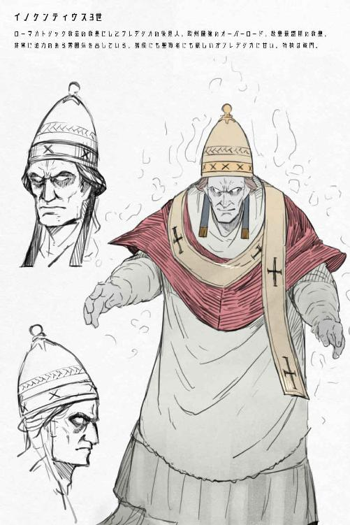

| 神聖じゃないよ！ 破門皇帝フレデリカさん上巻: ～中世欧州、教皇最盛期の終わり～ | |
| 左高例 | |
| (2018) | |

この物語はフィクションです。登場する人物・団体・名称・宗教等は実在のものとは関係ありません。
イタリア半島東部にイエージという街がある。
海に面している港町でもなく、優れた名産品や格式高い大聖堂が存在するわけでもない、なんの変哲もない街だ。
時は西暦一一九四年の十二月二十六日。キリストの降誕祭が先日にあり、一月六日の公現祭まで人々には祝日が続く時分だ。
イエージの中央広場には大きな天幕が掛かっていて、街の婦人たちは集まりその中に入っていた。広場の周りには男や子供が大勢取り囲んでいて固唾を呑んで天幕を見守っている。
街にやってきた旅の行商人がその光景に首を傾げて、広場にいた男に尋ねた。
「こりゃどうしたんですかい？ 皆さん集まって。サーカスでも始まるので？」
「それどころじゃない。皇后様が一大事なんだ。子供が生まれそうでな」
「皇后様が！？ そりゃあ大変だ......」
天幕の中には重大な問題を抱えて貴婦人が篭っていたのだ。
当時の神聖ローマ皇帝ハインリヒ六世の皇后コンスタンツァが、突然産気づいてここで出産を行なっているところであった。
また、コンスタンツァはイタリア半島南部からシチリア島を領地にするシチリア王国の初代シチリア王ルッジェーロの娘なので、このイタリアでは知られた女性だった。
ハインリヒ皇帝が権力を増そうとシチリア王に戴冠するため式典が行われるシチリア王国の首都パレルモへと向かう行軍に、彼女は護衛の騎士らを連れて後から付いてきていたところだった。
皇帝一行は反乱の多い地方を通るために同行は危険だったが、正統にシチリア王国の王位を持っているのがコンスタンツァだったので共に行く必要があった。身重だったので念のために離れていたのだが、その道中で出産の日が訪れたようだ。
彼女は兵士や女官に指示を出してイエージの街中の者を集めさせた。
その理由は周りを警護している兵士が声を張り上げて説明していた。
「今日この場でコンスタンツァ皇后陛下は御子を出産なさるからなー！ 本当の子供か怪しいとかそんな連中が出ないように貴様らは証人となるのだ！」
「すごく説明的だ！」
「でも本当に大丈夫なのか？ コンスタンツァ様......ほら、あれだろ？」
男らは顔を見合わせて頷く。
「コンスタンツァ様......もう四十歳ぐらいだし」
「高齢出産だからなあ......」
しかも初産であった。医療の発達していない時代では出産は母子共にとてつもない危険が伴い、時にそのどちらかが死ぬことも珍しくない。
ローマにも近い地域に暮らしているので善良なるキリスト教徒である街の住民らは、新たな命の無事な誕生を祈っていた。故に、皆は心配そうに天幕を外から見守っているのだ。
誰かが応援だとばかりに声をあげた。
「頑張れー！」
「皇后様頑張れよー！」
「ババア無理すんなー」
市民の残酷な発言に兵士が叱り飛ばす。
「おいコラ！ 皇后陛下を今ババアっつった奴誰だー！ あれがタイプで愛し合ったババア趣味なハインリヒ皇帝陛下にも謝れ──ぎゃあああ！？」
天幕から椅子が飛んできて兵士の頭に直撃し黙らせた。
観衆らが静まりかえりその椅子が飛んできた方向を見る。青ざめた壮絶な表情の貴婦人が肩で息をしながら天幕の入り口に立っていて、周囲を睥睨した。
当のコンスタンツァ皇后だった。出産間近で息も絶え絶えな彼女はドスを効かせた声でいう。
「......今誰か、私をババアって呼んだか......！」
彼女の殺さんばかりの眼差しに、街の男衆は顔を背けながら世間話風に言う。
「コンスタンツァ様って乙女だよなあー」
「こう、まさにシチリアのお姫様って感じだもんなあー」
「わざとらしいわ！」
皇后は別の椅子をぶん投げて、白々しい態度を取った地元の名士二人に直撃した。周りの男らが哀れそうに倒れ伏した二人を見る。イタリアの姫はアグレッシブだった。
制裁を果たしたコンスタンツァは苦しげに呻く。
「うっ......」
と、力んだのが悪かったのかうずくまったので慌てて天幕の中の女官達が引き入れた。
幕外の男たちはハラハラとそれを見守りながら──やがて。
中から元気な産声が聞こえて、女官と婦人達の祝福の声が溢れ出てきた。
それを聞いて集まった民衆達も大喜びであった。なんの特徴もない街だったが、そこから神聖ローマ皇帝の嫡子が生まれることとなったのだ。記念になるだろう。
そのような事情を抜きにしても、新たなる子供の誕生を素直に祝う敬虔な信徒達であった。
ともあれ......。
こうして生まれた子供には、血縁上祖父に当たる偉大な皇帝の名を取って与えられた。
その名はドイツ風にいえばフリードリヒ。王としての世襲権を持つシチリア王として考えればイタリア風にフェデーリコとなる。
だがこの物語では、ドイツ語、イタリア語、ラテン語、フランス語、アラビア語など多くの人物によって喋る言葉は異なるが全て日本語に──現代での言葉へ変換して表記するために、統一して主人公の名前はこう記す。
フレデリカ。
神聖ローマ皇帝とシチリア女王の間に第一子として生まれた、『彼女』の名前であった。
生まれた子供をじっと見てコンスタンツァは呟いた。
「......女の子だよね」
「うん」
「まあ、いいか」
女ならば王になれない──ということはなかった中世ヨーロッパの時代に、フレデリカは生まれた。
後にシチリア王になり、神聖ローマ皇帝になり、エルサレム王になり──唾棄すべき破門者や新しくも偉大な改革者、早すぎたルネッサンス、世界の驚異とまで呼ばれた人物であった。
シチリア島の位置は、よくイタリア半島の形が長靴に形容されるがそれが蹴っ飛ばした石のような位置に浮かぶ島だ。
現代でそこはイタリア共和国の領土であるが、中世当時は独立していて多数の民族が入り乱れ、地中海交易の拠点にもなっていた国際色豊かな国であり、シチリア島と南部イタリアを合わせた地域を『シチリア王国』と呼んだ。
この地域を支配する民族も何度か代わり、その度に住人の力関係は変化する。今はノルマン人が征服して興したオートヴィル朝が続いているが、しばらく前まではイスラム教アグラブ朝、更に昔は東ローマ帝国の勢力下だった。
ドイツ系、ギリシャ系、アラブ系と様々な人種。そして交易に訪れる商人達と中東やイタリアの物品が行き交う街がシチリア島北部沿岸にあるのがパレルモであった。
毎日教会の鐘が鳴り響く、白い石造りが整然と並んだ美しい町並みをした活気のあるシチリア王国の首都だ。
その街に──正確にいえば『ノルマン人の宮殿』と呼ばれる館に、四歳でシチリア王に戴冠させられた少女王フレデリカは住んでいる。
「──いよっし！ 脱出成功！ 遊びに行こっと！」
なのだが、その当人は警備の網をくぐり抜けて宮殿を脱出していた。
フレデリカ、六歳の頃であった。
彼女は四歳でパレルモに連れて来られて戴冠させられ、その後一年はてんやわんやと本人も混乱する状況に対応するのが精一杯で、もう一年は家庭教師についた司祭に常識を教えこまれることで費やして、そして今は抑え切れぬ好奇心と共にノルマンニ宮殿を脱出して街に出かけようとしている。
現在は六歳の少女王だったが、国王とは思えないラフな格好をしていた。太腿の膨らんだズボンにシャツの上から地味なチェニックを羽織り、『赤髭王』と呼ばれた祖父フリードリヒ一世に似た赤みがかったブロンドの髪は長く伸ばしてツーサイドアップに紐で括り纏めて、頭にターバンを巻いている。
そもそも彼女は、物心付いたら突然王にさせられた様なものなので遊びたい盛りなのだ。
いや、王族として生まれたのならば普通はこの年まで生きればそれなりの王族らしい振る舞いが出来るものなのだが、彼女は両親に殆ど構われる事なく育っているのでどうもその辺りの常識が疎い。
彼女を指導するはずの両親で、父親の神聖ローマ皇帝ハインリヒ六世はシチリア王になってすぐマラリアに感染して病死し、母親の皇后コンスタンツァも幼いフレデリカの後見人を権力者として最も偉大なローマ教皇へと頼んだ後に、心労からか既に亡くなっていた。
それ故に親から叱られない立場にあるフレデリカは自由な気質を持ち育っていた。
彼女はお忍び目的で巻いたターバンを押さえながら、市街に続く街道を疲れも知らぬ軽い足取りで駆けて行く。
「いやーグイエルモは話がわかる教師で助かるね！ 聖職者の堕落バンザイだよっ！」
走りながらちらりと宮殿を振り返り、家庭教師の司祭を思い浮かべながら笑みを浮かべた。
グイエルモ、というのが彼女の家庭教師だ。
この時代は知識人或いは学者といえば大体聖職者と決まっていて、グイエルモはローマ教皇直々にフレデリカの教育係に派遣されてきた男であったのだが。
「世俗のことばっかり教えてくるグイエルモも悪いって。興味が湧くよそんなん」
と、フレデリカが評価するようにグイエルモという男は上役の前では従順で敬虔な教師役の聖職者であるものの、その目の届かぬフレデリカの前では神学や聖書、教皇の教えなど普通の勉強のみならず彼女が興味を持ったことはなんでも教えるのであった。
地理学や博物学、歴史に異教。市場経済から旅のことまで彼の知識は幅広かった。
そんな彼だったが教会などでは厳格に决められた食事の時間でもないのに、夜中にこっそりと起き出し、隠していたパンとワインをたっぷりつまみ食いしていて行儀の悪い姿をフレデリカは目撃したのだ。聖職者の堕落だ。
その自堕落な振る舞いを口うるさいことで有名な教皇に手紙で書かれたくなければ......と、子供っぽい脅しをフレデリカが仕掛けたら、グイエルモはパンを食べながらあっさりと遊びに行くことを見逃してくれた。
彼としてはフレデリカが外で問題を起こしても「いやー未来の皇帝は元気ですね」と報告書を送るだけで済ます算段であり、実際それでなんとかなると思っていた。名家から聖職者になったわけでもない、俗人出身の彼はこれ以上の出世も見込めないので気楽に過ごしていた。
......しかしながら、フレデリカが街に向かって歩いていく後ろから、木々の影に隠れながら尾行している黒覆面でカソック服の男がいることに彼女は気づいていない。パンを片手に見守る忍者めいたグイエルモは、一応の警護なのだろう。
「よーしっ！ 街で我だけの部下を見つけるぞ！ あと本も欲しい！ 文字の練習だから買うのも許してくれるよねっ」
本を欲しがっているフレデリカは六歳にして既に、シチリアの地で使われるシチリア語と聖書のラテン語を自在に使いこなせる。他にもフランス語やドイツ語も勉強中だ。
彼女としては更にアラビア語も学びたいのだがさすがにグイエルモもそれは教えるほど使えず、学ぶには教えてくれるアラブ人を招くしかない。フレデリカは遊びたい盛りと同時に、学問の勉強に関しては熱心で積極的だ。
なにはともあれ、普段は宮殿にこもりっぱなしの彼女が今まで外に出ていた経験といえば、二歳から三歳の頃にイタリア中部にある教皇領の街スポレートで暮らしていたぐらいしかないので、楽しそうに外を満喫しながら、鐘の鳴る街へと向かうのであった。
****
多くの国家が面する地中海に浮かぶシチリア島は、利便性の高い立地故に古代から幾度も戦火を受けて支配者が変わる度に街の様相を変えている。
しかし戦火を免れた古い建物も残り古都といった雰囲気と、新たに作られた異なる文化圏の様式が混ざり合い、街の作りも多国籍風だ。
フレデリカが暮らすノルマンニ宮殿からしてもギリシャ風、アラブ風の意匠も見られるように、町中にもそれらしい建物が混在している。
道を行く人も金髪で肌の白い人種もいれば黒髪の彫りが深い人種もいる。ターバンを巻いたアラブ人もいるし赤毛も珍しくはない。
町中で意気揚々と歩くフレデリカが特別に目立つわけでもない、国際的な街なのであった。
そもそも四歳の頃にこの国の王になってから王宮に籠もりっぱなしであったフレデリカの姿を知る一般人は殆どいない。せいぜい知られていることは、まだ年端もいかない少女が女王になっているということぐらいだろう。
「そんなわけでフレデリカちゃんは自由に振る舞うのでした！ いやー賑やかだなあ」
誰にともなくルンルン気分でそう宣言したフレデリカは市場を見回し、品定めをする。
街の喧騒も色とりどりの商品も行き交う人々も、なにもかもが新鮮に見えて彼女は嬉しい気分だった。
「ヘイ！ おじさん！ そこの棒っきれみたいなものはなんだい？」
「こりゃ果物だぞ。一つどうだい。甘いぞー」
「食べるよ！」
と、フレデリカはにこにこと笑いながら露天商で売っていた、宮殿で見たことのない食べ物を購入した。
小遣いは家庭教師の財布から拝借していた。対価として、
（フレデリカちゃんの直筆、神サマを称えるポエムを教皇に送る手紙に入れておいたから大丈夫でしょ）
そう判断する。
彼女の保護責任者であるローマ教皇にそれを送れば非常に喜ばれることを知っていた。教皇が後見人だけあってキリスト教に従順な姿勢が好まれるし、そうすれば報告をするグイエルモの評価もフレデリカをしっかりと教育できているとされ良くなるはずだ。
ところで──。
彼女は後見人のローマ教皇を割と軽く思っている。それは彼女の性根からの信心の少なさと直接は会話をしたことがない不信感からだろうか。会ったことのない相手ではどうも後見されている実感が湧きにくい。
さておき、この時代のローマ教皇は第一七六代、イノケンティウス三世である。
通称──『最強の教皇』
歴代教皇で最強ランキングをつけたら必ず上位に入るぐらいの、僅か三十七歳にして教皇になったローマカトリック教会の支配者であった。
この時代、非常に大きな権威を持っている彼が後見人となったことでフレデリカの最低限な身の安全はヨーロッパ中で保証されているといっても過言ではない。
イングランド、フランス、ドイツ、イベリア半島のレオン、カスティーリャ、ナバラやその他各地の諸侯に大司教などは、イノケンティウスに説教を受けるだけで無条件に泣いて謝るかもしれない。
長らく続くローマカトリック教会に於いて、教皇による権威の全盛期を定義すれば彼の時代だといわれているほどだ。
そんなイノケンティウスなのだが立場が弱い者には甘かったりする性格をしているので、孤児になったフレデリカの奔放さも基本的に許しているようだ。
実際に、放任気味なグイエルモ以外にフレデリカの家庭教師をしたりする聖職者からは「フレデリカがやんちゃ過ぎる。半端ないレベルで」と教皇に何度も手紙が送られているが、フレデリカに対して叱りの言葉一つ寄越したこともない。まあ、彼は非常に忙しかったので放置していただけかもしれないが。
見たこともない教皇のイメージを浮かべながら彼女は露天で購入した植物の茎らしい食べ物にかぶりつくと、じゅわりと激烈な甘さが口に広がった。
「うひゃあ！？ なにこれ！ 凄い甘い！？」
「へへへっそいつは遥かインドから伝わったとされるサトウキビさ！ キプロス島で栽培しているのを輸入したんだ。こいつを精製して砂糖を作るみたいだけどよ、そうするとべらぼうに高くてな」
「こりゃあ美味いよ！ 儲かりそうだなあうちの国でも作れないかなあ」
「はっはっは。王様にでも頼まないと無理だろうな」
その顔を知られていない女王はサトウキビを吸いながら神妙に頷いた。麻薬的な美味を感じる。国で作れば手軽に手に入るし、他国に売りつけて儲けられそうな気がした。かなり欲しい。
（なるほどなるほど......ふふふ、我が権力を持ったら見てろよ〜シチリア国内でバンバン栽培してやる！ 毎日食べてやるんだ！）
などと彼女はしっかりサトウキビを記憶に刻み込んでおいた。
今は国内に関して彼女は殆ど──というか一切手出しができない、名ばかりの王であるのだがいずれ政治を行って国を動かしていくことを彼女は意識している。
王として幼い頃から戴冠させられ、自由のない暮らしには辟易しているが。
しかし王の地位自体には幼いながらに彼女としても魅力を感じていたのだ。面倒なことは幾らでも起こるだろうが、彼女は女王としてやる気があった。
それはそうとして普通に遊べる今のうちに遊んでおこうという打算もあり、サトウキビをしゃぶりながら更に街を散策する。
（今度グイエルモに作物とかの図鑑を取り寄せるように頼んでおこう）
買い物資金を手にフレデリカは足の向くまま店に顔を出して色々な物を見て、時に購入した。
「おばさーん、ワインちょーだいな！」
「あらあら、坊や。まだ早いんじゃないの？」
「いいの。はい代金」
と、フレデリカが先に金を払ってしまうと困ったように酒屋の女はワインを半分あまり、葡萄汁で割ったジュース風のものを出してきた。
子供に配慮したのだが、初めて街で飲むワインにフレデリカも気にせずに飲み干してもほろ酔い気分で街を歩く。
城の女官にこのだらしのなさを見られたら「修道院に叩きこむぞ」と怒鳴られる有り様で、昼間から酔っぱらいつつ平べったいケーキを齧り自由を満喫している彼女は、パレルモの港へと足を伸ばした。
「わー......いい景色」
潮風が吹いている中でフレデリカは目の前に広がる海と白い石造りの港、数々の行き交う船を眺めた。空と海は同じように美しい青色が水平線の彼方で交わっている。宮殿の窓からでも見えるが、実際に港に来て眺める景色には感動を覚えた。
パレルモの港を称えた人物は、これより六百年は先の人間だが、ゲーテが有名だ。
『美しく晴れた午後。
ぼくたちがパレルモの港へついたとき、海辺のあたりに漂っていた霞の明るさは、どんな言葉でも言い表せない。
輪郭の清らかさ、全体のやわらかさ、色調のわかれぐあい、空と海と大地との調和。
それを見たことのある人は、生涯それが忘れられない──』
そうゲーテは『イタリア紀行』に書いている。
シチリア島の北沿岸に面するパレルモには多くの船が停まっていて、また水夫が絶え間なく動き回っている。
シチリア王国の船だけではなく、イタリアのコミューンと呼ばれる自治都市の船も見られる。ジェノバやピサの印章がついた船はイタリア近海を航海する商船として有名だ。それらの都市は海賊業もやっているので、他の都市の船にみかじめ料も取っている。
地中海にはヨーロッパ・アフリカ・中東など様々な海に面している地域から交易船が出ると同時に、それらの街や島を根城にする海賊も割拠していた。
「そういえばジェノバとかの北部イタリアはうちの父親や爺さんと敵対してたんだっけ？ まさか恨みで攫ったりしてこないよなー」
フレデリカが聞きかじりの知識を確認するように呟いた。
アルプス山脈の南、イタリア北部も神聖ローマ帝国の一部であるのだが、自治都市という名目を掲げて支配を拒否している都市がいくつも存在している。
フレデリカの父ハインリヒも祖父フリードリヒも神聖ローマ皇帝として、それらの地域を纏め上げようと幾度となく争っていたが、結局上手くはいかなかった。
「一番仲悪そうなのはミラノだったかな。我の爺さんに滅ぼされたりソッコー再起して逆襲したり......さすがにシチリアにまでは仕返しに来ないと思うけど、一応注意しとかないとなー」
父のことはよく覚えていないが、既に伝記的偉大な存在になりつつあり自身と同じ名を持つフリードリヒ一世の活躍は聞いていた。
一方でハインリヒ六世こと先代の神聖ローマ皇帝にしてフレデリカの父親は、彼女が三歳の時に急死したので思い出らしい思い出は少ない。
出会ったのは一度きりで、フレデリカの記憶では彼女が二歳の頃アッシジの街で皇帝ハインリヒは厳かに、
『フレデリカ！ お前は最強の皇帝になるのだ！』
などといって水をぶっかけてくるオッサン的な印象しか残っていなかった。そこでキリスト教の洗礼を与えられたのだが、思い出してもなんとも言えない記憶であった。
その一年後にハインリヒは急死し、慌てた母親がシチリア王にフレデリカを継がすように教皇と掛けあって更に一年後、フレデリカが四歳で母親のコンスタンツァもこの世を去っていった。
少女であるフレデリカがシチリアの王──というのも奇異に感じるかもしれないが、この時代に女王はそう珍しいものではない。元々シチリア王の継承権を持っていたのは母親のコンスタンツァの方であったのでその娘が王位に付くのは不思議ではなかった。
王として若すぎると思われるかもしれないが、実質の管理責任者は教皇イノケンティウスが現在は持っており、フレデリカはお飾りのようなものであった。また、王の権力を取り込もうと狙うシチリア王国の諸侯も相手が教皇では分が悪いとして大人しくしている。
「うーん、地元が賑やかなのは良きことかなー......イスラム側からもじゃんじゃん船が来てくれれば本や珍しい物も入って嬉しいんだけど、海賊やらなにやらで安定してないんだよね」
潮風を浴びて酔いを覚まそうと頭をぐらぐら揺らしながら、港近くの階段に腰掛けてフレデリカはぶつぶつと呟いている。
そんな彼女を少しばかり離れた位置で見ている男たちがいた。
日に焼けた肌に潮で傷んだ髪の毛、船乗りの格好をした厳つい輩だ。
「貴族の子供......だよな？」
「身なりもいいし、間違いねえだろ」
「近くに騎士とかいねえな......やるか」
海辺に用のない人間が一人で行けば──当時は高確率で人攫いに会う。
初めて外に出かけているフレデリカはそのことを知らないのだ。とはいえ、知った後でも幾度となく従者を連れずに街に遊びに出かけていたが。
貴族の子供ならば捕まえて金目の物を奪って人質の金を要求するか他所に売り払う。フレデリカを一見見たところ、肌は日焼けしていないし髪も整っている可愛らしい子供だ。奴隷にしても高く売れるだろう。彼女が今日一日遊び歩いて出会った国民と同じく、攫おうとしている彼らもまた自分たちが狙っているのが国王とは知らない。
教皇が後見しているとはいえ、このシチリアでもフレデリカを利用しようとする貴族は多く存在している。或いはそれらの手に渡るかもしれない。
シチリアの実権を握ろうとするドイツ系の貴族とイタリア系の貴族の争いである。フレデリカを傷つけこそしないかもしれないが、その身柄を確保して自分たちの勢力をシチリア王と結びつけることは大きな意味を持つ。
そして、男の三人が麻袋を持って後ろからフレデリカに近づいていった。更に離れたところから黒覆面の忍者神父がそれを見守っていたが、
（まあ......ちょっと反省する程度に痛い目にあってから助けてもいいでしょう）
と、手に持ったパンを食べつつ待機している。
その時。
「よう、嬢ちゃん」
フレデリカの正面から男が話しかけてきた。
十六歳ぐらいだろうか。少年と言ってもいい年頃の、上半身裸でスカーフを首に巻いて頭に笠を被っている軽薄な表情の男であった。
船乗りらしく日に焼けた肌をしていて、腕や腹にはたくましい筋肉が浮かんでいる。肩には材木らしい大きな丸太を担いでいるが、その重さでふらつくような様子もない。
目をぱちくりとさせてフレデリカは言葉を返した。
「その帽子なに？ 珍しいね！」
「おいおい、いきなり帽子のことかよ......こりゃ中国からの行商人が持ってきた笠だ。軽くて濡れてもすぐ乾いて便利なんだぜ？」
「へえーいいなー」
「でも嬢ちゃんの髪型には似合わねえだろうよ。ターバンってのはウケるけど」
などと指で笠を叩いたり、フレデリカの頭を指さしたりしながら少年は笑った。
それから彼は指をフレデリカから少し逸らしてその背後──忍び寄っていた男たちへ向けた。
「で、そのオッサン共は嬢ちゃんの知り合いか？」
「ん？」
フレデリカが振り向くと、固まった表情で船乗りたちは足を止めている。
彼女はぽんと手を打って彼らに言った。
「あ！ もしかして家の人？ 変装してこっそり付いてきてくれてたの？」
その言葉に、三人は目配せをして媚びたように笑った。
「へ、へえ。それで坊っちゃ......お嬢様？ をお迎えに......」
すると彼女は即座に哄笑を返した。
「くははははは！ んなわけないじゃーん！ 馬鹿じゃないのなんでちょっとでも騙せるかなーって思うわけ！？」
「オッサン達、その小汚え悪党ツラで貴族の家臣はねえだろ。ウケル」
指をさして笑い声をあげるフレデリカと少年。二人はひと通り笑い合うと「いえーい」とハイタッチをした。六歳の子供なフレデリカに階段の下から腰も曲げて合わせてくれる少年である。
三人の人攫いらは当然ながら馬鹿にされて怒り心頭になった。
「が、ガキ共！ 調子に乗るなよ......おああああーッ！」
「しゃあッ！」
船乗り達は雄叫びを上げると、薄く質の悪い傷んだシャツを盛り上がった自らの筋肉で破り弾けさせた。いや、正確にはちゃんと手で破っているのだが雰囲気的に筋肉の膨張で破れたかのように見えた。
上半身の血管が浮いた分厚い筋肉を露出させて、硬い皮で覆われた指を向けて告げる。
「人間は普段三割程の筋肉しか使っていない......しかし船乗りになれば十割使用できるのだ」
「貴様らには辛く厳しい明日を用意してやろう......」
「舐めるなよこのメスブタ共がァ......」
フレデリカはその船乗りたちの筋肉やら雰囲気に気持ち悪さを感じながら呟く。
「うっわあ......なんかグロい」
少年が彼女の前に出て不敵に嗤い、暗い灰色の目を向けながら手で幼女を制して庇った。
「おっと気をつけな。船乗りパワーの前じゃあ一般人なんざ、藻屑も同然だ」
「そんなにヤバイの」
少年は退かずに、自身よりも体重が倍近いような相手三人に相対する格好だ。
筋肉モリモリマッチョマンの船乗りはパワーアップした状態で低い声を出す。
「小僧......貴様も船乗りらしいが数の差の前には如何ともし難いと教えてやる......」
「ガキが格好つけようとしても勝てない......悔しいだろうが当然のことよ」
「鐘を鳴らせッ勝負開始だッ！」
口々に男らは立ちはだかる少年に言うが、彼は小馬鹿にしたような笑みを浮かべるのみであった。
守られて離れたフレデリカは図々しく、少年の背後ではなく横から戦いを観戦しようと回り込み焼き菓子を頬張って見守る。
周りの行き交う水夫達も足を止めて喧嘩を見る者もいた。港での喧嘩など日常茶飯事だから気にしない者も多いが。
少年は笑ったまま、一歩足を寄せて接近する。
「確かに船乗りのパワーは侮れねえけどよ、世の中には船乗りをぶっ倒し慣れてる奴もいるってことだ」
「なんだと......？」
「そらよぉ！」
先頭の船乗りが疑問の言葉を口にした瞬間に、少年が担いだままだった巨大な丸太が躊躇いなく振り下ろされ脳天に直撃し、男を叩き潰した。
「ッ〜〜！？」
声も発せずに地面に叩きつけられる男を見て唖然とした二人目の顔面に容赦なく丸太の突きが入れられる。
まともに丸太を食らった男は頭蓋骨を陥没させんばかりの威力に吹き飛ばされた。
三人目。少年が腰だめに構えた丸太を横薙ぎに振るうと、それを防御しようとした相手の両手がへし折れる音を立てて殴り倒された。
驚くべきは腕よりも太い丸太を、まるで細い棒きれでも振り回すかのように軽々と扱う彼の膂力だろうか。
余裕の表情で少年は言う。
「ぶっ壊すのに容赦しねえことだ。それが海賊流だぜ」
「海......賊......」
「海賊に襲われたくなきゃ金で雇える海賊に頼め。マルタ島出身、ジェノバ海賊のアンリ・ディ・マルタでェす。どうぞよろしく」
少年──海賊のアンリはそう告げて、脇腹を押さえて倒れている水夫のこめかみを蹴りぬいて再び丸太を担ぎ直した。
周りで見ていた水夫がざわめく。
ジェノバの海軍が強力なのは海賊を雇い入れているからだというのは知られている。いや、海賊と海軍の違いが殆どないのだ。
ジェノバでは都市内で常に権力争いが起こっており、敵方の船を一方が海賊行為して奪い船員は奴隷に売り飛ばしたり、追放された一門が海賊として戦力を揃えて攻め込んできたりと戦い慣れている。
イタリア一凶悪な海賊都市国家。それがジェノバと言う地中海のギャング的存在であった。
抗争と海賊活動で戦い慣れているために暴力の振るい方に容赦がない。そこらの力自慢の船乗りや人攫い程度では相手にもならなかった。
故に下手に糾弾すれば己の船が海賊にマークされかねないために、誰もアンリに物申す水夫はおらずに倒れた男たちもそのままに、民衆たちは喧嘩見物から去っていく。
そんな彼に、怯えずフレデリカは話しかける。
「凄いなあ、アンリっていうの？ 海賊かー物騒だねー」
「おう。マルタで生まれてジェノバで暮らし、陸より船の上の方で長く生きてんだ。ま、あいつらが手を先に出してなかったら嬢ちゃんを料金後払い保護者請求の楽しいクルージングにご招待してやろうかと思ったけど気が変わったぜ。オレが悪事をするのはいいが、オレの前でオレより先に悪事をする奴は許さん」
「うっわあ自己中〜」
「なあにそのうちこのアンリ様の名も地中海に轟かせ、海賊王にオレは成るってか？ ぎゃはっ」
「くふふー王になったら我と同格だね」
「うん？」
おどけて言うアンリにフレデリカは笑いながら顔を近づけて、ターバンを解き赤い髪を曝け出した。
「どうも。シチリア王のフレデリカちゃんでぇす。どうぞよろしくね！」
その目を──からかうような色をした瞳を向けられて、アンリは固まった。
新たにこのシチリアで王となった者は少女で、祖父譲りの赤いブロンドをしていると聞いたことはあったが......。
アンリの背中に冷や汗が浮かぶ。さすがに傍若無人の海賊とはいえ、他国の王族に関わる面倒事は厄介だった。シチリア王にしてローマ教皇から庇護されている子供が、ジェノバの海賊に拐かされたなどという話になれば彼の立場がマズイことになる。
周囲にフレデリカの護衛騎士がいるような視線を感じて焦って辺りを見回す。港の影で黒覆面の男がサッと隠れたのが見えた。
ひょっとしてアレが護衛だろうか。或いは誘拐犯を排除する暗殺者か。もしかしたら即宗教的断罪をしてくるテンプルナイトかもしれない。アンリは冷や汗が背筋に浮かぶのを感じた。
覆面の護衛には気づいていないフレデリカがニヤニヤとしながら上機嫌に言う。
「海賊かー？ んんー？ なんならうちの海軍にでも雇ってあげようかー？」
「いえあの、用事を思い出したので......」
「遠慮せずに城に来いよ、未来の海賊王」
「ぎゃ、ぎゃははは！ それじゃあなお姫サマ！ いい女になったらまた誘ってくれ！」
そういって──なにかヤバイ政争に巻き込まれるかもしれないと危険信号が脳内で鳴り響いたアンリはダッシュで逃げていくのであった。
その後姿を見ながら、フレデリカは、
「ぷっ」
と、息を吐いて笑いながら大げさに肩を竦めた。
「ま、半分は本気だったけど半分は冗談だし......優秀な海軍は欲しいんだけどね。今日のところはこれで帰るか」
そういって彼女は──誘拐されかけたとは思えない軽い足取りで道を戻り始めるのであった。
「それにしても、攫われそうになるなら対抗手段考えないとなー......大きな声を出してこの人痴漢ですとか事案発生とか先に挨拶運動とか。よーしこれから頑張るぞー！」
大聖堂の鐘が鳴り響く音を聞きながら少女は笑う。
後の神聖ローマ皇帝、現シチリア王フレデリカ──自由気ままで周りの者の頭痛の種になった彼女の子供時代は、シチリアの首都パレルモでで様々な人や文化と出会いながら過ごしていく。
****
その頃、キリスト教の総本山であるローマにて。
「き、教皇イノケンティウス聖下......」
かつてのローマ皇帝コンスタンティヌス帝によって建てられたラテラノ宮殿は教皇庁の本拠地だ。そこの執務室にて悠然と座る男に、聖職者はおずおずと書面を差し出した。
物怖じした態度を取っているが単なる三下の坊主ではない。赤い衣を着ている怯えた男は、服装ですぐに枢機卿としれた。
聖職者として教皇を顧問・補佐する立場にある枢機卿をして怯えさせるのが眼前の男だ。
顔立ちは均整が取れていて姿勢も正しい印象を与えるのだが、眼力がとてつもない威圧感を発しており光を放っているかに感じる。それに呼応しているように、全身から聖霊めいた波動が放出されている錯覚すら覚え、目眩がするほどの緊張感が部屋に漂っていた。
彼こそ欧州最強の教皇──イノケンティウス三世であった。
彼の前に立てば枢機卿だろうが王だろうが乞食だろうが等しく矮小な信徒の一人であることを否応なしに自覚させられる。あらゆる不正を見抜く眼光は原罪を抱えた人間では耐え難い罪の意識を植え付けられ、さながら閻魔大王に睨まれているようだ。
教皇はゆっくりと口を開き反響する声で返す。
「なんだぁぁぁ......」
吐いた息は地上の邪悪をすべて消し飛ばし、試練として人々をなぎ倒しそうな重々しさをしていた。
そんな意味不明の形容すら脳裏に浮かんでくる気絶寸前の状態で、枢機卿は手紙を差し出す。
「シ、シチリアのグイエルモ司祭から最近の報告が届きました。シチリア王の近況です」
「ぬぅぅぅ......どぉぉれぇぇい」
それを受け取ってその場で開き、イノケンティウスは確認をしていく。
子供ながら学習意欲が高くて聖書の書き取りさえもうできることや、市井に関して興味を示して政治や経済の勉強もしていることなど、教皇としてはしっかりキリスト系の教育と、王としての熱意ができていることに満足を覚える内容であった。
そして折りたたまれた一枚。
聖書の句を引用した拙いながらも興味深い詩がフレデリカ直筆で書かれており、それを見たイノケンティウスは、
「くはぁぁぁぁ......」
──と、笑った。天の国へと強制的にいざなわれそうな畏怖を覚える笑みだった。
枢機卿と教皇の側に控える司祭らは一斉に身をすくませて言い合う。
「ひっ......今の笑みだけで十字軍が千人は増えたな......」
「マジですか教皇聖下ハンパねえ......」
ローマの巨人はまだ見たこともないフレデリカの成長を、遠くローマの地から壮健であれと祈っているのであった......。
シチリア王国の少女王フレデリカは七歳であった。その年齢では当然だが、名前だけの王であり彼女に統治能力も権限も殆ど存在していない。
するとどうなるかというと、フレデリカから王位を奪おうとする反乱こそ起きなかったがシチリア島と南イタリアの都市や貴族諸侯がほぼ独立した形で自領を統治したり、勝手に領土争いをしたりしていた。
だが今はむしろ子供が下手に手を出してなにも知らぬままに国を動かす──或いは他者の思惑で動かされてしまう──よりは、自由に学び世界を知ることが重要なのかもしれない。
そんな彼女の味方は現状、ローマ教皇より教師役として派遣された一人のひょろりとした中年男性、聖職者グイエルモだけであった。
****
その日フレデリカはグイエルモの操る馬に相乗りしてシチリアの首都パレルモ郊外の、モンレアーレ大聖堂へ向かっていた。
護衛の兵士というのはまず雇っている兵士自体の数が非常に少ないので連れていなかった。宮殿の警備に人員を割かれているし、大聖堂までは比較的安全な道なので野盗などに合うこともないからだ。
馬を走らせるグイエルモの背中にしがみつきながら彼女は声をあげる。
「グイエルモは馬にも乗れるんだねー？」
フレデリカが呼びかけると彼は飄々とした口調で応える。
「そりゃ乗れますとも。フレデリカさんも訓練をして乗りこなせるようにするのですよ。王でも騎士でも聖職者でも乗馬技術は必須です」
「ははあ......パレルモの町で見かける坊さんは片手に聖書を持ち歩いて大人しそうだから、どうも馬を走らせてるイメージなくてさ」
「旅をしない司祭はそうかもしれませんが、拙僧は手綱を放しても馬に乗れます。楽勝で」
するとグイエルモはひょいと両手を外して、更に腰を浮かして馬の上に立ち上がった。
突然騎手が二足直立をしたが、馬は手綱を離されても依然疾走中だ。この司祭は広範な知識だけではなく、妙な器用さを持っている。
慌てたのが彼の背中を掴んでいたフレデリカであった。彼女も引っ張り上げられるように若干腰を浮かしていた。泡を食って彼を怒鳴る。
「座れぇ！ 馬の上で立つなよ！ 騎馬民族かお前は！」
「別に自慢したくて立ったんじゃないですよ。モチが急に食べたくなってもっちゃもっちゃ」
「馬に乗りながら聖餅を食うなー！」
馬上で立ちつつ懐から取り出した聖なるモチこと聖餅を真顔で食うグイエルモ。
なお、聖餅というのはもち米を練って作ったやつではなくパンのことだが、ここではモチと表記する。特に深い理由はないが。
グイエルモはフレデリカが振り落とされそうで軽く泣きそうになっているので渋々と馬の背に座り直し、片手でモチを食いながら馬を走らせモンレアーレへ向かった。
モンレアーレ大聖堂は真新しく綺麗な教会であった。
一一七四年に建設を開始してその八年後に完成したために築三十年ぐらいで、改修工事も行っているため古ぼけたところは一切見えない壮麗な聖堂だ。大理石の柱がぴかぴかとしていて、近年増築された僧房によって聖職者たちも大勢常駐している。
フレデリカとグイエルモの二人が聖堂に入ると中の聖職者が総勢で並び、大きな歓迎を受けた。幼女のフレデリカは殆ど名前のみのシチリア王だが、彼女はローマ教皇と大きく繋がっている。機嫌でも損ねたらどうなるかと、聖職者らはむしろ戦々恐々とした気分であった。
子供ながら胸を張り堂々たる様子でフレデリカは進み、まずは礼拝を行なった。その後ろに真面目ぶった顔になったグイエルモが続く。彼は周りの目がある時は真面目なのだ。
儀礼的な礼拝を終えて、
「それじゃあ皆は通常の業務に戻っていいよ。あとはグイエルモに案内してもらうから」
と、フレデリカは声をかけると安心したようにひとまず集まっていた聖職者たちは散らばっていく。フレデリカ歓迎用の御馳走を食堂で準備したりもしているらしく、パンを焼く香ばしい匂いが漂っていた。
ひとまず自由になったフレデリカはこのモンレアーレ大聖堂の見どころの一つ、天井まで広がる精巧なステンドグラスを見上げて眺めた。
近くで見ようと、グイエルモに肩車をさせて歩かせる。これならば転ぶ心配もなく合理的だ。
モチを再び食いだしたグイエルモが言う。
「職人芸のモザイク模様ですな。さてフレデリカさん。わくわくクーイズ」
「どんとこい！」
「このモザイク技法で教会を飾るのはどこの国の職人が行ったでしょうか。一、イタリア人。二、ノルマン人。三、サラセン人。四、ギリシャ人」
「四のギリシャ人だね！ 東ローマ帝国の正教会でよく見られるやつだろ」
「左様。よく勉強していますね。イタリア半島はかつて東ローマ帝国が全盛期の六世紀頃には征服されていましたが、その際に建てられた教会にもモザイク技法の装飾がよく見られます。割と正教会はカトリックに比べて派手好きですので。このシチリアはあちこちの民族が統治し、技術や文化が混在して残っているということですな」
「パレルモの宮殿にもあるしね！」
なにせ今でも船で直接にイスラム圏やギリシャ東ローマ帝国などと繋がっているのだ。シチリアはヨーロッパでも有数の国際的な国であった。
「ほら、あそこではシチリア王が戴冠を受けている図ですよ」
「へえ......隣のオッサンは誰？ 教皇......じゃないよね。もしかしてキリスト？」
グイエルモが指を向けた方をフレデリカが見上げると、マントを身に着けた男たちと王冠を授ける質素な服装の男が描かれている。
グイエルモは頷いて聖なる感じに返事をした。
「ＹＥＳ」
「旨いこと言ったつもりか！ まったくこの聖職者は......でも実際は戴冠って教皇や大司教から受けるんだよねー神聖ローマ皇帝なんかも。神から授かる王権って言うには微妙にランクダウンしてる感じ」
「教皇も神の代理人ということで立派なものですよ。フレデリカさんも或いは皇帝になり得るかもしれないのですから滅多なことは言わない。出世に響きますよ」
「えー？ 我が皇帝？ あり得るの？」
疑わしげにフレデリカは聞いた。彼女の両親は念願の子供に舞い上がって、いずれは王だ皇帝だと願っていたのではあったが。
「なにせ教皇イノケンティウス聖下からやたら気に入られていますからなあ。そのうち皇帝にする前振りかもしれませんよ」
ローマ皇帝で女帝の東ローマ帝国に存在するが、神聖ローマ帝国では前例がなかった。しかしだからといってあり得ないとも限らない。それほどに、後見人のイノケンティウスは推しているように思え、彼の権力も強かった。
「皇帝かー我のおとんがそれだったけど実感ないなー」
それから、ふと疑問に思ったことをフレデリカは口に出す。
「そういえば歴代のシチリア王に『グイエルモ』一世二世っているけど君と関係あるの？」
「くっ......拙僧の秘められた血筋に気づいたか......！」
「秘めてないよねっ！？」
「冗談です。このご時世、名前被りは多いですので拙僧は全然グイエルモ王とは関係がない。いいね？」
「う、うん」
有無を言わせぬ迫力を感じてフレデリカは頷いた。
「と言うかそもそもこのガラス絵のグイエルモ二世は、フレデリカさんの母上、コンスタンツァさんの甥っ子ですので関係としては貴女の従兄に当たりますよ。生まれる前に亡くなっているぐらい年が離れていますけれど」
「へえー」
正直、四歳の時に死んだ母親のことはあまり覚えていないフレデリカだったが。四十過ぎで初産をハッスルしていたらしいので、無理が祟ったのだろうとは思っている。
簡単にノルマン王朝シチリア王の系譜とフレデリカの血縁上の関係を辿れば次のようになる。
一、祖父で初代王ルッジェーロ二世（一一三〇〜一一五四年）
二、伯父のグイエルモ一世 （一一五一〜一一六六年）
三、従兄のグイエルモ二世（一一六六〜一一八九年）
四、従兄のタンクレーディ（一一八九〜一一九四年）
五、タンクレーディの息子グイエルモ三世（一一九四年）
六、父親にして神聖ローマ皇帝ハインリヒ六世（一一九四〜一一九七年）
七、母親のコンスタンツァ（一一九四〜一一九八年）
決してそれぞれが順当に、争いもなく継承されてきたわけではないが、フレデリカはノルマン王朝とドイツの神聖ローマ皇帝の家系ホーエンシュタウフェン家の間の子として、シチリア王位を継いでいる。
この貿易的にも農業的にも豊かなシチリアの王というだけでかなりの力を持つことは確かである。フレデリカも今でこそなにもできないが、親政が行えるようになる日が楽しみだった。
歴代君主について軽く解説をしたグイエルモは指を立てて告げる。
「──とまあこのようにこれまでの王にはグイエルモの名が三人もいるのですが、生まれた子供に自分か親の名をつける人も多いのですね。フレデリカさんも祖父で偉大なフリードリヒ一世から取って名付けられたのですから」
「なるほどね。つまり子供の名前が思いつかなかったら適当に親の名前をつけとけばいいのか」
「なにもなるほどじゃない件について」
「我の父の名はハインリヒだったね。メモっておこ」
「そんな適当な理由で親の名前を継がせるわけじゃないと思いますが」
モチを食いながらグイエルモは遠い目をするのであった。まあ、先のことだから自分には関係ないかと思いながら。
****
それからの日々も相変わらずフレデリカは王宮で勉強したり、街に一人で出かけて遊んだりと自由に過ごしていた。
身分を隠すのが面倒になったのか街ではすっかり噂のちびっ子女王フレデリカちゃんとして目を引く存在になっていたが、それが逆に誘拐や悪党の襲撃を防ぐ監視の目になったようだ。
自国の少女王が護衛もなしに遊び歩いていたら国民はハラハラして見守るしかないだろう。
もちろん陰ながら、モチを食いつつ見守る男がついていたのは言うまでもないことだ。
身分が知られているので貸本屋からも貴重で高級な書籍を借り受けることができるようになったのも利点だ。
なお本屋というのは中世のヨーロッパでは珍しい存在で、普通は書籍を大量に写本などで持っているところは修道院ぐらいだったのだが、このイタリアでは貿易によって外国の本が手に入ることと、ローマ帝国時代に本を扱う商人がいて裕福な市民も本を買う習慣があったことから、数は少ないが書店が存在していた。
「うわーっ！ 『アルマゲスト』のアラビア語版じゃん！ これ欲しいこれ欲しい！ 店主のおじさん売ってよ出世払いで！」
羊皮紙の本を嬉しそうに手にとって彼女は頬ずりをした。僅かに薬の臭いがしてなめらかな手触りをしている。本は彼女のお気に入りの娯楽であった。
「フレデリカちゃん......こないだも君、『ピカトリクス』をそう言って持っていったじゃないか。っていうか神聖ローマ皇帝の娘が魔導書を読むなよ」
呆れた顔で常連になっている少女に、後半は小声になりながらも書店の青年は言う。おじさんと呼ばれる年でもないが、髭が生えているのでフレデリカにはそう見えた。
アルマゲストはローマ帝国時代に書かれた天文学書でピカトリクスは占星術の魔導書だ。どちらもアラビア語で写本されているが、前者はともあれ後者は王が読むような内容ではない。なにせ内容は神秘的で魔術に触れている。
特にフレデリカはローマカトリック教会の教皇を後見人とし、ヨーロッパのキリスト教守護者代表であった神聖ローマ皇帝の娘だ。異端の魔術と関わっていい身分ではない。
「気にしない気にしない。バレなきゃいいの」
しかしながらこの娘には信仰心を親の胎内に忘れてきたようで、敬虔なふりを取り繕うことはできるがその性根は決して教会や神の教えに従順ではなかった。
フレデリカは中身の乏しくなった財布を確認しつつ考えて、
「ええと......じゃあ支払いはさ、二つとも我がそのうちラテン語に翻訳して写本作るからそれを持ってきて代わりにあげよう！」
「大丈夫かねえ」
「シチリア血の掟六条！ 約束は絶対！」
「わかりましたよ、頼もしい女王様」
「わーいありがとー店主！ くふふふー！」
凄まじく上機嫌そうに本を鞄に仕舞いこんで、踊るように彼女は店を後にするのであった。
店主は頬杖をつきながら見送って苦笑いで溜め息をつく。
「あれだけ楽しそうなのに誰が断れるよ」
──シャツに『フレデリカファンクラブ』と刺繍されたシンパの男は、次はどんな彼女が気に入りそうな本を仕入れようかと目録を漁りだした......。
既に街にはマニアックな連中が彼女のファンクラブを結成している。立ち寄った海賊のアンリも地元民ではないのにこっそりファンクラブシャツを買っていったぐらいだ。
国王が活発な美少女だった場合、国民からそこはかとない庇護欲に似た人気が出るのも当たり前ではあった。
そのような方法で書籍も手に入れていたフレデリカは、中東から輸入している書物に使われる文字のアラビア語の勉強も進めていく。
「アラビア語の書籍で最も読み手が多いので教師に困らない書物がイスラム教の聖典コーランだよ！」
「とうとう暗誦まで出来るようになりましたなあ......」
これならばシチリアにいるイスラム教徒の殆どがスラスラと読めて解説できるので、そこから言語を学んだ。
もちろん、監督役のグイエルモにはローマ教皇に告げ口しないよう頼んでのことだが。まさか教皇も自分が後見人をしている前皇帝の子がコーランを読んでいるとは想像していないだろう。
「他にもバンバン語学を覚えていくからセーフだって！」
国の公文書や欧州共有語として使われるラテン語、そのラテン語が変化して話し言葉、方言として使われるようになった地元のシチリア・イタリア語、中東の書物や商人との交渉に使われるアラビア語、父はドイツ系なので将来に使うことになるドイツ語、使えて損はないフランス語にスペイン語に英語。
自発的な英才教育でこの奔放な少女はそれらすべてを自在に操れるようになる。国際色豊かなシチリアで育った事が言語の学習意欲を引き立てたに違いない。
「よーし！ 我はいろいろ頑張るぞい！」
ともあれ少女時代のフレデリカがこのように宮殿で本を読みながら過ごしていた、とある日に事件は起こった。
*****
その年の十二月に入ったばかりの頃であった。
シチリア王フレデリカがまだ実権を持っていなかったシチリア王国では各地方の諸侯が王による統治から外れて半ば独立し、自らの裁量で領地争いまでしている状況になっていることは既に述べた。
本来ならば後見人のローマ教皇イノケンティウス三世がシチリア王国を管理しなければならないのだが、最強の教皇はここのところレコンキスタ中のスペイン・イベリア半島、内乱中のフランスとイングランドと神聖ローマ帝国にそれぞれ手を伸ばし関わっている真っ最中なのでシチリアは放置されていた。
この時代、外国と戦争さえしていなければある程度放置しても自治都市と封建領主が勝手に統治はする。特に都市ごとの独立性が高いイタリアではその傾向が強い。
しかしシチリアの中には今のうちに権力を増しておこう──或いはフレデリカを我が手に収めようと内乱を起こす者も存在している。
それらは大きく分ければ母方の血筋を持ち上げるイタリア系貴族と、父方の血筋で担ごうとするドイツ系貴族の争いだ。
フレデリカの王位は教皇が認めた絶対君主だ。それに取って代わることは不可能だが、自分の派閥に取り入れようとパレルモの周辺都市に陣地を張って睨み合っているのであった。
一二〇二年にその均衡は破れた。
イタリア派閥を出し抜いたドイツ派閥の代表、マルコバルドという騎士が軍勢を引き連れてノルマンニ宮殿へとやってきたのだ。
老将に一歩入りかけた年齢で立派な髭を蓄えた無骨な男が、門で朗々と声を張り上げる。
「開門せよ！ フレデリカ陛下にお目通り願う！」
二百人の兵団を前に宮殿の守備兵は雇われの数十人。どうすることもできずに兵士らは無抵抗に入り口を開けてしまう。
なにせ城にはフレデリカとその教師グイエルモ、後は世話役の女官しかいない。兵士に命令を下す存在のフレデリカはまだ幼く、その下に武官などはいないので一般兵に判断を下せるわけもない。
悠々とした足取りで下馬したマルコバルドは側近を引き連れて宮殿を進んだ。
このマルコバルドと言うドイツ人の男──かつてフレデリカの祖父フリードリヒ一世の部下であり、共に十字軍へ赴いたこと歴戦の騎士であった。
十字軍帰りというだけで一目置かれるこの時代、彼に従う兵もまた士気が高く統率された動きで従っている。
「輿は用意してあるな」
マルコバルドは輸送手段を確認する。輿は貴人を乗せるための道具で、古代ローマではレクティカとも呼ばれたものだ。
「はっ！ ......しかし、少女を連れ出すだけならば馬車のほうが早いのでは」
「馬鹿者！ あのフリードリヒ陛下のお孫様だぞ！ 下手な扱いをしてみろ！ おれが首を刎ねてやる！」
「失礼いたしました！」
現代でも偉大なドイツの王として挙げられることも少なくないフリードリヒ一世の人気は当時から高く、それの部下だったことがマルコバルドの誇りでもあった。
シチリア王国の権力争いとしてフレデリカを確保しようとしているが、乱暴に扱うつもりは毛頭ない。むしろ彼の大義名分的な意識としては、イタリア派閥の貴族に先に奪われないように保護するという目的がある。
どちらにせよ、景品の如く扱われる側からすればたまったものではないのだが......
一団は宮殿の広間に足を踏み入れると、そこは明かり窓が開かれていてよく室内を見渡せ、城の守備隊が部屋の左右に整列していた。
邪魔をするでもなく、直立でマルコバルドを受け入れるが如く並んでいる。
広間の中央に少女がいる。
七歳になるフレデリカ。光を反射すると僅かに赤く輝いて見えるブロンドの髪がマルコバルドの目を引いた。懐かしい『赤髭王』フリードリヒを思い出させて感慨深い気分になる。
王にしては簡素なローブを着ている少女は仁王立ちをして待ち構えてじっと彼を見ていた。
マルコバルドは一人で歩み寄り、フレデリカの目の前で跪いて厳かに告げた。
「陛下。お迎えに──」
彼の言葉は最後まで続かなかった。
同時にフレデリカが己の服に手をかけて、力任せに引きちぎる。予め破って仮縫いしただけのローブはちり紙のようにビリビリに破けて剥がされる。
その下は綿製のパンツ一枚でほぼ裸になっている。
そして叫んだ。
「キャアアアアアアアアー！ 小児性愛者ァアアアアア！」
「はっ！？」
即座に彼女は、マルコバルドへとあんまりにも酷いレッテルを張り始めた。
フレデリカは間髪入れずに尻もちをついて後ずさりする。
「おーかーさーれーるー！！ 髭もじゃのオッサンから姦淫されるうううう！！」
「えっ！？ な、......ええ！？」
「服も破かれてゲスな表情で迫ってくるうううう！ きゃああああ！ 鬼畜の所業おおおお！ 神様教皇様おーたーすーけー！」
半端無く不名誉なことを大声で叫び転げまわる。
慌ててマルコバルドは立ち上がり手を伸ばすが、破られた着衣の少女に手をのばすオッサンにしか周りの目には映らなかった。
フレデリカの演技によって無理やりそういう場面に改竄されたのではあったが、あんまりな状況に彼の部下達は一歩引いた。
マルコバルドは動揺しながら呼びかける。
「お、お前ら！？ なんだその目は！ そんな目的でおれが来たんじゃないことは知っているだろう！」
「リーダー......正直こんな趣味はどうかと思いますわ」
「信じてたのに......まさかリーダーがそんな罪深い性癖だったなんて。呪われろ」
彼らとて権力や権益は欲しい。シチリア王を確保し、その補佐という形で自らの利益を追求するためにここにやってきたのだが──まだ幼い少女王に暴行を働くのは論外のことだ。
そもそも傷一つ付けないようにしなければ間違いなくローマ教皇からの怒りに対して言い訳が利かないのに、このリーダーは有ろう事かそういう趣味だった──と、部下は思い込まされた。
「違う！ 断じて違う！ なんでそうなるんだ！？」
否定をするが被害者であるらしいフレデリカちゃんは半裸で転げまわりながら叫びまくる。
「ほぎゃああああ！！ このままじゃオッサンに純血散らされて虚ろ目監禁されるううう！！ くっ殺せええええ！！」
「しません！ しませんから落ち着いて下さい陛下！」
「いやああ！！ 寄ってくるなあああ！！ エロ宗教画みたいに乱暴する気だあああ！！」
「そんな宗教画どこで見たんですか！ 教会に怒られますよ！」
釈明をしようとするがフレデリカが泣きながら転げまわり、マルコバルドは捕まえるため必死になっているので部下が見ていられずにマルコバルドを羽交い締めにした。
「待って下さい少女大好きバルドさん！ それ以上やっちゃいけない！」
「なにを！？ おれがナニをやろうとしているように見えているのだ！？ お前らも早く騒がれる前にフレデリカ陛下を確保しろよ！」
「あんたの児童ポルノ趣味にぼくらを付き合わせないで下さい！ 自分を見失わないで！」
「目的を見失ってるの露骨にお前らだよね！？ 不名誉なレッテルを張らないでくれる！？ ええい陛下！ 聞いて下さい！ お話を！」
取り押さえられるマルコバルドは混乱する頭のままで、なんとか彼女へ届けと大声で目的を伝える。
「おれはただ、フレデリカ様をコシ（※輿のこと）に載せたいだけなのです！」
「......」
「......」
「......」
広間を無言の音が包んだ。矛盾するが、そのような音だった。誰もが息を飲み込み、そして守備兵もマルコバルドの兵も一斉に叫んだ。
「小児性愛者だァ────！！」
もはや疑いようがなかった。いたいけな、パンツ一枚の少女王を腰に載せたいなどと正気を疑う小児性愛的犯罪思考であった。
そして広間の奥の暗がりから唐突に、司祭服を来た男が片手に持ったモチを食いながら近づいてきた。
「拙僧は通りすがりのローマ教皇庁の者ですが、ここに罪深い男がいるとかいないとか」
全員の視線がグイエルモに行った後、続けてマルコバルドへ移った。
「もしそれが本当ならばまあ軽くこの場で彼とその関係者全員に、パレルモ内での教皇聖下より与えられた権限によって『聖務禁止』を言い渡します。状況を聖下に報告してから正式に『破門』に......ああ、もしかしたらアルビ派の異端者と認定されるかもしれませんね。名前控えますので右からどうぞ」
マルコバルド一同の顔が引きつった。
『聖務禁止』とはつまり、キリスト教会が絡む行事への参加を禁止されることだ。例えば子供が生まれても洗礼は受けられない。死んでも葬式は行われない。ミサにも行けずにうしろゆびさされ組確定だ。いわば、村八分に合う。周囲に社会不適合者だと周知されてしまう。
更に『破門』となれば村八分どころか村十分ともいえるほどに、その者が持つあらゆる権利を教会の名において剥奪される。こうなれば買い物すらできずに石を投げられる。病気になっても治療を受けられず土地を没収されても裁判も起こせない。殺されても相手は罪にならない。家来や兵士は裏切ることを推奨され、農民らは税を納めることを止める。ついでに関わった者にもとばっちりが行くので完全に社会的に抹殺されるのである。破門にされれば王でも泣いて謝るという。
『異端』はもはや火炙りは免れないだろう。実際にフランス南部では何人もの異端者が己の信教を貫いて死罪にされている。別にアルビ派或いはカタリ派と呼ばれる異端の者らが少女姦淫に対して命を掛けているわけでもないが。
上司の幼女趣味でそんな巻き添えを食らってはたまらない。
マルコバルド含め城に押し込んできた兵全員その場でひれ伏した。
「すみませんでしたァ！」
「これで失礼します！」
そして逃げるように兵を引いていくのであった。
それを見送って、体を隠すためにマントを着せられたフレデリカとグイエルモはハイタッチをした。
「いえーい！ 成功したね！ 痴漢冤罪不名誉作戦！」
「まあ......普通に対処するには戦力がおりませんからなあ。追い返すにはやむを得ない作戦だったでしょう」
「そうだよ！ っていうか仮にも一国の王なのに、ほんの二百人ぐらいに王宮まで踏み込まれて大ピンチとか我って雑魚すぎ！ どうにかしてよグイエルモ〜ン」
「しょうがないですねえフレ太くんは」
「フレ太くん！？」
「そうですね......兵力の増員......は難しいでしょうけれど」
グイエルモは考える。現在、第四回十字軍直前である。シチリア王国は王が幼い故に巻き込まれないのだが、出費や兵力をこちらに回してくれるかは怪しい。
実際、こうしてフレデリカがいずれかの勢力に無理やり攫われでもしないとも限らない現状は確かなので、対策が必要だ。
「手紙では埒が明きませんから、拙僧が直接に教皇庁へと赴いてお願いしてきましょうか。少なくとも、再度のお触れをシチリア内に出してフレデリカさんの後見人は教皇聖下であること、他の勢力は手出し無用と伝えるようにしますか」
「今のところはそれぐらいしか無理かー......しかも教皇にまた恩を売られることにならない？」
「大人になったら返せばいいのですよ。皇帝になって十字軍をやるとかで」
まるで十字軍が慈善事業かお祭りの一環のように言うのでフレデリカは顔を顰めた。
今回で四回目になる十字軍は、第一回以外は成功と言えずに遠征して多くの諸侯が兵力や出費の損害を受けていた。だが、キリスト教とローマ教皇の権威を示す戦争なので教皇としては実績として十字軍は行いたいのだ。
「かる〜く言うけど凄い面倒事だからねそれ。十字軍なんて金と兵士をドブに捨てるようなもんだし」
「そうですね。だから、もしどうしても十字軍をやらねばならないのだったら、どうすればいいかを考えておくのもいいかもしれません」
「簡単に言ってくれるなあ」
ヨーロッパから中東までの長距離遠征で、移動手段や食料の補給、土地勘のない場所での奇襲の警戒、連合軍ゆえの指揮系統の複雑化、遠征中の国内の問題対応など十字軍には幾らでも困難となる要素が存在する。余程のことがない限りは成功すまい。
そういった国際情勢もフレデリカはグイエルモから教えられていた。
「とにかく荷物を纏めて明日にでもローマに渡りましょうかね。一応フレデリカさんのことなら教皇聖下もさっさと面会してくれるので、二〜三日で帰ってきますよ」
「じゃあお留守番だねー......我が直接行ってもいいんだけど？」
「いやあ、仮にもフレデリカさんはシチリア王ですからね。拙僧のような聖職者と違って、教皇聖下に会うには色々手順が必要になってくるので余計に時間が掛かるのですよ」
「ふうん。じゃ、待ってるから早く帰ってきてね」
そうして、シチリア国内の勢力によるフレデリカ誘拐未遂事件を受けてグイエルモは一旦ローマへと向かうことにしたのであった。
だが世の権力を求める者は時に執念深く、或いは不名誉すらもかなぐり捨ててやってくることを失念していた──わけではないが、どうあっても今は対応が困難であったのだ。そのためにローマ教皇に頼みに行くという手を打っている最中であったのだから。
*****
ローマ、ラテラノ宮殿執務室にて。
書類の山に目を通しながら書き物をしている男がいた。
全身から聖霊の気配を発していて部屋の空気は外の数倍重い。眼からは常に聖なる光が輝きを放ち、睨むものが悪魔ならば浄化消滅させかねない神聖で強力な波動を感じる、そんな男だ。
それは教皇イノケンティウス三世の存在感に他ならない。
彼の万聖殿であるその部屋に枢機卿の一人がノックをして入ってきた。名をウゴリーノ卿といい、イノケンティウスの甥に当たる。
「どぅぅうした......」
低く震える教皇の越えに、部屋に控えていた部下もびくりと背筋を震わせる。
部屋に入ってから脂汗が止まらない。数秒で一リットルぐらい出た気がする。親戚だというのに、まったく別次元の存在に思えてならない。ウゴリーノはそんなことを思いながら報告をする。
「パ、パレルモのグイエルモ司祭が報告に参りました！」
「今、手が離せぬが......よい、通せ」
「はっはい」
つばを飲み込んで枢機卿は待たせていたグイエルモを呼んでくる。
呼ばれて執務室に入る前に食べかけだったモチをゴクリと全て飲み込んでグイエルモは咳払いをして部屋に入る。意外に通されるまで早かった、とも思う。面会の手紙を出しても数日は待たされるかもしれないとは思っていたが、一日ほどで通されたのは彼もフレデリカのことに関して重要視しているということだ。
「教皇イノケンティウス聖下。この度は面会をお受け頂いたこと感謝存じ上げます」
恭しく彼はそう言いながら膝を付いて頭を垂れた。
普段の飄々とした彼の態度からすれば非常に白々しい様子であった。
「よい。頭を上げよ」
「は」
そう言われたのでグイエルモは教皇と向き合う。イノケンティウスの鋭い眼光からは、普段の不真面目な態度などを全て見透かされているように感じるが、別段グイエルモは動揺しない。
見透かされているのならば今更取り繕っても意味はないからだ。注意されれば従うが、そうでないのならばセーフの範疇だと彼は思っている。
「急用──であったな。どうした」
突然の訪問にまだ用件も聞いていない。予め書状も手渡したのだが、急ぎの執務を行っていたので目を通していなかった。
グイエルモは頷いて告げる。
「実はシチリアの王宮に賊が王を攫いに来まして」
「ぬぁあああんんだとおおぉぉ！？」
「ひっ」
イノケンティウスの怒りが籠もった叫びに、部屋に控えていたウゴリーノが腰を抜かしかけた。ビリビリと聖なる波動がグイエルモの体を震えさせる。天地鳴動せんばかりの怒号であった。あまりの衝撃波的な威力に、レオン王国アルフォンソ九世が教皇に届け出を出していたカスティーリャの王女ベレンゲラとの婚姻許可がとばっちりの余波で消し飛び、なかったことにされた。
執務室が震えたあとでグイエルモが咳払いをし続けて報告する。
「ご安心ください。兵はおりませんでしたが、王が機転を利かせて撃退に成功いたしましたので」
「ほう──よくやった」
碌に護衛の兵士もいない中で誘拐犯を撃退するとは、見込みのある子供だとイノケンティウスは一瞬安堵するが、すぐさま聖なる怒りは噴出してくる。
「だが、どこのッ異端だ！ 忌まわしきアルビ共か！ それとも異教徒の海賊か！」
「シチリア国内が現在無統治状態のため、勢力争いが起きていまして。それでシチリア王を担ぎ上げようと企てた貴族の犯行です」
「ぬううううう......許せぬ」
シチリア国内の騒動には、後見人のイノケンティウスがその目を向けているヒマがないことも一助しているので苦々しげに彼は呻いた。
というのも、現在ヨーロッパはあちこちで荒れている。第四回十字軍はヴェネツィアの目論見で迷走しているし、獅子心王リチャードを失ったイングランドとフランスが領土争いを活発化させている。また、フランスでは異端のアルビ派に対して国王軍に圧力を掛けさせ、イベリア半島ではレコンキスタが継続中だ。
そうなればまだ教皇のお膝元とも言えるイタリアでは、争いとはいえ規模の小さなものなので放置していても大きな問題にはならないだろうと思っていたのだ。
フレデリカが襲われるまでは。
「むううううう......それでも多くの兵力をシチリアに常駐させる余裕はない。今一度厳しくッ！ シチリア王に手を出すことは庇護しているこのローマ教皇を侵害することだと諸侯によぅく言い聞かせるしかあるまい......」
「是非にお願い致します──」
グイエルモは深く頭を下げて頼んだ。実質の戦力を持っていないが、莫大な権力を持っている教皇の力とはそれだ。フレデリカに手を出すとヨーロッパ中のキリスト教徒から敵だと思われるようにすれば軽々しく手を出す者もいなくなる。
なお余談だが、フレデリカの母コンスタンツァから後見を頼まれたイノケンティウスであるが、同時に父ハインリヒの弟で現在の神聖ローマ皇帝フィーリプも後見を名乗り出ている。
しかしながら、イノケンティウスとフィーリプは仲が非常に悪い。フィーリプの皇帝位を認めず、ローマ教皇から対立皇帝としてオットー四世という男を選出したぐらいであり、そのせいでフィーリプとオットーはドイツで争っているので叔父はフレデリカの面倒を見られない状況だった。
シチリア王国のドイツ系貴族も多くはフレデリカの父ハインリヒが残していったもので、概ね今はフィーリプ派だ。故に対立している教皇派に教育されそうになっているフレデリカの確保に躍起なのだろう。
ともあれ再度、フィーリプへの牽制も兼ねてそう布告をしようと話が纏まりかけたときに、慌てたようにノックの音が響いた。
二人は顔を見合わせて頷き、教皇が厳かに言う。
「入れぃ」
「し、失礼します！」
慌てて入ってきたのはパレルモに住む司祭の一人であった。部屋にいるグイエルモと教皇の姿を見て顔をこわばらせ、喉が枯れたような声で言う。
「どうしたぁ......落ち着いて話せぃ」
「は、はい。大変です。シチリア王の元へ再びマルコバルドの勢力がやってきて、その身柄を確保しました！」
「なぁぁぁぁにいいいいぃ！」
「ひっ」
グイエルモも目を見開きつつ、気絶しかけたその司祭を助け起こす。
昨日の今日だというのにどうやら賊は、グイエルモが宮殿を離れたと見るやいなや襲いかかってきたようだ。それを知ったパレルモの司祭も、一日遅れにローマへと報告にやってきたのだろう。
静かにグイエルモが問いかける。
「落ち着いて、詳細を報告なさい」
「そ、その、グイエルモ司祭がいなくなってからまずはイタリア貴族の少勢力が宮殿に放火未遂をした......と主張しています」
「はぁぁぁぁぁぁああ......」
教皇の天国の園から沈むような吐息に背筋を震わせる司祭。明らかに怒っている。
「そ、それで......このままではイタリア貴族にシチリア王が害されると宣言したドイツ貴族、マルコバルドらが強制的に保護へと乗り出し、現在は宮殿にて監禁状態にあります」
「くはぁぁぁぁ......」
教皇の顔には青筋が浮かんでいて、今にも破門を告げそうだ。報告に来た司祭は泣きそうになった。
だがグイエルモは「ふむ」と腕を組んで、
「タイミングが良さすぎますな。恐らく放火未遂は自作自演。拙僧がいないうちにシチリア王を確保し、教会の介入を『実質的なシチリア王国統治を放棄していた』という名目で拒否し、王を傀儡にするつもりかと」
「おのれぇぇぇぇ......！ 断じてッ許せぬ......！」
シチリア王国の管理を怠っていた点を突かれればイノケンティウスも痛い。
そもそもイタリアは各都市が自治精神を多く持っているので、下手に管理するのは非常に厄介な問題なのだ。
だからといって一介の貴族が王を確保し、己の思うがままに利用するのは別の問題であり看過できない。
今すぐにでも誅罰を与えたいが、現状では教皇庁に動かせる戦力はなかった。だが他国の軍を介入させてはそれを理由に恩を売った他国からシチリアの土地を奪われかねない。
「いっそ──余が兵を率いて教皇の威光を教えてやろうか......！」
「うわー！ 落ち着いてください聖下！」
ウゴリーノ枢機卿が慌てて諌める。
教皇その人が兵を率いて向かうなど前代未聞だ。どれだけフレデリカを溺愛しているというのか。
一応は思い直してイノケンティウスは思案する。
「いかなる理由があろうとも、余が後見を行うと决めたシチリア王は救わねばならぬ」
そのための武力が必要だ。しかしそのような、見返りを求めず騎士団を倒せるほどの力が都合よく存在するだろうか。
「......そうだ。あやつがおった」
教皇は不信心者が見たら卒倒しそうな笑みを浮かべて甥の枢機卿へと命令を出した。
「ハンガリー王妃コスタンツァがローマに来ておるはずだ。王妃とその騎士を呼べい！」
「は、はあ......」
ウゴリーノは一体どういう理由かと訝しく思いながらも返事をして、部屋を出て部下を遣わし、該当の人物へと使いを出させた。
ハンガリーの王妃コスタンツァ・デ・アラゴン・イ・カスティーリャ。名前の通り、イベリア半島のアラゴン王国とカスティーリャ王国の血筋を引く女性である。
彼女がローマに来ていたのには理由があった。
それは今まさに起きている第四回十字軍にて、十字軍を結成したヨーロッパ連合軍は軍の移送費や補給について都合がつかず、立ち往生を起こしていた。予定されていたよりも参加人数が少なく、持ち込みされるはずだった参加者の寄付金が思っていたよりも集まらなかったりしたことが原因だ。
そこに資金と補給の融通をつけたのが商人の都市ヴェネツィア共和国であった。
だが同時に、兵站を握られた十字軍はヴェネツィアの言う通りに軍を進めねばならないことになった。
そしてヴェネツィアが船賃代わりに望んだのはハンガリー王国が支配していた都市ザダルの支配と、海港の確保だ。
慌てたのはハンガリー王で、彼の国はカトリックでローマ教皇庁とも親しみ深い。だというのに、イスラム教徒から聖地を取り返す軍であるはずの十字軍に攻められそうになっていた。
もはや十字軍は当初の目的さえもこの第四回では失っていたといえるだろう。これではただの、ヴェネツィアに雇われた傭兵団でしかない。
ハンガリー王は国を守りつつ、王に次ぐ権力者として王妃のコスタンツァを教皇の元へ派遣し十字軍にザダルを攻めないように要請しに来たのだ。コスタンツァはイノケンティウスを仲人としてハンガリーに嫁いだという縁もあった。
概ねその交渉は上手くいった。そもそもイノケンティウスはハンガリーを攻めろなどと命令しておらず現場が暴走した結果なので、今すぐ止めるように呼びかけることを約束してくれた。それで彼女の用事も済んだところだったのだが......
「コスタンツァ王妃と騎士を連れて参りました！」
教皇による緊急の呼び出しで伝令を受けたコスタンツァも何事かと慌てて馬車に乗りやってきたようだ。
執務室に通された彼女の後ろには騎士がいて、ウゴリーノ枢機卿はその姿にぎょっとした。
その随伴してきた体格の良い騎士は、ラテラノ宮殿だというのに戦場かと思うような厳つい鎧姿なのだ。頭にはバケツを逆さにした形に似た漆黒のグレートヘルムを被り、錆避けにタールを塗ったであろう黒に染まった重たそうな鎖帷子と胸などを覆う板金鎧で守り、手にはガントレット、足にはグリーブを付けているが、その色も黒だ。羽織っている十字の描かれた大きなマントもやはり黒。色あせた赤い十字の文様があるローブを鎧の上から着ているので宗教騎士だとわかる。腰には無骨で頑丈そうな鉄剣を帯びて、マントが背中に付けた盾の厚みで膨らんでいた。
馬にでも乗って移動することを前提としていそうな重量を身に着けた黒騎士は、一つの鉄塊が滑って移動するように王妃に従って歩いて部屋に入ってきた。
（教皇の前で、兜も脱がずに失礼な）
と、ウゴリーノは思いつつもその異様な迫力に口には出せなかった。
「教皇イノケンティウス聖下、従い参上いたしましたわ。この度は我がハンガリー王の嘆願をお受け頂きありがたく存じます。なんなりと私にお命じくださいませ」
「うむ......良きキリスト教の信徒コスタンツァよ。かつての教皇より貸し与えた聖堂騎士を、今暫く余に返すことを許せ」
「隊長を？」
コスタンツァが自分の背後に控えている騎士の隊長へと振り返った。
彼女が子供の頃からその騎士は騎士として王や王妃の側に仕えていた者だった。王とも近い距離で接する立場なのに領地を持っていないのが不思議で、昔両親に聞いたところ彼は宗教騎士団の一人として派遣されているため領地を持たないのだと言っていた。
つまり彼は、ローマカトリック教会に所属する騎士だ。経験の豊富な宗教騎士団が他国の軍へ戦術や陣地構築などの技術を教導する部隊の隊長だった。
「俺か」
黒騎士は低い声を出した。ヘルムに反響して、非人間的な響きに聞こえる簡素な返事だった。
それにしても、宗教騎士だというのに目の前に教皇がいるにも拘らず膝を付きもしないで、兜も脱がない無遠慮な態度である。
「左様。『キリストとソロモン神殿の貧しき戦友たち』よ」
それは通称『テンプル騎士団』と呼ばれる、聖地巡礼者を守るための宗教騎士団を示す名称であった。テンプル騎士団は第三回の十字軍でも奮戦した精鋭の部隊だ。
「今まさに、経験なる信徒にして余の子ともいえる、シチリア王が監禁され窮地に陥っておる。キリスト教の信徒を害する者を──その権威を侮り蔑む異端の輩のことごとくを排し、かの者を救い出せ」
「......」
「余が後見をしているその身柄を奪うとは、或いはこのローマ教皇に対する人質にするつもりかもしれぬ......司祭と枢機卿を連れて行け。不届き者共へ即座に破門を告げ始末をつけろ」
「了解した。異存はない。すぐに向かおう」
黒騎士は手を払ってマントを広げると、背中に装着していた盾を外して手にした。普通の騎士ならば家紋が描かれ、身分を示すものだがそこには神殿の紋様が描かれている。テンプル騎士団のマークだ。
「姫様。暫く待っていてくれ。すぐに終わらせてくる」
「隊長......その、頑張ってくださいませ」
「ああ」
足早に騎士は部屋を出て、部下の従士らを連れに向かった。コスタンツァを護衛するために連れてきた兵数は二十人程度しかいない。だが、十分だと彼は思ったようだ。
威圧するような鎧姿の黒騎士が去っていったのを確認して、ウゴリーノ枢機卿はホッと息を吐いた。
そして自分が気圧されていたことに対して忌々しげに言葉を放つ。
「それにしてもあの男......教皇聖下を前に兜も脱がぬとは無礼な。いったい、どこの誰ですか」
非難するように視線を向けられたコスタンツァは言葉に詰まる。彼女は確かに黒騎士を仕えさせている立場で、時折私的な言葉も交わす程度に親しいのだったが、彼の素性については自分でも改めて驚くほどなにも知らされていないことに気づいた。
「あやつは名無しの騎士よ。名も無ければ名誉も求めぬ。故に無礼など気にすることもない」
「名が無い？ まさか、騎士に限ってそのようなことは......」
騎士というものは名誉を大事にする。それは一般的な封建騎士と違う宗教騎士であっても変わりはない。いや、領地と家を持たないからこそ、名と名誉を誇るはずだ。
そんな中で、名も名乗らずに騎士をしているなど非常識で、怪しすぎる。
「一人だけおるのだ。かつて教皇ホノリウス二世聖下に認められし、名を残さぬ騎士が......」
「ホノリウス二世聖下......ってもう何十年も昔なはずでは......」
謎の黒騎士への不信感は尽きないが、教皇であるイノケンティウスが彼の存在を認めている以上はウゴリーノにもそれ以上悪く言うことはできなかった。
「とにかく、隊長は頼れる騎士なのは間違いありませんわ」
コスタンツァがそう保証するので、イノケンティウスは深く頷く。
「ウゴリーノとグイエルモは出立の支度をせよ。教皇印をつけた書状も用意だ。この件に関して、現地に赴くウゴリーノ枢機卿の言葉が余の言葉である。その場で判断をし、然るべき措置を与えよ」
「は、はいっ！」
「了解しました」
ウゴリーノとグイエルモはそれぞれ返事をして、急ぎ準備へと向かった。
教皇周辺の慌ただしい動きに、コスタンツァは吐息をこぼして呟く。
「そのシチリア王という方を、教皇聖下はとても大事に思っているのですわね」
「無論。貴様も経験なる信徒として大事である。すべてのキリスト教徒を、余の威光で守れればそれが一番なのだが......現実にはそうはいかぬ」
イノケンティウスは遠い目をした。ヨーロッパは現在、あちこちで戦乱が起こり混沌としている。十字軍は成果を上げるどころか、同じキリスト教圏へと攻め込む。レコンキスタは一進一退を繰り返しつつイベリア半島のキリスト教国家間でいがみ合いを始める。聖職者は汚職と権力闘争へと走り、叙任権闘争が続いて国家とローマ教会の関係も微妙だ。
如何にイノケンティウス教皇が権力を持ち、改革と腐敗の粛正を進めようとも動乱の流れは止められない。
彼は思う。教皇のみの力ではヨーロッパを纏め上げることは、残念ながら不可能なのだ。
宗教のトップであるローマ教皇。
そして軍事のトップであるローマ皇帝が共に協力しあっていかねばならない。
だが事実として歴代のローマ教皇と神聖ローマ皇帝は不仲が続いている。今現在も、フレデリカの叔父フィーリプとオットー四世が対立皇帝として争っているが、そのどちらも教皇に従順とは言い難い。お互いに教皇の権威を利用してやろうと思っている。
故に──イノケンティウスは教皇自らが後見しているフレデリカの将来を見据えているのであった。
****
パレルモ、ノルマンニ宮殿にて。
フレデリカは自室のベッドで精一杯目の前の男を睨みつけていた。
「きゃー！ 貞操の危機ー！」
「はっはっは。無駄ですぞフレデリカ陛下。もうおれの評判ズタズタなので気にしないことにしましたから、叫んでも諦めます」
「そ、そう？ 開き直って本当に襲ってこないでね？」
風評被害だが小児性愛者と異名が付けられたマルコバルドだ。彼が率いた軍が現在この宮殿を制圧している。
一度は退いたものの冷静になった部下に励まされて、せめて即座に破門を告げる司祭がいないことを見計らい再度占拠しにやってきたのだ。
彼らの作戦としては今のうちにフレデリカを味方に引き込んで、彼女にマルコバルドを部下にするよう教皇など関係者に宣言させる。
マルコバルドの方からも資金や兵力の提供などを申し出るので、必ずしも悪い話ではない。ただ、一番の部下としてあれこれ味方に便宜を行い、対抗勢力へ圧力を掛けるようにするだけだ。シチリア王家の正統を、マルコバルドらドイツ貴族派にすることが目的であった。
同時にフレデリカの後見人としての権利を前々から主張している叔父のフィーリプに取り戻し、ドイツを中心とした神聖ローマ帝国とシチリア王国の両方へ強い影響力をドイツ貴族が得ようとしている。
「フレデリカ陛下。どうかご機嫌を直してくださいませ。我々は危険なイタリア貴族らから一時的に保護させていただいているだけで、決して貴方様に危害を加える気は毛頭ありません。どうか我々に陛下の御身を守ることをお許しください」
「どうせ自作自演でしょ」
「......」
無駄に鋭い。一度はマルコバルドを痴漢冤罪で追い払っただけあって、年齢よりも頭が回るようだと認識を改める。
この年頃の親のいない子供など、他に保護してくれる者が誰もいない状況で言葉をかければすぐに信じるか、そうでなくとも怯えて言うがままになるというのに。
「......陛下。我々が家臣になれば、あなたは大人になるまで他の貴族らに侮られることも、怯えることもなくなります。このような些末な警護しかいない暮らしではなく、安全にお守りすることができます。我々はあなたの敵ではないことをどうかご理解ください」
甘い言葉を掛けてくるが、フレデリカの反応は冷ややかだった。
「それ教皇の前でも言えるの？ キミの言うことになーんの後ろめたいことがないなら、明日にでも一緒にローマに行って教皇の前で宣誓してみよっか？ だって教皇は我の後見人だから。後見人に断りなくそういうの決めるのって道理が合わないと思うよね。我なにか間違ったこと言ってるかなー」
「......ところで陛下は本がお好きだとか」
マルコバルドは露骨に話を逸らした。
その唐突な話題の転換にフレデリカは小馬鹿にしたような笑みを浮かべながらも肯定する。
「まあね。グイエルモは買ってくれる本が偏ってるし、お小遣い少ないから選別大変だけど」
「でしたら！ 我々がお好きな本を買ってきます。陛下は暫く、好きなだけ読書をしていただければと。申し訳ありませんが、少しの間はイタリア貴族が騒ぎを起こすかもしれませんので読書でもして宮殿にて過ごしてくださるように」
実際は教皇庁からの横槍に対処するためにフレデリカを無抵抗のまま監禁して起きたいのだ。
王である当人が助けて欲しいなどと呼びかけたら彼らの立場はないが、杜撰な警備などで心因的にショックを受けて自室で療養しているとなれば保護を手放すわけにはいかない理由にもなり得る。
まさか教皇ともあろう者が、管理不行き届きでシチリア王の宮殿を襲われた挙げ句にショックで倒れた王を保護している善意の貴族......という体裁にした自分らに、体面もあって無碍には出来ない算段だ。
彼らは少しの間、フレデリカに大人しくして欲しかった。
「好きな本？ なんでも用意してくれるのー？」
「ええ！ なんでもどうぞ！」
「沢山あっても？」
「もちろんです！」
「じゃあ『知恵の館』の本を全部持ってきて」
「......は？」
単語の意味がわからず、マルコバルドは聞き返した。
「中東のバグダードにあるアッバース朝が作った大図書館だよ。膨大な数のローマ、ギリシャの文献を保護していてそれをアラビア語に写本している学問所。ヨーロッパじゃ保管してない貴重な本が沢山だからさあ、それ全部写本にして持ってきてー」
シチリアに来るイスラム商人から聞いた夢のような場所だった。まるでアレクサンドリア図書館だ。是非とも行ってみたい。そう考えていた。
だが現実的には王がぶらりと他国の（それも異教徒の国で、仲が良いわけではない）図書館に入れるとも思えないので、そのうち権力を持てば誰か留学生でも出せないかと思っていた。
しかしながら王でもないマルコバルドは案を出すでもなく、否定をした。
「いえ、あの......それは無理かと......」
「ちぇっ。アレもできない。コレも無理。そんなことでよく我に取り入ろうと思えるね」
「......」
マルコバルドは軽く頭痛を堪える。
彼女はまだ七歳。ほんの子供でワガママを言っただけだ。それに腹を立てても仕方がない。
「とにかく。本日はもうお休みください。明日になれば美味しい食事を用意......」
「お砂糖たっぷりふりかけたパスタ」
「......」
砂糖はそうそう出回らない貴重品だ。完全に輸入に頼っているので、売っていないときは売っていない。更にもはや夜である今は、市も開いていなかった。
マルコバルドは聞かなかったふりをして無言で部屋の扉を閉めた。フレデリカは「ふん」と鼻を鳴らし、白けた顔で見送った。
「ダメダメだね。このままじゃ我の権力がいい食い物にされちゃうのは間違いない。どうにかしないとな......」
フレデリカはマルコバルドの対応を見て、失望の吐息を放つ。
自らの部下になると言っていても彼らが欲しいのは自分たちに従順なシチリア王の権威のみだ。傀儡にされるどころか、下手をすれば適当なドイツ貴族と婚姻をさせられて譲位を迫られるだろう。
とんでもないことだ、と彼女は思う。
「我の権力を手放してなるものか。この国は我の物だ〜」
幼いながらも既に権力欲に取り憑かれているフレデリカであった。
宮殿で勉強漬けになりなんらかの価値観をひたすら刷り込まれていたならまだしも、彼女は町に出て、様々な本を読み、多くの人の話を聞いてきた。
そしてまだ政治を行えない年齢の王なりに、このシチリアをどう自分好みの国にしていくかを考えて過ごしてきた。より豊かに。より国際的に。より自由な国になるように。
例え夫が出来たとしても絶対に王権は渡したくない。彼女の性別は女だが、両親もいない中で育ったせいか七歳児だというのに自立心が非常に大きかった。
もちろん、いずれは教皇からも自立するつもりだ。後見人になってもらっているものの、それは無料の善意ではなく対価の代金を支払う約束で母が交わした契約であって、きっちりと対価を払えばなんの問題もない。
教皇の後見を受けて司祭の家庭教師に親代わりに育てられ、ここまでキリスト教に染まらない者も当時は珍しいだろう。それだけ、パレルモの街はヨーロッパでも有数に国際色豊かであったのだ。
「ドイツ貴族がなにからなにまで我の言うとおりに動いてくれるなら別に担ぎ上げられても良かったんだけど、あれじゃあダメっぽいからなあ。まだ放任してくれてる教皇の方がマシだよ」
彼女を保護したドイツ人らは、決して自由を許さないことが想像できた。
ここに至ってフレデリカという正当なシチリア王の血筋と、神聖ローマ皇帝の血筋を引く少女は教皇と神聖ローマの利権に関して非常に重要視されているのだ。
「教皇が助けてくれるかなー......でも他国の問題に教会が軍事介入するってのも難しいような気がするし、十字軍で忙しそうだからなあ。こうなったら機を見て宮殿を脱出してパレルモの船乗りにローマまで逃げてもらえるかな」
まだ浮足立っている今すぐに逃げるか、兵士らが油断してから逃げるか。
フレデリカはとにかく彼らに従うつもりは微塵もなかった。
「とりあえず、一日ちょっと待てば教皇のところに我が捕まったって連絡が行くはず。もしかしたら破門とかの圧力で開放されるかもしれないから、少し待ってみよ」
フレデリカはひとまず軽率な動きを控えることにした。ベッドに腰掛け、本棚に置かれている書を適当に拾う。ローマから時折出張してくる家庭教師の一人、チェンツィオ枢機卿から贈られた本の一つだ。グイエルモより真面目で堅物な老聖職者だが、本好きなところは趣味が合った。
開いた聖典のページに書かれている言葉を見て彼女は皮肉げに笑い、読み上げる。
「『光は快いものである。目に太陽を見るのは楽しいことである。
人が多くの年、生きながらえ、そのすべてにおいて
自分を楽しませても、暗い日の多くあるべきことを忘れてはならない。
すべて、きたらんとする事は皆空である。
若い者よ、あなたの若い時に楽しめ。
あなたの若い日にあなたの心を喜ばせよ。
あなたの心の道に歩み、あなたの目の見るところに歩め。
ただし、そのすべての事のために、神はあなたをさばかれることを知れ。
あなたの心から悩みを去り、あなたのからだから痛みを除け、
若い時と盛んな時とは共に空だからである』
伝道の書十一章より──と。
......そうだね。我の歩む道と未来は我自身のものだ。他の誰にも渡すもんか」
フレデリカはページを閉じて、英気を養うべく部屋の明かりを消して眠りについた。
翌日も彼女は監禁されていた。兵士や聖職者は追い出されたが女官たちはそのままフレデリカの世話に使われ、彼女の料理の配膳、及び毒味を行う。
朝食の席でフレデリカは肩を落として呟く。
「残念なことに、砂糖パスタは料理に出てこなかったね。たったそれぐらいの自由すら認めない連中が、我にどんな扱いを受けさせるかは知れたものだよ」
「フレデリカさま......わたしが市場に出て砂糖を探しがてら、様子を見て参りますわ。ひょっとしたら救助の話が出ているかも」
「うん。お願い。もし兵士に乱暴なことされたら......申し訳ないけど耐えてね。後で百倍にしてそいつに復讐するから」
「まあ恐ろしい」
兵士からの乱暴か、フレデリカの邪悪な笑みか。どちらが恐ろしいのかわからないが、女官は軽く青ざめてそう言った。
そうして唯一動かせる手駒の女官を使ってパレルモの様子も探りに行かせた。港が封鎖されていたら逃げるに逃げられないからだ。
宮殿に入り込んだ兵士が食い散らかすせいで碌に備蓄の食料などがないことを理由に女官は買い物に行き、そこで情報を集めてきた。
「町の様子は騒然としていました。雰囲気は悪く、兵士らは高圧的で市民は反発しているみたいです」
「へー。あいつら、地元の民衆を鎮める手段すら用意してなかったのかな......」
「そもそも、このイタリアで余所者であるドイツ貴族は鼻つまみ者でもあったのです。ドイツ貴族ホーエンシュタウフェン家に嫁いだシチリア王女コンスタンツァ様すら人気がなくなったほどで」
「うちのおかん不人気だったんだ......」
「それでもフレデリカさまはパレルモで一定の人気がありまして......若くして両親を亡くした少女王が、教皇の後見を受けているのですもの。同情的な者や、天真爛漫に町へと遊びに出かけるために親しみやすい王だと好感を持っていた者もいて......それを監禁しているのだから、いい顔はされませんわ」
「よしよしありがとうパレルモの皆。税を安くしてあげよう」
適当にそう言いながら考える。
占領しているドイツ貴族らに反抗的ならばフレデリカ脱出の協力も得やすそうだ。
しかしパレルモの情勢が悪いのならばもうひと押し、軍人と民衆の間になにか問題でも起きてからの方がいいかもしれない。連中がまともに統治を行わないという大義名分ができる。
フレデリカはもう少し様子を見ようと决めた。
そして、更に翌日の夜中になった。
宮殿の入り口を閉ざして二階から外の様子を警戒していた兵士らが異常事態に気づく。
ノルマンニ宮殿からは町が見渡せる位置にあるのだが、町の方向から松明の光が数十もこちらに近づいてくるのが見えた。
そのように兵士を動かす通知はなく、明らかに別の勢力が迫ってきている。慌てて彼らは叫び、警戒態勢に移った。
「マルコバルド卿を呼べっ！」
「外の兵士はどうしたんだ！？」
宮殿の中は数十人ほどが詰めていて他は交代で外や街、港に哨戒任務を与えていた。このような事態が起これば必ず報告に来るはずなのだが。
敵兵らしい何者かがやってきている報告を聞いて、マルコバルドはノックもせずにフレデリカの部屋へと入った。
「陛下！ 失礼します！」
「ふぁー？ なんだよ煩いな」
亜麻布の寝巻きを着てベッドで横たわっていたフレデリカは目元を擦りながらそう言った。
「敵が迫っております！ 守りやすい大広間へ移動してください！」
「えーやだー我おしっこ行きたーい」
「ッ！ ワガママを言うな！ 早く来い！」
フレデリカの演技臭い言葉に苛立ったマルコバルドは手を掴んで無理やり立たせた。
大人の握力で引っ張られて手や肩が痛む。反感を覚えな筒彼女はますます彼の評価を下げていき、鼻で笑うように告げた。
「緊急時に人の本質って出るよね。我を人質にする？ 盾にする？ やってみろよ」
そう毒づくが、歯噛みするだけでマルコバルドはなにも言わずにフレデリカを大広間へ連れて行った。
そこでは宮殿内の兵士が集まっていて、他は入り口へと詰めている。宝物を守るように──或いは自分の財産を奪われないように、彼らは真剣な顔で軽装ながらも剣や短槍で武装して剣呑な雰囲気であった。
一方、大広間の外で入り口近くにいる者は緊張から汗を浮かべている。
決してノルマンニ宮殿は巨大で堅牢な城塞ではない。むしろ居住性と意匠を凝らした、華美な建物だ。大勢に攻められた際に守れるようになっていない。
どん、と入り口の鉄扉が強く叩かれた。兵士らは剣を握る。ノックの音ではない。金棒で殴りつけたような音だった。
次に聞こえたのは更に巨大な質量が扉を震わせる音。閂をしていた扉が歪んだ。
生じた隙間から外にいる男の声が聞こえてきた。
「行くぜ！ せェの──そらよ！」
その叫びと共に扉を突き破ったのは一抱えほどもある丸太の杭であった。
扉が破壊され床に崩れ落ち、外の光景を兵士は見る。巨大な丸太の破城槌を持ってきたのはどこの軍かと思ったが......松明を手にした者らは後方を取り囲んでいて、丸太の持ち手は僅かに二人。
一人は日に焼けた肌色をした、笠を被っている青年。ジェノバの海賊、アンリだ。
そしてもうひとりは異様な姿だ。真っ黒に塗りつけた鎖帷子の鎧とヘルム。背中にはスイスや北欧などで使われる、斧と槍を組み合わせたような長柄武器ハルバードを交差させて二本担いでおり、テンプル騎士団の紋章が入った盾も背負っている。
よくよく取り囲んでいる者らを見たら兵士ではなく、パレルモの住民たちのようであった。
我らの女王が捕まっているということで協力を申し出て、戦力にはならずとも数を多く見せるだけでも有利だと判断され集まったのだ。他の都市ならまだしも、フレデリカがよく出かけるパレルモでは彼女の人気は高かった。よく知らぬドイツ貴族たちに比べれば、できれば助けてやりたいとも思っていた。
アンリが笑いながら叫ぶ。
「どォも失礼！ たった一人のマルタ海賊団と、こっちも一人のテンプルナイツのお出ましだ！ ヒャッハー！」
「外の兵士は始末した。あとはお前らだけだ」
ぼそりと鉄兜の騎士が告げてくる。マルコバルドの兵は恐慌を起こしそうなほど動揺しつつ問いかけた。
「なんだお前は......！ なにが目的なんだ！？」
「騎士道」
騎士道とは強い力を持つこと。そして正しい行いをすること。
望まぬ相手に囚われた王を救うのは正しいことだと、彼は思っている。
そしてなにより、『この状況はまるで物語のようで、とても騎士らしい行い』だと内心で燃えていた。
迷いなく黒騎士は告げたあと、宮殿内に踏み込むや否や入り口に詰めていた兵士に打ちかかった。
「うわああ！」
「なにっ強──」
彼は二本のハルバードをそれぞれ片手で扱い、薙ぎ払い振り抜けば一瞬で兵士らは打ち倒されてしまう。長柄武器を棒切れでも扱うかのように振るなど、膂力が尋常ではない。
一瞬で敵を倒す隊長を見てアンリは感嘆の声を上げる。
「うっへー......オレの出番ないなこれ」
「元よりお前は単に善良なる協力者だ。殺し合いには参加しなくていい」
「んー......まあオレも地元の意見とか無視して個人参加だからな。大々的に暴れるわけにもいかねえのはそうなんだが」
「任せろ」
この騎士の異常な強さはアンリにも理解できる。なにせ彼の従者らが援護するでもなく主人の騎士を前線に立たせているぐらいだ。
ともあれ彼は小型の丸太を手に、隊長の後ろを離れてついていくことにした。ここまで来て帰って寝るわけにもいかない。その後ろを従者とグイエルモ、そしてウゴリーノ枢機卿らがついてきていた。
門での騒ぎを聞きつけた兵士らが次々と現れ、黒騎士へと向かっていく。
彼はつかつかと歩きながら挑んでくる相手をハルバードの一撃で突き倒しつつ前に進む。
長大にして重量のある武器だが室内でも柄を短く持つことで取り回しをよくして器用に扱い、一度も攻撃を受けることなく進撃していく。
本来、重量的に片手で扱えるような武器ではないのだが、騎士の尋常ならざる腕力と、武器の重みを巧みに利用するバランス感覚により軽々と扱っているように見えた。
兵士が一般人を虐殺するのではなく、騎士と兵士の戦いだというのに一方的な戦いっぷりにアンリも戦慄した。
「なんなのこの騎士マジ強いんですけど」
その言葉にグイエルモがモチを片手に肯定した。
「テンプル騎士団は精鋭ですからなあ」
「それにしても滅茶苦茶だ......！ 暴れる獅子心王のようだぞ......！」
ウゴリーノも築かれる死体の山に気分が悪くなりながら、騎士の活躍を十字軍で活躍した勇猛なイングランド王に例えた。
そして一行は広間に辿り着き、ハルバードの斧刃を閂で閉ざしていた扉に叩きつけて破壊し踏み込んだ。
中には十数人の騎士と従者、それにフレデリカがいる。驚愕の顔で踏み込んできたフルフェイスヘルムの黒騎士を見ていた。
「矢を放て！」
マルコバルドの命令により、弓を持っていた兵士が騎士に向かって矢を射掛けるが、元より弓の得意なイスラム兵士と戦う役目のテンプル騎士は、慌てることもなく重厚なマントを振って容易く飛来する矢を打ち払う。
悠々と敵陣の中心に辿り着き、大勢と相対しても歴戦の騎士は怯まず冷静に戦力を把握し、鎖帷子とガントレットで保護された野太い腕を掲げた。
「──ダブルハルバードブーメラン」
大広間は武器を振るうにも、或いは弓を使う距離も十分にあった。先程射掛けてきた弓兵が二人。彼は二本のハルバードを手斧の如く投げつけた。
正気の沙汰ではない。長柄武器であるハルバードは投げるのに適した斧ではなく、長大な形をしているというのに強引に腕力で投げつけたのだ。
あまりに大きな投射物は、迫る弓兵から見ればむしろゆっくりと迫ってきたように感じた。ゆっくりと、死が迫り──その容赦のない質量で、真っ二つに切断される。
ゴミのように一瞬で始末された弓兵と、目の前の騎士に視線を行き来させながらマルコバルドは叫ぶ。
「なんだ......どうなってるんだ！？ どこの誰だ！ ふざけるな！」
その言葉に、黒騎士の両脇からグイエルモとウゴリーノが進み出た。
司祭と赤衣の枢機卿の姿にマルコバルドは声を出す。
「まさか」
「そう。まさかのときのローマ宗教裁判ですよ。我々の武器は唐突に現れること」
グイエルモの言葉に続けてウゴリーノが宣告をする。
「教皇聖下からのお達しである。汝らはローマ教皇及びキリスト教会の権威を傷つけ、侮り、唾を吐きつけた。我らの敬虔なる信徒であり教皇聖下が後見をする幼き王を監禁した罪は重い。神のものは神のもとへ。カエサルのものはカエサルのもとへ。教皇聖下のものは教皇聖下にただちにお返しするのが道理。それを奪い取った貴様らに『破門』を告げる。尽く頭を垂れ、懺悔をせよ。あと罰金払え」
そして宣告された兵士らは激しく士気が落ち込み、膝を付くものさえ現れた。
その隙を見てマルコバルドの後ろにいたフレデリカは走ってグイエルモの元へと逃げようとした。
「まっ──」
手を伸ばして捕まえようとしたマルコバルドの眼前を、テンプル騎士団の紋章が入った盾が投擲されて凄まじい勢いで通り過ぎ、壁に突き刺さったのでフレデリカを止めることができなかった。
「グイエルモー！」
「フレデリカさん、お元気でしたか。モチ食べます？」
「砂糖まぶしてよー！」
「砂糖は堕落ですので」
グイエルモが保護をして、それでもマルコバルドは剣を抜き放って叫んだ。
「落ち着け皆のもの！ 皇帝のものは皇帝のもとへ、というのだったらフレデリカ陛下はフィーリプ皇帝の姪！ 皇帝のもとへ返す十分な理由がある！」
「なるほど。ものは言いようだな」
黒騎士は呟く。マルコバルドは叫んで続けた。
「これはフィーリプ陛下と対立している教皇による策謀である！ フレデリカ陛下をお救いしてドイツに渡るぞ！」
「開き直りましたか」
グイエルモはフレデリカを庇うようにして前に出ながらそう呟く。
ウゴリーノが怯みながら呻いた。
「馬鹿な......破門が効かないだと？」
「破門パワーが足りませんでしたか」
「なんなの破門パワーって......」
「破門のパワーです。聖職者によって差があります」
フレデリカの疑問に対してグイエルモはきっぱりと応えた。
ヨーロッパ諸侯の中で最も開き直って教皇と対立しやすいのが神聖ローマ皇帝である。もともとは初代のカール大帝と教皇レオ三世が蜜月関係だったのも遠い昔、カノッサの屈辱から始まる叙任権闘争以降、不仲なことが多い。
マルコバルドもどうやらここで引いては破滅は免れないと判断したのか、フレデリカを再度奪取すると决めたようだった。実際、教皇は対立皇帝オットーを支援しているので、フィーリプとは敵対しているも同然なのだ。
「──そうはさせん」
グイエルモとマルコバルドの間に黒騎士が立ちはだかる。
手には無骨なロングソードを持っている。二本のハルバードと盾を投げた彼に唯一残った武器だ。分厚く頑丈そうな刀身が闇夜に松明の火を反射して鈍く光っていた。
マルコバルドも剣を向けて叫ぶ。
「どけえ！」
「黙れ。そして選べ。騎士として戦うか、破門された愚者として裁きを受けるか」
剣を構えながらそう告げる黒騎士に、マルコバルドは息を飲み込む。
間違いなくこの騎士はとてつもない凄腕の男だ。だが引くわけにもいかない。
「我が名はマルコバルド。騎士の名誉と主君への誓いに掛けて、貴様を倒しフレデリカ陛下をお救いする」
黒騎士は満足そうに「ほう」と息を吐いた。そしてマントを広げるように仕草をしながら言った。
「俺の名は──無い。人は俺を『孤高にして無銘の黒騎士』と呼ぶ──」
「ぶふっ」
無駄にカッコいい異名というか自称にフレデリカが咳き込んだ。
黒騎士は剣をゆっくりと構えながら、宗教騎士としての定型になった口上を祈りの言葉のように唱えた。
「『この上なく聖なる主、全能の父は我らに邪なる者の悪意を打ち砕き、正義を守るために剣を振るうことを許した。我らは不正に他人を傷つけず、他者によって不正に他人を傷つけさせない。神殿にて誓いを立てた騎士は正義と善を守るために剣を抜くことを許された』──いざ、尋常に」
「勝負！」
彼のその語りにフレデリカが口を抑えた。まるで芝居を見ているような気分だったのだ。
お互いに剣を構えてじりじりと接近する。重装備の黒騎士に対して軽装のマルコバルド。マルコバルドの方も十字軍上がりで、実戦経験がある。鎧の動きにくさも、どう攻撃すればいいのかもわかっていた。
「うおおお！」
マルコバルドは突然構えを崩し、グローブでおもむろに自らの剣の刀身を掴んだ。
さほど切れ味を追求していない、叩き切るための分厚い剣である。皮のグローブで握れば手が傷つくこともない。
そして刀身の先端を両手で握ったマルコバルドは剣の鍔と柄を槌に見立てて、大きく遠心力を生かし上段から叩きつけるように振るってきた！
鎧を相手に戦う剣術は、引き倒して小剣で鎧の隙間を狙うか、或いは打撃を与えるかだ。全身を覆う鎖帷子で剣による致命傷は与えにくいために、剣を逆さに持って打撃武器として使う方法が考案された。
直撃すれば戦鎚で殴られたのと同様、骨は砕け戦闘不能に陥る。
だが、黒騎士は真正面から立ち向かう。
下から上へとすくい上げる軌道で剣を振るうと、槌と化したマルコバルドの剣の刀身を、相手の振り下ろす勢いも利用して一方的に切断した。
信じられないものを見たように目を見開くマルコバルドに対して、彼は振るった鋼鉄の剣をマルコバルドの首元へと突きつけた。
諦めた笑みを浮かべたマルコバルドはもはや命乞いもしない。
真っ向から勝負し、相手を倒す手段を持って挑んだ結果、正面から負けた。
完敗だった。清々しいほどであった。教皇に逆らってでもフレデリカを確保した執念ごと砕かれた気分だった。
首に突きつけられた鉄色の刃を見ながらマルコバルドは言う。丹念に手入れされていて、何度も研ぎ直した跡がこれまでの持ち手の戦歴を示すようだった。
「......見事な剣だ」
「剣の名は『聖剣・獅子心』という。かつて戦友より授かったものでな」
フレデリカがむせながら笑いをこらえた。
「獅子心......貴殿もあの十字軍に......ふっ、運命が違えば、どこかで出会っていたかもしれないな。さらばだ、名無しの騎士よ」
「──ああ」
捕まえて身代金を取るとか追放程度で見逃す選択肢はなかった。今後シチリア王に手を出さないように、他の勢力への見せしめも兼ねて始末をつけねばならない。
黒騎士は一瞬でマルコバルドの首を刎ねた。グイエルモはフレデリカの目を塞ごうと手を伸ばしたが、彼女はそれを払ってじっと自分を監禁した男が死ぬのを見ていた。
死は結果だ。マルコバルドは失敗すればそれを覚悟して、自分──シチリア王を監禁し利用しようとした。
それから目を逸らして王として務めることなどできはしない。幼いながらもそう考えていたので、目を逸らすことなく王に反逆した男の最期を確認した。
そして騎士は聖剣とやらを鞘に戻す。それから振り返って、ゆっくりとフレデリカの方へ歩み寄る。ある程度近づいたところでピタリと足を止めて、バケツヘルムなのでわかりにくいが首を傾げるような仕草を見せた。
「王よ......女王か？」
「そうだけど」
「そうか......」
出発の段階では幼い王としか聞いていなかったが、少女王だったとは思っていなかった。
まだ小さい子だ。眼の前で行われた、自分を巡っての殺し合いにショックを受けているかもしれない。助けにきた騎士も黒くてバケツヘルムの巨体で威圧感があるだろう。相手の首を飛ばすのはやりすぎたかもしれない、と彼は思って気遣った。
騎士はとりあえず、跪いてから小さな子供に話しかけるように静かな声で言う。
「──怪我はないだろうか。もう大丈夫だ。俺は......そうだな。通りすがりの、善きものを救い悪人を討つ黒い聖ニコラウスだ。安心してくれ」
折しもこの日はその聖人を祝う十二月の六日であった。聖ニコラウスは弱者を守り、旅を導く聖人なのでテンプル騎士団では信仰が深い存在である。威圧感のあるその騎士は相手を安心させるために冗談めかしてそう名乗ることがあった。
なのだが。
「くふへははははは！ うしゃしゃしゃ！」
「......」
フレデリカは堪えきれずに笑いだした。
固まる騎士の肩をポンポンと叩いて、彼女は涙を流しながら笑みを浮かべて残酷な言葉を告げる。
「い、いやー、助けてくれたのは凄くありがたいんだけどさっ！ ちょっとキミ......騎士道物語の読みすぎじゃないかな？」
「うっ」
図星であった。黒騎士はそういう話が大好きだった。
「孤高にして無銘の黒騎士って......エクスカリバー・ライオンハートって......サンタクロースって！ ごめんっ！ 本当キミには感謝してて、悪いなって思うけど笑っちゃうねくふふふ」
「これ、フレデリカさん！」
グイエルモが叱責するが、彼女は笑い出しそうな口を押さえながら言う。
「いやだって！ 盛り上がってたけど明らかにノリノリすぎだもん！ あっそうだこれが騎士道物語だったら我は囚われのお姫様だからキスでもしとくふふふふふー！ ダメ！ ちょっと想像して耐えられない！ いや本当ゴメン！ 助けてくれてありがひひひひ」
「......」
騎士は大変なショックを受けていた。目の前が真っ暗であった。
これがもし、本当に年相応の情緒を持ち合わせていた囚われのお姫様だったならば、助けに来たやたらと強い騎士にときめいたかもしれないが。
このひねくれ少女王は自分から脱走しようと計画を立てているわ、首謀者を煽りに煽るわで碌な性格ではなかったので──残念な対応になってしまった。
もちろん彼女とて、助けてくれた騎士には感謝していることは本当なのだが。
「この娘性格悪いな......」
ウゴリーノはボソリと呟いた。愕然として立ち上がって後ずさる黒騎士の肩を、アンリがポンと叩いて言う。
「気にするなよ旦那。男の子には誰だってそういう時期があるんだ......その、旦那はちょっと長い間こじらせてるだけで」
「..................」
──それから、黒騎士は自分がなにをどう行動していたか記憶にない。
ボーッとしたまま受け答えも上の空で、気がついたらローマに戻り教皇からなにか言われた気もしたがそれすら覚えておらず、コスタンツァ王妃とハンガリーへの帰路についていた。
その途中でふと黒騎士は、深刻な声でコスタンツァに尋ねる。
「姫......率直に聞きたいことが」
「なんですの？」
「ひょっとして......俺の言動やら格好って......ちょっと恥ずかしいのか」
「......」
「......」
「ま、まあ......ちょっぴりコスプレみたいですわね」
「そうか......」
完全装備で騎士道している者など近頃ではあまり見られないようだ。彼の威圧感がありすぎたので、今まで彼に誰も指摘できていなかったのだが。
黒騎士は項垂れた。そしてヘルムの額あたりに手を当ててため息をついた。
「半世紀前ぐらいまではナウなヤングにバカウケだったのに......最近の若い奴らは......」
「そんな昔の基準で言われても困りますの」
黒騎士は肩を落とした。
笑われてはどうしようもない。少しばかりまずは格好から見直そうと、そう思う歴戦のテンプルナイトであった。
一方で助けられたフレデリカだが、とりあえず後処理に片っ端からウゴリーノ枢機卿が関係者に破門を言い渡してシチリア国内にも教皇の名でお触れを出した。
まずは再び、正当なる後見人として教皇がシチリア王を保証しているのでこれを害するということは全カトリック教会に逆らう行為であること。
そしてフレデリカが成人して親政を開始するまで、家臣の保有や婚姻を禁止することだ。
「あれ。我の自由が妨げられてるんじゃなーい？」
「すり寄ってくる奸臣や婚姻による王家乗っ取りを防ぐためですよ。どっちにしても、実権もなければ年齢も若いフレデリカさんに今近づいてくる輩なんて、碌なこと考えていませんから気にしないでください。大人になってから信用できそうな家臣を選びましょう」
「まあ......確かに我自身が動けない今の状況で、下手に恩を売られても後々面倒なことになるからね。いっか。子供のうちは自由に遊べば！」
「勉強も忘れずに」
「はーい」
「ほぉぉぉう......」
教皇イノケンティウス三世はウゴリーノの報告書を読んで、見るものの背筋を震わせる極悪な──いや、極善そうな顔で満足げに吐息をした。
フレデリカを狙う貴族は罰せられ、そのテンプル騎士が敵兵を叩きのめした強烈な武力は今後も彼女を守る噂になるだろう。教皇が後見する者が攫われるという事態に対して、ベストな事前準備ではなかったがベターな対応はできたはずだ。
側近の司祭らがほっと胸を撫で下ろす。フレデリカが攫われた報告を受けて以来、張り詰めた様子で聖務を行なっているイノケンティウスが恐ろしくてたまらなかったのだ。
今は機嫌が良いと言ってもいいかもしれない。
そんな時の執務室にノックの音が控えめに響いた。
「入れ......」
厳かなゴッドボイスでイノケンティウスが指示をすると、第四回十字軍へ向かっていた司祭が報告に戻ってきたようだ。
彼もどうやら教皇が優しそうな雰囲気を出している事に一縷の望みを託して、唾を飲み込みながらもなんとか報告を始めた。
「報告をします！」
「うむ」
「第四回十字軍は、その......ハンガリーを攻めることを禁止したにも関わらず、ハンガリーの都市ザダルを攻撃、占拠してヴェネツィアに引き渡したようです......」
「......聞きィィ間違いかァ？」
執務室の空気がゴルゴダの丘めいて固まった。
密室だというのに風が渦巻いている気がした。教皇の背後に蠢く聖霊が吹き出し、周囲に圧を加えているのだ。
「エルサレムを解放せんと進めた十字軍が......キリスト教国の......ハンガリーの街を攻撃して占拠しただと......あのスルタン、アル・アーディルの奸計に乗りおった、な......！」
現在のエルサレムなどシリア地方からメソポタミア、そしてエジプト方面まで支配しているイスラム国家アイユーブ朝の君主アル・アーディルの笑い声が聞こえてくるようであった。
彼はかのイスラム史に名高い大英雄サラディンの参謀として信頼されていた弟にして、彼の死後に起こった後継者争いにて頭角を現した策謀家だ。
今回の件もヴェネツィア共和国に話を持ちかけ、集まった十字軍を中東以外で暴れさせるように仕組んだのだ。ヴェネツィアもそれに乗り、十字軍をけしかけて地中海での貿易に有利な港町などを手に入れている。
「その......十字軍はヴェネツィアと補給や運送などの契約を結んでおり、次は東ローマ帝国の首都コンスタンティノープルを攻めるという話も......」
恐る恐ると司祭が告げると、奇妙な音が教皇から聞こえた。呼気の音だ。
「コオオォォォ──......ッッ！」
助祭らが恐れ慄く。
「この呼吸法は！」
「ヤバイ、来るぞ！」
教皇の周りの聖霊が火花を出してばりばりと音を立て始めた。
全身が光って見える。ジーザス・エフェクトを纏った教皇は溜めた呼吸と共にその聖なる能力を発揮する！
「破門ッッ執行ォォォッ！！」
「ぐわあああ！」
報告に来た司祭は突如吹き飛んで壁に叩きつけられ、全身を雷で撃たれたように白目を剥いて動かなくなった。
秘書の司祭らは拳を握りしめて怯えを晴らすために叫ぶ。
「出た！ 教皇聖下の直接流し込む『破門』ッ！」
「教皇は太陽、皇帝は月と言ってのける通り、破門とは太陽のエネルギーを使った聖務ッ！」
「イノケンティウス三世聖下の破門パワーは通常の教皇のかるく三倍で、一度に一万人以上をブチのめすぜッ！」
「ねえ儂と破門パワー違いすぎない？」
ウゴリーノ枢機卿が釈然としない顔をしていた。
目的を見失った悪名高い第四回十字軍はこうして同じキリスト教圏を攻撃し、略奪に破壊の限りを尽くした結果、最強のラスボス教皇の怒りを買って、参加した者全員に破門が言い渡される事になったのである。
関係者は言う。
「それから暫くの教皇聖下は怒り、もう筆舌にし難い雰囲気ですよ。フレデリカちゃんから聖下にプレゼントでも届いて和まないかな、そんな事ばかり私達考えてました......」
「フレデリカちゃん防衛対策会議！」
ドイツ人貴族によるフレデリカ監禁事件の後、よく晴れた日の昼間のことだ。
ノルマンニ宮殿の庭園でフレデリカとグイエルモは青空会議を開いていた。
グイエルモは司祭服が汚れるのも構わずに草っぱらに肘をついて寝転がり片手にモチを持って怠惰スタイルで食べている。とても聖職者には見えないだらしなさだ。
それはともかく、腕を組みながら無駄に偉そうにしているフレデリカは議題を続ける。
「とりあえずこの前はフレデリカちゃんの可愛さと機転とやたらめったら強い騎士の介入で事なきを得ましたが我ことシチリア王には力が足りません！ なので一旦、現状で我の持っているパワー的な能力などを確認したいと思います！」
「それはいいことですねフレデリカさん。この序盤のヘルプおじさんである拙僧が教えてさしあげましょう」
「序盤ってなにさ......」
「フレデリカさんはまだ人生の序盤ということですよ。さあいざステータスオープン」
「ステータスオープン！」
彼はのそのそと起き上がると木に大きな板をぶら下げて黒板のようにした。その板の表面には蝋が厚く塗られていて、スタイラスと呼ばれる尖った筆で削り文字を書く。古代から中世におけるタブレットの一種であった。
「ではまずフレデリカさんの財力から行きましょう」
「うん！」
「フレデリカさんは現在、金塊にして三百十八キログラムもの......」
「おおっ」
カリカリと文字を書きながらグイエルモが告げる言葉に目を輝かせる。それだけの金塊ともなればかなりの金額になる。
なお、グラムやメートルなどの単位はまだ発明されていないため本来ならばこの時代に使われていないのだが、理解しやすいようにそれらの単位にしていることは断っておきたい。
それはさておき、グイエルモはきっぱり言った。
「借金があります」
「なんで！？」
フレデリカは身を乗り出してグイエルモの襟元を掴みがくがくと揺らした。
身長差のためにグイエルモも腰をかがめてフレデリカに掴みかからせているのがなんとも微笑ましい光景であったが、フレデリカは真剣だ。
「いきなりでっかい借金あるんだけど、どういうことだよっ！？ 身に覚えはない......いや、ツケで本を買ったりしたけどそんなにはないはず！」
「いやーこれは教皇聖下とフレデリカさんの母上様が交わした後見料でして。母上様は亡くなられてシチリア王の権利を引き継いだフレデリカさんがついでに借金も引き継いだと」
「後見って具体的に放置されてたんですけど！？」
ようやくフレデリカを守る厳しいお達しが出たのだが、むしろ目が行き届いていなかったから去年に身柄を確保されたのだろう。更に言えば、シチリア王国の管理も怠っているので貴族らが好き勝手に権力争いをしている。
グイエルモは引っ張られた襟を正してモチを食いながら解説を続けた。
「放置はともあれ、教皇庁は金が幾らあっても足りないので、取れるものは取っておこうということでしょうな」
「最悪だあ......」
「まあ、この借金は成人するまで待ってくれるそうですから、それまでに払う算段か減額交渉か踏み倒す決意を固めて置いてください」
「うううう」
項垂れたフレデリカは、ぱっと顔を上げて確認した。
「シ、シチリア王としての税収とかは？」
「大体王国の領地ほとんどが独立自治状態なのでまともにここまで上がってきません。国内を遊行して回れないのもありますが完全に舐められていますね。パレルモなどで少しばかりの税収も生活に必要な分以外は教皇庁のポッケに入れてナイナイです」
「ふぁっきん！ 借金踏み倒してやるー！」
「こらこら」
中指をおっ立て始めたフレデリカを宥める。
そして板に書かれた『財力』の隣に『負数３１８』と書き加えた。それを見たフレデリカが言う。
「あーいけないんだー聖職者がアラビア数字や負数なんか使って。ピサの数学者レオナルド先生が持ち込んだら教会が悪魔の数字だって大ブーイングしたやつ」
「誰も見ていませんよ。それにゼロとか便利ですので」
レオナルドとはフィボナッチ数などで知られる学者で、ヨーロッパにアラビア数字を紹介した本『算盤の書』を前年に発表している。
キリスト教会では異教徒の使う数字であることから様々な議論が紛糾しているのだが、このシチリアでは様々な国の商人が訪れるために便利なアラビア数字はすぐに馴染んだ。既に写本も出回っていて、フレデリカも喜んで購入した。その影響か、グイエルモも数字を使っているようだ。
「次にフレデリカさんの持つ兵力ですが」
「うん」
「いません」
「若干予想はしてた！」
地面に崩れ落ちつつフレデリカは頭を抱えた。足元では蟻の群れがせっせと獲物の大きな芋虫を協力して運んでいた。蟻でさえ部下がいるのに、フレデリカには誰もいない。
新たなモチを袖から取り出しながらグイエルモは言う。
「城の守備兵も教皇庁で雇っている人なので厳密にはシチリア王の部下じゃないんですよ」
「くそーっ......今度ピンチになったらグイエルモを盾にして」
「その時はダッシュで逃げます」
「薄情ものー！」
「まあ、拙僧は部下ではないですけど味方にはなりますよ。逃げる時は小脇に抱えますので」
「......ありがとうと言っていいのやら」
板に書いた兵員の隣に０をつけながら教皇から派遣されている司祭は言う。
「部下がいないのは悪いことばかりではありません。三つぐらいメリットを教えましょうか」
「ふむふむ」
「まず、フレデリカさんをだまくらかして出世を企む奸臣がいないこと。そういう輩は自分に都合の良いことばかり教えてきてためになりませんし不自由を強いてきます。恩を売って将来の権益を確約させたりするでしょう」
「その点ではグイエルモは正反対だからありがたいねー。あっ家庭教師のお礼に修道院でも作ってあげようか？ そのうちだけど」
「それはどうも。次に部下を持っていたとしてもそれに払うお給料をフレデリカさんは持っていないので払わなくていいこと」
「確かに。現状では使う場面がない部下に給金を払ってもねえ。グイエルモや守備兵の分は教皇庁が払ってくれてるからいいけど」
ただでさえ借金のある身なんだし、とフレデリカは溜め息を付く。そんな彼女にちぎったモチを分け与えつつ最後の一つを挙げた。
「三つ目は、周囲に対する警戒心を下げつつ、襲われる大義名分を減らします。この前に襲ってきたええと......なんて言ったかな。まあいいや。ペド野郎のときもそうですが下手に兵員がいると襲いに来る相手は本気になり、殺し合いの戦争になります。どさくさでフレデリカさんが死ぬかもしれません。逆にこっちに抵抗能力がなければよっぽどのことがない限り、ひとまずはああして身の安全を確保する形を取ってくるでしょう。捕まった後で酷い目にあわされたりはするかもしれませんが。ともあれ、悪い家臣に騙されている陛下を救うため──と対立する勢力が介入する口実を与えるのですね」
「なぁるほど」
フレデリカは頷き、とりあえずは現状では兵を持たないメリットも存在すると理解した。
「でも将来的には持たないとねー誰かただで兵をくれないかな？」
「ただ働きの兵ほど役に立たない者はいませんよ。部下ができたらちゃんと払ってやりなさい。モチとか」
「モチが給料の軍はちょっとないかなー......」
渡されたモチを口に入れながらフレデリカはモゴモゴと受け答えする。
板にグイエルモは続けて書き込む。簡易的なヨーロッパの図も隣にざっと描いた。
「次は権力ですね。これはなかなかのものを持っています。まずこのシチリア島と南イタリアを含むシチリア王国の女王。これは教皇が公式に認めたものなので自分で辞めると宣言しない限りフレデリカさんが王のままです」
「なかなか広いなあ。我、パレルモに来てから出たことないけど」
「更に父上からの血筋はドイツの名門で神聖ローマ皇帝に選出される部族大公でもあります」
「ぶぞくたいこー？」
「ドイツに広く領地を持つ大貴族のことですね。ザクセン公、フランケン公、バイエルン公、ロートリンゲン公、そしてフレデリカさんの父方の家系シュヴァーベン公の五つのことです」
「ほうほう」
「それでもしフレデリカさんが神聖ローマ皇帝になったとしたら、中部イタリアの教皇領を挟んで、北部イタリアにはドイツと仲の悪いロンバルディア同盟がいますが一応はそこも神聖ローマ帝国領なので、イタリアのつま先からドイツ全土までの王になれる可能性を所有しているということですね」
「マジかよ我......ヨーロッパの覇者じゃん......あれ？ でも我って父親が死んだ後、皇帝じゃなくてシチリア王にされたんだよね？」
グイエルモは筆をフレデリカに向けて頷く。
「いいところに気が付きましたね。そう、皇帝は世襲制じゃないんです」
「な、なんだってー！ ってまあ一応驚いたけど、ローマ帝国の頃からそうだったよね」
「そうですね。遥か東方、中国の王朝では皇帝が世襲みたいですが。一応は神聖ローマ皇帝もフレデリカさんの祖父フリードリヒ一世からその子ハインリヒ八世になったように子供に継がせる、ということはあるのですが形式としてはドイツの選帝侯からの推薦を受けて、大司教や教皇に認められて初めて認可されることになります。同じく、キリスト教会最高権力の教皇を決めるにはコンクラーヴェで枢機卿の投票が必要なのと似ていますね」
「ふむふむ」
「周知のことですが、キリスト教──ローマカトリック教会では最高権力者を二人、即ち教皇と皇帝という形で認定しています。聖務を行う聖界の王が教皇で、軍や統治などの俗事を行う俗界の王が皇帝ですね」
「となると！ 我が皇帝になれば教皇と対等の立場に！」
「ブッブー。外れです。残念ながら皇帝は教皇の下ということになっていますので、皇帝だろうと教皇聖下の恐るべき破門攻撃からは逃れられません」
「なんでー？」
フレデリカは不満げに頬を膨らませて言う。
「一件並んでいるようですが神の代理人として選ばれた教皇が、皇帝戴冠の儀式なども執り行うために上の立場という名目ですね。教皇は皇帝を選ぶけれども皇帝が教皇を選ぶ権利はないとかもあります。ほら教会側としてもそうしておいたほうが得なので」
「えー。でもローマ皇帝ってそもそもキリスト教発足以前からある立場じゃーん。神のものは神のもとへ、皇帝のものは皇帝のもとへって言うし」
「ま、深く考えるとややっこしくなりますが、ローマ教会としての立場はそうだということですね。勿論フレデリカさんのように不満を抱いて教皇側と仲が悪くなる王や皇帝も結構いますけど、正直あんまり時流に逆らっても得はしませんよ。上手く付き合っていくのが大事です」
これはまだ後のことだが、欧州最強の教皇イノケンティウスが公会議の場で次のように宣言したことでより明確に位置づけられた。
『創造主たる主が昼に大きな光、夜に小さな光を与えたように。
主は教会にも二つの権威を与えた。教皇の権威と皇帝の権威である。
月がその光を太陽より受け、量も質も大きさも効果も劣るように、王は教皇に輝きを負っている』
即ち、教皇が太陽で皇帝は月──あくまで教皇の光がなければ皇帝は輝けぬ存在だと明言したのであった。
まさにボスめいた傲慢な言葉だ。だが彼の超常たる雰囲気も相まって、誰からも異を唱えられなかった。
絶対的な強さを持つ支配者イノケンティウスが决めた上下関係に、これから長らく後任の教皇やローマカトリック教会の増長とヨーロッパ諸侯の反発も招いていくことになる。
ともあれ、その教皇が輝きを与える皇帝は世襲でなく選帝侯から選ばれた存在が、教皇により認められローマで戴冠することで初めて神聖ローマ皇帝になる。
「つまりはフレデリカさんが神聖ローマ皇帝になるにはひとまず、ドイツ諸侯から新たな皇帝として納得し推薦される能力を見せつけるか、他にやる奴がいないから仕方ないから選ぶか......って状況にするしかありません」
「後者が後ろ向きで最悪なんだけど！？」
そんな理由で皇帝にさせられた者が碌な奴であるはずがない。
「現在の状況を説明すると、貴女の叔父フィーリプが神聖ローマ皇帝を名乗っていますが、教皇庁が支持し対立皇帝として選出したヴェルフ家のオットー四世と絶賛内戦中です。十字軍も呼びかけている時期なのに悠長ですね」
「対立皇帝？」
「前に言った通り、人気のないのに選ばれた場合や教会が認めなかった場合に、対抗勢力がこっちの皇帝こそ正統だと言い張るパターンですね」
似たような場合に『対立教皇』というものもある。教皇位を巡って複数の聖職者が枢機卿や皇帝の後ろ盾を得て名乗りあったり、或いは対立皇帝と絡んで教皇から認められなかった皇帝が自分に都合のいい対立教皇を選出したりする。
「ええと、対立している二人で、教皇が支持をしてる方ってことはオットー四世のほうが皇帝に相応しいの？」
「いえ、フィーリプは前皇帝が死んだので金をばら撒いて人気取りしただけでオットー四世は......ドイツの支配者として争っているのにドイツ語喋れないんじゃなかったかな？ 正直どっちも不人気な底辺争いです。むしろフィーリプを支援しているフランスと、オットーを支援しているイングランド・教皇庁の代理戦争な面もありますね」
「酷い争いだ！」
あくまで皇帝の評価はグイエルモの印象であったが、両者とも皇帝としての資質に欠けているようだった。
オットーの方は幼少時にイングランドで過ごしたおかげで英語は喋れるのだが、ドイツの人気は教皇の後押しがなければ地元のザクセン地方以外は今ひとつだ。
「なぜそんな男を後押ししているかというと、フィーリプ以外なら誰でもよかった感じです。フィーリプはフレデリカさんと親しい血筋ですからね。神聖ローマ皇帝として平定した後上手いこと取り込めばシチリア王にもなりかねません」
「叔父さんが権力を狙ってくるー」
フレデリカは肩を大きく竦めた。
「ローマ教会としては自分らと仲の悪い国──神聖ローマ帝国が実質そうなんですが──によって、イタリア中部の教皇領を前後から挟み込んで統一されると困るわけですね。なのでフィーリプが神聖ローマ帝国ついでにシチリア王国を狙わないように、対立するオットーを支援するわけです。金も人気もなく教皇派の後押しがなければ皇帝になることなど不可能だったので、恩を売ってやったオットーの手綱さえ掴んどけばと考えて......いややっぱり無理だと思うけどなあ。どうも性格がよくないですから彼。そのうち教皇聖下とも決裂しそうです」
「ふーん」
「というわけでオットーが見放されたら今度はフレデリカさんに教皇聖下が乗り換えることは大いに考えられるのです。そうなればシチリアとドイツの王を兼ねるわけですが、フレデリカさんの場合は幼い頃から育てて恩を売りまくっているので教皇側に対して友好的になるだろうという計算ですね」
フレデリカは蛙で遊ぶ子供のような嗜虐的な笑みを浮かべて言う。
「くふふ、待ってろー権力ちゃん！ 我が手にしてやるぞー！」
「現状は借金のある痴漢冤罪のみが武器の少女王ですが」
「そのうち！ そのうち強くなるの！」
さて、とグイエルモは書く部分が一杯になった板を筆の持ち手の丸くなっている部分で消しながらぞんざいに言う。
「そして最後の力。それは心......！」
「抽象的すぎる！」
「冗談です。フレデリカさん自身がいざというときに戦えるかどうかが重要ですよ」
「王って後ろで指揮するんじゃないの？ むしろ部下の将軍に任せるとか」
フレデリカの疑問にモチを咥えながら応える。
「それでも構いませんと言うか死にたくなければそうするべきですが、いざ自分の目の前に敵が来た時。少数で移動していたら奇襲を受けた時。部下が突然斬りかかってきた時。そんな場合に備えて戦えなければいけません」
「ははあ......ま、確かに。女王だと舐められることは多いからむしろ勇ましくないとね」
「勇ましい王といってもイングランドのリチャード王までとは言いませんから」
「リチャード王......って誰だっけ」
疑問の声に再び板書を始める。
「フレデリカさんの祖父、フリードリヒ一世も参加した第三回十字軍の英雄です。自称か通称か渾名は『獅子心王』......！ 持っている武器は自称エクスカリバー。十字軍では最前線に立って、カリスマなサラディンと謀略家なアル・アーディルの名コンビ君主兄弟相手に奮戦。奇襲を受けたのに相手に十倍の被害を与えて追い返すことも。個人武勇も馬上槍試合では負け知らず。キプロス島に囚われた王妃を助けたりするイベントも豊富。おまけに美形でフランスの尊厳王フィリップ二世とＢＬ展開もあります」
「なにその、おとぎ話の勇者サマみたいなの」
「逆に恥ずかしくなりますよね、なんか」
列挙される特徴にげんなりするフレデリカ。ほんの二十年ぐらい前の人物なのだが、聞くと騎士道物語かなにかのキャラクターであるようにしか思えない。
「ちなみにフレデリカさんの母上の甥......つまり年の離れた従兄弟（故人）のシチリア王グイエルモ二世の嫁がリチャード王の妹（故人）なので、ビミョーに親戚ではあります」
「ヨーロッパの王族はあちこち親戚ばっかりなんだよね」
フレデリカは肩をすくめた。
「もちろんこのリチャード王も、輝かしい話だけではなく王として見習っちゃいけないところもたっぷりありますが。領地売り払ったお金で十字軍に出かけたり。内政は殆ど丸投げしていたり。家族とやたら争ったり。イングランド王なのにイングランドに滞在したのは生涯で一年もありませんしね」
「そんなに！？ 自分の領地だよね？」
「現在イングランド王国は、通称アンジュー帝国と言われています。フランスの貴族アンジュー伯が領地をフランスに残したままイングランド王になったもので、かなりの大陸領を保有していてむしろ田舎の島国なイングランドは軽視されていたのですね。今はリチャード獅子心王の弟、ジョン王が戦争で負けてその大陸領を奪われまくっていますが」
「ふーん。しかしそのリチャードさん、王としてどうなの。国の運営に興味なさすぎじゃない」
「ダメです。でも忠誠に近い信仰心はあったから教会的にはまあいいかなって」
「うーん......あっ強い人といえばこの前の自称無銘の黒騎士はなんだったの？ ぶふー」
あまりにも無駄に格好つけていた黒騎士を思い出してフレデリカは思い出し笑いを込めた吐息を吹き出した。
咳払いしてグイエルモが言う。
「彼はテンプル騎士団のメンバーですね。テンプル騎士団のことは勉強していますか？」
「うん。第一回十字軍が終わったあと、聖地巡礼ブームが来たんだよね。でも道中は危ないってんでフランス貴族の何人かが巡礼警備の騎士団を始めたとか」
「そうですね。十字軍の多くは満足して国に戻ったか、自分の領地にした十字軍国家を運営することに熱心でしたので、奪い取ってキリスト教勢力になった都市間の道中までは目を向けられませんでした。巡礼者の入り口である港町ヤッファからエルサレムへ向かう旅中に何百人もの巡礼者が恨みを持つ現地のイスラム教徒、或いは盗賊に襲われて犠牲になりました。そこでフランス貴族ユーグ・ド・パイヤンを中心とした僅か九人の騎士が集まり、自警団的な組織を作ったことが始まりになります」
九人の騎士とはエルサレム王ボードワン二世とエルサレム総主教ヴァルムントに認可され、時の教皇ホノリウス二世にも修道会として認められた時点での人数だ。
本筋には関係のない余談だが、初期に集まった騎士らの名前を記す。
ユーグ・ド・パイヤン
ゴドフレー・ド・サンオメール
ペイン・ド・モンテヴェルディ
アーシャンボー・ド・セントアニャン
アンドレ・ド・モンバール
ジオフレー・ビソン
ロッサル
ゴンダメール
この八人は名前が判明していて、九人と記録に残っているのでもう一人騎士がいたはずなのだが、その名は何故か伝わっていない。
「九人だけで活動できたの？」
「もちろん初期は困難の連続でした。九人には従者もつきますが、人数も足りなければ予算もない。一つの馬に二人で乗らねばならないような状況でした。しかし教皇に認可を受けることで徐々に組織は大きくなっていきました。それでも基本は戦地でキリスト教徒を守り戦うのが仕事なので、腕もそうですが宗教的に覚悟決まっている人が多いため精鋭揃いと言われています」
「ふーん。確かに無茶苦茶強かったけど」
「あれはまあテンプル騎士団の中でも特に強い騎士だと思いますので、そこまでは目指さなくていいです。あとテンプル騎士団は怪しい東方の魔術とか聖遺物とかに詳しいとも聞きますが、陰謀論みたいですね。それはともかく──」
すると彼は大樹の裏に予め置いていた木箱を引っ張り、フレデリカの前に出す。
それには剣、槍、弓矢が入っている。
「少なくとも自衛できる程度には訓練しましょう。後は強い護衛を常に側へ置くとか。人間には限界がありますからね」
「肝に銘じておくよ」
「今のフレデリカさんに合っている武器はこの護身用の小剣ダガーでしょうか。使い方も簡単な方ですし」
ひょいとグイエルモが拾い上げるのは短い剣だった。刀身の長さは二十センチメートルほどで、鍔が十字架のように真横に伸びていた。
「使い方って？」
フレデリカの質問に、グイエルモは軽く剣を操って見せる。
「単純に分類すれば、突くと払う。この二動作だけで十分です」
ひゅん、と風切り音を出して振る。フレデリカは首を傾げた。
「そうなの？」
「近づいてきた相手を突いて倒す。もしくは切りかかってきた相手の一撃を受け止めて払う。それだけですよ。試しにやってみましょう。おーい」
グイエルモが呼ぶと遠くに控えていた守備兵の一人が駆け寄ってきた。
「ちょっと見せるから剣を構えてください」
「はっ」
兵士は腰に帯びていた剣を抜く。彼の持っていたロングソードはダガーと並べると幅広く分厚い印象を覚える。
お互いの刃が触れるぐらいの位置にてグイエルモは体を斜めに相手へ向けて、右手で持ったダガーを構える。
「いいですか。──突く」
「──ッ！？」
宣言した一瞬でグイエルモの体は相手兵士へ踏み込み、その首筋に剣の切っ先を触れさせていた。神速の踏み込みである。兵士はなにも反応が出来ず、ぎょっとダガーの刀身を見た。自分の持っていたロングソードの刃先は地面へと向いていて、構えていたはずの手がグイエルモのダガーを持っていない右手によって押さえられていることにすら気づかなかった。
「このように急所めがけて最短の距離を最速で突けば勝てます。後は鎧騎士相手に取っ組み合いになった際に隙間から差し込むとかですね」
「払うってのは？」
「防御手段ですね。打ち込んできてください」
グイエルモがまた離れて、兵士に命令をすると青い顔をした男はややゆっくりと剣を振りかぶって躊躇い気味にグイエルモへ振った。
「払う」
口に出すと同時に軽くダガーの切っ先が振り下ろされたロングソードの刀身に触れて、打ち合う音もなく刃同士が滑りいつの間にかロングソードは空を切っていた。
刃で僅かに押し、軌道を変えつつグイエルモも反対方向へと半歩ずれて空振りさせたのだ。
避けると同時にグイエルモが伸ばした手の先にはダガーが握られていて兵士の脇腹に触れている。
「とまあこういう風にします。まともに受け止めたら手が痺れますし、追撃されたら負けるので。応用を効かせればなんでも対応できますよ。もう行っていいですよ」
「は、はっ......」
兵士は足がもつれたように去っていく。
フレデリカは拍手しながら目を丸くして、
「グイエルモって司祭なのに剣も使えるんだねー！ 強いの！？」
「実戦じゃ拙僧全然ダメでおしっこ漏らしますけどね。モチうめえ」
「なんだこいつ！？」
再びモチを食いだした司祭は先ほどの剣術使いにはとても見えない。
「ほら......序盤だから基本的なことは教えられたらいいかなって一応拙僧も武器の勉強と練習をしたのですよ」
「序盤言うな」
とりあえずフレデリカはダガーを受け取る。七歳にして初めて握った剣に思わずふらつきかけるが、どうにか確りと構えられた。
腕全体で勢いを付けて振り回してみる。
「えい！ おう！」
「いいですねーフレデリカさん」
「本当っ？ どのあたりが？」
「いや、特に素質がなさそうだったのでせめて褒めて伸ばそうかと」
「最後まで褒め殺せよ！」
顔を真赤にして叫んだ。七歳児なのだからいきなり使いこなせるわけもない。
それでも剣の重さに振り回されながら素振りをして慣れようとするフレデリカであった。
続けてグイエルモが短槍を取り出した。先端が剣のようになっている薙刀に似たもので、宮殿を警護している兵士も持っている武器だ。
「では少し重いですがこっちの槍も触れてみましょう。グレイブという薙刀ですね。馬上などでは基本的に槍です」
「槍かーどうやって使うの？」
フレデリカの質問に再びグイエルモは大きく槍を横薙ぎに振って、そして石突あたりまで長く持って前方に突き出してポーズを決めた。
「単純です。突くと払うだけ」
「同じ！ 同じじゃんダガーとっ！？」
「いろいろ扱ってみた結果、近接武器なんて全部突くか払うかしてればいいと思いまして。槍の場合は剣より長いのでより遠くから突けます。楽ですね」
「単純にいうけどさあ......凄い重そうだけど」
槍の先端についている穂先部分は先程フレデリカが持っていたダガーよりも大きな刃渡りをしている。持とうとしてみたが、幼女にはとても振れそうになかった。
「これは護衛に持ってもらおう......我じゃ成長しても使いこなせそうにないし」
「では続けて、こちらは弓矢になります」
「見ればわかるけど」
「あんまり拙僧は得意じゃないんですよねー使いながらモチが食えないから」
「両手で持つ武器全否定！？」
「でも王侯貴族でしたら、鷹狩りなどで使用するので基本的な使い方は覚えておきましょう。オススメはむしろこっちのクロスボウ。弩ですね。片手で使えるので騎乗時でも射撃できますし、威力は板金で保護した鎧も打ち抜きます。射程も長い。ただし基本は対異教徒向けなのですが......件のリチャード獅子心王もこれで打たれて亡くなっていますね。高名な騎士だろうと倒せる最終兵器でもあります」
「うっ......重たい......ま、まあ色々頑張ろう！」
フレデリカはクロスボウと弓矢も受け取って、樹をめがけて射撃の練習をした。
感覚で弓を引いて矢を飛ばす。子供向けに弦をゆるくしてあることもあってなかなか飛ばないが、それでも諦めずに訓練を繰り返す。クロスボウも射撃してはふうふうと息を切らせて弦を巻き上げ、慎重に狙って感覚を養っているようだ。
日が落ちるまで剣槍を振り回し、弓矢を振り絞って手の皮がぼろぼろになるまで頑張るフレデリカをじっとグイエルモは見守っていた。
やがて......夕方になり訓練も終わりと判断してグイエルモは声を掛けた。
「フレデリカさん。そろそろ帰りますよ」
「......手が痛い。本読めるかなあ」
「軟膏油を塗ってあげます」
「......ありがと」
皮がずる剥けた手に油を塗り、包帯でぐるぐるに撒いて──また夜にはフレデリカは読書を眠るまで、時には夜が明けてもしている。
そんな生活をこれから何年も続けて、体力と知識を蓄える少女王フレデリカである。
自身がしっかりとした王になり、王として生きるために。自分の自由と権利を守るために。遊び、学び、訓練を──今しか行えないことを、彼女は精一杯行うのであった。
そんな少女期のフレデリカの暮らしを教皇に報告したグイエルモの書状には、大まかにこう残っている。
『剣や弓が使えるようにと毎日続けています。きっとそれなりにはものになるでしょう。
馬術は中々のもので自在に操るので遊びに出かける範囲が広がっています。もうその腕前は守備兵の誰よりも上手ですよ。
読書は特に好きなようで本と見ればなんでも読み始め、落ち着きのない普段が嘘のように集中しています。
子供らしくもありますが大人びた考えも持っていて、誰からもというわけじゃないですが多くの人に好かれている様子です。
フレデリカさんは、元気です』
「ぐー......すぴー......」
いびきを掻いてベッドで本を開いたまま眠っていたフレデリカは、窓から差し込む朝日を受けても眠りからは覚めなかったが、すっかり馴染みになった女官に両脇を掴んで猫のように引っ張り起こされるのであった。
「フレデリカさま、フレデリカさま。また夜更かしして、お召し物も着崩してだるだるじゃないですか」
「ふぇーむにゃー......いいじゃん別に」
目をこすりながら応えるフレデリカの声には覇気がない。髪もぼさぼさになっている。大きく欠伸をして寝巻き代わりのシャツをずるずると脱ぎ捨てる。
その姿はとても女王には見えず、自堕落な少女そのものだった。
「もう。この前だらしない格好でグイエルモさまの前に出たら説教を受けたでしょう。モチを食いながらの説教を」
フレデリカは不満そうに頬を膨らませた。
「だーって六つの頃はパンツ一丁で一緒に敵に罠仕掛けてもグイエルモなんも言わなかったのにさー」
「もうフレデリカさまは大人なのですから幼女気分は止めてください。グイエルモさまも、あんなのでも聖職者なのですから嫌がっていますよ。奥さんもいる人なのですから」
「そもそも聖職者が妻帯してる時点でどうかと思うけどなあ。教皇に怒られない？ ふぁああ眠い」
そう言ってフレデリカは口を押さえながら差し出された衣服に袖を通すのであった。
時は進んで一二〇八年である。
この年の末に十四歳になるフレデリカにとっては重要な年になる。
四歳からパレルモで暮らし六歳から勉学に励み、グイエルモに様々なことを学んで歳月を過ごしていたフレデリカは、見た目が成長したとはいえ中身はいたって好奇心が強く行動的な少女のままであった。
十四歳。
それは中世ヨーロッパでは成人になる年齢だ。
明確にこの年からと決まっているわけではなく、十四歳から十七歳ぐらいまでの間に成人と認められるのだ。
成人となれば、後見人の教皇に渡していたシチリアの統治権を返してもらい自らが王として正式な活動を行えるようになる。
しかし多くの──特にフレデリカと会ったことのないローマ教会の聖職者や彼女を引き入れようとしているシチリアの貴族などはすぐには王にならないだろうと思っていた。
なにせ成人とは言え、周りに部下もいない少女である。一体それでなにができるのか。
そのままお飾りで暫く過ごし、適当な相手を婿にとるのではないかという空気もあった。
だがフレデリカは一味違った。当然の如く王になり活動する気が満々だ。
そんな彼女を後押しするように世界情勢も変わっていく。
ドイツで起きていた神聖ローマ皇帝の座を巡る内乱に変化が訪れたのだ。
フレデリカの叔父のフィーリプと教皇が支援するオットーの争いは一旦、フィーリプの勝利として終わり彼も正式に神聖ローマ皇帝として戴冠することになった。
その、矢先であった。
「サックリとフィーリプは暗殺されたみたいですね」
年月を経ても変わらずのマイペースでモチを食いながらグイエルモはそのニュースをフレデリカに報告した。
「マジで？ 顔も見たことない叔父さんよ、永遠に......」
「もともと教皇から破門を受けていたような人気のない男でしたから」
「じゃあ暗殺も教皇が？」
フレデリカの迂闊な発言に、グイエルモは「しっ」と口の前に指を立てて咎めた。
「滅多なことを言ってはいけませんよ。まあ、彼が殺されたのは権力争いの果てに恨みを買っていたことが第一の原因でしょう。本人の人望や実績ではなく、利益のみで人気を集めていたので不利益になると見なされれば反逆を受けるのも当然です。おそらく今頃ローマでは負けた筈のオットーを次の皇帝にしようと動いている筈ですよ」
「グダグダしてるなあ......」
「足引っ張りと泥沼は中世ヨーロッパの花ですので」
「我らにとって現代なのに中世って言うなよ！」
グイエルモは他人事のようにフレデリカのツッコミを聞き流し、モチを飲み込んで告げた。
「しかしこれで状況が動きましたねフレデリカさん」
「うん。叔父さんが死んだからドイツ国内のホーエンシュタウフェン家は代わりに我を担ぎ上げようとするだろうね」
「はい、よくできました。でもこの名前だけシチリア王の状態ではドイツに行くなんて問題外。どうすればいいでしょうか」
グイエルモの質問にフレデリカは胸を張って言う。
「我がしっかりシチリア王としての権限を手にして、軍も作って神聖ローマ皇帝として教皇の支援も受けて、ドイツ諸侯を纏め上げる！ 傀儡になんてなるものかー！ 我こそこの世の覇者よー！」
「よし！ 頑張ってくださいね！ 拙僧は寝そべってモチ食っておきますので！」
「手伝えよおおお！？」
と、そんな決意を表明したのがこの年の夏頃であった。
そしてその年の十二月二十六日──フレデリカの誕生日である。
彼女はパレルモの大聖堂で、地元の名士、聖職者、多くの観衆を集めて儀式を行っていた。背が低いので特別にグイエルモが用意した台に乗って高らかに宣言する。
「我は今日、この日！ 生まれ出て十四の年月を持って成人になったと宣言し、シチリア王としての親政を開始する！ 我は国民の利益を守り、人種民族宗教に関わらず公正な政策や裁判を行い、国内外の交流を活発にしていく！ キリスト教徒イスラム教徒ユダヤ教徒、フランク人もサラセン人も誰もが自由に商売をして、自由に勉学に励むことができる、豊かな国にしていこう！」
彼女が声を張り上げて身振り手振りをしながら演説を行うと、教会関係者は教皇のことを考えて頭痛を覚え、これからどうなるのかと不安になるものが多かった。フレデリカは明らかにイスラム教にも肩入れをしているのだ。ユダヤ教でさえ受け入れると言っている。これで異端派まで保護しだしたらどうしよう。
しかし集まった群衆は大盛り上がりだった。
街の名士、商人、船乗り、婦人、老人、イタリア系フランス系ドイツ系アラブ系スペイン系などなど様々な人種職業年齢のシチリア国民。
一様に衣服へ『フレデリカファン』と刺繍がしてある彼らは、拳を振り上げて一斉に歓迎と祝福の声をあげるのであった。
『フレデリカちゃんイェイイェイ────！』
大勢の歓声が重なり響く。
少女王が時折、遊びに街へ出るようになって八年。
彼女のシンパはどんどん増えて今やパレルモは完全にフレデリカの都市となっていた。シチリア王国全土とはいかないが、地元での人気はバッチリであった。
以前に起きたドイツ貴族の監禁事件でも皆は同情的な意見が多く、助けに来た騎士らの手助けを行った者も大勢いる。
彼女が親を失い後見人もあまり相手をしてくれないという同情心もあった。だが結局のところ、このシチリア王国の自由で開かれた国風と、フレデリカの持つ空気が合っていることを両者は悟っていたのだろう。彼女はドイツ系の血が混じっているが、シチリア育ちのシチリアっ子なのだ。馴染みもする。
パレルモの街を周りながら彼女は国民によく話しかけ、不満や要望も聞いて時には議論も行ってきた。相手の意見に正当性をなるほどと認めることも、国の運営を理解していて論理的にやり込めることもあった。王が市井まで出て国民の声を直接聞くのだから、人気が高まっていくのも当たり前の話だった。
未熟な王を認めるのも、このシチリアは農業漁業が盛んで飢えず、気候は温暖で凍えず、海賊の脅威こそあれ貿易も活発で全体的に豊かだったからだろう。余裕がないところではこうはいかない。
ファンの歓声に包まれて、さながらアイドルのような形の女王フレデリカであった。
壇上で大きく手を振って応える彼女は気分もよくスピーチを続ける。
「よーし！ それじゃあ手始めに王のパワーを見せちゃうぞー！」
「イエ──！！」
「教皇が次のパレルモの大司教にしろって我に推薦してきた人へ、問答無用で不採用通知送っちゃいましたー！ ヒャッハー！」
「ウワァ──！」
教皇を教皇とも思わぬその強権っぷりに観衆が沸いた。
勝手に不採用された大司教のとばっちりが酷かった。寝耳に水だったグイエルモが慌ててモチを喉につまらせた。
とても地味な事件として親政を始めてまず起こったことだったが。
──彼女のこれからの人生で長く続くローマ教会との『叙任権闘争』の兆しはここから始まったという説もある。
去年末に突如起きたフレデリカの親政開始宣言は、年末年始の行事に紛れつつ遅れて教皇へと報告されることになっていた。
（どどど、どう報告すればいいんや......）
非常によくない報告を持って来た司祭は欧州の教皇聖庁であるイノケンティウスの執務室へと赴いていた。
報告内容は既に噂としてローマにも届いていたが、まだ教皇は知らない筈だった。市井の不確かな情報まで彼の機嫌を損ねて耳に伝える勇気を持つ者はいない。
そしてそれを伝えるのが自分の役目だと思うと酷く司祭は気後れをしていた。
つまりは、十四歳になったフレデリカが教皇の許可を取らずに勝手に成人宣言した上に、教皇の選んだ大司教を拒否したダブル悲報を届けなくてはならない。
（フレデリカさまの報告係は一番気楽だってウゴリーノ枢機卿言ってたやないですか......）
基本的にフレデリカが健やかに学んでいるという報告を受けると教皇は機嫌がよくなるので簡単な仕事だったが、今回のこれは違う。
報告書を見た瞬間にウゴリーノは自分で報告することを拒み、部下に丸投げしたぐらいであった。彼も教皇が強権を振りかざし、怯えた権力者がひれ伏すのを見るのは好きだが、雷がすぐ目の前に落ちる瞬間は見たくなかったようだ。下手をすればとばっちりを食らう。
司祭はストレスによる胃痛に耐えながらもノックをすると、中から「入れぇぇ」と天国の底から響くような恐るべき声が聞こえて、心臓を激しく鳴動させて司祭は中に入った。
この時期、イノケンティウスはドイツ国内の問題──主にオットーを神聖ローマ皇帝にするのに忙しい。最近教皇庁でも「オットーも駄目じゃない？」という声が多く聞こえるようになっている難しい問題だ。
神聖ローマ皇帝になるには教皇の承認が必要なのだが、他に良い人材もいない。あまり従順でない人物を皇帝に認めなくてはいけないのは悩みどころであった。
司祭はそんなイノケンティウスが放つ神の怒りと同等の怒声に信仰心を砕かれぬように決意しながら報告をする。
「パ、パレルモのシチリア王が十二月二十六日の誕生日を持ちまして、成人を宣言。同時に教皇聖下に対して、親政を行うためシチリア管理の権限を返していただく、とのことです！」
「なァァァにィィィ！！」
「ひっ」
教皇の背後から吹き出した聖霊がぶわりと光り輝く。
執務室中の一同が身を縮こまらせる。もはやこの世の終わりだと思えた。教皇の眼光を浴びた者すべてが天の国へ叩き込まれそうだと怯えた。
しかし叫びから一息ついて、教皇は「ほう」と呟き静かに言う。
「これまでの報告からすれば早熟な子だと思っていたが......なるほど、いつまでも子供ではないということか......ふふふ......確かにいずれのためには王としての実績も必要よ。構うまい」
怒っていない。
むしろ我が子が成長して喜んでいるような印象すら覚える感想だった。部屋にいる司祭らは教皇が怒らなかったことに安堵しつつも驚いていた。
だが司祭が持ち込んだフレデリカの危機は隙を生じぬ二段構え。司祭は続けてフレデリカが反抗した報告をしなければならなかった。
「そっそれからっ......大司教などの任命権は、シチリア王側にあるのではないかと主張しまして......聖下が指名した候補者を拒否しました」
「ンンなんだとォォォ！！」
「ひっ」
再びの怒声。部屋中に聖痕で亀裂が入る。
十字を切っている者さえ見受けられる。グッバイフレデリカ。短い付き合いだったね......！
そしてがたりと立ち上がっていたイノケンティウスは再び椅子に座りなおして、
「......王になっての経験が浅いので、政務や教会との付き合い方がまだよくは見えておらぬのだろう......無知の罪故に、許す。周りの者からの意見をよぉく聞いて、無思慮な判断は慎みなさい、と手紙を送れぃ」
「怒ってない！？」
今度は声に出て部屋の聖職者らから驚愕の叫びが上がった。
ダブルの裏切りを受けても、不思議なことにイノケンティウスがフレデリカに向ける好感度は全く下がっていない様子だ。特に聖職者の叙任権に関する問題は、教会と王侯の間では非常に根が深い大問題なのだが。
実際、この後に教皇からの諌める手紙を受けたフレデリカは誕生日にその場のノリで大司教選抜を拒否したことを撤回してイノケンティウスに従っている。この素直に間違いを認めて謝る素振りも大きな問題に発展しなかった要因に違いない。
あの場での宣言はシチリア王がもはや教皇の言いなりではなく、確かにその王権を持っているのだというアピールのために行なったパフォーマンスだった。後でこっそり謝って教皇の言うとおりにしておけば怒られないだろうと判断した彼女の姑息な算段があった。
司祭の一人が汗を拭いながら言う。
「これもこの数年。ただの報告だけじゃなくてフレデリカさんが私信の手紙も教皇聖下に送ってデレさせた結果だな」
「この最強の教皇聖下から怒られない立場とは恐るべし......」
ヨーロッパ最強の教皇が王に対してここまで優しいのも珍しい話であった。
彼の機嫌が悪くないところを見計らって、別の司祭が報告を上げる。
「ところで教皇聖下、イングランドのカンタベリー司教区へ、ローマ教会より送ったラングトン枢機卿ですが......イングランド王ジョンが彼の大司教就任を拒否し追放したようです」
「破門ッッ！」
「ぐわあああー！」
衝撃波のような強力な破門パワーに、報告をした司祭がとばっちりで吹き飛ばされる。
フレデリカと同じようなことをやらかしたイングランド王ジョンはこの年に破門を受けた。
何故ジョンがそんなことをしたかというと、教皇ではなく王が聖職者の叙任をすることで、教皇庁に上納される宗教税やその他袖の下などの献金をダイレクトに国庫に入れることができるからだ。
もちろんローマ教会側からすれば、自分らに入るはずであった税金が奪われているのだから当然怒る。
この時代、ヨーロッパ中で問題になっている叙任権闘争とは大雑把に言ってしまえば国民が教会に収めた金は領主のものか、ローマ教会のものかという問題なのである。どちらが正しいかはそれぞれ言い分があり、明確な答えは難しいだろう。
しかし実際に叙任権闘争の喧嘩を売って許されるか、破門執行されるかで別れたフレデリカとジョンは人望の差であろうか、普段の態度からの贔屓であろうか。
余談ではあるが教皇より破門を受けたジョンは、
「フ──そうだイスラム教徒になればいいではないか！ イスラム教徒なら教皇の言うこと聞かなくていいし、嫁も複数持てる──これぞ我が策──」
などと言い出して当時イベリア半島の下半分を制圧していた、アフリカ北部を本拠とするイスラム国家ムワッヒド朝と接触したのだが、
「イスラムを都合のいい宗教だと思うな」
と、一発で改宗を断られていたりした。
ムワッヒド朝は真面目で厳格にして、堕落を許さずに妥協しない方針のイスラム王朝なので軽薄なジョンを拒んだのではないだろうか。スペインで争っている中でイングランドを改宗させればかなり有利になる状況だとしても──ただし、たとえジョンが改宗できたとしてもイングランド国内は荒れに荒れるに違いないが。
さて......。
フレデリカの暴挙を許した教皇であったが、確かに今後のためにも保険を掛けておく必要性を感じたらしい。
ひと月ほど経過した日に教皇の前に一人の女が跪いていた。
名を、コスタンツァ。
フレデリカの母親と同じ名を持つ彼女は元ハンガリー王妃で、未亡人だ。
五年前に夫のハンガリー王と息子を亡くして国も追い出されたのだ。このような未亡人を再婚させるのもまたイノケンティウスは務めとしてよく行なっていた。嫁と離婚しようとする夫は王であろうとも破門だが。
それにフレデリカが攫われた際、ローマに居合わせて彼を救出するために騎士を貸した人物でもあった。
「我が第一の使者、コスタンツァァァ......」
「はっ」
イノケンティウスの低く響く声で呼びかけられて彼女は短く返事をした。
「必ずや......あやつを見張り......正しき方向に進むべく、よく尽くすのだ。わかったな」
「教皇聖下の意のままに......かしら」
コスタンツァは頭を下げたまま返事をして部屋を後にした。
そう、教皇はフレデリカが成人したならと、面倒事を招き入れる可能性が高い婚姻を他所の貴族に決められる前に妻を用意したのである。それも自分の息の掛かった者を配置することで、より教皇の意志を伝えやすくするつもりだ。
コスタンツァはもとより敬虔なキリスト教徒であり、ハンガリー王と息子を亡くした後は落ち込み、キリスト教の慈悲に縋る他はなかったので教皇に従順だ。
指令を受けた彼女はフレデリカの妻となるべくシチリアへ旅立って行くのであった。
教皇本人ならぬ目線から見れば──問題は明白だ。
フレデリカもコスタンツァも当然女である。
いや、無論当時のキリスト教会が同性婚を認めていたとかそんなわけではないのだが不幸な運命の巡り合わせが発生した。
教皇に関わる誰もが、絶対に性別ぐらい当然知っているだろうと思ってフレデリカを少女とイノケンティウスに伝えていなかったのだ。
名前でわからないかと言う問題は地の文やセリフ上では『フレデリカ』だが、教皇は『フェデリーコ』或いは単に『シチリア王』として認識し、実際にそう報告を受けていた。
教皇が他の者に伝える言葉や文面では男性名詞を用いており、それもなにか他の者にはわからぬ重大な考えがあってのことだと部下は追従していた。
天文学的な確率による行き違いによって、教皇はフレデリカを普通に男だと思っているのであった。
教皇イノケンティウスは現欧州最強の存在であり、周りは恐れて意見は申し立てない。
つまり今回のフレデリカとコスタンツァの婚姻も、凄まじく深いお考えとゴッドめいた意志による特別なものなのだと周りが勝手に判断して、フレデリカを書類上は男として婚姻成立させてしまったのである。
教皇の言葉は特別だ。
コンクラーヴェで選出されて上に立つのが教皇だが、選ぶのは枢機卿の意志ではない。
枢機卿は神か聖霊の声を受けて──即ちその場にいる誰が教皇に相応しいのかを神に教えられ選ぶという。即ち教皇は人に選ばれたのではなく三位一体で考えれば神たる聖霊によって選ばれることになるのだ。
全知全能の神が選んだ教皇の言葉には間違いはなく、疑うことは神の意志に背くことだ。
更にイノケンティウスは学者に引けをとらないどころか上回る知識人で、彼に勝る聖職者はヨーロッパのどこにもいないと言われた程である。
そんな彼がまさかうっかり女と女を婚姻させるはずがないだろう。神の意志あってのことだ。或いはフレデリカは本当に男だ。疑う者は宗教裁判だ。
そのように教皇庁では認識されることで今後、フレデリカは書類上男として扱われることが決定されていた。
これは教皇が代替わりしても覆せない。なにせ次の代の教皇がそれを否定すればイノケンティウス派から大ブーイングを食らうばかりか教皇の神意性を疑われることになるからだ。
なんとも妙なうっかり案件が発生してしまったのであった......。
*****
コスタンツァ・デ・アラゴン・イ・カスティーリャ。
既に登場したが、それがフレデリカの妻となる女の名前である。
その名の通りイベリア半島付け根にあるアラゴン王の娘として生まれ、また母親はカスティーリャ王女の彼女は生粋の王族だ。
結婚相手は十五歳年下のフレデリカ。
コスタンツァは夫も子も亡くして心の拠り所は信仰しかなかったが故に、教皇の命に従ってフレデリカを懐柔し教皇派に付かせるべく派遣されることになった。
書状で妻に関してフレデリカに連絡が行き、彼女はそれを承諾して準備は整った。
一二〇九年夏。
コスタンツァは持参金代わりの騎士団を引き連れてシチリアの首都パレルモにやってきた。
「キタ──────ー！！」
フレデリカは港に到着した大型船から降りて現れる花嫁一行を見て喜びの声を上げた。
先頭には着飾った女がいる。細身だが凛とした様子の、若干年増ではあるがそれ故に匂い立つような美女であった。ブラウン色の髪と共に潮風に揺れている、ゆったりとした純白のローブは教皇庁から受けたもので、婚姻が教会に祝福されたことを表している。
彼女を載せた輿に引き続いて、騎馬のまま騎士たちが船から次々に降り立つ。その総勢は五百騎。コスタンツァの兄アラゴン王ペドロ二世から預かった兵力だ。さすがにペドロ二世も妹を軍事力がなにもない相手に嫁がせるのは不安であったのだろうか。或いは、シチリア王国と教皇庁へ恩を売るためかもしれない。
港は花嫁とその騎士を迎え入れるために大きくスペースを空けていて、それでも我らがフレデリカ王の花嫁を見物しようと大勢の民衆が集まっていた。
さて。
フレデリカが大喜びして迎え入れたのは、同性なのに嫁に来た意味不明な女──と、フレデリカは思い込んでいる──のコスタンツァではなかった。
「うわあああ！ 騎士だよ騎士！ 馬付き！ 気前がいいなあアラゴンは！ くっふふー我の戦力ゲットオオオ！！」
小躍りしながら先頭の嫁ではなく、それに続く騎士団へ注目して歓びのあまりにぐるぐる回るフレデリカ。
まさに降って湧いたように騎士が手に入る特典が付いているならば、嫁の一人や二人おまけとして貰うことにはなんの異存もなかった。
五百人と言う兵力はそれほど多くはない。しかし精鋭の騎兵だ。更に、シチリア王が独自の戦力を持ったという事実が、独立自治や内乱を起こしている諸侯への牽制となる。
記録上は五百と残っているが当然騎士の従者なども付いてきただろうから、その実際の数はまだ多かった。訓練や徴兵、諸侯から借りるなどの手間をかけないでそれだけの兵士が手に入ることは希有な収穫だ。
はしゃぎ回るフレデリカの口にモチを突っ込んで黙らせながらグイエルモは言う。
「はいはい。妃となるコスタンツァさんに挨拶しましょうね、とりあえず」
「ねえグイエルモ。結婚に関してツッコミ入れてもいいんだけど。性別系で。へいかもーん」
「まさかフレデリカさんが男だったとは......さすが教皇聖下、遠く離れたローマから見抜くゴッドアイ。教皇聖下が白と言うのならカラスでも白。イエスの背負った十字架が卍型だったと言うのならマジ卍」
「そんな認識で誤魔化すんだね教会関係者は......」
体は女、記録上は男。その名はフレデリカ＝フリードリヒ。そういうことになってしまっている。
教皇アタマ大丈夫かな......と思いながらもフレデリカは、行列の先頭にいるコスタンツァをグイエルモと守備兵、パレルモの司教たちを伴って迎え入れた。
「シチリアにようこそ我が花嫁よ。我がシチリア王フレデリカである！ シクヨロ！」
名乗りながら進み出た少女にコスタンツァは面を食らう。フレデリカは女性らしい格好ではなく、足の出るズボンのブレーに靴下のショースを身に着け、マントに似た毛織のコートを羽織り、赤みがかったブロンドヘアの頭には王冠が乗っている。女王らしくはない、王子のような格好ではあるが......どう見ても女だとわかる容姿はしていた。
コスタンツァも聞いていなかったのだ。結婚相手が年下とは知っていたが、女だとは。
困惑しながらも挨拶を返そうと彼女は口を開いた。
「初めまして、フレデリカさま。わたくしは──」
「よーしよしよし。船旅で疲れているだろうしね。歓迎の準備はできているからさ。宮殿で休んでていいよ。グイエルモ、後は頼むぞ」
そしてフレデリカはコスタンツァの前から横にずれて騎士の皆に手を振りながら、
「はいはい！ 騎士団の皆さんは練兵所と住宅を案内しますんで付いてきてくださーい！」
「露骨に騎士にしか目が行ってないですわ！」
「いやーレスボスの女（※レズの意味）とか我ちょっと引くわーって」
「出会って即嫁にそんなこと言っちゃうのかしら！ っていうか私もシチリア王が女の子って初耳なのですけれど！？」
「そうかな？ はい、聖職者しょくーん？」
フレデリカが振り向いて手を上げ、パレルモの主教会から出迎えにやってきていた聖職者たちはみんなしてローマの方角へ目を逸らしながら一斉に呟いた。
「さすが教皇聖下......！ フレデリカちゃんが少女と見紛う美少年だったというのは神から受け賜わった真実......！」
「ええっ！？」
彼らは全力で目を逸らすことにしているようだ。誰だってあの教皇に逆らいたくなどない。
訝しげにコスタンツァは輿から身を乗り出して、じろじろとフレデリカを改めて見る。
フレデリカは今年で十五歳になるが、二次性徴によって随分と発育がよく出るところは出ており、丸い腰つきなどで着衣の上からでも女と判る。小さい頃は奔放に遊びまわるので元気な男の子と間違えられなくもなかったが、今はどう見ても女だ。
三十歳のバツイチ花嫁は頭がくらくらとして酷い疲れを覚える。
「な......なにがどうなっているのかしら......？」
「いろいろと事情を説明しますのでとりあえず宮殿へ向かいましょうか。モチ食います？」
「頂きます......」
グイエルモからモチを受け取りぐったりとしたまま花嫁一行はノルマンニ宮殿へ向かうのであった。未亡人から百合の花咲く女の妻へ。本人も混乱しているようだ。
（いえ......あの最強の教皇聖下が変な指示を出すわけが......だったらこれにもちゃんと意味があるのかしら......）
暗い気分になりながらも頭を振って納得しようとする。確かに同性愛は問題だ。宗教的にもソドムとゴモラだ。しかし教皇が言うのだから仕方がない。まあ、十一世紀の教皇ベネディクトゥス九世などは本人が同性愛や姦淫を好む破戒僧であったりもしたのだが。
しかしながら、このイノケンティウスが決めつけたことにより、今後もフレデリカの性別と婚姻に関しては問題視されることはない。そういうことで世界は進んでいく。
残された騎士らはフレデリカの前で下馬し整列する。
アラゴンより姫が持参したという形の騎士団で、その時点で彼らの主はフレデリカになっている。一同、新たな王の前で膝をついた。
「うーん、レコンキスタの戦争真っ最中なアラゴンから戦力を送ってくれるなんて太っ腹だなあ......ところでこの騎士団のリーダーは誰なんだい？」
呼びかけに、騎士隊の視線が集まった一人の男が立ち上がってフレデリカに寄ってきた。
背の高い男だ。見た目は若いようにも、落ち着いた目つきで年を取っているようにも見える。腰に帯びた長剣以外は軽装で、鎖帷子や板金は装備せずに白い修道服を動きやすくしたような服を身に着けていた。羽織っているマントには両肩と背中に赤い十字の文様が入っている。肌は日に焼けていて、頭髪はくすんだ金髪で無造作な感じをしていた。
最も特徴的なのが、左目を眼帯で覆っていることだ。外に出している右目は黒曜石のように光を吸い込む真っ黒な瞳をしていて、それをフレデリカへ向けた。
一瞬だけ、なにか気まずい色が彼の目に浮かんだのは気の所為だろうか。なにか、数年来の嫌な記憶が甦ったかのような。
ともあれ彼は仕えることになる王の前で恭しく跪いて応える。
「......俺が隊長であります。これよりシチリア王に仕えさせて頂く騎士団一同、アジアの果てでもアフリカの彼方でも命じられれば進軍し、騎士の誇りにかけて勝利を捧げましょう」
「うん、騎士の中で唯一眼帯だから隊長ってわかりやすいね！ よろしくね隊長」
「はっ」
「......ところで、どっかで会ったことなかったっけ」
「いえ」
なにか既視感のようなものを感じたフレデリカは首を傾げて隊長を眺め回した。このような眼帯騎士など、一度見たら忘れないはずだがどこか覚えがある気がしたのだ。
隊長は無表情で目を逸らした。
「んー、まあいっか。あ、非公式な場だともっと砕けた感じで接していいよ？ 我は寛大にして部下と距離の近い王だからね！」
フレデリカの言葉に隊長はすくりと立ち上がってニコリともせずに言う。
「そうか。ではよろしくなフレさん。ところでうちの騎士連中が半数ぐらい船酔いでダウン寸前なんだが医者を呼んでくれるか」
言われるがままに、というか。
とても王を相手にしているとは思えないぶっきらぼうな言葉遣いになった騎士はそう告げた。
「砕けるのはやっ！？ そして騎士もろっ！？ アジアとかアフリカとかいけるのかよ！？」
あっさりと言葉を崩して告げる隊長にフレデリカはツッコミを入れた。
彼は若干バツが悪そうに眼帯をカリカリと指で掻きつつ応える。
「その......なんだ。計画段階の性能と実際の能力には違いがある場合も否定できない。おしなべて世の中はそういうものだ」
「不安だー！」
あまりにも率直な言葉に頭を抱えたフレデリカの不安はともあれ。
こうして彼女にとって最初の軍勢が手に入り、本格的なシチリア統治が始まるのであった。
半数はぐったりとした騎士団を引き連れてひとまず騎士住宅へ向かう一行を、振り返り遠目に見ながら馬車に乗ったコスタンツァは呟く。
「わたくしはどうなるのかしらー......」
「大丈夫ですよ。世の中なんとなく大丈夫なまま進むものですから」
そう言う司祭から分けてもらったモチは、しみじみとした人生のような味がした。
パレルモでは教会の鐘が鳴り響いていた。誰かを祝福するためか、或いはいつものように。
****
パレルモの宮殿近くに建てられていた騎士の住宅と練兵所などは、騎士のいなかったこれまでは無用の長物だった。
そこへ一気に五百人の騎士を住まわせることになった。住宅は一軒家であり従者なども共に住み込み生活の補助を行う形だ。
正式にフレデリカが彼らを叙任し、シチリア王国の騎士という形で内外に認めさせるのは花嫁がシチリア島に到着して一ヶ月ほど経って結婚式を執り行う八月十五日以降になった。
その結婚式が始まる前にふとフレデリカは脇に立つグイエルモに尋ねた。
「なんで八月十五日なの？」
「お盆休みですので」
「お盆ってなにさ！？」
「冗談です。聖母マリアの昇天記念日ですよ。マリアが『我が人生に一片の悔いなし！』って霊魂を空に飛ばしたら体まで天使に連れて行かれたとかなんとか」
「そんな愉快な日なのか......」
「その光景に思わずイエスの弟子が全員集まって見物したぐらいで」
怒られそうな解説を想像して思わず笑うフレデリカ。
グイエルモは式用に着ている司祭服の帽子からモチを取り出して頬張りつつ、
「表向きの理由はこの記念日が良日だからということで。裏の思惑として八月十五日は第一回十字軍の出発記念日でもあるので遠回しに十字軍にいずれ行くようにと教皇の意志をほのめかしてるのでしょう」
「全然気づかなかったけど」
「だから今拙僧が教えたので。仕事してる感ありますね〜」
「モチ食いながら裏の思惑語るなよ」
呆れて肩を落とすフレデリカだった。
この日は結婚式用の格好として、フレデリカは着ているチェニックに飾り布をクリスマスツリーのように巻きつけ、豪華な刺繍の入れられたマントを羽織って頭には王冠を被っている。男王風の着衣をしているが、まあ百人が百人見てもひと目で彼女は普通に少女と断定する程度の男装だ。
だがその百人の前で、教皇イノケンティウスが「男である」と唱えれば百人は肯定するのが当時の常識だ。なにも問題はない。それに、後にはジャンヌ・ダルクが男装の罪を訴えられていたが、この時代では男装は然程事例も少なく問題でもなかった。
「花嫁の様子は最近どう？」
花嫁として連れてこられたコスタンツァのことを聞いた。やはり敬虔な信者な彼女からすれば女の嫁になるというソドムめいた背徳結婚に思い悩んでいたようで、やってきてからあまりフレデリカとも会話せずに部屋に閉じこもっていたのだ。
相談を受けたりするのは司祭の役目であったため、彼ならばフレデリカよりも打ち解けているだろうと尋ねてみたのだったが。
「いろいろと拙僧が行った説得が功を奏しまして。近頃は鏡の前で振り子をじっと見ながらフレデリカさんと子作りする算段を呟いていましたよ」
「怖っ！？ な、なんなのその開き直り......ヒスパニア人って情熱なの？ パッションが溢れてるの？ 変な説得してないよね？」
グイエルモはモチを食って素知らぬ顔をした。
「......さっ時間ですので出番ですよ、フレデリカさん」
「うーん結婚生活、大丈夫かなあ。我だって同性愛者じゃないんだけど」
などと遣り取りはあったものの、ひとまずパレルモの主教会で盛大にシチリア王フレデリカと、花嫁コスタンツァの結婚式は執り行われた。
シチリア王国の諸侯貴族も呼び寄せたが、侮っているのか来ない者もいたのでフレデリカはしっかりと諸侯の態度をメモしておく。誰が好意的で誰がそうでないか、こういった行事からでもわかるものだ。しかしながらその式には別の目的もあった。
会場警備やパレード行進で統率された騎士を見せつけて、シチリア王が軍事力を保持したことを諸侯に示す場に用いたのだ。
事細かに騎士の隊長と打ち合わせをして、花嫁と共に送られてきたまだ馴染んでいない軍ではなく既に統率された正規の騎士団である様を誇示した。
これも会ってすぐに親しくなったフレデリカと隊長の協力関係があってのことだ。
参列した貴族らは、
「まだ十四の若さだが、騎士らを前に堂々とした態度は立派なものではないか」
「早めに取り入った方が後々の立場は確保できるかもしれん......」
などと、殆どの者が始めて目にしたフレデリカへ、教皇が後見をしているお飾りの王という前評判を改めていく。
中には、
「なあ、なんで少女王と熟女が女同士で結婚するんだ？」
と普通に疑問に思うものもいたが、それらはすぐに近くの聖職者から、
「貴様ーっ！ 教皇聖下の聖なる判断を愚弄する気かー！」
と怒られて建物の裏に連れて行かれた。結婚の性別に関しては触れてはならない問題であることを大勢が悟る。
そんな人々に見守られ、ギラギラと目が光っていて精神性を危うくしているように見える花嫁を、引きつった笑いで抱き寄せてアピールしながらフレデリカの結婚式諸侯アピール戦略はまずまずの成果を出して終わった。
だがその夜......。
「きゃあああーっ！」
「フー......初夜かしら......フハー......コスタンツァにお任せあれ......」
「怖い怖い怖いって！」
パレルモの宮殿を凄まじい勢いで逃げるフレデリカがいた。
彼女を追いかけるのは嫁のコスタンツァ。シチリア王の花嫁として第一の仕事は跡取りを生むことだ。それを見越して教皇に派遣されたのだからその任務を忠実にこなそうと、やや自分を見失いつつフレデリカと女同士の子作りを試みようとしている。
本来ならばコスタンツァも性に関してはノーマルでおしとやかな方なのだが、宗教的使命感で思いつめた挙げ句に混乱中であった。
勿論フレデリカにも同性愛趣味はない。そんなことしても子供はできないと知っている。意味のない行為で時間を潰すだけだ。
幸い、この十年間住んでいた宮殿内は自在に逃げ回れる。
彼女はさっさとコスタンツァの追跡を振り切り宮殿を脱出し近くに立っている住宅へ転がり込んだ。同時に、淡々とした低い声が家の住人から発せられる。
「......新婚さんお帰りください。というか帰れフレさん」
「冷たいなこの部下！」
「新婚初夜で逃げてくる夫がいるものか」
「夫である前に一人の乙女だよっ！ なんかおかしいなこの言い回し！」
蝋燭の明かりを灯して書き物をしていた、眼帯の騎士隊長だ。
年の頃はフレデリカより十以上は年上だろうが、はっきりとはわからない。部下になった騎士たちの中ではそう年かさな方にも見えないのだが。彼の所属はテンプル騎士団から派遣されたアラゴン騎士の教導部隊長だった。テンプル騎士団は実戦経験と知識が豊富で、異教徒の使う戦術や効果的な陣地の作り方などに詳しいため様々な軍に協力をしている。
騎士団からすればよそ者を上司にしている形だが、騎士団の誰もがどの武器を使わせても隊長には勝てぬという。数人がかりでも、寝込みを襲おうがこの派遣されてきた凄腕の宗教騎士は負けたことがない。その強さから来る部下の信頼は厚くそれ故に、騎士団の団長ではないが敬意を込めて教導隊長、略して『隊長』と呼ばれている。
また、コスタンツァについてきた騎士たちもアラゴン王国の騎士団をごっそり与えるわけにもいかないため、選抜された五百人の騎士を暫定的にまとめる役目としても彼らの代表といって差し支えない存在だ。
彼は溜め息をつきながら、明かりの下で書き物をしていた羊皮紙の束を纏め、床に座り込んでいる王にしゃがんで渡した。
「ほら、翻訳できたぞフレさん」
騎士が王に対する態度らしからぬ態度と呼びかけだが、彼女も気にしない。それにテンプル騎士は本質的には王に仕えるのではない。
それよりもフレデリカは喜んで羊皮紙を受け取って流し読みしながら感嘆の声を上げた。
「おおっ！ 本当に！？ アラビア語版のアリストテレス『動物誌』をラテン語翻訳版に書き写す仕事！ いやー隊長がアラビア語できるなんてラッキーだね！」
「これでもテンプル騎士だ。中東に行くこともあれば、東ローマ帝国に行くこともある。言葉も文字も覚える機会があったからな」
「へ〜。とにかくこれで、忙しくなる前に本屋のおっちゃんから借りた本が返せるよ！ ありがと！」
隊長は意外なことに知識人であり言語学にも精通していたためにフレデリカは気に入って、部下にして以来様々に仕事を与えていた。
本の翻訳であったり、アラビア語の会話練習であったり、キリスト教以外の宗教や神話の話を聞いたりしている。彼女はそういった知識人や学者が大好きで、尊敬もしていた。それ故に臣下と思えぬ態度を取られてもむしろ親しみやすくて嬉しがっているのである。
隊長は呆れた様子で、彼が手直しをする前のフレデリカが独自翻訳した紙を摘んで振る。
「フレさんが訳すると要約と省略しすぎだ。文章の三割が消滅しているぞ。本屋もこれまで受け取った翻訳版見て苦笑いしていただろうに」
「ぐうっ！？ ひょ、ひょっとして黒歴史翻訳本出しちゃったかな」
「後世に残らないといいな。王なのだから本代ぐらい踏み倒せばよかったのに」
「ううう。シチリア血の掟の約束は守るんだよっ。世話になったら返す。当然じゃないか」
庶民相手でも約束を守る姿勢を見せる王に、隊長は少しばかり評価を上げた。少なくとも、横暴な王に仕えるよりはマシだ。
フレデリカは文章を簡潔に纏めたがる癖があるのだが、それは特に本を正確に翻訳するにはさっぱり向かない技能だ。
まあ幾ら書痴ともいえる読書家で、英才教育を受けた賢い知能を持っているとはいえ、本をまるごと翻訳するのはまだ十四歳の子供ができる仕事ではない。本屋の店主もそれをわかっていたので、ファンクラブのアイテムとして自分のコレクションにしていたようだ。
なおこの時代、王族ならば高等な教育が受けられるかというとそんなことはなく、まともに学びたいならば修道士になるのが一番であった。その点でいえば放置気味にパレルモに置かれたとはいえ、自分の学びたいように学べたフレデリカは環境がよかったのであろう。仮にでも教皇が後見人だったので、知識人としては申し分のないローマ教会の司祭である家庭教師が得られた。
「しかしヤバイなあ......このままじゃレスボス合意（※レズの意味）をされてしまう」
「まあ......個人の自由だし。フレさん頑張れ超頑張れ俺も応援している奇跡だってあるよ」
隊長が面倒事だとばかりに適当な応援をした。王とその妃の関係など、騎士が深入りしては厄介なことにしかならない。
「畜生。こんな個人の自由があってたまるか。ようしこうなれば......」
フレデリカは悪い笑みを浮かべて今までに読んだ本の知識を総動員させる。
これまでにも教会に見せたら発禁物の危険な魔導書から異教異端の書など、グイエルモに隠れて様々に目を通した。その中から現在の状況を解決できる方法がないか記憶をたどる。
古来より子を作る行いは神秘に満ちている。子が授からない夫婦が子を得る方法なども数多く研究され、迷信や怪しげな儀式もあった。
「罪深いことをされる前に、罪深い方法で解決してやる......！」
「聞かなかったことにしよう」
両耳を塞いで関与を否定する隊長。フレデリカは容赦なく彼の手を引く。
「というわけで隊長も共犯者になってよー！ 王と危険な冒険、しよっ」
「冒険は騎士として心惹かれる行いだが、どうも内容が怪しい」
「『我が騎士道にかけて、おまかせください王よ』『ありがとう隊長！ 騎士の鑑！』」
「話を一人で進めないでくれ王よ」
「よーし、じゃあ早速秘密の会議室に移動だよ！」
「......さすがにこんな王は初めてだ」
ともあれ他人に知られたくないことを相談するので、フレデリカは隊長を引っ張って第三者が訪れる可能性がある住宅から移動する。
女性同士の子作り問題など一応ながら聖職者のグイエルモに相談できない罪深いことだった。それに、聖職者連中はフレデリカの性別に関しては言葉を濁す方針なので役に立たない。
フレデリカにとって都合がいいことに、隊長もせいぜい自分と同等かそれ以下程度の信仰心しか持ち合わせていないことを僅かな付き合いで見抜いていた。宗教騎士だというのに。
さて。
秘密の会議室と彼女が言ったがその実際は、フレデリカがシチリア王となって大手を振って宮殿の改築なども行えるようになった際に新しく作らせた施設だ。
前々から欲しかったので作ることを提案していた設備なのだが、あまり賛同はされなかった。それは中東風の建物だったからだ。
パレルモにはキリスト教徒だけではなくイスラム教徒も住んでいる。教会とモスクが両立している当時のヨーロッパ圏では珍しい都市なのである。ノルマンニ宮殿にすらアラブ風の意匠が見られる。
しかしながらフレデリカは仮にも教皇を後見としている身。キリスト教の聖堂ならまだしもイスラム風建築では中々に許可が降りなかった。
作った後もまともに利用するのはフレデリカ本人と付き合いの女官。後はこうして無理矢理につきあわされる隊長ぐらいだ。
その宮殿に隣接して作られた建物に、隊長の手を引いたまま入る。
予め準備をさせておいたので中には湯気が充満していた。部屋は薄暗く、半分は地下に作っていて階段を少し降りる。
ガラスで覆われた燭台に火を灯して、フレデリカは入るときにいつもながらにそれを見下ろして腰に手を当てて嬉しげに言う。
「お風呂！ これ無しには我の暮らしは考えられないね！」
「はあ」
そう、中東風な作りの施設はイスラム圏に見られる公衆浴場だった。イスラムの都市ならばモスクと学校と風呂屋は大抵の街に存在していて、隊長も中東に行った際に入ったこともある。
フレデリカは薄暗い中で服をいそいそと脱ぎながら言う。
「ローマ時代は浴場なんて沢山あったのに今じゃ廃れまくってさー、我なんか神聖ローマの皇帝になろうとしてるんだから復権させてもいいじゃん。ローマ文化バンザイ」
「聖職者は宗教的に受け入れがたいだろう。この時代の教えでは入浴は病人か死体に行うものだ。快楽を求める行為は悪徳とされているからな」
「でもそれってイスラムで風呂が流行ってるから『あれは邪教の儀式』って言い張ってるだけだと思うんだけどねー......せっかく作ったのにグイエルモもコスタンツァも騎士たちも入らないし。隊長は気にしてないけど」
「......」
入浴のために腰布一枚──眼帯はポリシーで付けたままだが──になっている隊長は難しげに腕を組んで苦々しく呟く。
「何割かの騎士連中はフレさんが一緒に入ろうとするから遠慮してるというか......」
「えー？ 気にしなくていいのに」
「フレさん、セクハラって知ってるか？」
「酷っ！」
「ローマでもイスラムでも男女は分かれていると思うがな」
「都合で一室しかできなかったからなあここ」
「俺はまあ......中東では利用したし、フランスの都市部などでは混浴の店もあるから慣れているが」
「隊長もセクハラ！ いやらしいお店と一緒にしないで欲しいな！」
「それが風俗店だという知識はあるのか......なのに何故混浴にした」
フランスなどで見られる風呂屋に於いて、性風俗を目的とした店か娯楽を目的とした店かは混浴か否かで概ね区別されるものだった。
中世ヨーロッパというと風呂が廃れていたイメージがあるが、実際のところは『廃れたり流行ったりしていた』といったところだ。都市部ではこの頃、入浴は娯楽の一種であり、市民の権利でもあった。だが人口増加に伴い病気の蔓延やモラルの低下が巻き起こり、再び廃れたりまた流行ったりを繰り返していたのだ。
ともあれ、何故か不満そうに頬を膨らませたフレデリカも服を脱ぎ捨て、腰布一枚になって椅子に座り風呂の湯を浴びる。
勿論フレデリカの性別は女だ。しかも発育は良い方だった。そんな上司と共に入ると問題が発生しかねないので騎士はほぼ辞退して、さすがに全員拒否ったら可哀想だということで騎士団の中でも最も信頼された隊長が風呂の友にされているのであった。
最初は隊長もフレデリカのことを色情狂かと思ったのだが、単に羞恥心と淑やかさをうっかりゴミに出したような性格をしているだけだと判断した。
彼は平然とした顔つきで腰布一丁同士フレデリカと並んで湯を浴び、己の体を洗っている。
部下から「年頃の女と混浴して間違いが起きないのですか」と聞かれたが真顔で彼はこう答えた。
『俺の騎士道には起こりえない間違いだ』
騎士ならばその主君に手を出すことなど以ての外だ。彼は凄まじく真面目にそう考えているので、意志の力で完全に理性を支配している。
そんな訳で彼からすればフレデリカの裸なんぞ見ても性的興味対象外だった。
薄暗く窓も無い密室な風呂に二人きりで何度も入っているのだがさっぱりエロなことは発生しない。同性の友人で入っているようなものだ。不健全なレベルの健全な関係である。実際にフレデリカは書類上男なので問題もない。
なお二人が入浴するのを目撃したコスタンツァが妙な勘違いして卒倒したこともあった。二人で懇切丁寧に説明したが、余計に混乱したようだ。
隣同士で湯船に入ってフレデリカは「ふはー」と吐息を漏らした。
「とりあえずコスタンツァもここには入らないから内緒話に便利だけど」
「ヒスパニア諸国は信仰が強いからな。半分はイスラムに制圧されているから土地柄そうなったのだろうが」
「というわけでこのままだと嫁に捕まって不本意なねんごろされてしまうので、フレデリカちゃんの大発明でなんとかしようと思います。隊長も作るアイテム探し手伝ってよね」
「どんなのだ？」
隊長が首を傾げると、フレデリカは近づいて耳に口を寄せてごにょごにょと囁いた。
その内容に露骨に彼は顔をしかめて、
「異端というか淫祠邪教のレベルじゃないか。フレさんは天国にいけそうにないな」
「大丈夫、大丈夫。エルサレム巡礼すれば完全免罪を謳ってるからそのうちお参りすればいいって！ 観光旅行とかで。近くに行く用事があったときとかに」
「宗教を信じてないのに都合のいいところだけは採用するんだな......しかも聖地巡礼の熱意がついでレベルとは」
「いいんだよその程度で。現世利益優先だね。まあでも、そんなアレに世話になったグイエルモを巻き込むのもあんまりだからさ、ここは同じく不良信者な隊長に頼もうと」
「はあ......わかったよ。俺の中東で得た異教の知識も制作には幾らか役立つかもしれん」
隊長は宗教騎士だというのに信仰心が薄いようだ。テンプル騎士団の中には中東での活動を続けるうちに、ローマより離れた地にて信仰されていたグノーシス主義に感化され、カトリックの教えから逸脱することもあった。
彼がそうだったのかはわからないが、隊長は頼まれ事は受ける性格の男であったようだ。忠義の意志もあり、あっさりとフレデリカの提案に乗る。
「仕方ない。変わった王に仕えるのも偶にはいいだろう。フレさんの騎士として異端でも地獄でも付き合うことにする」
「ひゅー格好いい！ ようしシチリア血の掟！ 約束は守りなよっ？」
眼帯で隠していない黒い右目を向けながら、隊長は無邪気そうに邪悪な王に対して、僅かに微笑んで「ああ」と返事をする。
いつだって彼はこうして、誰かの頼み事を受けて生きてきた。
こうしてフレデリカの家臣というより、知識の共有者、そして不信心なコンビとして長い付き合いになる隊長との誓いは行われたのであった。
*****
数日後のことだ。フレデリカは部屋においた樽に向かって謎の呼びかけをした。
「たーる！」
「なにを言ってんだフレさん」
「言ってみただけ」
フレデリカと隊長は、殆ど使わない宮殿の一室を改造してここのところ怪しげな会合を頻繁に行っていた。
あたりは既に闇の帳に包まれている。フレデリカは相変わらず嫁のコスタンツァから逃げ回る生活をしながら政務をこなし、騎士を連れてシチリア国内を回る計画を立てつつ、準備を行っていた。
部屋には樽や机に釜、本棚などが配置されていた。机には測り、三脚付きの蝋燭、異臭を放つ液体が入った小さな壺に謎の植物や化石などが並べられている。
全体的に異端めいた怪しげな雰囲気が漂っていて、ここもまたグイエルモ司祭にはとても見せられない。
「これこそ錬金術士フレデリカのアトリエっ！」
「独学錬金術だろうに......あと王がやる職業じゃないぞ、錬金術師なぞ」
呆れた様子で隊長は机に置かれた、アラビア語の化学書を手に持って流し見した。
錬金術というと中世ヨーロッパで起こった科学と魔術を混ぜたような印象だが、それがヨーロッパで流行し始めたのはちょうどフレデリカの時代あたりからだ。
そもそもこれは十字軍が中東遠征を行ったついでに化学や科学の書物・知識を持ち帰り、それを翻訳したことで学問が発展したのである。
しかしながら中東からすればローマ時代にあった科学をこの時代まで発展させていただけなのだが、ローマの文化を失っていたか、教会が必要な分のみを保持していたヨーロッパ諸国からすると目新しい発見に感じたのだ。
ただ、中には中東から中央アジアあたりの魔術に関わる知識も伝わり、それがヨーロッパでも広まったので錬金術に怪しい魔術のイメージもついた。
そんなフレデリカも蔵書から錬金術の知識を引き出して、怪しげな道具発明を行おうとしているのであった。
「お風呂で隊長と相談した後、このアトリエを作って二人で必要な素材は揃えました！」
「誰に説明しているんだ？」
「いやー隊長が怪しげな知識を持っていて助かったよ！ テンプル騎士団だけはあるね！」
「風評被害は止せ」
否定するが、隊長は中東どころかペルシャ、更にはインドや中国の男女に関するまじないの本まで知っていた。そしてテンプル騎士団もそういった怪しい知識に富んだ集団だという風評被害もこの時代、既に発生していた。
「なにはともあれ、集めた材料をこの錬金釜に放り込みます！」
「そんなんでいいのか」
「そんな感じのイメージだよっ」
隊長のツッコミを振りきってフレデリカは大きな壺のような釜に様々な素材を投げ入れる。
使われた素材がなんだったのかは、後にローマ教皇庁によって記録が完全に隠蔽、抹消されているために詳しくは不明だ。
そして錬金釜とやらに火を掛けたり大きな棒で混ぜたりとする。
「ふんふふふ〜ん♪」
この辺りの作業がなんとも牧歌的というかお伽話的なのも異端の行為すぎて具体的に表現することは不可能だからだ。イメージ映像的なものである。
そして、フレデリカは窯の中に発生した物体を取り出して叫んだ。
その物体は三十センチメートル前後の長さをした棒状の道具だが、宗教的な配慮によりぼんやりと霞が掛かっており、実態が掴めないあやふやな物体であるとしか描写できない。
「よーし！ できました〜！」
「なんだその......なんだそれ」
釜から取り出した宗教的に描写不能な物体を指差して、隊長は軽く頭痛を覚えながらため息混じりに言う。
材料調達こそ手伝ったものの、その完成形は想像していなかったのだ。
彼の知識から敢えて似たような物体で表現をするならば、インドのシヴァ神を祀るリンガという円柱状の偶像に似ているだろうか。
「名付けて『フリードリッヒ棒』だっ！ よし、これで嫁をやっつけてくる！」
「やっつけるって。というかフレさんそもそも何故そんなにうちの姫を避けるんだ？」
結婚してからイマイチ上手くいっていない──一方的な愛を向けられて逃げているフレデリカに隊長は聞く。
確かに三十も越えてバツイチで元子持ち（前の夫との間にできた子は既に夭折している）とはいえ、生まれついての王族であり見目も麗しい方ではあった。教養もそれなりにあって夫に対しても寛容と従順さを持つように育てられている。持参金代わりの騎士団も豪華で、中々に良い結婚相手の条件は揃っている。
彼女は微妙な顔をしながら、
「いや......そもそも我、レスボス島の住民（※レズの意味）じゃないし......」
「そこはまあ愛や打算的ななにかで我慢するとか」
「それにコスタンツァって我のおかんの名前なんだけど。想像してみてよ隊長。自分の嫁になった人がおかんの名前しててさ、しかも一人称でその名前連呼してるの」
「......ほら、イタリア人ならマザコンだから大丈夫だ。俺は御免だが」
「しかーしそんな困った嫁をも満足させるこの道具フリードリッヒ棒。くははー！ 我は天才だぁ〜！ あーいぴぃぃえーす！」
叫んで、片手に描写禁止物体を手にしたフレデリカはアトリエから飛び出し、嫁の待つ寝室へ向かうのであった。
残された隊長は眼帯をぽりぽりと掻きながら、
「......姫を拒絶せずに、なんとかしようと思ってくれているだけいいか。がんばれよフレさん。邪教だが。姫は信仰深いキリスト教徒であるがまあ、仕方がない」
その少女のどうにか夫としての勤めを果たそうとする妙に律儀なところが少しおかしく、共にスペインの地からやってきた姫と上手くいくように願いながら苦笑するのであった。
しかしながらあまり深く考えたくないことが起こる夜になりそうだった。
呑んで忘れようかと、酒を持っているグイエルモ司祭のところへ向かおうとした隊長は部屋を出る直前にふと気づいた。
「はっ......このアトリエ二度と使われない気がする」
そんな疑問を持ちながら。
そして宮殿の寝室......。
フリードリッヒ棒の使用方法については宗教的圧力によりこれ以上は描写できない。
更にこの謎の道具こと、フリードリッヒ棒はフレデリカの死後、教皇庁によって存在を抹消され誰にも知られざる道具となる。
歴史の闇に消えた不可思議な物体にして口にするのも憚れるため、詳細は不明ということで詳しくは語らない。ローマ教皇庁に問い合わせても恐らくなにも答えてはくれないだろう。
だが歴史的結果から言えばコスタンツァは懐妊して、夫婦仲もいい感じに落ち着いたのであった。フリードリッヒ棒はそういう効果を持つ道具なのだ。
フレデリカが結婚し王としての活動を始めていたその年の十月。
ローマの大聖堂でドイツ貴族オットー四世を神聖ローマ皇帝に戴冠する儀式が行われていた。
前皇帝であったフレデリカの叔父フィーリプが暗殺されたため、教皇から支援を受けていたオットーは順当に次の神聖ローマ皇帝へ成り上がることになった。
この時オットーは三十四歳。まだ盛りの年代であり彼が皇帝となれば暫くは安泰だと思えた。
オットーは体つきも大きく、顔の彫りが深くて立派な髭を蓄えて見た目はいかにもたくましい武人であり、ドイツ諸侯も内乱に疲弊していて他に適格者がいない上に、オットーが帝位を世襲しない一代限りならば、という消極的な支持を表明し皇帝選出に賛成した。
戴冠の際に教皇イノケンティウスは告げる。
「オットー......この者に神の寵愛と皇帝の位を与える......」
聞いただけで地獄の釜、いや天国の門に放り込まれそうな印象を覚えるほどにドスの利いた清らかな声で教皇は宣言をする。
跪いていたオットーの頭に神聖ローマ皇帝の冠を載せて、聖なる脅し文句のように言う。
「皇帝よ......ドイツ諸侯を纏めあげて十字軍を編成するのだ......努々、周辺国に積極的に手出しをして無駄に国力を使うものではないぞ......」
この場合の周辺とは、つまりシチリアのことだ。フレデリカが治める国を狙いオットーが襲撃する恐れは十分にあったので予め釘を刺す。
自分の手の内にあるフレデリカが治めているうちは、シチリア王国は教皇側と言ってもいい。だが、オットーのような人物が野心を持ってシチリア、イタリアを支配し教皇領を囲む形で勢力を拡大させると碌なことにはならない。
オットーは俯いたまま真摯な声で応える。
「ははーっ。神に誓って」
「......よろしい」
その言葉を満足気に聞いてイノケンティウスは頷いた。
他にもイノケンティウスは以前の神聖ローマ皇帝が奪い取った教皇領の返却、神聖ローマ帝国内の司教区の税管理や叙任権がローマ教会にあることを約束させた。
戴冠の儀式が終わればオットーはローマからすぐに離れて、軍の本隊を残してきた北イタリアへ急ぎ戻る。
ついてくる部下が、
「これからどうするんですか？」
と、訪ねるとオットーは至って普通にこう応える。
「教皇との約束は忘れろ。これからおれが教皇領を含むイタリアをすべて平定する」
「えーっ！ 裏切るの早っ！」
「まずはシチリアだな......フレデリカの血筋は邪魔だ。海軍を揃えるぞ！ 教皇やシチリア王など皇帝たるおれにとっては恐れるに足らん！」
凄くあっさり言葉を翻すオットーであった。
この新皇帝は、直前まで教皇庁から援助を受けていたことも忘れてすっかり増長しているようだ。
自分が前皇帝フィーリプと対立していた際、そこそこに戦えていたのも教皇の支援あってのことだったのだが。
一方で......。
ローマに残った教皇はすかさず続けてウゴリーノ枢機卿に聖なる指示を出す。
「オットーの破門を用意せよ」
「さっき戴冠させたばかりですよね！？」
「どうせ裏切る。確実に裏切る。教皇である余の目を騙せるとでも思っておるのかあの蛮人が」
ぎらぎらと目を光らせながら教皇も、相手の取りうる行動を先読みした対応をウゴリーノに準備させることに决めていた。まったく信頼も信用もない戴冠式であった。
「し、しかしオットーを破門にしたら次の神聖ローマ皇帝はどうするんですか？」
「あやつがおる」
イノケンティウスのその言葉で、ウゴリーノはすぐに教皇が推している少女王が思い浮かんで顔を歪めた。
「あれを！？ で、でもそれだとシチリア王国と神聖ローマ帝国で、教皇領が前後から挟まれる形に......」
心配をしているウゴリーノに、イノケンティウスは明日屠殺される豚すら改宗させんばかりの威圧を込めて......いや、生徒に優しく教える教師のように説明をしてやった。
「問題ない。両方を押さえられてもすぐには教皇領が侵略を受けぬ理由がある」
「それは？」
「まず既に、シチリア王として統治をしていなかった十年の間に南イタリアには独立自治をしておるコミューンが出来上がっておる。神聖ローマ帝国領の北イタリアにも代々頑固者が揃っていてそれが緩衝地帯となる。あれを纏め上げるのは並大抵では難しかろう」
コミューンというのは当時イタリアに無数に存在していた、いわば自治都市や都市国家の共同体のことだ。街全体を砦で囲んで城塞のように存在しているそこは多少の軍勢では攻め切れない。
都市全体が壁に囲まれているため、物資も豊富で壁も二重三重に存在することも珍しくない。城壁を崩せる大砲のような兵器が登場するのはまだ先の話であった。
フレデリカは実質、まだシチリア島にしか影響力を及ぼせていない現状では南イタリアのコミューンを纏め上げて教皇領に圧力を掛けるなど不可能な状況だ。シチリア王国全体を完全に統治するだけで何年も掛かる。
「次に、あやつは神への信仰心は怪しいが、利を取る眼はあるようだ。それが元後見人でもあった教皇を攻めるという反逆に等しい行いをすれば批判は免れぬことはわかっておるであろう。神聖ローマ皇帝になろうともそのような恥知らずな行為に出れば各地から反乱が起こり、教皇庁が要請すればフランスから軍勢が押し寄せてそれどころではなくなる......」
「確かに......曲がりなりにも後見人であった教皇聖下を囲い込んで圧力を掛けていると知ればフランス王はここぞと点数を稼ぎに来るでしょうね」
現在、イングランド王国の大陸領を奪いまくる戦争をしているフランス王フィリップは狡猾で老獪だ。同世代の赤髭王フリードリヒや獅子心王リチャードに比べれば戦争ではそれほど華々しい強さを持たないが、機を見る事に長けている。
攻める大義名分を手に入れたのならばここぞとばかりに領土を増やそうとしてくるだろう。
「やつを皇帝にする利点もある。十字軍を呼びかける皇帝の格が高いほどに軍勢はより多く集まる。故にあやつに十字軍をやらせる際には、シチリア王兼教皇より認められしローマ皇帝となればより大きな軍を起こせる」
「確かに。第三回十字軍のフリードリヒ一世なんて一声で三万人集めていましたからね」
シチリア王と神聖ローマ皇帝を兼ねるとなれば実質その両方から十字軍の兵を出せるということで、戦力的にはかなり上がることが期待される。
「どちらにせよ教皇領を挟んでドイツとシチリアは遠い。同時に統治は難しかろう。跡継ぎにでもシチリアを統治させるだろうが、そうなればその者を籠絡すればよい。それまでの間は教皇庁に従順な皇帝に、広がった庭を管理させておけば良いのだ......」
「了解しました。オットーを切り捨ててあれに支援変更する準備しておきます！」
「ただし今すぐではないぞ。オットーが堕ちきった後に、皇帝を変えても周りに文句を言わせぬように根回しをしておくのだ」
こうして教皇の中では完全にオットーからフレデリカを神聖ローマ皇帝にする方針が決まったのでローマ教会では動き出した。
一説によればフレデリカの後見人を引き受けた時から皇帝にするつもりであったとも言われている。既にこの時点でオットーはローマの民衆にすら人気がなかったのだから、切り捨てて破門もスムーズに行くはずだ。
まだ若いシチリア王を正式に皇帝にするには、現在の皇帝の駄目さを知らしめることも必要だったがためにオットーなどという裏切りそうな者をまず皇帝にしたのかもしれない。それをフレデリカが排してアピールすればドイツ諸侯も納得をするに違いない。
ウゴリーノが部下に指示を出して準備を命じていると、外から入ってきた司祭が彼に報告をした。厄介事だとばかりに彼は顔を歪めて、教皇に告げる。
「教皇聖下。面会を希望する者が訪れています。アッシジから来た、近頃有名になっている修道僧ですが......」
「既に其の者に関する報告書は読んでおる。わかった、通せ......」
鷹揚に教皇は告げる。ウゴリーノはこのような些事に教皇の手間を取らせたくなかったのだが、一度その修道僧とやらも叱られれば気が済むか教皇の聖威圧でイチコロだろうと思った。
そして司祭に連れられ姿を現したのは、小汚い襤褸を頭から被り身に纏い、白く伸びた素足の先は傷だらけの裸足で、乞食めいた格好をした若い人物であった。
細い手首には包帯を巻いているが、噂によれば聖痕が発生したためらしい。くすんだ色素の薄い髪を短くしていて、澄んだ目の光から少女のようにも少年のようにも見える純粋さを教皇は感じた。見た目の汚さと清廉さが奇妙に重なり合っている。
「むっ......」
ウゴリーノがその先頭にいる儚げな人物を見て呻いた。なにか、聖なる気配を感じたのだ。薄汚れているにも関わらず、第一印象が不思議と良かったとも言える。
その人物を先頭に数人の男女が同じく控えている。
彼らは説法をして回っているようだったが聖書を持っている様子はなく、浮浪者と言われればそう見える。
いかにも卑しい出自に思える雰囲気の者もいるが、貴族らしい整った顔立ちの者も同じ格好をしている。
教皇はその中でも先頭の最も薄汚れた、小柄な者の前に歩み出て深く心根に響く声で呼びかけた。
「貴様が噂の、托鉢修道僧フランチェスカか......」
一同の中でも最も背が低く、着ている者も貧しい者は頷いて返事をした。
「はい。教皇聖下。私達はキリストの教えを説いて回っています。正式な活動の許可を頂ければより多くの者に声が届けられます。どうか、私達が布教することをお許しください」
頭ひとつ以上背の高い教皇を見上げながら堂々と、恐れずに初対面のフランチェスカは要求をした。このローマ教皇相手に怯まないのは中々に出来ることではない。
襤褸を纏ったフランチェスカと、金糸で飾っている鮮やかな紅白の衣を纏った華美な教皇の対比は小人と巨人か、乞食と王のようだと周りのフランチェスカの仲間は感じていた。
教皇から発せられるオーラめいた聖霊の雰囲気で、小さく見えるフランチェスカは今にも消滅しそうだ。見ていたウゴリーノは緊張で唾を飲み込んだ。
「布教がしたいのならば神学校に入り教会のやり方でやるがよい。それの推薦状ならば、くれてやらんでもない......」
「私達は、教会にも行けぬ貧しい者や病める者にキリストの愛を説いて......」
「托鉢は禁止されておる。貴様、布教する側が貧しければただそれだけで清いと勘違いをしておらぬか......？ 上辺のみを取り繕うたところで本質はなに一つ変わらぬというのに」
教皇の厳かな言葉にフランチェスカの反論は黙らされる。
アッシジのフランチェスカが中心となっているこの修道僧たちは、ラテン語ではなくイタリア語を使い口頭で辻説法を行い、また街から追放された病人などを救済して回っている。
しかし無許可で行なっているので活動費は賛同してくれた商人や職人達から托鉢という形で貰ってはいるが、見ての通り服も見窄らしく、最低限自分たちが食べる程度に残してまたそれを使い救済費に当てている。
そのストイックな生活がこの時代、ローマ教皇庁や司教のように裕福な生活をしている聖職者などよりも清く見えて人気を得てきたのだ。
フランチェスカは怯えずに首を振り反論をする。教皇に、キリストの代理人にして全世界のカトリック教会統治者へと反論をするだけで凄まじい行為だが、じっと目を見て告げた。
「キリストとその弟子も貧しい身なりで布教を行いました」
「だが貴様はキリストではない......形だけの模倣は正しき布教とはいえぬ......その名を出すのならば敢えて聞こう。なぜラテン語の聖書を用いず、イタリア語やフランス語の口語で布教をする？」
「教えの本質は言語ではありません。イタリア語でもフランス語でも、通じる言葉で相手に伝えることが......」
「つまり貴様は......聖書の内容を独自に翻訳して伝えているわけだ。更に歌にもしたな。それもまた再翻訳......聖書の言葉では既にあるまい」
「っ......」
イノケンティウスは眼光で射すくめたまま、フランチェスカに告げた。
イタリア語──と仮に呼んだが、実際にはこの当時にイタリア語という明確なものはない。存在しないのではなく、いわばイタリア方言とでも呼んだほうが通りの良いもので正式な文体や書式ではなく、口語のみがあった。
つまりは日常会話のような言葉で説法をしていたのだから一般人には通じやすいのも当然であり、即ちラテン語聖書から意味やニュアンスが変化していた可能性はある。
フランチェスカは歌や踊りも交えて布教を行っていたので、口さがないものは『神の道化師』と呼んだ。或いはまるでアイドル活動のようであった。熱狂的な信者も増えるはずだ。
「そうやって言葉を変え、わかりやすく伝えているうちに本来の教義が疎かになる。それを防ぐために僧侶は神学を学び、免許を得てからラテン語でミサを行い、布教をするのだ。確かにキリストの話していた言葉はラテン語ではなくアラム語かヘブライ語だったと言われているが、少なくともラテン語への翻訳行為は誰か一人の解釈ではない。先人が努力し作り上げたラテン語聖書の理解を完全に行える様になり始めて──異国にて他の言語で布教を始める宣教師となり広めていく......。過程を経ずに最初からわかりやすければ良いという方法では、必ず妥協が生まれる......」
「しかし」
「そして托鉢。これは個々の祈りの簡易化に過ぎぬ。托鉢僧相手に施すことを善行だと信じた者は、やがて祈りを軽視し金を払えば天国へと行けると誤った道を進む。信仰心の多寡は金で買える陳腐なものへと変わっていくだろう......」
突き放すような言葉を続けた。
イノケンティウスは様々な教区で、高位聖職者らが賄賂などを受け取り汚職に手を染めていることに関して激怒し改革も行っているのだ。不当に得る金に関しては厳しい。
「聴き馴染みの良い言葉と歌で主の教えを理解したつもりになり、托鉢を施すことで容易く信仰表明ができるのは信者にとって楽であろう。故に、教えが多少ねじ曲がっていようが人は満足したままそれに囚われ、道を踏み外す。異端というものは既存の宗教よりも教義がわかりやすい名目で人を集めるものぞ」
「......」
「異端は信じる者より、教える者の方が罪は遥かに大きい。そのことをよく考えておくのだな」
そう言い残して、教皇はフランチェスカとその仲間に背を向けて立ち去っていく。もはや語るまいとその後姿から無言の圧力が掛かっていた。
教皇の言う──つまりは教皇庁、キリスト教会を代表しての言葉に、その場に残された托鉢修道僧たちは項垂れている。教皇の言葉に気圧されて呼吸が整わず、酷い顔色の者もいた。いたたまれなさそうに仲間の一人が、フランチェスカを慰めるように背中を叩いた。
「──それでも」
立ち止まらぬ教皇の背中にフランチェスカはめげずに声を掛けた。何倍にも大きく見える聖霊が具象していそうな背中に、フランチェスカは思いの丈を言う。
「それでも、教会を否定しない形で行える布教を私達はやりたいのです。愛を知らない、教会すら救いの手を伸ばせなかった人のために」
告げるフランチェスカを、司祭らが追い出すように出口へ連れて行くのであった。
その夜──。
教皇たるイノケンティウスは眠りの中で夢を見ていた。たとえ教皇だろうと聖人だろうと、眠るときは眠る。彼は寝顔を人前では決して見せることはないが。
夢の中でイノケンティウスはいつもの赤い教皇衣を身に着け、なにもない空間に佇んでいる。周囲を見回すがローマの景色もかつて若い頃住んでいたパリの風景も見えない。
彼は無言で、磨かれた大理石のような無機質な地面に立っていた。
「......」
そして、帽子を押さえながら空を見て──眼光溢れる目を見開く。
なんと、どういう理由か、上空からローマのラテラノ大聖堂が落下してきたのである。
超巨大建造物が重力を受けてイノケンティウス目掛けて加速し迫ってくるのを目前に、彼は身構える。
「いかん！」
夢の中とはいえローマ帝国時代より残るキリスト教の、歴代の教皇がそこにあり続けた古く神聖な建物だ。地面に叩きつけられ砕けさせてはならぬと判断した。
出来るか出来ないかではない。
自分が守らねばならないのだ。彼はそう迷いなく思った。
イノケンティウスは両手を上に掲げて祈りと共に大音響の叫びを上げた。
「ヴァァアアルウウアアア！」
彼が発した雷鳴にも匹敵する轟音の雄叫びが響いた！
伸ばした両の腕で大聖堂の外壁を受けて落下を食い止める！
イノケンティウスの教皇パワーで大聖堂は勢いを落として静止する。己の何千倍も巨大なそれを受けるのは常人では不可能だ。だが彼は常人ではなく教皇である！
教皇は重さに耐えながら肘と膝を徐々に曲がり、押しつぶされていく自分に活を入れて歯を食いしばった。
「アアアアグオオオオォォ！」
獣のような唸り声を上げながら腕、足、腰、背中の筋力に信仰による聖霊の力が宿ると信じてラテラノ大聖堂を支え続ける。
彼の足元には凄まじい荷重でクレーターが発生した。重さは徐々に増している気がする。
周囲から声が聴こえる。枢機卿や司祭らの声だ。
「教皇聖下が大聖堂を守ってらっしゃるぞ！」
「皆の者、『気』を聖下に送ってお助けするのだ！」
「なんすか『気』って！？」
「神への祈りから出る霊的ななにかだろ！ ほらなんか出た！」
「出るんだ！？」
と、集まってきた枢機卿たちが支えている教皇に手のひらを向けると光の波動らしいものが発生して教皇に吸い込まれる。
それにより確かにパワーがアップするような感じがしたので教皇は更に叫びを上げた。周りの者らの期待を受けて、聖堂を守らんと力を振り絞る。
「ヌウウウナアアアアアッッ！」
イノケンティウスの体は溢れ出る聖霊の白熱光で輝き、聖なる調べに似た荒々しい轟音が唸りを上げた。
集まり続ける聖職者、顔見知りの諸侯、それに過去に死んだ者の霊。それらの力を借りてイノケンティウスはパワー全開で持ち上げるが、ラテラノ大聖堂は重くなるばかりだ。
イノケンティウスは口から血を流しながら心の内で嘆く。
余には力が足りないのか。
神の意志を守れぬのか。
教皇が教皇たる場所さえ......！
奥歯を噛み砕き指先の血管から血が吹き出て、教皇衣はズタズタに裂け千切れてもなお彼は怯まずに眼前で押しつぶさんと来る大聖堂を輝く眼差しで見ていた。
（己の命はどうでも良い。未来に残すべきこの聖堂を......）
──不意に負担が軽くなった。
イノケンティウスがふと土に似た匂いを感じて顔を向けると、そこには乞食同然の姿をした者が彼に並んで大聖堂を持ち上げている。
他の者のように力を教皇に捧げるのではなく、並び共に支えている。
いや──もはやイノケンティウスの力ではなかった。その襤褸を纏った誰かが大聖堂を持ち上げているのだ。
（誰だ......まさか救世主か......？）
あまりの現実離れした事態に、その汚れた身なりの誰かは、まさか自らの信仰する対象かとすら思った。
そしてふいに......その者のフードが取れて顔が見えた。
隣にいたのは、あの純粋な光を瞳に灯した──フランチェスカであった。
──夢から覚めた。
イノケンティウスは手を真上に伸ばした形で目覚め、己の両手をじっと見た。
「ぬう......」
ただの夢だろうか。いや、教皇たる自分が見せられた夢にはなにか意味があるに違いない。
神の啓示を理解しようと夢の内容を反芻しながら、着替えて執務をいつものように行っているとウゴリーノ枢機卿が声をかけてきた。
「きょ、教皇聖下。昨日の托鉢グループがまた来ておりますが......その、どういたしましょうか。穏便に追い返しましょうか」
「──いぃぃや。通せ」
その瞬間、教皇から異様なほど聖なる迫力を感じてウゴリーノは怯む。
「ひっ」
「やっちまったなあいつら......この教皇聖下の雰囲気は危険ですよウゴリーノ枢機卿。あいつら異端認定かも」
「そそそ、それは困る！ 儂はちょっといいかなって思ってるのに......」
ウゴリーノとその部下らが恐れながら謁見の準備を行い、再びフランチェスカたちは教皇と会うことになった。
やはりひと睨みで悪魔を散滅せんばかりの恐るべき雰囲気を教皇は飛ばしながら、彼は見窄らしいフランチェスカを見た。昨日の夢で見た真っ直ぐな瞳と目線がぶつかる。
フランチェスカはやはり畏れた様子はなく、進み出て礼をして教皇に頼む。
「昨日の申し開きはしません。私はただ頼み、すがるのみです。教皇聖下。私達は──」
「よい」
言葉を遮り彼は言う。
「布教の許可は......出そう」
すると教皇の隣にいたウゴリーノが驚きの声を上げる。
「え！？ いいんですか教皇聖下！ 昨日こいつらをあんなに叱っていたじゃないですか！」
「許可は出さぬとは言っておらぬ。正しきあり方を説いただけだ」
教皇はフランチェスカを常人ならば聖別されかねない眼力で見る。
昨晩の夢はやはり啓示であろう。キリスト教の象徴を支えるものが現れる、それを示しているのではないかと教皇は思った。
理屈の上では、完全にフランチェスカらを認めたわけではなかった。清廉な思想はいずれ歪み、集まった富は信仰を狂わせ、独自の救済は驕りを呼ぶ。正しく理想の通りに進めるかは綱渡りのようなものだ。
だが神秘的な体験をしてしまった。啓示を受けた。ならば彼らが綱から堕ちぬように手を貸す以外は、神の使徒としてはすべきでない。
そう、思った。
「一晩考えてそれでもなお、というのならば教皇──宗徒の父として、貴様ら子達の様子を見守ろう。ただし、貴様らが誤った道を説き始めたのならばいつでも教皇の名において異端とする。常に清らかであれ。......よいな」
「神に誓って」
やはり、フランチェスカの瞳には一点の曇もなく、使命に満ちた光を灯している。
教皇は満足そうに頷き、促した。
「──下がれぃ。免状は後で届けさせる」
「ありがとうございました、教皇聖下。この御恩は決して忘れません」
頭を下げて退室していくフランチェスカらにウゴリーノは付いて行き話しかけていた。
「よかった......あっ儂、ウゴリーノ枢機卿っていうんだけど、君どこ住み？ 活動拠点とか資金とか大丈夫？」
なにやら既にファンになっている枢機卿もいたようだ。
そうして教皇に認められた托鉢修道僧の集まりは正式に活動許可を受けて、やがて『会』へと成長する。
『フランチェスコ会』。現代にも残り、日本でも十六世紀に布教を行なった修道会である。
その始まりの聖人は変人皇帝や最強教皇と同じ時代にこうして興って行くのであった......。
一二一〇年から一二一一年に掛けて、フレデリカはイタリア半島南部も含むシチリア王国の中でまずはシチリア島を平定させることにした。
とはいえ、名目上はずっと前からフレデリカが王であることは間違いがない。ただこれまで殆ど放置されていたので、確認作業のように彼女は騎士を連れ諸侯の領地を訪れて視察を行う。
王と共にやってくる完全武装の騎士団相手に、反乱の軍を出す領主はいなかった。だが、まだ十六歳でしかない小娘の王に逆らおうと考える者が出ても十分におかしくはないので、危険な旅だ。首都パレルモの民からすれば幼少時より付き合いのあった王であっても、他の街ではそうではないのだ。
危険が伴うので懐妊している妻のコスタンツァはパレルモに残している。
フレデリカは堂々と軍の先頭を進んだ。左右に隊長とグイエルモを控えながら町々を回っていく。その視察中でも欠かせないのが、街頭演説による王のＰＲ活動だ。
そこで彼女は国民の人気取りを欠かさなかった。これまで殆ど認知度がなかった分を取り戻すべく、国民にアピールをしてまわった。
フレデリカはお立ち台に立って集めた民衆に笑顔を振りまき呼びかける。
「イエーイ！ 皆元気にしてるー！？ シチリア王のフレデリカちゃんでーす！ はい握手希望者並んでー！ 名士集めて宴会しますので職人も農民もムスリムも無礼講でいこー！」
「フレデリカさんのファンクラブ刺繍入りシャツの物販はこちらです」
「ほら、騎士団の従者も変装してサクラしろ。盛り上げてやらないとフレさん可哀想だろ。はい復唱『感動しましたファンになります』だ」
などと、アイドル的活動で信者を増やしていった。
ついでに祝い用のモチやワイン、肉などの食料も大量に振る舞い、専用の楽団や踊り子も雇ってさながらパレードのように街々でお祭り騒ぎを開くことで、民衆への知名度や気前の良さをアピールしていった。
中世において王というのは庶民からすれば神の如き存在であり、その姿を目にしたり、手に触れたりすることで幸運や祝福が得られるとすら考えられていた。
多民族国家のシチリア王国では王を絶対視しているか微妙な者も多いが、それでも抜け目のない商人や土地の権力者などが直接王に触れ合える機会となれば、周囲の者も引き連れて大いに彼女を歓迎する態度を見せるのも当然ではあった。
教皇領が近いこともあってお固い考えを持つ土地の司教などには、同じく聖職者のグイエルモが交渉役に立った。
「このような享楽なことを教皇から戴冠された王がですなあ......！」
「まあまあ」
グイエルモが片手でモチを食いながらふいごの様な道具で白い粉を吹き付けると、相手の司教は目をくらくらさせ朦朧となり、頭を前後に揺らしながらなにかに取り憑かれたように呟く。
「フレたんイェイイェイ......」
「グイエルモ！？ なんか白い粉めいた薬で洗脳してない！？」
「ご冗談を。これはただの聖別された聖モチ粉ですよ。美味しそうなモチの香りの前には逆らえなかったよ......！ ってやつでして」
「......ならオッケーだね！」
フレデリカもあまり気にしないことにした。少なくともグイエルモは幼少時よりフレデリカの味方だ。任せておけば悪いようにはしないだろう。
多少なりとも聖職者側からの王の自由奔放に対する反発が少なかったのも、教皇がバックについていることもあるがグイエルモが事前に手紙などを各地の聖職者に送っており、フレデリカ側に味方するように呼びかけてくれていたからだと知っていた。
こうして回った土地でフレデリカは良い印象を与えつつ、領民に王の顔を覚えさせていく。
当時は中央集権的な国家ではなく封建領を領主が治める形なので、よほど戦争で負けまくり土地を奪われるとか、戦費のために重税を敷くとかでなければ一般の国民からすれば国王は誰でもそう変わらない。
フレデリカが成人するまで、十年もほぼ無政府状態でシチリア王国が続いたのはそのためだ。それに選挙で選ぶわけでもないので雲の上の人事をどうこう言えるものでもなかった。
故に逆に、誰でもいいのならば王が可愛い女の子だというのは人気の一助になった。
諸侯も親政を始めた王に対して素直に従う姿勢を見せた。様々な言い訳と共にこれまで滞納していた税を支払うようになった。
わずか五百騎の軍勢は倒そうとすれば倒せないこともない程度の数だが、正式に王と決められた相手に反逆をすれば大義名分を得たとばかりに、隣接する領から王へ援軍が行き周囲すべてを敵に回しかねない。
そして領地は没収され手柄を立てた相手側に奪われるとなれば中々手を出せるものではなかった。よほど強い意志で王に成り代わってやろうとは考える者などそういない。
またグイエルモから、下調べをした上で比較的好意的な都市を予め指示されていて、微妙な関係のところを囲い込むように順番で査察を行うことで反抗の意志を挫くという少ない軍勢と若い国王が出来るだけの手は尽くしてある。
「いやー結構楽勝でシチリア島は制覇したねっ」
馬に乗りながら読んでいた本を閉じてパレルモへの帰路でそんなことをのんびりと言っていた。とはいえ、まだ南イタリア地方までは手が回らずにシチリア島を安定させただけだがそれでも戦闘も発生せずに一応は目標を達成した。統治の一歩目とはいえ順調であった。
「隊長ー次の本出してー」
並んで騎馬で進む隊長は呆れた様子でフレデリカの持つ本を受け取って、馬に積んでいる荷物から別の本を取り出し、手渡した。
「乗りながら読んでいて酔わないのか？ あと落ちるなよフレさん」
「大丈夫！ 馬術はグイエルモが教えてくれたからね。今では乗りながらモチだって食べられるよ！」
「それではどうぞフレデリカさん」
間髪入れずに本を受け取ると同時にモチが手渡されてフレデリカは両手が塞がり手綱を放す。
さすがの彼女もバランスを崩して慌てた声を出した。
「わわっ！？」
「──っと。気をつけろフレさん」
手を伸ばした隊長が厳つい鉄の篭手を付けた腕で彼女の服の襟首を後ろから掴んで、持ち上げるように支える。
とりあえずフレデリカはモチを頬張ってもごもごと言葉にならない礼と告げ、また本を開いて片手で馬を操り出した。
半眼で隊長は呟く。
「本を離せばいいというのに」
「シラクサで手に入れたレアな書籍なんだよ！？ 今読まなければいつ読めるやら......パレルモに戻れば仕事で忙しいし、街にいる間は人気取りで忙しかったし」
「まあ......落ち着くことのない旅程だったからな。むしろまだ移動しながら本を読む元気があるだけマシなほうだろう」
と、少しばかり減った騎士団を振り返りながら隊長は言った。
「まさか途中で騎士の方がダウンするとは......」
フレデリカは少しばかりがっかりして言う。
騎士の一部は、スペインから地中海に移動してきた気候の変化に耐えられず、行軍中に体調を崩して病気になり、途中の街に置いてきた者も少なくなかった。快癒すればパレルモに戻るように言ってある。普段パレルモで警備や訓練をするのと、都市間を武装して移動するのでは疲労度が段違いなので慣れていない気候の影響でダウンしたようだ。
隊長は諦念を込めて告げた。
「どこの国の騎士だろうと、海の果てでも砂漠の彼方でも進軍できると実行する前には言ってのけるものだ。それが実際には困難だから十字軍は失敗の連続なのだが」
気候のみならず、遠くに行けば食料や水の問題、疫病の発生、敵地での緊張などから遠征軍というのは戦わずして消耗する。
「今この時でもエルサレムに留まっていて傷病への救護や防衛が得意な『聖ヨハネ騎士団』や、旅路を守るための護衛だったが今では十字軍の戦力になっている『聖堂騎士団』などの宗教騎士団ならば中東の気候でも平気だがな」
「そういえば隊長はテンプル騎士団だったね。一人だけで活動してるの？」
「最初の頃はたった九人で活動していたしな。俺は少人数で各方面の軍を教導する部隊として活動している」
古巣の騎士団を思い浮かべながら隊長は言う。そして涼し気な顔をしているいつでも厚着の司祭服なグイエルモを見た
「グイエルモ司祭はやたらといつでも元気だよな。馬の乗りこなしもまるで従軍司祭のようだ」
「モチ食っていますから。健康の秘訣です」
「ここ十年で風邪一つ引いたことないよね。この一年も町々の教会に話し通したり、イベントの運営したりで忙しかったのにケロリとしてるし」
「モチ......こいつはとんでもねえ聖なるアイテムですね。教皇が作る筈ですな」
グイエルモは相変わらずどこから取り出したか、聖餅ばかり頬張っている。
隊長が隣を歩く従者からワインの入った小さな壺を受け取って、グイエルモに放り投げた。
「喉に詰まらせないようにな」
「はあどうも......っと！」
グイエルモが受け取ると同時に、乗る馬が踏んだ地面が沈み込み、僅かにバランスを崩すとその衝撃で彼はモチを喉に詰まらせた。
そして胸をどんどんと叩いた後に渡されたワインを飲んで詰まり掛けた呼吸を整える。
「ふう。助かりました。不意の衝撃は困りますね」
「先にワイン渡してて良かったね隊長」
「ふむ。どうも俺が危なそうだと予測すると実際に起こるんだ。占いなどもやっているのだが、時々役に立つ」
「じゃー隊長にＫＹ隊長の称号を与えよう！」
「微妙な称号だな......」
妙な遣り取りをしながら、一行は首都のパレルモに辿り着いた。
久しぶりに帰ってきた王は街の者から歓待を受けて宮殿へ向かう。首都になると民衆の信者化も激しくみんなしてフレデリカ団扇とかフレデリカターバンとか購入しているのであった。まさに地元のアイドル扱いだ。
教皇が後ろ盾のキリスト教君主だというのに、イスラム教徒のアラブ系シチリア人ですら熱狂的なファンになっていたぐらいだ。
イスラム教徒もこの国ではキリスト教徒と折り合いを付けて暮らしているぐらいなので、原理主義者はそういない。実際に後年、神聖ローマ皇帝になったフレデリカが金貨に自分の顔を彫ったものを発行したらイスラム教徒から熱狂的人気で両替注文が大量に入ったぐらいである。
フレデリカがノルマンニ宮殿へ戻ると妻が出迎えた。
「フレデリカさまー！ コスタンツァはお待ちしておりましたわよー！」
「あっはい」
「ほら見てくださるといいのかしら！ 男の子！ 男の子ですのー！」
飛びつかんばかりに寄ってきた妻のコスタンツァはその手に赤子を抱いていたことからなんとか堪えたようだ。
フリードリッヒ棒の邪教めいた儀式は部屋を真っ暗にして行ったのでどうやったか詳細は不明だが、とにかく男児が生まれた。
フレデリカも馬から降りて、自分の初子にして嫡子となる布にくるまれた小さな子を受け取り、掲げるようにして言った。
「うん！ 赤子はなんだかんだで可愛いね。よぉしこの子の名前は我のおとんから取ってハインリヒだ！」
「フラグ回収おつです」
モチを食いつつグイエルモは祝福した。
こうしてフレデリカ最初の子供が誕生する。フレデリカ、十七歳の年であった。
****
パレルモはシチリアの首都であり港町だ。当時、遠隔地への連絡といえば書状を持たせた者を直接向かわせることしかなかったので、船で移動するために港は連絡の拠点である。
フレデリカがパレルモに帰り着いてからは、それまでにあちこちから連絡が来て溜まっていた書類──シチリア各地でバラバラな税率や、不当な扱いを受けている者の訴状などを把握し、グイエルモと相談し指示書を次々に作っていると、ローマ教皇庁から手紙が届いた。
グイエルモが受け取って読み上げる。
「フレデリカさん。神聖ローマ皇帝のオットーがこちらに宣戦布告してきましたよ」
「いきなり！？」
オットーは即座に教皇との約束を破り、シチリアへと軍を率いてやってきたようだ。
「南イタリアを攻めつつ、フレデリカさんに臣従するように求めていますね」
「げげー！ 行動早っ！」
ローマで教皇とシチリアを攻めない約束をして戴冠し、その帰る足でシチリアへ攻め込んでいるのである。面の皮が厚いどころではない。
「えーい！ 誰が我の国を渡すもんか！ 拒否拒否ー！」
実際戦って勝つ算段などないのだが、そのまま降伏するという行動だけは取りたくなかった。
すぐさま拒否の意思を示すフレデリカに、グイエルモも頷いた。
「その意気です。教皇聖下もマジギレして即座にオットーへ破門を言い渡しました」
「ざまぁー！」
「これでまたフレデリカさんが神ロマ皇になる可能性が上昇しましたね」
「長いからって略さなくても」
執務室で書類仕事の手伝いをしていた隊長が言う。
「しかし教皇から見放されたが、開き直ってフレさんを更に攻めて来るかもしれないな。確かオットーの親父はフレさんの祖父、フリードリヒ一世からドイツを追い出された恨みがあるし、シチリアは農業と貿易で豊かだ。手に入れる価値が高い」
「そっかあ......でも攻められるとなるとまだ軍備の準備できてないなあ......」
なにせ手持ちの軍は僅か五百の騎士団。シチリア諸侯から借りるにしても元神聖ローマ皇帝を相手にするには心もとない。
各都市を防衛するなど夢のまた夢。パレルモ一つを守れるかどうかすら怪しい。しかもパレルモは港町だけあって、海軍によって攻められやすい立地だというのに。
「オットーを教皇庁が切り捨てた情報はすぐにヨーロッパ中を巡るでしょう。恐らくは教皇の使いと......そうですな、オットーに反抗するドイツ貴族の使いも来ると思います。要件はだいたい同じで、オットーの代わりに神聖ローマ皇帝になってくれ......そんな内容で」
「うえー......まだシチリアもちゃんと治めてないのに。税率の一定化とか、法の整備とか」
「フレデリカさん、ものは考えようですよ」
グイエルモが指を立てて、じっとフレデリカを見る。その教師としての視線にフレデリカはペンを咥えながら「ふーむ、そだね」と言葉に出して、
「ドイツ諸侯が頼ってくるとしたら縋りつくか担ぎあげるか、とにかく手を広げて迎え入れる形になるよね。で、さっと華麗に我が問題を解決さえすれば『きゃーフレデリカさん素敵ー』ってなってより発言力が増し、強い王と評判になればドイツだけでなくシチリアの改革がスムーズに......まあ少なくとも、この宮殿で数百人の兵士しか持ってないアイドル状態よりは」
「そう。何事もメリットデメリットがあるのですよ。大は小を兼ねることも。小さいモチを作るにはまず大きいモチを作ってから分けていけばいいのです」
「足元が疎かなのもどうかと思うがな」
隊長の言葉にグイエルモは大きいモチを食いながら戦略を助言する。
「大丈夫。オットーがシチリア島へ攻めてきたら最低限の防備も残さず家族を連れドイツに旅立てばよろしいのです。教皇庁がサポートしますので。どうせ守りきれませんし奪われたところでほぼ無政府状態だった国を明け渡すだけ。逆にドイツで支持を集めて戦力を蓄えその後シチリアを再征服すればお釣りが出ます。野蛮な破門野郎に奪われた国を奪い返した......という名目で人気も稼げますよ」
「ドラマチックでいいね！」
フレデリカは単純明快な作戦に目を輝かせる。
どうせ戦って勝てないのならば戦わなければいいという話だ。
「それに現状ではフランス王フィリップは教皇聖下に恩を売る名目もあってフレデリカさん派なので、援軍や後方からの支援も望めます。十分オットーに対抗手段はあるので、落ち着いていきましょう」
「グイエルモ司祭、坊主なのか教育者なのか政治屋なのかよくわからんな」
「くくく......モチはモチ屋とでも言っておきましょうか」
「なにかの決め台詞か」
怪しげな顔をしてモチをもっちもち食べるグイエルモにツッコミを入れる隊長であった。
それでひとまずフレデリカたちは秘密裏に逃げる準備を整えながら様子を見ることにしたのだ。グイエルモ曰く、オットーが受けた破門の影響も確かめなければならないということで。
*****
さてその頃、教皇との約束を刹那で破りまくる決心をした神聖ローマ皇帝オットーは、早速シチリア王国を攻め取ろうと南イタリア地方へ軍を進めていた。
フレデリカがいるシチリア島とはまだ離れているが、教皇領のすぐ南に位置する地方都市カプア、ナポリなどはすぐにそのドイツ軍に制圧されてしまった。
シチリア島にいるフレデリカはまともな軍も持っていないので、南イタリアを征服しているオットーに手出しができない。そもそもまだ南イタリアに足を踏み入れたこともなかった。
それをわかっているのかオットーも温暖な気候のイタリアを満喫するようにゆっくりと軍を進めていた。
「南イタリアすべてを制圧してからゆっくりとシチリア島を攻めればいい。ふっ......愚かな小娘め。這いつくばらせ、泣かして、おれに媚を売るほどに徹底的に追い込んでやる」
聞けばシチリア王はまだ十七歳の娘だという。オットーはむくむくと嗜虐心が沸き立つのを感じていた。誰だって少女王を相手に一方的に攻めるとなれば興奮することは当然ともいえる。
オットーの気持ちは絶頂の粋にあった。邪魔くさいフィーリプは死に、ドイツ諸侯も従うようになった。普通は皇帝に対して反抗気味な北部イタリアの自治都市らもオットーには好意的で、彼はイタリア王の位も持っている。相手が教皇だろうが自らの権勢を邪魔できるものではないとさえ思い込んでいたのだ。
そんな彼に報告が届く。
部下が血相を変えて書状を持ってきた。
「皇帝陛下！ 教皇から破門状が出されています！」
「なに？」
オットーはイタリア全ての教会の扉に貼りだされることとなったオットーの破門状を受け取る。それに書かれた文面がイノケンティウスの声で脳内再生された。
『神聖ローマ皇帝オットーを破門にする。彼の者からすべての神の恩恵と地位は消え失せる。
オットーの家族も子孫一同も破門とする。一切の洗礼も死後の安息も訪れるな。
オットーに与する諸侯も兵士も破門とする。彼らはことごとく呪われよ。
オットーを擁護する聖職者も二度とローマに足を踏み入れられることを許さず、教皇の叙任権を持ってその権利を剥奪する。酌量の余地が欲しくば破門者から離れよ。オットーの味方には一切の権利を教会は認めぬ』
神聖じゃない破門皇帝のオットーさん誕生である。主人公より先にタイトルに相応しい存在になってしまった。
オットーは破門状を無言で読んで、口の端を引きつらせて書状に手を掛けた。
「は、もん？」
呟きつつ、力を込めて羊皮紙の紙に亀裂を入れる。
「破門執行だとォーッ！！」
ギャァバと凄まじい音を立てて書状は引き裂かれて投げ散らかされた。なにせ羊皮紙は非常に頑丈なので相当力が籠もっていたようだ。
あまりの勢いに連絡に来た部下が怯えて腰を抜かす。
オットーは教皇から突きつけられた当時からすると絶望的な通達を、むしろ笑い飛ばした。
「なにが『破門』だよこの間抜けがァーッ！！ 教皇に逆らったおれに克服できないとでも思ったかァーッ！ ナマっちょろいんだよ！」
そう開き直った。最初からそのつもりであったからこそ、教皇との約束など次々に破っていったのだ。
そして部下たちに次々へ対抗の指示を飛ばす。
「離反する者は家族や領地を人質に取れ！ おれから裏切る者は見せしめに一人二人殺してしまえ！ このまま北上してローマを攻め取りイノケンティウスを追放し、傀儡の教皇をおれが任命してくれるわァーッ！！」
凄まじい勢いでまくしたてる破門さえも効かぬオットーの暴走めいた指示に畏怖し、部下はごくりと唾を飲み込んだ。
まさかあの最強の教皇が放った破門さえも無効化してしまうのか。皇帝のパワーはこれほどだったとは......。
その傲慢さ、彼は神にでもなったつもりなのだろうか......。
「それはともかく皇帝陛下。どうやら破門宣告前からドイツの聖職者、諸侯と教皇は同調して話を進めていたみたいで......既にドイツ本国で反乱が発生して援軍が来れません」
「えっ」
「更に教皇の呼びかけでフランス王がアルビジョア十字軍で集めていた軍をドイツに向けました。このままだと攻め取られてフランス領になりますよ」
アルビジョア十字軍とは、イスラムの異教徒へ向ける十字軍ではなくヨーロッパの異端のキリスト教徒アルビ派を相手にする十字軍のことだ。
フランスではここ暫く、南フランス地方にアルビジョア十字軍を向けて戦いをしていた。
この時代のフランス王フィリップ二世はリチャードやフリードリヒなど英雄が現れた第三回十字軍にも参加している古参の王だ。
彼は相手が弱ったり油断したりした隙を付くことには長けていて、現在も破門されたイングランド王ジョンの持つ大陸領土を奪いまくっている。リチャードが相手ではフィリップも勝てないが、戦争に出れば必ず負けるという悪夢のようなジョン王になったら容赦なく牙を剥いた。
フィリップが即位してから退位するまでの間にフランス領土が約二倍に広がったといえばその貪欲さと手腕がわかるだろう。
ともあれ、皇帝が破門されて正式に十字軍進軍要請が出たとなれば領土を奪う絶好のチャンスとばかりに攻めてくるのは目に見えていた。しかもドイツ軍で士気が高いのは。せいぜいオットーの目が届く範囲にいる彼直属の軍ぐらいだ。故に、このまま軍を率いてイタリアにいてはドイツを奪われてしまう。
オットーは冷や汗を拭いながら、先程までのテンションとは打って変わって冷静に言うのであった。
「......一旦ドイツに帰ろうか」
「そうしてください」
教皇の破門は本人が強がって気にしなくても効いてくるのである......。
*****
ローマ、ラテラノ宮殿。
薄暗い執務室で報告を受けた教皇がエクトプラズムめいた静かなるオーラを放出しながら地獄めいた、いや天国めいた雰囲気で言う。
「軍を引いたか......愚か者めが」
オットーはこれからドイツ国内のことで精一杯になる。ザクセン地方以外でまともな支持を持っていなかった人気のない男だ。反乱が起こるのは当たり前と思われた。
しかしながら、破門にしたことにより次の計画──フレデリカを皇帝にする計画へ早めに移る事となる。
イノケンティウスは指を鳴らした。すると跪いた豪奢な司教服の男──大司教が姿を表す。
年の頃はまだ若い。三十代に入ったぐらいの男だ。
「報告によれば......彼の者は男児を成したようだ......ドイツに旅立つとすればそれをシチリアに残すだろう」
頭を下げたままの大司教を見下ろしながら教皇は続けて言った。
「貴様をパレルモの大司教に任命する......あの者をうまくコントロールし、現地の司祭と協力して導くがよい......」
薄暗い曇りと雨空のローマ。どこかで大きな雷が鳴って光った。
大司教の細められた目と人当たりの良さそうな顔が光で照らされる。
彼はまだ若いが頭がよく、また聖職者同士の交渉事に関する機微に長けていて、外交知識も深いために多くの者の推薦を受けて大司教の位になった男である。
他人と親しくなるのが得意で容易く相手の懐に入り込める能力を持っている。単独の任務だが、十分に役目を果たしてくれることが期待される。
「我が第二の使者ベラルドよ......シチリアに行くのだァァ！」
「はっ。このベラルド・カスタッカにお任せを」
薄い笑みを浮かべてベラルドは執務室から闇に溶けるように消えていった。
ベラルドはローマの外港オスティアからシチリア、パレルモ行きの船に乗って海を行く。
任務はフレデリカを完全なる教皇派に付かせてその意志に従順にさせること。なにかと対立しやすい教皇と神聖ローマ皇帝──フレデリカはまだなっていないが──の仲を取り持ち、教皇そのものの戦力としてローマ皇帝を従えるつもりであった。
無論、安全圏にいて指示をしてくる教皇と、諸侯を纏めあげて金を稼ぎ外敵とも戦わないといけない皇帝が意見で対立するのは当たり前なのだが。
それ故に彼は折衝としての能力を求められている。
「シチリア王フレデリカさん......ふふっ、このベラルドが教皇聖下の手の内に入れて差し上げますよ......」
不敵な笑みを浮かべながらベラルドは船旅の後に、パレルモへ辿り着いた。
港では大司教が到着するという報告を受けていたフレデリカと教育係グイエルモ、そして隊長も出迎えていた。
フレデリカは腰に手を当てて胸を張りながら船を降りてきたベラルドへ告げる。
「ようこそシチリアへ！ 新たな大司教よ、我は歓迎するぞ！」
「はい、陛下。このベラルド、微力を尽くしますのでどうかよろしくお願いします」
跪いてフレデリカに言うベラルドに、モチを食ったままのグイエルモが肩に手を当てて来た。
「それではベラルド大司教。ちょっとこちらへ」
「は、はあ。なんですかグイエルモ殿。なぜその暗幕の掛かった小屋へ......」
港に設置された仮設小屋へ大司教は連れ込まれて、ぼふっと音が鳴った。
暫くしてふらふらと外に出てきたベラルドは顔に白い粉がまぶされ、大司教の服にフレデリカちゃんファンクラブと刺繍されていた。
彼は若干の鼻声でハイライトが消えた目をしながら祈りの言葉を唱える。
「......フレデリカさんイェイイェイ〜......」
「いぇーい即落ち完了〜っ！」
フレデリカがピースサインをして教皇の手先を陥落したことを祝った。
「聖なるモチ粉というか、小麦粉めいた白い粉だな......合法でいいのかこれは」
隊長が軽く頭痛を感じつつ呻いた。ともあれ、忠実な信者が増えるフレデリカだった。
......史実ではベラルドが三十三歳の時に教皇の命を受けて派遣されてすぐに、そのまだ年若い王フリードリヒ二世に対して深く傾倒したと伝えられる。
そして大司教という立場と知識を生かして、一生をフリードリヒ二世の側近として過ごすこととなるのである。
多分洗脳はしていないと思うが......部下になった者がベタボレしてついてくることについてこの王の下では似たような信者が多数いたことも事実であった......。
破門を受けたオットーはイタリアから引き上げてドイツで軍勢を纏めフランスの侵略に睨みを利かせていた。
このオットーという元神聖ローマ皇帝は、戦争はそれなりにできるがひたすら兵にも諸侯にも人気はない。
そもそも彼はイングランド育ちでドイツ語も喋れないぐらいだ。ドイツ諸侯からすれば外国人がやってきて王になったようなもので、当たり前だが支持も薄かった。
しかしそれでも故郷であるザクセンの地では追放されたとはいえ地元貴族だったためにそれなりに兵を動員できる立場ではあった。ゲルマン民族は血筋を重要視するのだ。
ローマ教皇の要請によって破門皇帝オットーに対する戦争を仕掛けてきたフランスに対抗するために、彼はフランスの背後を付く形で他国と同盟を組むことにした。
同盟する相手はイングランド王国──或いはこの時代、アンジュー帝国ともいうが──のジョン欠地王である。彼はオットーの叔父に当たる。
「ジョン王！ お互いに破門された者同士、いい子ちゃんみたいな顔してやがるフランスと戦うために同盟を組もうぜ！」
オットーの呼びかけに、ここのところフランスに負け続けて大陸の領土を取られまくったイングランドも挽回とばかりに呼応した。
実際にはオットーとジョンが直接に会って共闘を誓いあったわけではないのけれども、ジョンも乗り気のようだ。
「フ──了解だオットーよ。だが義理や血縁などまどろっこしいことは止めにしよう。お互いに利用しあってオレはフランスを奪い、お前はドイツの支配を固めるのだ」
「最初からそう言ってくれるのはむしろわかりやすくていいぜ。おれらは利益で繋がる関係だ。信仰なんて関係ねえ！ 破門仲間の結束を舐めるなよ教皇！」
「破門戦士の力を見せてやろうではないか──！」
ドイツとイングランドが破門同盟を組んで挟み撃ちの形でフランスに対抗することになった。
さすがのフランスとはいえ、両面作戦となれば戦力が分散されて分が悪いと考えた。
機を見るに敏なフランス王フィリップも相手の思惑をすぐさま察知して対処を行う。
「ちっ......これじゃあ埒が明かねえ。教皇聖下ァー！ シチリア王フレデリカを神聖ローマ皇帝として正式に支持表明するから援護してくれー！」
と、呼びかけたのだ。フランス王のフレデリカ推しな姿勢にはイノケンティウスも喜び、援護をする。
「フランスとイングランドの争いではフランスが正しき理を持っていると教会は宣言する。余はフランス王がイングランドを侵攻し、平定することも容認する。イングランド諸侯は愚かな破門者を王として支持するのならば尽く聖務停止とする」
教皇の一声でフランスの戦争における正当性が保証されると、これはまずいとイングランド本国では反乱が起きまくった。なにせ、ジョンに味方していたとすればフランスに潰されでもした場合、自領も全て取り上げられてしまう。
その動きで挟み撃ちするつもりだったのに逆に自分が前門のフランス、後門の反乱となって窮地に追いやられたジョンは、
「フ──ごめんなさい──イングランド全部、教皇聖下にあげるので許してください──」
「ぜ、全部だと！？」
即座に教皇へと土下座しつつイングランドを教皇に売り飛ばすというとんでもない行動力を見せて破門が解かれた。流石に教皇もジョンの手のひら返しと領地差し出しに驚いた。
王が自領殆どを差し出すという、思い切りすぎた行動である。
だがまあそうすれば、一応は教皇に従順なところは見せられるし、諸侯も一旦教皇に捧げられたイングランドを勝手に奪えない。教皇も差し出された領地全てを奪い取るわけには政治的にいかないのでひとまずは許したジョンに統治を継続させることに决めた。
同時に、ローマ教皇庁がこの王は本格的に駄目な子なんだな、と理解した瞬間でもある。
一連の流れを聞いてオットーは思わず、
「あいつまったく頼りにならねえな！」
と、ツッコミを入れるのも仕方なかった。
同じ破門仲間なのに意志が弱すぎる。既にフランスを二方向から攻撃する計画はグダグダとしていた。
この戦いの行方は果たしてどうなるのか。
ただ、この悪い意味で欧州史上有名なジョンと組んだ時点でオットーの運命は決まっていたのではなかろうか。他に味方がいないとはいえ。
そんな戦いがドイツ・フランス・イングランドで始まろうとしていた年。
オットーが一旦南イタリアに攻めてきて身構えたものの、破門の効果もあってドイツへ逃げ帰ったことで一安心していたフレデリカの元へ新たな動きがあった。
ドイツ諸侯──特にフィーリプ皇帝派だった貴族を代表して特使がシチリアを訪れてきたのだ。特使はフレデリカに謁見をして、
「オットーへ反する流れがドイツ中で大きくなりつつあります。故に教皇とフランス王が推薦するフレデリカ様に神聖ローマ皇帝になって頂きたいのは、我らホーエンシュタウフェン一門の願いであり、諸侯の承認も既に得ています」
「うーん......」
フレデリカはその要請に腕を組んで悩む。来るとは思っていたが存外に早かった。
まだまだシチリア王国は完全統治というほどに権勢が行き届いていない。シチリア島内はまだしも南イタリアは後回しにしていたのと、オットーが攻めてきたのもあって勝手に防備を固めてほぼ独立したように振舞っている。
親政を始めてこれから内政やるぞーと気合を入れて僅か三年だったために、不完全な統治状況のシチリアを放り出してドイツへ向かうのは気後れもあった。
なにせ、シチリアは自分の国であるので、自分で統治を完璧にしたい。国の運営に関して親からの引き継ぎがなかったも同然なので、一から統治するには時間が掛かるのも仕方ないのだ。
「神聖ローマ帝国......つまりはドイツの王になれば今度はドイツを治めてからじゃないと戻ってこれそうにないんだよねえ」
「あそこはシチリアよりも貴族の権力が大きいですからね。皇帝さえも選帝侯という貴族諸侯と、高位聖職者が選出するぐらいで。纏めるのは少し大変でしょう」
モチを食いながらグイエルモが言う。
オットーが貴族から嫌われ、聖職者から破門を受けているのでフレデリカが皇帝として選ばれているのだが、それ故にフレデリカが皆に望まれない皇帝になった際にはまた別の対立皇帝が選ばれるかもしれない。
つまりは神聖ローマ皇帝になったからには、広大なドイツで諸侯や大司教らの人気取りも継続しなければならないのだ。これはどう考えても忙しくて、シチリア王国ですら完全でない状況で片手間に進められる仕事ではない。
フレデリカの背後に控えた隊長が意見を述べた。
「俺はさっさと皇帝になったほうがいいと思う。万が一オットーがフランスに勝つか、フランス王がオットーに関わっても損すると思い和解するなどしてオットーがドイツ国内の基盤を固め直さないとも限らない。そうなる前にフレさんが後ろからせっつかせるように動けば焦るだろう」
「教皇聖下もまた、このベラルドを派遣したぐらいですのでフレデリカさんを神聖ローマ皇帝にする方針で固まっていますよ、断り続けたら教皇庁からの印象が悪くなるかと」
細い目をした壮年のパレルモ大司教、新たな仲間ことベラルドも同意をする。
確かに、この自分を取り巻くドイツ・教皇庁の状況ではシチリアを悠長に統一している場合ではないかもしれないとフレデリカも思った。
「うん......よし、わかった！ ドイツに行こう。そのための作戦を練るよ！」
ひとまず行動を決めて、次にその手法を相談する。自分で動き自分で学ぶことを教えられたフレデリカの、人によっては向こう見ずとも思える判断であった。
それでも彼女は自分の判断を重視した。誰かに流されるのではなく、様々な意見を聞いて決めるのは自分だと理解している。行動の責任を取ることも。それが王としてのあり方だ。
フレデリカ、十八歳。飛躍の旅へ向かう年である。
******
ドイツ行きの会議もこのメンバーで行われた。フレデリカとその教師グイエルモ、それに騎士の隊長と大司教ベラルドだ。ドイツから来た使者からは必要な情報だけ聞いたのみで、計画はこちらが立てることにした。
なにせ、ドイツ諸侯の决めたルートで進んだとして、もし内通でもされていて敵の手に落ちでもしたら困る。今のところは誰が敵か味方かわからないのだから、自分たちだけで决める方がやりやすかった。
とはいえ立場としては国の運営に関わっていない単なる聖職者であるだけのグイエルモは一歩下がって皆の意見を聞くだけにしたようだ。モチを食べながら見守っている。
実質、今の段階ではフレデリカを王として軍事責任者が隊長で、宰相としての役割がベラルドとなっている。グイエルモにもなにかしらの役職を与えようかとフレデリカは持ちかけたのだが、彼本人が柄じゃないと面倒臭がったのでただの教師という立場に据え置きされていた。
「とりあえずドイツに行くんだけど、ルートと目的地はどうなるかな」
フレデリカの議題にベラルドがまず応えた。
「このベラルドが思うに、目的地ならばひとまずはドイツで最も有力なキリスト教会、マインツでしょう。そこで戴冠が行われればアピール度は高い」
神聖ローマ皇帝の戴冠ならば、ドイツだとケルンが有名だったがそもそもオットーを推して戴冠させたのがケルン大司教なので現状では味方とは言えず、敵の勢力下にある。
「ならば船でジェノバに行って陸路で北上。ミラノの近くを通り過ぎアルプス山脈を最短で抜けてフランス領経由でドイツ入りするルートだが......」
「そりゃ駄目だよ隊長」
フレデリカが確認するように言う。
「近くを通ることになるミラノは教皇派でも皇帝派でもない、反体制勢力というクソ厄介な都市なんだから。誰かこれまでに攻め滅ぼしとけよって思うぐらい」
「そうだな。フレさんの爺さんが一度は滅ぼしたが倍返し食らった都市だ。友好的とはとても思えない」
ミラノは北部イタリアの中でも特に大きな勢力を持つ自治都市であり、状況によっては神聖ローマ皇帝と敵対した教皇から支援を受けたりもするが、基本的に聖職者の支配も受けない特別な都市だ。
もはや一つの国と言っても過言ではないその都市は幾度もフレデリカの祖父フリードリヒの支配に抵抗を示して破壊されたが、復興能力も異様に高くて逆襲してくるミラノに、『赤髭王』フリードリヒもさすがに手を焼かされた。
「だからミラノ的にはドイツは永遠に内乱してろって思うわけで、我が統一のために行こうとしてたら確実に妨害してくるし。うちの爺さんの恨みもあるだろうし」
「そうだな。一応言ってみただけだ」
隊長は頷いた。
北部イタリアに多く存在する自治都市は、それぞれ都市内部の権力者によって教皇シンパか皇帝シンパかに別れるのだがとにかく誰が皇帝になろうが反抗してくるのがミラノで、それを筆頭に独立自治で神聖ローマ帝国領でありながら支配を嫌い自治のための勢力として存在するのがロンバルディア地方を中心とした自治都市の同盟『ロンバルディア同盟』であった。
なぜそんな厄介な地域をこれまで誰も攻め滅ぼさないのかという疑問には、特に同盟のリーダーなミラノなどはこの時代、人口がヨーロッパ都市の中でもトップレベルに多い上に、支配されるぐらいなら戦う精神の者が多い。
おまけに都市は頑強な城壁に囲まれていて、攻城兵器は破城槌か投石機なこの時代では攻め切れない可能性がある。都市が籠城を仕掛けていれば、取り囲んだ軍がそのうちに戦費が嵩んで弱っていく。攻城戦は難しい戦いなのだ。
それらを破壊し征服しても数年後復活してくる。かといって都市の人口を皆殺しにしてはなに一つ旨味がない。
そんなわけで非常に面倒臭い反体制な都市が国内に──イタリアとドイツの境目にいるのは、シチリア王と神聖ローマ皇帝を兼ねる身からすれば面倒な状況なのである。
しかも北部イタリアの自治都市で面倒なところとして、一貫して皇帝と敵対しているのはいくつかの都市のみであり、何処の都市にも皇帝派と教皇派が対立した勢力が渦巻いており、状況に寄って敵に回ったり味方についたりするのが更に悩ましい。
ついでに言えば今回の皇帝派と教皇派というのも、『破門皇帝オットーを推す派』と『新皇帝フレデリカと彼女を推している教皇を推す派』に分かれているのがややっこしい。
シチリア王国でさえまだ不完全だというのに、北部イタリアの各都市がどのような勢力図にあるのか。必ずどの町にでも存在するキリスト教会の持つネットワークが頼りになるが、それでも不安要素も大きかった。
「ちょっと待ちなァ！ その会議、オレも参加させて貰うぜ！」
会議室の扉を勢いよく開けて入ってきた青年が現れた。
日に焼けた浅黒いサラセン人のような傷の多い肌に、ガッチリとした筋肉をノースリーブの両腕に見せている、目つきが悪いが陽気そうに笑みを浮かべている男だ。頭に笠を被っているのを見て、フレデリカは記憶の隅から人物を照会し呼んだ。
「ジェノバの海賊、アンリじゃん。やっほー」
十年程前にパレルモの港で出会った海賊であった。中国から渡ってきた笠を被っているのが特徴的で、時折パレルモにも立ち寄っていたようだが直接に会うのは久しぶりだ。
すっかり一端の海賊めいた雰囲気になったアンリは、首元に『フレデリカちゃんファンクラブ』タオルを巻いていて、堂々と言う。
「おうさ。ジェノバは常にヤクザめいた派閥が都市全体の主導権争いをしてるところでな。オレっちの派閥はジェノバでも新たな皇帝に対して支持派だ。フレデリカ嬢ちゃんを皇帝にするって動きは掴んだから船の用意をしてきたわけだ」
「じゃあアンリが送ってくれるの？」
「モチのロンだぜ。だがこのまま一気にジェノバに行くのは危険だって教えに来たのさ」
アンリは会議室に置かれた羊皮紙を適当に掴んで裏返し、炭筆でさっと海図を描く。
ずっと地中海で海賊をしていただけあって彼はイタリア西部のティレニア海と海岸線を正確に記した。
「こっちの船でジェノバに行くってのは確かに陸路で行くよりいいんだ。陸は山賊も多いし、軍に介入されやすいからな」
「ふむふむ」
「問題はこの自治都市ピサだ。こいつら、ジェノバと仲がクッソ悪いもんでジェノバの船を無差別に襲いやがる」
イタリア半島の西海岸、コルシカ島の北端を臨む位置にあるのが都市ピサだ。後に世界遺産にも登録されている斜塔の鐘楼などで有名なドゥオモ広場が、今まさにこの時代に建築されている。ただし完成まで二百年は掛かるが。
ピサは強力な海軍を持つ都市であり、イスラム教徒相手という名目はあるが海賊行為も教皇庁に許されている。十字軍にも参戦するほどの軍事力を持ち合わせ、ジェノバとは五十年に渡る戦闘状態にあった。
「だからオレが船に乗せて行っても途中で襲われる可能性があって安全が保証できねえ。勿論、襲われりゃ反撃もするんだがけどな、万が一ってことも考えられる」
ジェノバも襲われてばかりではないので逆にピサの船を見つければ海賊行為も行う。他の都市の船もピサかジェノバに護衛を頼んでいるので、それに巻き込まれたりもしていた。
逆にイタリア東部のアドリア海ではヴェネツィアが船を出していて、この当時のヨーロッパが持つ地中海海軍はジェノバとピサとヴェネツィアの三つが有名だ。
それぞれ独立して仲の悪い都市国家ではあるものの、イタリアとドイツ両国との関係は常に考えて動いている。
「ふむ......だがピサは確か、結構な皇帝派ではなかったか？」
「皇帝派って言っても現状じゃ、オットー皇帝派なのかフレデリカ皇帝派なのか立場がわからねえだろ？ その点オレらジェノバはわざわざ迎えに来たんだから明確だ」
「なるほどね〜」
ついでに口には出さないが、ジェノバからすると次代の皇帝に与するお得な護衛任務をピサにかすめ取られてはたまらないので、こうして先んじてやってきたのだが。
「そんでピサ相手はどうすんの？」
「このベラルドにいい考えがあります」
「関係ないけど君一人称が『このベラルド』なんだね」
「話の腰を折らんでください。ここはフレデリカさんの持つ権力をフルに使えばいいのです。即ち、背後に教皇の支援があるということを公表しつつ進みます」
ベラルドは地図のローマに印を付けて続けた。
「まずはローマに向かい、教皇聖下と対面。以後の道中への支援約束を取り付けます。船に教皇庁の印を付ける許可と、このベラルドの発言力強化ですね。教皇パワーを一時的に分与してもらう大司教パワーアップ大作戦です」
「教皇の許可か。そりゃいい考えだ！ ピサの連中はイノケンティウス教皇にマジビビリしてるからさ」
そう言うのもピサがつい近年、貿易拠点としてシチリア島東端の港町、メッシーナを襲撃して占領したことがあった。
イノケンティウスは自分が後見しているフレデリカの土地を勝手に攻めたことで怒り、
『よほどォ......ブチ破門されたいようだな......』
と、脅されたのでピサは即座に謝って撤退した過去がある。
そのように教皇の権威は非常に恐れられているので、最初から教皇の指示で皇帝になるためドイツへ向かうことを公表して堂々と教皇の威光シールドを使い進めば、余程の反フレデリカ勢力──オットーやミラノなど──以外からは襲撃が抑えられるであろう。
誰だってイノケンティウス教皇を敵に回したいとは普通は思いたくない。
モチを食っていたグイエルモは満足気に頷いていた。
話を纏めて決定権を持つフレデリカは海図に線を引いてルートを示す。
「それじゃあパレルモを出て、一旦ガエタに寄ってちょいと情報収集。それからローマの外港オスティアに向かい陸路でローマ入りだ。許可を取ったらジェノバ......っと」
「そこから先はミラノに気をつけないといけませんね」
「んんー......さすがに我も行ったことのない土地だと不安が残るけど」
フレデリカはジェノバのアンリに目を向けるが彼も笠をつつきながら気まずそうに言う。
「オレも海専門だからなあ......さすがにそっから陸路は海賊連れて行くわけにもいかねえだろ。未来の皇帝陛下が」
「では俺が提案しよう」
隊長が軽く手を上げて進み出て、炭の棒を受け取った。
沿岸部を描いたイタリアの上に幾つか丸と線を入れて説明した。
「ジェノバから北に上がってポー川近くにある都市パヴィアを目指そう。ここはミラノに距離が近いがそれなりに穏健な教皇派で、教皇の推しているフレさんでも大丈夫なはずだ」
イタリアの根本をアルプスから切れ目が入ったように流れる大河の一点にチェックを入れた。
「パヴィアで補給をしたら川を下って都市クレモナを目指す。ここはミラノと仲が悪いからフレさんを支援する可能性が高い。まあ、こちらから敵対しなければだが。このパヴィアからクレモナの旅程が一番ミラノから襲われる可能性が高いだろう。近いから」
「隊長の危険予測？」
「俺の危険予測は当たるから注意した方がいい。後はクレモナで情報を集めて大丈夫そうな都市を巡り味方につけつつ、アルプス東のブレンネル峠を越えてドイツ入りでどうだ」
隊長は地図上でジェノバから北東へと進み、古くからドイツとイタリアを繋ぐ峠道を進むルートを指し示した。
ブレンネル峠から北上するとバイエルン公の領地になり、オットーも勢力を大きく展開はできないはずだった。
全員は顔を見合わせながら考えて言い合う。
「うーん......ドイツ行ったことないからなんとも言えないけど、隊長のルートにそう間違いはないような気がする。ちょっと現場での情報収集と判断が必要だけどここからじゃあ完璧には向こうの情勢もわからないしね」
「このベラルドが聞いた話では、隊長はテンプル騎士団でしたよね？ だから旅路にお詳しいので？」
「ああ。特に俺は少数で行動することも多かったから、敵に見つからないルートも使う」
「なるほど」
ベラルドが納得して頷いた。もともとテンプル騎士団は、聖地巡礼の安全を守るための騎士団である。旅をする人が襲われないように気を使うのも得意なのだ。
「じゃあひとまず隊長のルートで。後は高度の柔軟性を維持しつつ臨機応変に対応するってことで！」
「行き当たりばったりということでは......」
「はいそこうるさい！」
不安げに言うベラルドをフレデリカは黙らせた。
隊長はひとまず話が進んだことに頷きつつ、続けて発言した。
「では......これもフレさんの判断が必要だが、連れて行く兵力を隊長としての意見から提案してもいいか？」
「いいよー」
「最大で十人。最小は俺だけ。後はここで待機」
「うおおおーい！？」
フレデリカは思いっきり隊長の服を掴んで彼の体を揺らそうとした。体格差でむにむにとフレデリカの体をくっつけるだけで終わったが。
「敵地を進む王の旅路だよね！？ アルプスハイキング大会じゃないんだよっ！？」
人数がどう考えても少なすぎる。確かに彼女が町中を歩くときはせいぜい隊長を連れて行くぐらいだったが、敵地とも言える土地を進むのだ。無謀な人数なのは間違いがない。
冗談めかした表情も作らず真顔で隊長は言う。
「少ない人数で行くのには理由がある」
「なんだよー」
「まず大人数で動くと一発で進行ルートや動きが各方面にバレる。そしてフレさんが動員できるのは直属の騎士が最大五百人程度。従士も付くとはいえ、それ以上の戦力を持ってくるのはオットーどころかミラノでも余裕だ。ミラノ軍は民兵だが一万人を超える」
「うっ......」
「次に人数が多いと旅費が嵩む。シチリア内で騎士団を連れ回すのにはそれほど問題はないが、他所の国を進むには自前で食費なども用意しなければならない。何ヶ月掛かるかわからない旅費をフレさんは払えない」
「むう......」
「船旅で病気になることも考えられる。騎士団がこの島に来たときも船酔いが酷かった。人数が多ければ疫病が流行る可能性も高くなり、外国の土地で自前の兵力が壊滅する危険もある。連れ出したのに病気になった者を捨てていくのは無駄だ」
「......じゃあ、逆に少ない人数で行く利点は？」
隊長の提案の妥当性を認めつつフレデリカは尋ねた。
「まさに逆の理由であるが、まず見つかりにくい。相手が妨害や拿捕に向かわせる軍勢も少なくなる。十人足らずの俺達に千人も兵は回さない筈だ、ヒマじゃないんだから。ついでに少ない方が逃げやすいし潜伏も容易だ。少数の追手ならば俺が始末もできる」
「うーん、でも大人数を連れていた方が各都市に力を誇示できると思うんだけどなあ」
「確かにそれはそうだが、代わりに教皇からの認可状などで宗教的権力を示すことでカバーすればどうだろうか。そもそも大人数というほどの人数でもないからな。フレさんの軍は」
その隊長の意見を感心したようにアンリが笠を摘んで上げて、眼帯の騎士へ丸くした目を向けた。
「考えてんだなあ、あんた。騎士ってもっと突撃バカかと思ってたけどよ」
「雄々しく名乗りを上げて突撃し、解決できる場面ならば危険でもそれを選ぶがそうでない場ばかりだからな。まあ、同じテンプル騎士団の総長には考えなしで敵軍に突っ込んでいって壊滅させたやつもいたが......」
「ジェラール・ド・リドフォールだね！ 第三回十字軍の頃、百九十人の騎士を七千人のサラディン軍に突っ込ませて味方一八七人戦死させて本人は生き延びたテンプル騎士団の総長！ パレルモの吟遊詩人がバカにしてた！」
「あいつなにがしたかったんだろうな......」
感慨深そうに隊長は言う。彼もその十字軍に参加していたのだが、もっぱらイングランドのリチャード軍についていたのでジェラールが壊滅させたクレッソン泉の戦いには行かなかった。
思い出に浸っている隊長を見ながらあまり彼と付き合いの長くないベラルドも頷く。
「確かにこのベラルドからしても隊長がこんなに軍略が練れる方だったとは意外です。フレデリカさんと一緒に風呂に入っていたので、ただのクソエロ騎士かと思っていました」
「ぬあっ！？」
ベラルドの言葉に、パレルモでの生活を知らないアンリが驚いて別に平然としているフレデリカとやはりどうとも思っていなさそうな隊長へ視線を行き来させた。
そして驚愕したように、
「そりゃクソエロ騎士だろ！」
そう言われた隊長はきっぱりと真顔でなにやら唱えだした。
「......マタイの福音書五章二十七から二十八節曰く[『姦淫するな』と言われていたことは、あなたがたの聞いているところである。しかし、わたしはあなたがたに言う。だれでも、情欲をいだいて女を見る者は、心の中ですでに姦淫をしたのである]」
「......ど、どういうことだよ」
「つまりだ。俺は別にフレさんの裸を見ようがさっぱり欲情せんからエロでも姦淫でもなんでもない。はい論破」
「おかしくねえか！？」
アンリの意見は完全に無視する隊長であった。実際にエロ事案は発生していないのだからなにも問題はない。
フレデリカさん十七歳。混浴に躊躇いがなく恥じらいが消し飛んでいる系女子だ。当事者二人はまったく気にしていないようだが言い訳は一応考えたらしい。
隊長は眼帯を押さえている紐を掻きながら、モチを食っている司祭を見て言う。
「......だいたいフレさんは書類上男なので実際どうということもない。上司と部下、王と騎士のコミュニケーションだ」
「我がオトコだってことに文句があるなら教皇に言ってみろって言えばいいってグイエルモから教えてもらったよね！ まあ女の子なんだけどさ！」
「教師ですから」
グイエルモは悪びれも照れもせずに、モチを頬張っているのみであった。
隊長は三年前、このパレルモに来てからグイエルモからもいろいろと学んだ。それが良いか悪いかはともあれ、この隊長という男は割と素直に勉強するタイプだったのだ。
隊長は無骨であり他人の評価をあまり気にせず、理屈よりも行動をする方だがグイエルモの教育によって建前や議論することも身につけたのだった。おかげで堂々と言い訳ができる。
聖職者としてはともかく、フレデリカにとっては良い先生だったのがこの俗人の司祭だ。
フレデリカは嬉しそうにしながら話を進める。
「さて！ それじゃドイツ行きのメンバーを決めようか！ まず我と隊長、それにドイツの使者君！ 教皇と対面するからベラルド。秘書に書記官も連れて行って、モチのロンにグイエルモも──」
「ああ、拙僧は行きませんので」
「えーっ！？」
あっさりと。
至極あっさりとドイツ行きを断られてフレデリカは不満の叫びを上げた。
グイエルモはモチを飲み下して、注目が集まっている中で告げた。
「拙僧は人生の序盤にヘルプする教師役で、もう役目は果たせましたので。大丈夫ですよ、フレデリカさん。拙僧にできることは、もう自分たちでできます」
「でもっ......」
食い下がるフレデリカにグイエルモは微笑んだ。
「そして、拙僧にできないことが皆の協力の下ならできます。教師とは導く者。導いて、生徒が自分で歩ける様になったら手を離す者です。だから行ってらっしゃいませ。君たちの行く道を楽しみに見守っています」
「グイエルモ......」
フレデリカにとって、十年以上の付き合いになる、親よりも教皇よりも親しい教師からそう言われて、寂しそうに呟いた。
隊長は彼女の肩に手を当てて、頷く。確かにグイエルモがいれば安心こそできるが、役目的には必ずしも必要ではない。聖職者枠はグイエルモより高位にあるベラルドがいれば十分なのだから。危険な旅に無理に付き合わせることはないだろう。
グイエルモは若干血の気の引いた顔をして、肩で息を初めながら、
「ゴホンゴホン......と、いうか拙僧。モチによる誤嚥性肺炎で今凄い体調悪いので旅には付き合えそうも......」
「家で寝てろ！」
全員が同時に怒鳴った。
*****
フレデリカがシチリアから離れドイツに行くためにやるべきことが幾つかあった。
彼女はまず、統治不可能になる故郷の王を名目上辞めることにした。
故に、シチリア王国の諸侯や教皇庁へ公的な手紙を送る。
話は変わるが、この時代に中国から中東に伝わって広まった製紙技術が、その中東と交易が盛んだったシチリア王国に伝わっていた。
シチリアには紙製の本が多く出回り、それを読む少女期を送ったフレデリカも紙媒体の使用を行うことが多かった。
それ故に彼女は文通の王とまで言われるほどにあちこちに手紙や公文書を送りつけまくるのであった。
諸侯に手紙で宣告する内容は単純だ。
『息子のハインリヒをシチリア王にする。成人するまで妻コスタンツァを摂政にする』
と、言う通達だった。
彼女が非常に気に入っているこの豊かなシチリア王国を手放したのには理由がいくつかある。
理由の一つは教皇庁がドイツと南イタリアの同時に王になることを望んでいないことはグイエルモからもベラルドからも知らされたからだ。
幼い息子に継がせて摂政を置くという明らかにフレデリカの支配下で名目上のみの譲位だが、自分は同時にシチリアとドイツを支配するつもりはないアピールにはなり、教皇庁の協力が取り付けやすくなる。
教皇庁からしても、いざとなれば息子のハインリヒを籠絡して親と決別させる算段が生まれて認めやすくなるだろう。そうさせるつもりもフレデリカにはないが。
さすがに神聖ローマ皇帝に戴冠させるつもりとはいえ、教皇庁も正統な王としての立場があるシチリアを完全に放り出せとは言いづらい。だが同時に支配はさせたくない。悩みどころをフレデリカが譲歩したのだから心象は良くなるし、見返りも得られる。
ハインリヒ王子はまだ一歳の赤子で当然ながらなにもできないためフレデリカが遠隔地から政治に口出しをしてコスタンツァが実際に行うという形になるが、支配の届いていない南イタリア地方はまだしもシチリア島ならばそれほど問題も起こらずに残していく部下達で緩く統治はできるであろうことは目算済みだ。
「向こうの政情が安定したら呼ぶからそれまでシチリアをよろしくねっ！」
「はい......」
浮かない顔をしているコスタンツァを、フレデリカは抱きしめて背中を撫でながら優しい声で言った。
「コスタンツァ。ハインリヒが立派になって暇ができたらシチリアでバカンスでもしようか。暖かくていいところだろう。今度は南イタリアにも足を伸ばして観光旅行に行こう。忙しくてさ、今はあんまり一緒にいられないけど......我はお前のこと好きだよ！ オオ、我が初めての妻、愛するコスタンツァよ！」
そう告げるとコスタンツァは表情を花のように輝かせてフレデリカに頬ずりをしながら嬉しそうな声を出した。
「不肖コスタンツァ！ ハインリヒとこの国をお守りいたしますのかしら！ いってらっしゃいませ！」
「ちょれぇ」
「姫様ちょっとアホだからなあ......」
悪い顔をするフレデリカと呆れる隊長であった。
別段、フレデリカがコスタンツァを嫌っているわけではない。むしろ初夜を過ぎてからは普段も仲はいい方だ。子供もできて落ち着いたのか、よく二人は安らいだ様子で過ごしている姿もここ一年ほどは見られた。
ただ他人が見たらどう考えても夫婦には見えないのだが。なにせ十代の少女と三十代の女だ。姉妹というにも年が離れている。奇妙な友情関係といった様子に隊長は思えた。それでも確かにお互いに思いやっているので良いことにしておいた。
「隊長」
コスタンツァから話しかけられて隊長は顔を向ける。
彼女は微笑みながら告げた。
「どうか、フレデリカ様のことを宜しくお願いしますわね。それにしても若い王を守って少数で旅に出るなんて、隊長の好きな『物語の騎士』のようですわ」
その言葉に、隊長は珍しく恥ずかしそうな顔で頭を掻いて応えた。
「ああ、任せてくれ」
「隊長。物語の騎士って？」
「あー......そうだな、昔は騎士物語に憧れていた時期も、な。ほんの一時期だが」
「へえ......意外と可愛い時もあったんだねえ。まあ子供の頃は誰でもそういう時期あるよ！」
「子供の頃......いやなんでもない」
からかうように笑みを浮かべるフレデリカから視線を逸らす隊長であった。実は最近まで──いや、密かに今も物語のような騎士に憧れているとは言いにくい。
ともあれフレデリカは旅の事前準備を始める。
摂政となるコスタンツァに政務のやり方を教え込み、彼女をサポートする官僚を選び抜いて、そしてハインリヒをパレルモの大聖堂で即位させるのであった。
これでひとまず、シチリアから離れても大丈夫である。こうなってはグイエルモが旅についていかないのも、留守を任せられるという点では心強かった。
シチリア王国の諸侯らも譲位は一時的なことだと大体理解しているようだ。むしろ、フレデリカの権力が神聖ローマ皇帝になれば更に増すので離れている間に反乱など考えようもない。彼らはそこそこ安い税率で締め付けないフレデリカの政治で満足しているのだ。現状維持ならば問題は出なかった。
それから二週間後、最後の出発の準備で船に旅の道具と馬を載せていく。
少人数の旅だ。最低でもフレデリカだけは追手や刺客が現れても逃げ切れなければならない。
「フレさんは俺の馬に乗るといい。足は早く物怖じしない性格だ。フレさんの乗馬技能は騎士連中にも劣らないからな、乗りこなせるだろう」
「おおう。いいねいいね。中々頼りになりそうだ」
フレデリカはそのスペイン産の馬を撫でてにやにやと笑った。
農耕や馬車に使う馬ならまだしも戦争に使う騎馬の育成はやはり海洋国家に近いシチリア、イタリアなどよりも大陸のほうが優れている。特にイベリア半島は千年以上前から騎兵が強いとされていた。
「ちなみに馬に名前とかついてるの？」
「......まあ、な。『バビエカ』だ」
「バビエカって言うと......伝説の騎士エル・シッドの馬の名前じゃん」
百年と少し前に活躍したスペインの貴族にして英雄だ。その生涯にして叙事詩は彼の生前から既に作られて今なお語られている。勇敢にして王に忠実で無双の武勇を誇り、たとえ異教徒であっても友人になる実に物語の英雄らしい英雄だ。
隊長は少し気恥ずかしげに頬を掻きながら、
「バビエカは四十年もエル・シッドの愛馬として長生きした馬だからな。あやかって付けたんだ。俺だけじゃないぞ。カスティーリャ王国の騎士では人気の名前なんだからな」
「隊長も結構ロマンチストだねえ。まあいいか。よろしくねバビエカ！」
「バビエカァァァ......」
「そんな鳴き声なの！？」
謎の鳴き声を出す馬に驚きながらも（後に聞いたら隊長による高度な腹話術だったらしい）、ひとまずその頑健な体格の白馬を船に載せた。
旅に出るのは結局僅か十人。フレデリカにベラルド、隊長とドイツの使者。それに秘書と書記官に従者数名。後は船旅の間は、海賊アンリとその仲間達が加わる。
後世の歴史家から見ても無謀としか言いようのない少人数の旅だ。それでも勝算を持ってフレデリカは出発することにしたのだ。要は敵に合わなければいい。戦わなければ兵力は必要無い。山賊の警戒は必要だが、対策があった。
隊長が言うに、
「名付けて『この印籠が目に入らぬか』作戦だ」
「なにそれ」
「まず盗賊に囲まれたら俺と従者がドン引きするぐらい残虐に暴れる。そこで相手が怯んだらベラルドが『こちらにおわす御方をどなたと心得る！』とフレさんを紹介すると相手の戦闘意欲が削れまくり平伏する戦法だ」
「上手くいくのかなそれ」
「そもそもベラルドあたりを目立つようにしていれば山賊も殆ど襲いかかってこないかもしれないがな」
貴族などになれば捕まえて売り飛ばすのに高額だから山賊としても狙い目だったが、聖職者となると話は別だ。巡礼者や行商人も大勢いた時代だが、司祭を襲うというのは一種のタブーですらあった。それが教皇の特使なら尚更だ。
勿論山賊の中には後先考えずに襲ってくる者もいるだろうが、隊長は真顔で言う。
「襲撃を受けて作戦も失敗した場合は俺が残虐に全滅させるから離れておくといい」
「凄い自信だ......」
兵数を少なくするのは軍に攻められにくくなる一方で、山賊などからは襲いやすいとみなされる難点もあるのであったが。
オットーの大軍に攻められるか、山賊に襲われるかのリスクを考えて選んだ場合、まだ山賊の方が対処しやすいのだ。
「ここらの山賊など、山間から問答無用で矢の雨を振らせてくるトルコ人の山賊団に比べれば対処は楽な方だ」
「テンプル騎士団はハードな戦場経験してるなあ......」
そうして話し合っているとパレルモから出発する時間が訪れた。港に居残りの騎士団とコスタンツァ、パレルモの住民達が見送りにやってきている。
フレデリカ初めての臣民達だ。
船の前で横断幕などを作って見送りに来たファンクラブの面々を見ながら呼びかける。
「必ずまたこの島に帰ってくるからねーっ！」
そう言って手を振ると住民の皆も応えた。
「フレたんイェイイェイ〜！」
「帰りを待ってるぞー！ 俺たちの王よー！」
「頼んだぞ隊長ー！」
涙ながらに見送る彼らの間では、フレデリカを護衛する騎士隊長のことも好意的だった。
彼が島に来てからパレルモの治安維持活動を積極的に行い、港での人攫いなどが激減したことなどもその理由だろう。時には一人で危険な海賊船を沈めたこともあった。
隊長は手を上げて声に応える。
「ああ、任せておけ」
「よーしドイツもイタリアも、我の物にしてやろう！ なんでもやってやるぞー！」
「そうだな、フレさん」
そして出発の時間になり、誤嚥性肺炎の病状がやや快復してきたグイエルモが前に出てきた。
彼は大きな袋を隊長に渡す。
「中に聖なるモチが入っています。道中でどうぞ」
「いつでもグイエルモはこれだな」
苦笑しながらモチ袋を受け取る。
グイエルモの前にフレデリカは歩み寄り、彼の手を取って言った。
「グイエルモ」
「はい」
「お前はモチばっかり食べていたけどさ、我に学ぶことも自ら動くことも教えてくれた。世界一の教師だったよ。ありがとう、グイエルモ！ この恩は忘れないからね！ 我がいない間も元気でねっ！」
「ええ、フレデリカさん。──お達者で」
グイエルモは微笑んで握り返した手を離して、フレデリカの両肩を掴み船へと振り向かせ、その背中を押した。
どこへでも行けそうな一歩を踏み出した気分だった。
なんでもできると彼女は勇気を貰った。
だから意気を込めて──叫ぶ。
「よおし、出発だぁー！ 者ども行くぞー！」
おお、と七人の仲間、船乗りの皆が声を張り上げた。
観衆も貴族も聖職者も彼らの出発に手を振った。
大きなマントを海風に翻し、フレデリカは船に乗り込んだ。帆が張られ、風を受けて船は進んでいく。
あんなに小さかった子供がいつしか手がかからないほどに大きく立派になり、そして未来のために旅立っていった。
感慨深くそれを見送ってグイエルモは、ぽつりと呟く。
「さて、ひとまずモチでも食べて......」
いって、懐や袖を探るがもうモチは持っていなかった。全て、彼女らに渡したからだ。
彼は両手を叩いて空っぽであることを確認し、苦笑気味に呟いた。
「まあ、いいですか。暫くはお腹もいっぱいですので......」
そして、海の向こうに進んでいく十年来の付き合いの生徒を見送った。
史実に於いても、フリードリヒ二世は恐らくこの幼少時に世話になったグイエルモ・フランチェスコという家庭教師にずっと、特別に恩義を感じていたようである。後にまた関係することになるが、ひとまずここで別れるのであった......。
「やっぱりミラノあたりはフレデリカちゃんが皇帝としてドイツへ向かう情報をキャッチしてるみたいだな」
パレルモを船で出発してから途中でガエタの港に寄り、どこの港にでもいるジェノバの仲間から報告を受けたアンリはローマの外港オスティアへと向かう船上でそう告げた。
フレデリカは頷く。
「ジェノバが把握してるぐらいだからね。もうイタリア中に知れ渡ってるんじゃないかな」
「ま、そうだろうな。人の口に戸は立てられねえ。だけど安心しな。明確に皇帝へ敵対してる都市ってのは数カ所で後は日和見が多い。教皇の後押しを見たらこっちに揺らぐようなところも一つや二つじゃねえだろ」
「成程ね......」
「なにせあの最強の教皇イノケンティウスだからな」
アンリが「おお怖い」と呟きながら震えるので、ベラルドに向き直ってフレデリカは尋ねた。
「後見人なのにこれまで会ったことないんだけどさ、そんなにヤバイの？ イノケンティウス教皇って」
大司教のベラルドは大きく頷いて肯定する。語ろうとしただけで冷や汗が浮かんできていた。
「それはもう。彼の一言でヨーロッパ中をカオスの坩堝に叩きこむことが可能なオーバーロードですから。教皇聖下を前にすればこのベラルドも涙が止まらずに仕事に行きたくなくなります」
「それは心の病じゃないかな」
「カトリックの王を片っ端から破門にすれば、各地の大司教に呼びかけさせ諸侯を従わせ王を追い落とさせられます。実際に英仏独にイベリア半島の王は破門を喰らいましたしね」
「ヤバイね」
まさに王など教皇が認めなければ他に首をすげ替えられるという、教皇全盛期の圧倒的な権力を振るっていた。
「一応ちゃんと謝って行動を改めれば破門は解かれるのですが。悔い改めれば許される原則ですね。更に他の大司教などには『破門を乱発してはいけない』とありがたいお言葉が」
「自分だけズルすぎる......」
そのような強権を持つようになったのも、様々な立場からの意見はあるだろうが『教皇は正しく、彼が咎める相手に非がある』ことを前提としているからだとも言われている。
この場合の正しさは相手を反論不可能なまでに教義と理屈でやり込めることも含む。彼はイタリアの名門ボローニャ大学に、フランスのパリ大学も出ていて神学だけではなく論理学、法学にも深い知識を持っている。
そしてその振りかざす教皇の力は相手の悪を明確にした上で、そして手を差し伸べる寛大さも合わせ持つことで逆らうより従う体制を作り上げていた。
また彼自身の行動も、教義を統一させ異端を無くし、聖界に蔓延る賄賂や妻帯などの汚職問題への解決にも取り組んでいたので本人に付け入る点は少ない。
大勢の王を破門にしたが、それも教皇が聖職者の叙任をしたのを認めなかったり、キリスト教では禁止されている離婚をしたり、十字軍への参加を渋り内戦に力を入れたりといった建前の理由はあってのことで、周囲に納得されないほど理不尽に力を振るうわけではない。破門を受けた方も自分に非があることは明らかなので逆らえないのだ。
学校で例えれば、正論しか言わないが校則に厳しく凄まじく口煩い上に、停学処分をさせまくる教師みたいな存在がキリスト教圏のトップに立っていた。
隊長は道中の護衛のために久しぶりに持ち出し磨いていた正装に使うテンプル騎士団の紋章が入った盾から顔を上げて言う。
「なんにせよ逆らうべきじゃないな。少なくとも今は。逆らう意味もないが」
「勿論だよ。協力をして貰いに行くんだからね。というか」
じろりとフレデリカは隊長を見て、白々しく笑った。
「いつか逆らうなんてそんなーははは。我はこう見えても信心こそ少ないけど、恩は感じる方だよ。かなり放置プレイされてたとはいえ、教皇の威光にも助けられてきたんだから。攫われたら即救出部隊も送ってくれたし。なんか見てて恥ずかしい自称孤高の黒騎士とか」
「......」
隊長は遠い目を水平線の彼方に向けた。恥ずかしいとまで言わなくていいじゃないか。そう思った。
「イノケンティウス教皇にはちゃんと愛想よくするよ。わかってるって」
そうフレデリカが言うと同時に、船乗りから声が上がった。
「オスティアの港が見えたぞ！」
*****
予め手紙を出していた事により、オスティアに次の神聖ローマ皇帝とされるフレデリカが降り立つのは民衆にも知られていた。
なにせ教皇が推薦してまで認めた皇帝なので教皇領の者らも彼女の戴冠を祝福している。というか、破門前からローマではオットーが不人気で追放運動が始まっていたぐらいなのだ。新たな皇帝フレデリカを歓迎するのも当然であった。
群衆がフレデリカを熱烈に出迎え、現地の聖職者が緊張した面持ちで一行を先導する。
ゆっくりとフレデリカは青いマントを翻し堂々たる様で馬に跨がり、手を上げて観衆らに応えて見せる。
ふわりとしたブロンドヘアの、王の威光を感じさせつつも民に笑顔を振りまく少女だ。民衆も次の皇帝が少女という姿に一瞬困惑しかけたが、なにせあのイノケンティウス教皇の決定である。一般人にはとても理解し得ない神がかった理由があり、それに対して否定をすることなど信仰を疑うようなものなので素直に喜び受け止めた。
オスティアからローマまでの道中は見物に来る民らがずらりと街道に並び、歓声と共に迎えられた。フレデリカも人気取りのために彼らに愛嬌を振りまくことに忙しい。
「ローマの歴史的な建造物とか観光したかったけど、この騒ぎじゃ無理っぽいなあ」
「あまり長居をしていると教皇に素行の悪さがバレるぞ」
「悪くないもん」
やがて一行はローマ市街へとたどり着いて促されラテラノ宮殿前の広場へ進むと、そこに聖職者が集まっていて整然と出迎えた。綺麗に色分けされた聖職者の法衣が並び、鮮やかな式典のようだった。
ゆっくりとフレデリカへ向けて前方から男が輿に乗りやってくる。
イエスが流す血の如き緋色の衣を着て、天国に掛かる雲のような白地に金細工の入った帽子を被りその下に見える目が凶悪に禍々しく──いや、教善に神々しい輝きを灯している男だ。
年の頃は五十二歳。全身から聖霊が放出されているようで、一般人は呼吸をするだけで胸が詰まりそうなほどに広場の空気が重々しく厳かであった。
彼の背景に天の門が渦を巻いて現出しかけている幻視さえ、集まっている聖職者の誰もが感じた。
一歩、一歩と載せた神輿が踏み出すごとに大地を震える錯覚をする。危うく終末の天使がラッパを吹き出しそうな不安を司教らは覚えた。
フレデリカの使節団と対面する形で互いに接近した。
固唾を呑んで教皇庁の聖職者らは見守る。慣れている自分たちでさえ、イノケンティウスと対面すれば震えが止まらないというのに。
（まずフレデリカさん軽い牽制として破門されるんじゃないか）
（もう終わりだ......）
（さようならフレデリカちゃんフォーエバー）
あまりに緊迫して聖職者らはフレデリカの身を心配してしまうほどに、恐るべき威圧感を教皇は出している。
彼が出現した瞬間に天は曇り、同時に進んだところから雲が切れて光が差し込む。耐え切れず失神するものさえ現れたが、慣れたように近くの聖職者が救護し連れ出していた。
シチリアからの一行もイノケンティウスの威光に耐え切れているのは、フレデリカのみだ。いや、隊長も素知らぬ顔で控えていた。信心が薄いコンビである。
さて。
フレデリカは生まれて初めて対面するイノケンティウスを見て、一瞬気圧されたが不敵な思いを隠して平常の顔を保った。
（おおう。さすが最強のラスボス。なんか登場しただけでＢＧＭすら鳴ってる気がする）
確かに万人が苦手に思いつつも逆らえない雰囲気を持つ相手だ。
相手に取って不足は無い......というか相手が悪い状況だ。完全に負けている。
イノケンティウスの権力に比べれば現状、シチリア王ですらなくなったフレデリカは吹けば飛ぶような存在だ。籠の中に入れられた哀れな鳩だ。
ならばつまり、籠の中の鳩を始末しようと思わせずに、手紙を結びつけて解き放つ用に仕向けなければならない。相手にとって有用な存在である価値を持たせる必要がある。
（例えば向こうがラテラノ宮殿に篭っていて、我が到着するまで出迎えもしない態度ならアレだったけど......わざわざ出迎えるのは向こうもいい感じに言うことを聞かせたいからだよね）
少なくともイノケンティウスは中世のおけるキリスト教の権化で尊大なだけではなく、時代を作る若者に対しては侮らずに対応する寛大だ。フレデリカに対しても、そこらの王よりは特別に思っているだろう。
教皇は眼光をアルキメデスの熱光線めいた凄まじい光に増幅させながら、ゆっくりと近づいてくるフレデリカを見ていた。
（......女、ではないか......なぜ誰もそう言わぬ......）
──初めてフレデリカを直接見ることで、ようやく気付いたイノケンティウスであった。
何度も述べるようだがまさに神の奇跡的な認識の行き違いにより、後見を頼んだフレデリカの母からも、連絡を受けているグイエルモやその他部下、或いはシチリア情勢のうわさ話からも偶然フレデリカが女という情報を彼は全て聞き逃していたのだ。
もし彼が最初からフレデリカを女と知っていたならば、神聖ローマ皇帝にさせる案はまた変わっていたかもしれない。
しかし現状から変更するよりも、このままフレデリカ皇帝計画をやり通して、後で修正を掛ける方が手間は掛からないと妥当性を一瞬で思案する。
（東ローマで女帝の前例が無いわけでは無い......一時的な処置としてあやつを皇帝にして、その息子を後継にさせ、またシチリアに押しこめばよい......）
と、判断したのでフレデリカを支援する考えは変わらなかった。
──冷静に判断を下しているようで、教皇も困惑によりつい忘却したことがある。
自分が送り込んだコスタンツァとフレデリカがどうやってか子供を作っているという事実に触れられたら、それをどうやったのかと追求されてフレデリカは異端的な意味で非常に危険なのだが、あまりにも常識外れだったので無意識に教皇もその疑問が浮かんでこなかった。
広場の中央で教皇の神輿とフレデリカ一行は相対し、向かい合って停止した。
緩慢にも見える動きで教皇が神輿から立ち上がり、周囲を見下ろす。それだけで観衆はひれ伏す。上空の空気の重みが何倍にも増した感覚だ。天を覆う叢雲が晴れ渡り、感動すら覚える美しい青空が見え始めていた。
教皇の低く響く声が増幅もしていないのにローマ中に届く。
「汝に問う。汝はキリスト教の俗界を守りたる使命を、主のもとに受ける意志はあるか......」
「我は正統なる皇帝として、全てのキリスト教徒の守護者とならんことを。敬虔な信徒を守り、聖地への祈りを取り戻すことを誓います」
「────よろしい」
敢えて、フレデリカは教皇にひれ伏して頼みを縋る真似はしなかった。
完全に相手に服従の態度を見せれば支援は確実だろうがその後に影響が出る。
皇帝にはなるものの、誰かの傀儡になるつもりはフレデリカに一切無かった。
*****
ラテラノ宮殿は教皇イノケンティウス自らが指示し、かつて火事で焼け落ちた部分を修復させたことで知られている。
いわばこの最強教皇の居城である。背景に雷とか鳴っているし荘厳な音が鳴り響いている気がする。一種の異界のような空間だった。
そこに使節団は招かれて、教皇に対して皇帝になるために必要な要求の確認を行う。中で仕事をしている司祭達は胃が痛くなりながらも使節団を見守っている。
ベラルドが恐る恐る彼に願いを口にした。
「そ、それで教皇聖下。フレデリカさんが北部イタリア、ドイツでの支持を得られやすくし、克つ支援する教皇の威光を示すためにこのベラルドめに聖下のお墨付きを......」
「大司教......それはつまり貴様にこの教皇と同等の権限を一時的に与えよ、と......？」
「ひっ」
教皇の言葉で大聖堂のガラスが震えだした。空気の振動ではない。ガラスが怯えているのだ。
見ていたウゴリーノ枢機卿は祈り、十字を切って祈った。
「さらばベラルド......」
教皇に対して厚かましいとも言える要求を言い出したため、教皇側の誰もが大司教の終わりを覚悟した。
要するに各地でフレデリカを皇帝とし、支持をするようにと司教区や諸侯に命令を出すことができるのは教皇のみであり、現地に赴くべラルドの言葉でも同等の命令を浸透させるというのはその権限を与えることなのだ。
イノケンティウスは聖なるドスの利いた声で言う。
「許可する......連絡の修道士も各地に派遣しておこう。司祭、用意をせよ......」
「は、ハイッ！」
「感謝します、教皇聖下......！」
次に申し入れるのは差し出す物であった。
一つの事柄を許されれば相手に一つ与えるのは交渉の基本だ。
フレデリカが普段使わない慇懃な口調で言う。
「教皇聖下。我の後見料としての黄金のことですが」
「うむ......」
以前にグイエルモから聞いていた三百十八キログラムの黄金というフレデリカの借金についてだ。
フレデリカは言い淀まずに交渉をする。
「本来ならば成人してすぐに払うべきだったのですが、遅れて申し訳ありません。そして未だシチリアの統治は不完全であったが故に金塊は用意が難しく......代わりに黄金ではなく南イタリア、フォンディの都市を教皇領に捧げることで果たしたいと思います」
と、大胆な交換を申し出た。
フレデリカにはまだ財力はないし、旅に黄金を持ってきてもいない。しかし早めに借金を返さなければそれを理由としてこれからの行動に口出しされる可能性は大いにあった。
そこで領地を切り売りすることにしたのだが、このフォンディは元からフレデリカがまだ統治していない南イタリア地方にあり、この前オットーの軍に攻められて降伏したためにシチリア王国に税収も見込めないのだ。
不良債権都市をパージして教皇に押し付け借金を解消する作戦だ。小狡い少女であった。
しかしそのフォンディの状況というのも、あらゆる街に存在するキリスト教会から集まる報告で把握している教皇も思い至るところで、威圧するように教皇の目がぶわっと光った。
「ひいっ」
「死んだなあやつ」
ベラルドが息を飲み込み、ウゴリーノは首を振った。
明らかに価値が見合わない取引を持ちかけたのでこれは教皇も怒るだろうと、聖職者らが頭の中でフレデリカの葬式を予定し始めたが、
「構わぬ。金が足りぬのならば......貴様らの道中の旅費もすべて教会が保証しよう。教皇の旗印を持っていくがよい......あらゆる教会で金銭の補助を受けられるように通達しておく」
「聖下何故か妙に優しすぎない！？」
「おじさんか......！ 優しいおじさんか......！」
思わずツッコミを入れたベラルドとウゴリーノ枢機卿が教皇の眼光を受けて失神した。
借金は統治していない街一つで許し、ドイツ行きのお小遣いまでくれる優しい教皇である。
恐らくは教皇としてもこの時期に、借金の返済で争っている場合ではないのだろう。フレデリカを皇帝にする策が失敗しては計画が台無しになってしまう。その上に、相手は機知には富むがまだ少女だというので過保護になっている面はあった。
だが、フレデリカの提案は元より彼女が背負っている借金を支払っただけで、むしろ教皇が譲歩をした。故に教皇はそれの対価を要求する。
「誓いを立てよ。皇帝となった後は十字軍を編成し、聖地エルサレムを取り戻すのだ。そしてもう一つ。皇帝とはドイツの皇帝......シチリアの王は兼任するでないぞ」
「神に誓って」
フレデリカは頭を下げて約束をする。
顔を見せぬようにしたその口元はにやりと笑っていた。
（そうだね。今のうちはシチリアの王も手放すけど......くふふのふ）
超越した教皇の眼差しがフレデリカのレッドブロンドの髪に注がれる。表情は見えぬが、見透かしたように。
*****
概ね望んでいた支援を教皇から取り付けることができた一行は、ローマに逗留し教皇と楽しい食事会を──ということにはならなかった。
さっさとオスティアの港に蜻蛉返りして出港の準備を急がせる。
自分達が神聖ローマ皇帝になるために旅立ったという情報が、イタリア北部の自治都市コミューンに知られているとすれば、ドイツのオットーにも伝わるのは時間の問題だ。当然向こうもフレデリカの動向には注意しているだろう。
日和見で、最悪でも皇帝が変わろうが自治を守ろうとすればいいと考えるコミューンとは違いオットーは明確に敵だ。現在はフランスと小競り合いをしているが確実にこちらを危険視してくる。
「よっし、教皇の旗を船に付けたぜ！ これでピサの連中も手出しができねえ！」
「それじゃガンガン出発しよっか！ 疾きことハンニバルの如しだよ！」
「アルプスに象は連れて行かないけどな」
補給物資を乗せてオスティアでフレデリカファンクラブシャツを布教しつつ、一行は急ぎ次の目的地──イタリア半島の付け根である海洋都市ジェノバへ船で向かうのであった。
再び船上で暫く待機となり、そのうちに作戦会議を開いておく。
隊長はローマに入るために正装していたテンプル騎士団の鎧を脱いで平服になり、一息つきながら言う。
「とりあえずやけに教皇が優しかったから条件はクリアされたな」
「なあに、ラスボスなんてのは弱い相手には力は振るわないものだよ。こっちが強くなってから言うことを聞かせようと口出ししてくるようになるんじゃないかな？」
「そういうものか」
隊長は地図を取り出した。
「とりあえず予定通りジェノバから北進、ポー川を東に下ってアルプスを古道から越え......今は春だから、慎重に進んで年内にはドイツにたどり着くはずだ」
「できれば秋までにはアルプス越えたいねえ。寒いだろうから」
まだ季節は春で地中海の気候では軽く汗を掻くほどだったが、フレデリカにとって北の土地は未知の領域なのである。
「それにはドイツからオットーの妨害が無ければ行けそうだが......フランス王フィリップが食い止めてくれてればな」
「そうだ。『正式に教皇から認められた神聖ローマ皇帝たるフレデリカが、フランスの対ドイツ戦争を支持し、また皇帝に戴冠した後の友情を......』っと......」
「なにを書いているのですか？ フレデリカさん」
ベラルドが覗きこむと、フレデリカが書状を見せた。
「フランス王フィリップ宛の手紙だよ。フランスとドイツ・イングランドの戦争で、我は兵こそ出せないけど正式な皇帝として応援するよ、あと我が皇帝になって国を纏め上げたら仲良くしようねって予め言っておくんだ。うっかりするとオットーをやっつけすぎてドイツの領土を奪い取られるからね。向こうも教皇がバックに付いている我が皇帝になったら我の領地は攻められなくなるし、釘を刺しておかないと」
「手紙で根回しか。いい作戦だ」
感心しながら隊長は唸った。
フレデリカがこうしてこまめに手紙で自領や他国と遣り取りをするのは後まで続く習慣で、一番多い時には常に百人以上の連絡員を引き連れて都市を練り歩きながら手紙を出しまくっていたという。
ベラルドが隊長の持つ地図上──神聖ローマ帝国とフランスの境界を気にしながら尋ねる。
「しかしフランス王は大丈夫なのですか？ オットーどころか、イングランドのジョン王まで参戦して戦っているといいますが」
「そうだな......これは俺の個人的な考えだから必ずしも正確じゃないことを前置きにして、この時代では英雄といえるような圧倒的に強く、戦況を左右するほどの指揮能力を持つ王侯貴族は現在ヨーロッパにいない。獅子心王も死んだからな」
「ふーん」
「なので勝負は互いの兵力と士気によって決まる。オットー単体が動員できる兵力は恐らくフランス軍より下回る。ドイツ全体から兵士をかき集められるならば別だが、フレさんが新皇帝になるのを支援している反オットーなドイツ勢力もいるからそれは不可能だ」
「でもイングランド軍が参戦するんでしょ？」
「そうだな。ジョンはザコだが、兵力が単純に多くなる上に、二面作戦でフランスの軍を分割できる。しかしオットーもジョンも破門を食らって軍の士気などの能力が低下している状態だ。一方でフィリップはイングランドの大陸領を奪い取る戦争で領地を増やしていてジョン相手に連勝していた。南フランスが若干きな臭いが国内の支持率は絶好調。多少、オットーの率いる軍に苦戦はしても最終的には勝つだろう」
「そうだね。でもオットーに勝っても国内を統一するために、フィリップは南フランスの内乱を治めにいかないといけない。そこでドイツの新たな皇帝になる我に邪魔されたくはないから、我が仲良くしようねって差し伸べた手は掴み返す筈なのさ」
と、フレデリカも納得して手紙を封に仕舞った。
「あー......なんならその手紙オレが運ぼうか？」
アンリが片手を上げてそう提案した。
「ジェノバでフランスに顔が利く知り合いがいてな、そいつと協力してフランス王のところまで別ルートで運べるぜ。なるたけ連絡員も信用できたほうが......いいと思うんだけどよ」
自分で言っておいて、果たしてそこまでフレデリカに信用されているものなのかとアンリは頬を掻きながら曖昧に笑った。彼の身分は海賊だ。しかも少し幼少時に出会って、今こうして船を提供しているだけの関係だ。彼個人としてはこの少女王のファンであるのだが、相手はどう思っているかはわからなかった。
するとフレデリカは迷わずにアンリに手紙を預けて、
「じゃあ頼むよ。アンリなら腕っ節も強いしね。フランス語は大丈夫？」
「おうよ、任せろ。わざわざフランス風に『アンリ』なんて名乗ってるだけはあるさ。貿易商は言語が一番大事ってね」
「お前のところは奴隷貿易じゃなかったか」
呆れたように隊長が言う。ジェノバ商人は黒海近辺で奴隷を攫ってきてあちこちに輸出する仕事を多く行っていた。悪びれずにアンリは笑った。
「はっはっは。おかげでアラビア語とかギリシャ語とかも出来るんだぜオレ」
「いいねえ。言語能力高いのは我の部下として高評価だよ！ はい！」
疑う気配もなく渡してくるフレデリカに、アンリは快活な笑顔で返事をした。
これまで碌な生き方をしてきたわけではない海賊のアンリだったが、彼女に信頼されていることに嬉しく思った。
どうもこの、まだ少女でしか無い皇帝候補から認められるとやる気が出てくるというものであった。例えば髭もじゃの王様に命令されるより、何倍も。
「へへっ」
アンリは照れ隠しに塗笠を深くかぶり直す。
──とその時、船の乗組員から怒声が上がった。
「敵船が近づいてくるぞーッ！」
一行は慌てて船の縁に身を乗り出した。敵にしても、ピサかオットー軍かで対応を変えないといけない。破門されたオットーには教皇の権威も通用しないからだ。
アンリが確認をする。
「大型船一つ、小型船二つ。典型的な海賊だな。マークはさすがに隠しているが、ピサの連中だろうな」
「襲ってくるの？」
「いいや。教皇旗がある限りは大丈夫だが、多分目的は牽制というかビビらせというか......ムカつかねえ？」
「ムカつくねえ」
アンリの言葉に、フレデリカは首肯した。
彼はにやりと笑って船員に指示を出す。
「ようし見てろって。舵を取れ！ あの大型船にくっつけてやれ！ 任意の事情聴取ってやつをやるぞ！」
「アイサー！ ヨーソロー！」
「ちょっと待て。なにをするつもりだアンリ」
隊長の言葉に彼は悪い海賊の顔で応えた。
「カ・ツ・ア・ゲ」
まさか向こうも突然教皇旗を掲げた船が接近してくるとは思わなかったピサ海賊は泡を食ったに違いない。
アンリの部下が行った見事な操船により、ピサの船とほとんど並走するような形に隣接したと思ったら──アンリが丸太を肩に担ぐと敵の船に飛び移った。
戸惑う船員相手に近づいて、船の床に丸太を叩きつけて突き刺す。殴られた床が砕け散った。
凶悪な笑みを浮かべつつ恫喝するような声を出すアンリ。
「こぉぉぉんにぃぃぃちわぁぁぁぁ！ おやおや？」
彼が荒々しい手つきで相手の羽織っているマントを引っ張って剥がすとピサ海軍の紋章が縫われたシャツが見える。
「これはこれはピサの方々！ オレ達が偉大なる教皇イノケンティウス聖下の偉大なる命令で、偉大なる皇帝フレデリカ様を送っている最中になぁぁぁんの御用でしょうか！」
「くっ、こっこいつっ......この丸太......ジェノバ人、マルタ島のアンリか！？」
「イエス」
フレデリカに最初に会って数年。丸太を持って地中海を暴れまわるジェノバの海賊、アンリ・ディ・マルタの名は既に港のある都市には広まっている。
笑いながらアンリは船員を突き飛ばして、出てきた一番偉そうな男──船長の近くへ両手を広げながら歩み寄る。
「まさか偉大なる教皇サマに逆らって襲いかかったり、睨みを聞かせて脅したりするために、わざわざ来たわけじゃあごぜぇませんよねえええ？」
「むっ......ぬ、ぬう......」
ピサ海賊の船長は黙る。彼とて揉め事を起こすつもりはないが、ジェノバ相手に舐められてはいけないと姿を見せたのがまさか反撃に転じられた形になる。
大事な旅の途中で、使節団は少数だというのに、海賊らしい相手に近寄ってくるバカはいないはずだった。
アンリはニンマリと笑って船長の背中を叩きながら言う。
「わかってます！ わかってますってばよ！ ......お前ら、未来の皇帝サマに貢物に来たんだよなぁ？」
「え......え？」
「よーし野郎共！ 丸太は持ったな！ 荷物ひっくり返して片っ端から献上品をフレデリカちゃんにお渡しするんだ！」
「おおー！！」
アンリの合図と同時に船員──丸太を担いだジェノバの海賊共が続けてピサの船に乗り移り、船室や倉庫を漁り食料から貴金属の類まで略奪を始めた。
この時代、財産などは船に隠しておき都市を襲われた際の略奪に備えたり、税逃れに利用したりすることが珍しくなかったために、示威目的で出てきたばかりの船にもそれらは積まれていたのだ。
「お頭！ あったよ財宝！」
「でかした！」
「あったよ豚肉の塩漬け！ これで豚汁作ろう！」
「でかした！」
なお豚汁とは塩漬け豚を煮込んだなんの変哲もないスープのことである。
酒や保存食まで持ち去っていく海賊に、
「おい！？」
と、止めさせようと一人が手を伸ばすが、それはアンリの頑健な腕に掴まれて止まった。
彼はピサの船員に殺し屋のような鋭い目を向けて凄む。
「あァ？ おい手前。献上に来たんじゃなかったらなにしに来たんだ？ こちとらクソ忙しいのに邪魔しにきたって教皇に報告されてえのか？ それともその剣でこっちの船員を斬ってみろ。オレらは即・お前ら不信心者を討ち滅ぼす十字軍に早変わりでピサを街ごと二度と陽の目が見れねえぐらいにしちまうのも簡単な話なんだぜ？」
「ぐっ......こいつ、タチ悪ィ！」
「ウッセバーカ！ 下手にちょっかい出すからこうなんだよボケが！ ジャンプしろジャンプ！ 小銭一つ残していかねえぞヌケサクが！ 奴隷にされねえだけありがたいと思え！」
──船員に危害こそ加えなかったが、隠されていたピサの旗まで全部ジェノバの船に積み込んでいくアンリをフレデリカは笑い声を上げながら愉快そうに見ていた。
こうして素寒貧になったピサの船に代わりにフレデリカシャツを配給してやり、ちょっぴり裕福になった一行はジェノバの港へついたのであった。
ジェノバは複数の有力貴族が常にせめぎ合い、主権を奪い合っている。海に相手の幹部が沈んだり浮かんだりするのは当たり前、没落すれば奴隷になり革命すれば相手を処刑しまくる。地中海の中でも有数のバイオレンス国家である。
現在は新皇帝となる予定のフレデリカに友好的だがその政権がいつ変わるかも不明なためにここでゆっくりするというわけにはいかない。
フランス王への書状を持たせたアンリと、馬に乗った一行は別れることになる。
アンリはピサから奪い取った金貨と宝石類を入れた袋を献上し、フレデリカに跪きながら言った。
「それじゃあなフレデリカちゃん。良い旅路を」
「お互いにね、アンリ。また会おう」
「了解。おい、隊長。あまりスケベしたら許さねえからな」
「俺はスケベなどしない」
憮然と否定する隊長であった。
そうして一行はドイツを目指して北進する......。
フレデリカ一行は馬に乗り換えてジェノバを出発し、その北にある都市パヴィアへ到着した。
イタリア北部の地方都市が連合したロンバルディア同盟とは、皇帝や王が都市の司法や税率に干渉することに抵抗する、フレデリカの祖父フリードリヒ一世の頃に作られた同盟のことだ。
幾度となく『赤髭王』フリードリヒはこれらと争い、一度は盟主ともいえるミラノを壊滅させたのだが、結局のところドイツ最高の王ともいわれるフリードリヒですら講和を結び、ある程度の自治を認めざるを得なかった。それほどに彼らの自治に対する思いは強い。
しかしながらロンバルディア同盟内は一枚岩かというと全くそうではなく、特にミラノとクレモナの二大都市は犬猿の仲で少なくとも現状、支配を広げていないフレデリカならばオットー側に近いミラノの敵ではあってもクレモナではそうはならない確証があった。また、既に共和国として独立しているジェノバやヴェネツィアもあまり同盟の活動に熱心ではない。
むしろクレモナは「ミラノだけ滅ばないかな」とさえ思っている。自分のところさえ良ければそれで良いという自治都市は多い。同盟間の強い繋がりや義理などではなく、お互いの利益を守るために繋がっているだけなのだ。
故にフレデリカは辿り着いた中立に近い都市パヴィアでこう宣言した。
「大丈夫、大丈夫！ 我は超公正だし今いる諸君らの既得権を奪ったりもしない。治めることになっても君たちコミューンの人間を上に付かせて、外交なんかは我が置く予定の監督官に一旦相談してくれればいいから」
これは約三十年前、一一八三年にロンバルディア同盟とフリードリヒの間で結ばれたコンスタンツ講和を更に緩くしたような内容であった。
更に教皇の権威で一時的に枢機卿ほどにも権力が増しているベラルドが保証するのだから、今後諍いを起こしかねない皇帝が出てくるよりは自分から手を結びに来たこの小さな皇帝と仲良くなっていた方が得なのでは、と歓迎された。
もちろん彼女がどのようなマニフェストを出そうともフレデリカを受け入れない都市も存在する。
例えばミラノなどに捕まればフレデリカの身柄を確保してオットーに引き渡す代わりに恩を売って権益を得かねない。
少なくともオットーは破門を受ける前にミラノの地にてロンバルディアの鉄王冠を授かり、イタリア王の地位を得たので、フレデリカよりはミラノと親しい存在で共謀して亡き者にしようとする可能性は十分に考えられる。
何故権力者と敵対するミラノがオットー相手には親しかったのかは、恐らくフリードリヒの頃から対立していたホーエンシュタウフェン家が敵だったからだろう。
ともあれ一行は安全策として、辿り着いた都市ごとに近隣の大丈夫そうな都市に予め連絡役を送って貰うことにして、慎重に少人数で旅を続けるのであった。
パヴィアには数日滞在した後に出発していた。歓迎は受けたが何日も留まるつもりはない。目的地はまだ遠いのだ。
ゆっくりすればするだけ、敵となる相手に自分の位置を教えるだけだ。特にミラノの近くからは早く離れておきたかった。
「しかし隊長の言ったとおり、少人数だったら補給が簡単で済むね」
「まあな。旅費を教会で肩代わりしてくれるとはいえ、数百人だと中々楽には進まない」
騎士数百人を引き連れた場合、従者全員に馬を用意することも不可能なので、進軍速度はこの十人の方が遥かに早いメリットもあった。この人数ならば全員騎馬で、馬用の餌や荷物を積む駄馬も連れて進める。
馬を走らせながら東に向かい都市クレモナを目指すが、一日では付かない距離だ。そろそろ日も暮れる。
隊長は周囲に気を配りながら確認するように告げる。
「前も言ったとおり、ミラノの連中も俺達が馬鹿正直に近くの街道を通ってアルプスを越えるとは思わないだろう。追手は必ずこっちに配置する。気をつけることだな」
「このベラルド思いますに、いっそ裏を掻いてミラノをこっそりとスルーして北に行けばどうですかな？」
「逆張りの方法は王の命が掛かっていない時にするとしよう」
ベラルドの意見をあっさり却下する隊長である。
隊長は西に沈む太陽を見て馬をゆっくりと止めた。
「しかし今日はここまでだな。夜に進むのは得策ではない」
「夜の方が見つからないんじゃない？」
「今日は星も見えないから道を見失うのと、進んだ距離がわかりにくくなる。それに最初から昼間は休んで夜に進むのならまだしも、昼の間もずっと移動しているから馬も人も休憩が必要だ。馬を交換せずに十分に働かせるに特にな」
「はあ......宿には泊まらないのですか？」
疲れた表情でベラルドが聞いてくる。街道沿いならば小さな宿場町もある。実際にこれまで幾つも通り過ぎて来た。そこでは馬の飼い葉や水、それに手入れをする下人もいるはずだった。
「確かに普通は旅人や巡礼者でも野宿など滅多にしない。だからこそ隠れて進むためにそこには泊まらない。不特定多数の人間がいる町では敵も見張りを配置している可能性が高い」
「ふーん。それじゃあキャンプの準備をしよっか」
そうフレデリカが言うので一行はひとまず、道から外れた岩陰になる場所にキャンプ場を決めてテントを張り出した。
テントと言っても、天井が抜けている幕をぐるりと張って馬も中にいれて焚き火をする程度だ。幕は明かりをなるべく外に漏らさぬようにするためだ。
「これも大人数だとでかいキャンプになっただろうねえ。目立ちまくる」
「その分多少持ち込める道具や食料は増えるが......我慢してくれ。少人数ならばいざとなれば街道にない小さい村の民家や教会にでも泊まれる」
「我は別に構わないよ。こういうのは詳しい人に聞くのが一番なんだから」
と、フレデリカも頷いた。
生涯に於いてフレデリカは行動的だったが、独断で自らが完璧に正しいと確信しているわけではなく、事あるごとに専門家に尋ねたり手紙を出したりして意見を求めている。
無知を恥とは思わずに素直に聞ける性格であった。
隊長は苦笑しながら、
「時々変なことを聞かれるのは困るがな。『何故海の水が満ち干きするのか？』『月や太陽が影に隠れたりするのは何故か？』などと聞かれたりした」
「ほう、なんと応えたのかこのベラルドも気になりますな」
「そうなんだよ、隊長ったら『北欧神話ではトール神が酒と騙されて海を飲み干そうとしたせいで潮が引いて動くようになった』『太陽と月を馬車で運行する姉弟神が追いかけてくる狼に追いつかれたときに日食月食は起きる』って北欧神話設定で説明するんだから。まあ、神話もおとぎ話として見れば積極臭くないだけ面白い物語だけど。全知全能の創造主がそう作ったからだよなんて退屈だしね」
「なんか聖書ディスられてませんか」
ベラルドがげんなりと呻いた。幼少時より聖職者の家庭教師によって暗記させられるほど聖書を読まされ、一節一節ごとの教訓的解説まで受けていたフレデリカはさっぱりその教育に感銘は受けなかったようだ。
「だいたい、潮汐の原理なんて急に聞かれてもな。古代ローマの天文学では月に関係しているらしいが。多少は長生きしている分知っていることは多いが、俺は学者ではない」
彼は困ったように頭を掻きながら、手元の小枝を焚き火に放り込んだ。
「ひょっとして隊長はバイキングの出で？」
ベラルドは北欧神話の話から尋ねるが、彼は苦笑して肩を竦めた。
「どうだったかな。果たして俺に先祖など存在するのか......」
「そこから疑問ですかな！？ とことん謎ですなこのテンプルナイト！」
ひょっとして怪しいテンプル騎士団というイメージは彼が大部分を作っているのではないかと言わんばかりの謎騎士であった。
そんなことは気にもしないフレデリカは笑いながら言う。
「バイキングの血筋っていうなら我もそうだよね。ふふふ知ってる？ バイキングの男は航海するとき風を乳首で受けて風向きを読むんだって！」
「どこのバカが言い出したんだそれは」
「えーとなんかパレルモに航海してきて知り合いになった、全知全能の神はパスタの姿をしているって設定で崇める宗派の人？ 彼らもバイキング出身らしいけど」
「信じるな」
フレデリカが適当に語る意味不明のデマを隊長は肩を竦めて否定する。
彼女はシチリア王国ノルマン朝の王だけあって、母方の先祖が北欧のノルマン人である。
ノルマン人とはこれより数百年前に、北欧からヨーロッパ各地を制圧して様々な土地に入植し国を作った民族であった。フランス領のノルマン公国やロシアのキエフ公国、ノブゴロド公国、そしてイタリア半島のシチリア王国がそうだ。
大司教は腕を組みながらううむ、と考え、
「テンプル騎士でアラビア語もイタリア語も自在に使って異教の神話伝承に詳しく旅慣れていておまけに信心薄い。あれですね。フレデリカさんの部下だけあって隊長も変人ですなあ」
「我の部下だけあってってなんだよっ。いいんだよ隊長は役に立つから」
「細かいことは気にするな。今はフレさんの手下というだけの一介の騎士だ。ほら、モチでも焼いて食おう」
と、棒の先に刺したモチを皆で炙りだした。
従者達は馬の世話をして、旅慣れていない書記官と秘書は疲れによって既に寝ている。
熱で柔らかくなったパンと沸かした湯を飲んだ。少しずつ千切って食べる。
この時代にはまだ紅茶もコーヒーもない。飲み物は水か酒だ。警戒して夜を過ごすのに酒を飲むのはフレデリカもしなかった。
グイエルモから渡されたモチパンは優しい味で、温かい湯でほろりと溶けて胃に染み入るようだ。フレデリカはそれにパヴィアで貰ったドライフルーツを幾つか口に含んだ。
食事が終わり、休息の時間に入った。
寝ずに番をするのは隊長の仕事だ。従者に任せるよりも確実だと名乗りでた。いざとなれば隊長は寝ながら馬に乗れる技能を持っているので昼間に寝ることが可能だった。
「あとは任せて早く寝るんだな」
一同にそう告げて、隊長は焚き火の前で長方形の紙片を何十枚か手で弄び、捲って確認をしていた。
「隊長、なにをやってるの？」
「ああ、これか？ 中東から伝わってきたカードでな。占いに使っている」
そう言うと彼はフレデリカにそのカードを見せてきた。
数字と絵柄が付いたものが四組一セットで十枚。四十枚のトランプのようなものだ。
ベラルドが顔をしかめる。
「占いですと？ 淫祠邪教の儀式ですよそれは」
「じゃあ危険予測をする際の癖とでも言葉を変える。悪かったなベラルド。宗教をけなすわけじゃないから見て見ぬふりをしてくれ」
「......寝ますので見ていないところでお願いします」
呻くと、大司教ベラルドはそっぽ向いて寝転がった。
当時は占いというものは土着の民間信仰としてヨーロッパにも中東にも残っていたものの、それをキリスト教もイスラム教も認めてはいない。
「占いってダメなんだ。どして？ 隊長」
「そもそも唯一絶対の神とやらは迷信やまじないが嫌いだ。占いを行わない唯一神に背いて占いを行うことは他の神へ物事の答えを縋り、信仰することだとされた。ユダヤ教の『申命記』には占いをした預言者は殺せと書いてある。同じ神を崇めるキリスト教もイスラム教も当然ながら同じ立場を取る」
「へー」
「しかし古代より占いは世界中のあちこちで行われてきたことだ。オリエント近辺ならばアポロン神の託宣を得るデルフォイの巫女などが有名だな。この占いクランの話で一番皮肉が効いていて面白いと思うのは、ローマ帝国の皇帝勅使が占いを聞きに訊ねてきたら『アポロンもローマも廃れて、世界はキリストのものになる』との神託の内容を伝えたところ、怒ったローマ軍に滅ぼされたという伝説だ。キリスト教側が箔付けにそのような後付の話を創作したとすれば、占いを否定している教義なのに異教の神にヨイショさせたのが皮肉な話だ。本当にアポロンが託宣でその予知を与えたのならば、あけすけで率直すぎるが実際そうなったのだから大した占いだとも思う。アポロンは『傾く者』という異名もあって、占いがひねくれた内容だったりすることからそう言われたとされるが──」
この男。
自分が興味のある話になると早口になるなとフレデリカは内心思った。まあ、ここ数年も付き合っていて彼から勉強を教えてもらうこともありその癖はよく知っているのだが。
「ところでなにを占ってたの？」
「襲撃確率だ。あまりいい結果ではなかったな。星が出ていればより確実だったが」
「それで予測立てられちゃうんだ......っていうか隊長、なんで異端異教の占いなんかを、宗教騎士がやってるわけ？」
「ふむ......悪魔に教わったからだ」
「ぶふー！ そ、それで隊長は悪魔の力を手に入れてすべてを捨てて戦う男になったとか。ハッピーバースデー、悪魔信仰者！」
隊長がいきなりファンタジーなことを言い出したのでフレデリカは思わず笑って吹き出した。
とはいえこの時代、熱心なキリスト教が世の中を席巻していると同時に、悪魔信仰者や異端などには厳しいので宗教騎士が言う冗談としてはかなりアウトなものではあったが。
傷ついたように隊長は僅かに顔を曇らせ、改めて言う。
「冗談だ。昔、知り合いに教えられた。なんというかそいつが言うには、俺は特に目的がないと雑に旅をして砂漠の果てやインドの山奥などに迷い込みそうだから、せめて指針として占って行動をしてみろとのことでな」
「そ、そう。隊長って地味にそんなポンコツなんだ......」
「まあ、とにかく占いのおかげで騎士にもなった。それに部下にはよく的中すると言われている。所詮は、曖昧な未来の可能性を見るだけではあるがな」
隊長は真顔で言った。公に認められていない技能でも、戦場や襲撃を警戒する状況では藁にもすがるとばかりにオカルトも珍重される。なぜ占いが禁止されるかというと、禁止しないといけないほど広く行われているからだ。
フレデリカが自分の胸を叩いて言う。
「なら試しに我を占ってみてよ！」
「ああ、いいぞ。......よし、フレさん。このカードの中から好きなのを選んでくれ」
隊長が一旦無造作な動きでカードをシャッフルし、目の前にカードをフレデリカに数字が見えるように広げて見せた。
フレデリカは悩まずに一枚選ぶ。
「それを俺に見せないようにして中の数字を記憶してくれ」
「うん」
Ⅶのマークが付いた王のカードであった。
「そしてそのカードを山の好きな位置に返し......またシャッフルする」
混ぜまくった後で隊長はカードの山で一番上を捲った。
それをフレデリカに見せる。
王のⅦだった。
「フレさんが選んだカードはこれだろう......！」
「それは手品だよね！？」
「冗談だ」
隊長は僅かに笑ってカードを戻し、占いの結果を告げる。
「フレさんは自分の信じた道を進める。行く手には数多の困難や苦境、妨害が行われるかもしれないが君はそれを突破できる。君が天命で死ぬその時まで、他の誰も君を破滅させることはできない。楽な生き方ではないが、望むがままに生きるといい」
「......そうだね、隊長の占いを信じるというより、そうありたいと思うよ」
「相性のいい人間はジョン王系」
「それヨーロッパで一番駄目男だよね！？」
「デンジャースポットは『花の街』。死ぬかもしれない」
「『花の街』？ ってかそんな不吉な占いはちょっと！！」
フレデリカの抗議の叫びに、隊長はハっとして気まずそうに言う。
「......いや、こんな占いを出すつもりはなかったんだがな。まあ、後半は忘れてくれ」
「もう。困るよ！ フィレンツェも一応我の領地なんだからね！」
フィレンツェも半独立しているが、北部イタリアの神聖ローマ帝国領の都市だ。
これから皇帝になろうとする者に対しては自国内で死ぬ場所というのはあまりに縁起の悪い占いであった。
なお、史実において信心深くないことで知られ、後には忙しく領地の町々を移動しまくったフレデリカこと、フリードリヒ二世は──近くを通りこそすれ、生涯一度もフィレンツェには立ち寄ることはなかった。フィレンツェが不吉という占いは実際に行われたらしいが、それを信じたかは不明だ。
ともあれ、数日後には都市クレモナに到着する予定だが、入ってすぐに休めるわけでもない。
都市を実効支配している名家や教会に挨拶をしてクレモナの住民にも協力を要請して、次の都市への斥候を都合してもらい進行計画を話し合わねばならない。それから準備が整い次第再び出発だ。
ゆっくりと休めたものではないが、まだフレデリカから弱音は出ていない。
「とにかく。俺と従者が見張るからフレさんとベラルドも寝ていてくれ。ただし襲撃が来たらすぐに起き出せる様に、荷物や靴は近くに置くことだ」
「このベラルド、正直疲れていますので了解しましたが......隊長は平気なので？」
「俺はグイエルモから騎馬しつつ寝る方法を習ったからな。いざとなれば昼間移動しながら寝る。それに三日は寝ずとも平気だ」
「我はその馬の上で寝るの結局習得できなかったんだよねえ」
「落馬して蹴られかけてたな、フレさん」
隊長はそう言って懐かしく笑うのであった。
ほんの数年前はそう過ごしていたのに、わずか数日でシチリアから一気に離れたものである。
夜の帳が訪れる。テントの外に出て暗闇の中、隊長は地面に座り周囲の音を拾っている。
従者には火の番をさせている。できれば消したいが、狼や野犬に襲われる危険性は場合によっては人に襲われるよりも怖ろしい。
焚き火の音が聞こえぬところで集中し注意を払う。
人はどうしても音を立てる生き物だ。それが複数人いて、更に明かりも灯さぬように夜道を進めばより明確になる。夜闇の郊外ならば、集中していれば一キロ先でも僅かな異音に気づく。
雲間が晴れて月が見えた。皆は寝てから四時間ほど経過した。まだ朝は遠い。
（だがそろそろ限界か）
襲撃をするならばこれぐらいの時間だ。予感を信じて地面に耳を当てて振動を探る。
僅かな音が聞こえる。
複数人来ているが、まだこちらには気づいていない。しかし時間の問題だ。よくよく周囲を探られればテントの陰に気づくはずだ。
パヴィアからクレモナへの移動ルートを張り、宿場に泊まらなかったことで夜道を探しに来たのだろう。ミラノの軍か、と隊長は判断する。わざわざ夜道に出て探すあたり土地勘がありそうだ。
隊長は音を立てずにテントへ戻る。中の従者の表情が厳しくなった。
「フレさん、ベラルド。あと皆も。敵が来る。出発の準備だ」
「うおおお目覚めよ、我の体よ......！」
意外にすぐに彼女は目を覚ました。眠りが浅かったのかと少し隊長は彼女を心配したが、すぐに出なくてはならない。
「いいから。ほらほら、ベラルド。起きろ」
「歳相応の筋肉痛が......！」
「まだ三十過ぎだったな。若いものだ」
隊長が次々に起こしていき支度をさせる。
「敵は騎馬無し。弓ぐらいは持っているかもな。焚き火を消したらすぐに馬で川の方向へ向かう。橋を探して渡るぞ」
「ミラノ軍かな」
「恐らくな。ドイツ軍が来たのだったら騎馬ぐらいいるはずだがその気配はなかった」
断定して出発の準備が整い次第、用意していた土を焚き火に被せた。
恐らく光量の変化で敵も一行が近くにいることを察しただろう。
一行はテントから馬で飛び出す。列にならずに団子になって走るのは誰がフレデリカかわからなくさせるためだ。
「いたぞ！」
「こっちだ！ 集まれ！」
声が上がって周囲に気配が増えだした。
「思ったより近いか」
隊長が舌打ちをした。風切り音が早速聞こえた。
「ベラルド！ 左寄れ！」
「なんですとァ！」
隊長の指示に反射的に従って馬を動かしたベラルドの右を矢が通過した。
矢の連射は続き飛んでくる。やはり相手も、クレモナがある川方向へ逃げるのはわかっていたようでそちらへ広範囲に弓兵を配置していた。
闇夜で見えぬため狙いは適当だろうが、腕が良いのか数が多いのか近くを掠める。
声を張り上げるのは隊長だ。
「書記官速度を緩めろ！ ベラルド馬を右に戻せ！ 秘書は頭下げろ！ ベラルド水平乗り！ ベラルドもっと遅く──ベラルド鞭をやれ！」
「このベラルド狙われすぎではないですかな！？」
襲撃と見えない攻撃に恐怖している皆だったが、隊長が言うことをそのまま従う他はなく、そして彼の指示に従って動けば直前に自分がいた位置を矢が貫いていた。
フレデリカは誰にも当たらぬことを祈って馬を走らせながら、
（我の方には矢は飛んでこないけど、この闇夜で判別して撃ってるとは思えないな！ そして隊長はなんで見えてるの！？）
そう思って走らせながら体をよじり、振り向いた。
すると彼女が走らせる馬のすぐ後ろには、同じく騎馬している隊長の背中が見えた。
背中、である。
彼は騎乗中に前後逆に乗り直し、そのまま馬を走らせているのだ。
眼帯を外した隊長は周囲に視線を巡らせながら、闇夜に飛来する矢を全て見切って指示を出していた。
風呂場でも外さなかった左目の眼帯の下は、月光で青く輝く目をしていた。
しかも、
「──普通に矢を剣で弾いてるー！？」
金属音。さっきからそれが何度か聞こえると思っていたのだが。
フレデリカの真後ろに付いている隊長は──彼女に向けて飛来していた矢を、手持ちの剣で全て切り払っていた。
おまけに剣を構えていない手には何本も矢が握られていた。飛んできたのをそのままキャッチしている。尋常ではない動体視力だ。
「思ったより腕がいい。フランス南部の移民をミラノは積極的に受け入れていると聞いたが、あのあたりから戦い慣れた兵士が来たのだろう」
冷静に対処している隊長の、見慣れない左目を晒している姿にフレデリカは聞いた。
「はっ！ まさかその隠された左目に宿る悪魔的な魔力で！」
「いや、俺の左目はただのオシャレ眼帯で隠していただけで別に秘密はない。普段から覗き穴も開けてるしな。今は邪魔だから取っているが」
「なんだよガッカリ！」
「占星術を齧っていたから夜目は利く。後は飛んできた矢を見て着弾点を予測して指示を出せばいい。テンプル騎士団の対イスラム弓兵防御術の基礎だ」
「普通できないからそんなの」
「そろそろ包囲を抜ける。フレさん前を向け──チッ！」
言うと隊長は馬上で体勢を入れ替えて正面を向いた。
そして鐙に足を入れて腰を浮かせ、遠くを睨んだ。
「前にもいたか──喰らえ」
馬の進行方向に敵兵が見えた。隊長は掴んでいた敵の矢を振りかぶり思いっきり前方にぶん投げた。
常人の投げ放った矢の威力ではない。
しっかりと鏃を敵に向けて馬の一団を追い越し、敵の一体に突き刺さり絶命させた。
だが、隊長は目を尖らせる。矢を受けて倒れた敵兵の陰にもう一人いる。
「──まだいる！ 剣を投げるか」
「大丈夫！ 我が仕留める！」
言うとフレデリカが集団から前に出て射線を取った。
馬のバビエカに装着させていたクロスボウを引き抜いて狙いを定める。
十字軍の頃から戦争に使われるようになったクロスボウはセッティングさえしていれば片手で扱えるために馬上使用可能な遠距離武器なのだ。
これも片手で使えばモチが食えるというグイエルモから教わった武器だった。騎射はモンゴル軍だけの技能ではない。まあ、モンゴル軍も一斉射撃する時は馬を止めるか下りて打つことが多かったが。
フレデリカは狙いをつけながら叫んだ。
「ヒャッハー！ てめえはこのクロスボウが目に入らねえのかあ！」
「フレさんチンピラっぽい」
「兄さん、私も戦うわ！」
「誰だよ兄さんて」
フレデリカが適当に意味のない言葉を叫ぶのも、戦いでハイになっているからだろう。
クロスボウを片手で構えて射撃。
弓の腕前は達人級とまでは行かないが、そこらの兵士などよりよほど上達していたフレデリカの狙撃は正確で、前方にいたもう一人の襲撃者を正確に射抜いた。
「突破ぁ！」
駆け抜ける。敵に騎兵がいなかったことが幸いして追手は来ないが、周辺はまだ危険だ。
まっすぐに進めば川があった。隊長は川幅を目算する。大きさからして目的のポー川ではなく支流のランブロ川だ。
「橋か舟を探すぞフレさん！」
「いいや、この川幅ならいける。進め！ 眼の前の困難なんざものともしないんだろ！ 占いを当ててやるよっ！」
「馬で渡るのですか！？ 無防備になりますよ！ あとこのベラルド実はカナヅチで！」
「じゃあ馬を信じるんだな。行こう」
そうして一行の馬はランブロ川へ入り、馬を泳がせて対岸を目指した。
季節は夏。川の水量も少なくなっていて凍えるような水温ではない。フレデリカの判断も正しい。泳いでいるところを狙われないかは賭けであったとしても、そう当たるものではない。
馬の首とそれにしがみつく皆の上半身だけ川から出して渡る。幸い、矢は飛んでこなかった。
川を渡ればクレモナのテリトリーに入りミラノ軍は下手にこちらに手を出せなくなる。
「このままクレモナを目指そう。寝起きだが目が覚めたか？」
「しかしこのベラルド、風邪を引かぬか心配ですなあ」
「馬を走らせて乾かすんだな」
そうして一行はまた進み、イタリア半島付け根の中央部にある都市クレモナへ向かう。
ふと、矢を打ち終わった後のクロスボウ──濡らさない様に手に持っていた──を、バビエカに付け直してフレデリカが言う。
「しかし、隊長に撃っても指二本で受け止められて投げ返されそうだよねクロスボウも」
「さすがにそれは無理だ。クロスボウの矢は強いからな」
「そうかーさすがに君でも」
「受け止めるには両手が必要だ」
「......」
当然の様にいう隊長にフレデリカは引きつった笑いを浮かべる。戦闘力がやたら高いとは思うが、なにを食べてればそうなるのだろうかと彼女は思った。カール大帝のように焼き肉か。
そんな想像をしながら、フレデリカは大あくびをした。
戦闘による緊張が解けて眠気が襲ってきたのだ。
しかしここで止まるわけにもいかず、彼女には寝ながら馬を走らせる技術はない。
その眠そうな顔を見て、馬を隣に並べた隊長が言う。
「フレさん」
「ん？」
ひょいと彼は彼女の首元を掴むと持ち上げ、走行したまま自分の馬に相乗りさせた。
「捕まえとくから寝ていろ」
「きゃー隊長イケメーン行動！ なんなら我がヒロインのお姫様みたいにしてあげよっかー？たくましい騎士様......ぽっ」
「フレさんにされても全く嬉しくないどころか、がっかりするのは何故だろうか......」
「心底馬鹿を見る目で王を見てくるよこの騎士！？」
言って若干不満に手をばたつかせたが、やがてフレデリカは隊長に体重を預けて寝始めた。
やはり疲れているのだろう。それに王自身が矢を撃って敵を倒したのも初めてだ。
隊長は優しい顔も見せずに、貴婦人を扱うように気遣うこともせず、ただ当然の如く彼女を前に座らせて転げ落ちないように保持し、道を駆けていく。
「このベラルドが思うに、奇妙な関係ですなあ」
相当仲が良いのはその通りなのだが、上手く言い表せない信頼関係があるようだった。
敢えていうならば兄妹か友情が近いのだろうか。騎士と王、不信心者同士。変な繋がりによる関係だ。
迷いなく彼らが進む道を、昇ってきた朝日が照らしだしていた......。
****
ミラノ軍の襲撃から二日後。
一行は都市クレモナに辿り着き住民を上げての盛大な歓迎を受けた。
南イタリアからやってきた美少女皇帝という珍しい存在だ。そりゃあもう、誰も彼も熱狂した。可愛いは正義だ。
「ようこそフレデリカ皇帝陛下！」
「お待ちしていました！」
「いやーはっはっは」
ジェノバやパヴィアよりも盛大な歓迎にフレデリカは上機嫌に笑った。人気を得るために愛想良く振る舞うこともあるが、最初から盛大に歓迎されれば素直に嬉しいものだ。
「お菓子ありますよ！ たんとお食べ！」
「わーい！」
「親戚の娘がやってきたときの歓迎会か」
フレデリカは名物の辛子風味がついた蜂蜜シロップを掛けた焼き菓子を出されて喜んで食べる。クレモナはローマ時代から辛子が名産品であった。
しかしながらこれほど歓迎してくる都市もそうない。
圧政にて都市を全て支配下に置こうとする皇帝に対しては、ロンバルディア同盟の名においてクレモナも含む自治都市郡が抵抗活動するのだが、現段階ではフレデリカにその権力も兵力も存在しない。
しかしやがては皇帝になりそれを持つようになる。その時に優遇して貰えるために印象良く彼女らを積極的に受け入れて歓待することにクレモナは決めたのだ。
また現段階では破門を受けたオットーを支持するのもまずいために、普段は反皇帝な教皇派の都市もフレデリカを受け入れるところは多いと思われた。そうすると、襲ってきたミラノは明確にオットーと繋がっていると思われた。
「道中でミラノに襲われた！？ おのれあいつらめ！」
「リゾットの具にしてやる！」
「この町だと嫌われてるなあミラノ」
フレデリカが町の者から話を聞きながらそう思った。
「クレモナはミラノと仲が悪いからな。だが油断はするな。圧制者相手にはミラノとも手を結ぶこともある。フレさんの祖父、フリードリヒも一度は手を結んでいたクレモナに裏切られロンバルディア同盟に敗退した」
「了解了解。味方でいれば得をして、裏切ったら損をすると思わせておくのが肝要だね」
フレデリカも自分が皇帝になった時に統治を楽にするために人気取りで権益を約束する。
彼女の基本方針は反乱を鎮圧するのではなく、起こさせないようにすることなのだ。
それには公正な裁判と、安い税を与えれば良いということは──恐らく誰でもわかるが中々実行はできないことであった。
クレモナはミラノと凄まじく仲が悪い。故にミラノやその傘下の都市にフレデリカを攫わせるわけにはいかないと、確実安全な都市のルートを快く教え、先触れを派遣してくれた。
元々権勢を見て立場を変えるのが得意なのがクレモナだ。
恩を売っておこうというこの都市の姿勢をフレデリカも受け入れ、相応の評価をして見返りを約束することで協力を取り付ける。
「我はクレモナから北部イタリアの安全を買って、クレモナの低い税率や流通、資産には手を付けない......まあ、今のところはこんな感じでいいか」
「一応、クレモナは教会とも深い関わりがあり教皇の後押しを受けている間は敵対しないでしょうが、ある程度は譲ったほうが得策だとこのベラルドも思います」
「りょーかい！ あとは愛嬌ぐらい見せておこうかな！」
「向こうの歓迎に付き合うといい」
そうしてフレデリカ一行は暫しクレモナに滞在することにした。
滞在している間、大いに歓迎を受けて高価なフルーツや蜂蜜を振る舞われてこれまでの疲れを癒すことができた。
その最中、フレデリカの食事の席にてこのようなやり取りがあった。
「上等なパスタに蜂蜜をぶちまけるが如き食べ方！」
「......いつも思うがフレさん、それ美味いのか」
「うん」
パスタに特産の辛子蜂蜜シロップを混ぜて食べているフレデリカに、隊長は口を押さえた。
彼女の好物はパスタに砂糖や蜂蜜を掛けたもので、隊長の口には合わない。
フレデリカはフォークでパスタを突っつきながら言う。なお、食器のフォークはこの時代でもヴェネツィアから広まりイタリアでは使われていた。
「異常そうに見えるけど、牛乳で煮込んでシナモンで味付けしたパスタがおやつみたいに扱われてるんだから甘いパスタも変じゃないんだからね！」
「材料は小麦粉だからな。そう考えればおかしくはないんだが、俺はラーメンの方が......」
「らあめん？」
「ラグマンなどとも呼ばれている料理でな。手延の小麦麺に肉野菜のスープをかけて食べる料理で、東方の果て中国から伝わって西アジアにまで広まっている。美味いぞ」
「なんでそんな料理知ってるの？」
「テンプル騎士団は異国文化に詳しいんだ」
「そういえば教祖がバイキングな、全能なる神の姿はパスタだよ派の合言葉はアーメンじゃなくてラーメンだったような」
「その異端は忘れろ。関わるな──いや、待て。案外その言葉は、エジプトの神ラーとアメンを称えるための聖句ではないだろうか。この二つの神は人気者で時代によっては同一視されることがあり、更には現地で布教するため全知全能の主とも習合された。確かにラーメンのごちゃごちゃと地域によって色んな材料が混ざっている事と、習合しやすいラー・アメンの性質は似ていて或いは関係が......？」
「隊長って時々トンチキな自説を出すよね」
とまあ、気の抜ける馬鹿話もしつつ、一行はもてなされて休憩ができたのであった。
そしてフレデリカは少しの間クレモナで滞在をして、惜しまれつつも出発をした。
そこから先の道のりはクレモナの口利きもあって皇帝に友好的な都市を経由するために、順調に旅は進んだ。
イタリア北部を横断している大きなポー川を東に下るルートで都市マントヴァへ行き、そこから少し北上してヴェローナ、そしてアルプスの麓トレントまで辿り着いた。
しかし、アルプスを越えればドイツの領域で、クレモナの支援もここまでだ。
「俺が先の様子を見てくる」
隊長は一行をトレントに留まらせてそう提案した。
鎧を脱いで平服姿になり、一般の旅人を装っている。彼の従者もまたそれに習っていた。一人よりも二人の方が旅では怪しまれない。眼帯はつけているが。
「ドイツ兵がブレンネル峠に入っているらしいという情報があってな。真偽を確かめてこよう」
「一人で大丈夫なの？」
「無論だ。ただ情報は未確定だ。問題がなければ峠を行こう。だが、トレントに待機している間に、峠を通れなかった場合の別ルートを考えていてくれ」
そう言って、隊長はアルプス山脈の峠へ馬を走らせていく。幾らオットーの軍がフレデリカを探していたとしても、その騎士の風貌まではわからないだろう。或いは、ホーエンシュタウフェン一門のドイツ兵が迎えに来ているのかもしれない。確認が必要だった。
街に残ったフレデリカと仲間は地図を眺めながら相談しあう。
「でもここまで来たら北東部からアルプスを抜けないとねえ。戻るわけにはいかないし」
「ブレンネル峠はローマ帝国時代から続く街道ですが......山道程度は他にあるでしょうけれども、越えるのは大変でしょうなあ」
「へえーじゃあその険しい山道を越えるやつで行こう」
「おお......これも神の試練か......フレデリカさん大丈夫ですか登山とか」
「さあ......登山は初めてだけど。ノーマルルートよりハードルートだよ！ とにかくここらで山に詳しい人を探してねっ」
隊長を待ちながらも情報は蒐集し、かつトレントにて新皇帝の宣伝活動を行った。どうせ峠の近くまで来ているのはバレているのだから隠れる必要もない。
町中を馬に乗ってゆっくりと歩き回り住民に顔を見せる。自治都市の反発は顔も知らぬ皇帝に、という理由もなくはない。実際に見て可憐......ではないが、明るく見栄えの良い美少女だ。頼りになるかと思えばそうは見えないかもしれないが、そもそも彼らとしては自治をしているので名目上とはいえ上に立つ皇帝に求める素質は、どれだけ税を軽くして自分たちの利益を奪わないかでしかない。
それにトレントでは銀山が経営されて豊かだ。圧政を敷くつもりはないが、フレデリカはよだれを垂らしながら税金の計算を行っていた。勿論税は軽い方が反乱も起きないが、だからといって当然ながら完全無税ではない。
またこの街はローマ帝国時代の建物や道路が多く残っていて、その時代が好きなフレデリカも好みであった。
さて......。
ブレンネル峠へ向かい馬を走らせた隊長と従者は、近くの村で一旦休憩を取った。
聞き込みをするためだ。街道の旅籠となっている駅街で隊長は教会へ立ち寄る。
この時代の情報が集まる場所は酒場と教会だ。旅に出ている者もまず街に立ち寄れば教会に入る。
ベラルドから預かってきた協力を要請する書状を見せながら司祭へ尋ねる。
「この先の峠にドイツ軍がいるという情報があったのだが、知らないか」
すると司祭は考えるように首を傾げて、
「一昨日にドイツからやってきた修道士の話では見かけなかったといいますが......」
「ふむ......」
と、なれば考えられるのは二つだ。
噂はデマでドイツ軍はいないか、隠れていてイタリアからドイツへ向かう旅人のみを狙っているかである。
或いは坊主に化ければ見逃してくれるかもしれないが、破門を受けたオットーの部下だ。気にせずに襲いかかってくる可能性も考えられた。
そして隊長らは確かめるためにブレンネル峠近くの森まで進み、馬を下りた。
従者に告げる。
「俺が様子を見てくるが戻らなかったらフレさんのところに連絡に行け。俺に構わず別ルートからドイツへ向かえと伝えろ」
「はい。......しかし、隊長が戻らない状況というものが想像できませんよ。偵察がバレて千人に追われても突破できるのでは？」
「その場合はドイツ方面へ突破して逃げるから、後で合流しようと伝えてくれ」
「......ははは」
冗談めかして言ったのだが、真顔で隊長が告げる言葉に従者は引きつった笑いで返した。
そして腰に剣だけ帯びて隊長は濃密な木々の隙間を縫うように、されど音も立てずにブレンネル峠へ向かうのであった。
*****
峠の街道から逸れて、山の中を切り開き、キャンプ地にしている兵士たちがいた。
フレデリカを新皇帝にと推すホーエンシュタウフェン家へ反発をする他のドイツの貴族を、オットーが圧力と幾らかの権益を約束して軍を動かさせ、彼女のドイツ入りを防ぐためにこの街道へ兵を伏せさせたのだ。
人数は百人程。既にフレデリカが少数でドイツを目指しているという情報をキャッチしているオットーにしてみれば探すのに不十分な人数かもしれないが、離れたこの地では人望の薄い彼には大部隊を動かせるだけの力がなかった。
それでもこの人数ならばフレデリカを見つけさえすれば捕まえるのに不足はない。いくら破門を受けフランスと対立しているとはいえ、オットーはまだ若く巻き返せるチャンスはある。現状でフレデリカを支持しているドイツ諸侯も、彼女が囚われて戴冠不可能となればやむを得ずオットーを再び皇帝と仰ぐ可能性もあった。
しかしながら、来るか来ないか不明な皇帝一行を待ち構える部隊の士気はそう高くはなかった。所詮は破門されたオットーから受けた要請だ。むしろ、自分たちが手伝っていることが表沙汰にはなりたくないとさえ思うのも当然だ。
まだ季節は夏だから良いものの、もしかしたら冬までこのアルプスで待たされるのかと思うと毎日げんなりした様子で空を見上げることも多い。
「ったく、さっさとフレデリカとか言うガキも通ってくれねえかな」
ぼやいた兵士の一人に、他のものが笑いながら返す。
「なんだ？ 飽きたのか。この前は喜んで商隊を襲っていただろう。本物の山賊かと思ったぞ」
「そんぐれえ約得あってもいいかと思ったけどよ、金奪っても使うところがなけりゃただの荷物だって。おい、だからっておれのリュック漁るなよ」
「わかってるっつーの。しかしフレデリカねえ。噂に寄れば十七の娘だって話じゃねえか。ちょっとつまみ食いしてもいいかなあ」
「教皇に殺されるぞ」
「もうおれら破門受けてるも同然だろ。オットーに協力してるんだから」
「ワンチャンスでシチリア王家へ迎え入れられるかもしれねえぜ。ひひひ」
怠そうに丸太に座って囲んでいる数人に、街道を見張る部隊の一人がやってきて告げた。
「おい、交代だ」
「ちぇっ、移動かよ」
舌打ちをして見張りの順番を代わる十数名あまりの兵士が剣を持って立ち上がった。
煙などの気配察知を気にしてやや離れた森の中から、街道を見張れる高台まで移動する。
森の中をぞろぞろと歩いて行くのもここに来てから毎日繰り返すことであった。ひとまず早く終わらないかと全員が思いながら、忌々しげに毎日伸びる藪を切り払う。
その途中で、一人が急に腹を押さえて言う。
「......おっと、すまん。催してきた」
「クソか？ おい、踏んだら堪らんから離れてしろよ」
「ああ」
そうして一人が隊列から離れていく。
それを待つようなこともせずに一行は彼を置いて道を進んでいった。通り道を今更見失うことなどない。
ややあって離れた場所で、用を足すのにいいところを見つける。岩に囲まれていて周りからは見えないので男は丁度いいと思いズボンを脱いで跨った。
その時。
「──動くな」
男の口を手が塞ぎ、喉に冷たい感触がした。刃物を当てられている。
耳元に聞こえる低い言葉は続く。
「抵抗するな。クソも漏らすな。叫ぼうとするな。しようとしたらお前は死ぬ。わかったらゆっくり頷け。理解するまで三秒待つ。理解できなければ殺す」
震えと、冷や汗がぶわりと浮かんだ。
男は息を飲みながら横目で相手を見ようとするが、見えない。その岩のような手は万力めいた力で彼の顔を固定していた。
「一......二......」
カウントダウンが始まっていた。男は慌てて首を振ろうとしたが、言葉を思い出してゆっくりと縦に振った。
三秒経過し反応を返せなかった場合、殺されていた。そのことは実感していた。
口元から手が外される。大声をあげようにも呼吸が整わなかった。クソも当然恐怖から引っ込んだことはありがたかった。
口の代わりに首に手が掛けられる。ざらざらした指の分厚い皮が軽く首にめり込む。この腕が首の骨をへし折れないと誰が安心できるだろうか。
背後の男──隊長は率直に告げる。
「俺はフレデリカの部下だ。ここにはドイツ兵がいるようだな。所属と規模と他に押さえている街道を教えろ」
「そ、そそ、それを言ったら、助けてくれるので？」
「さあな。人を救うのは人ではなく神らしいが」
意味深な返事を受けつつも、拒否することは不可能な状況に置かれた男は知る限りの情報を吐く。
「お、おれたちはバイエルン公の兵だ......」
「バイエルン公が敵側か。面倒な」
隊長は舌打ちをした。ブレンネル峠を抜けてドイツ入りすると、ドイツの南東に位置する広大なバイエルンの領地に足を踏み入れることになる。そこの領主がオットー側とは嫌な情報だった。
「ブレンネル峠に百人、そ、それからこの先のインスブルックに後詰が千人いざというときに控えてるんだ。夜陰に乗じて無理に通ってもすぐに捕まえるように......」
「ほう......百人程度ならば数日掛けて皆殺しにしようかと思ったが、後詰がいては厄介だ」
「......」
男は首を掴んでいるその男は悪魔と同等に思えた。
「あ、あとオットーがこっちの南ドイツへ直接軍を進めてフレデリカを捕縛しようとしているって話が......」
「そうか。ここでグズグズしてられなくなったわけだ」
まずい。
死ぬ気配をふつふつと感じている。このままではここで始末されてしまう。
震えながら男は生き残るため、どうにか自分を売り込むことにした。
「そ、その、おれが一緒に行けばドイツ兵の隙を付くこともできるし、兵力が薄いところを進めますぜ！ オットーの奴は前から気に入らなかったんだ！」
「そうかもしれないな」
隊長の返事に男は卑屈な笑みを浮かべながら内心安堵する。
一兵士の彼に、仲間の隙を突くとか軍の配置を完全に理解するなど無理なのではあるが、この状態から抜け出すことが今は大事なのだ。
口から出任せでもひとまずこの悪魔から逃げなくてはならない。嘘がバレる前に逃げるチャンスを見つけようとした。
剣を鞘にしまう音が聞こえてほっと息をついた。ごそごそと隊長はなにかを取り出したようだが──。
「ごが！？」
突然──。
男の口になにかが突っ込まれた。パンとも肉とも異なる不思議な触感のそれが口の中を塞ぐ。吐き出せないように手を押さえられて、念入りに口の奥までねじ込まれた。
それは──モチである。
混乱しながら悪魔の声を聞く。
「そうかもしれないが裏切るかもしれないやつを生かしておく方が危険だな」
「があ、ごあああ！」
「それに......フレさんをナニすると言った？ おい」
しっかりと隊長は彼らの駄弁りから近くに潜んで聞いていたようだ。
「聖餅で死ぬんだ。神も喜んで迎えてくれる──ああ、破門されてるんだったな、お前」
顔を覗きこんで来る、片目の男のぞっとするほど暗い瞳に心臓を握りつぶされたような悪寒が生まれた。
やはりこれは悪魔だ。神の加護を奪われる破門を受けた自分の魂を、悪魔が喰らいに来たんだ。助けて。
兵士はそう叫びたかったが、口を塞ぐ餅で呼吸はできない。
隊長が暴れる男の鼻をつまむと、完全に息ができずに酸欠による死への苦しみが襲ってきた。
「──じゃあな。地獄で閻魔にでもすがっていろ」
（エンマって誰だ......）
その謎だけ頭にしたまま──男は呼吸困難で死亡した。
そして隊長はズボンを履かせて適当な場所に男を打ち捨て、その場を離れた。
やがて──。
一人帰ってこないその兵士を探しに来た他の者が彼の亡骸を見つけたが、
「うわっ......こいつ、モチを喉に詰まらせて死んでやがる」
「つまみ食いで死ぬとかとんでもねえ不名誉な奴だな。まったく」
外傷はなく、モチを口に詰めたまま死んでいる兵士の死体は不審に思われずに処理をされたと言う。
たとえフレデリカの斥候が来ていたとしても、誰がモチを凶器に殺していくと思うだろうか。
隊長はモチを持たせてくれたグイエルモに感謝しつつ、従者と合流して一旦トレントの街へ戻るのであった。
*****
トレントの街でフレデリカは偵察から帰ってきた隊長の意見を聞いて、ブレンネル峠以外の進行ルートを話し合った。
「うーん、更に東回りに行こうかと思ったけどあんまりのんびりはできないみたいだね」
「ああ。ドイツの街道がオットーの兵士だらけになるからな」
地図を睨みながら唸る。バイエルンが敵なのでドイツ南東側は危険が多い。
地元の猟師や木こりに聞いたところ、細い林道の噂ぐらいは聞いたことがあるが殆ど使われていないために正確に山脈を抜けられるかはわからないそうだ。
ベラルドが地図を指さして提案する。
「このベラルド思いますに、無理やりトレントから北上して突っ切れませんか」
地図上の位置ではトレントの北東側にブレンネル峠が存在する。
そこを東に寄らずにそのまま真っすぐ上がれないかという内容であった。
さすがに未知のルートなので可能とも不可能とも言い難い。だがブレンネル峠で待ち構える敵の裏はつける。
ベラルドは続けて言う。
「なんとかこの都市コンスタンツに入ることができればドイツの追手も振りきれるのですが」
トレントから北西に向かい、ボーデン湖と言う大きな湖の都市コンスタンツを指さした。
ここはドイツのライン川上流に面している都市であり、ここからライン川沿いに移動することができればオットーの介入も少ないルートで諸侯の領地を回れる。
また、フレデリカがドイツ入りさえすれば皇帝戴冠が現実のものとなることで、一気に味方は増えるはずだ。そうなればオットーもドイツ国内を自由に移動してフレデリカを追い回すどころではなくなる。
フレデリカは思案していた。
「ふーん......確かに事は一刻を争うね。というか逆にオットーが先にコンスタンツで待ち伏せしてきたらメッチャ困るじゃん」
「ええ。ですからなんとしてでも先に入らなければなりません。入ってしまえば城門を閉ざし、一万の軍勢でも耐えられます」
「......よし、決めた。毛布と食料を準備！ アルプスを強行突破するよ！」
「まあ、敵軍に突っ込むよりはマシか」
「まだ八月なんだからいけるって！ ほうら若いんだから我達！」
そう指示が出されて、一行はトレントでアルプス越えの用意を整えて、山に詳しい者を雇い向かうのであった。
道なのかそうでないのかわからぬ山林に続く道を土地の者に聞き、荒れ果てた獣道のようなところを馬で進んでいく。
ベラルドは呟く。
「いやはや、敵地を十人足らずで踏破して今度はアルプスの山道を強行突破。提案しておいてなんですが、無茶なことをしておりますなあ」
「くふふん。このフレデリカちゃんに間違いなどあるはずがない！」
そして山道を進みながら言う。
「ほら、あの鹿だってこの道を通れるんだ！ 馬が通れない道理はないよ！」
「鹿が降りられそうだからといって、崖を駆け下りる命令を出すなよ」
鹿が悠々と木々の間を飛び跳ねて素早く移動しているのを見てフレデリカは皆を励ます。
馬で通れる道を選びながら着実に北を目指す。ここでもやはり、テンプル騎士団として野外での活動経験が豊富な隊長の知識が役立った。道に迷わず、全員がはぐれぬように気を付けて一行は進んでいく。
やがて風の少ない場所に来るとテントを張った。山中泊が必要であったのだ。
持ってきた炭は山の上の方で使う。まだ樹木のあるうちはその辺から取ってくることにして皆で集めた。
「はふ、はふ、ずーっ」
沸かした湯にバターとパンを溶かして啜る。持ち物の重量を減らすために乾燥しきったパンを持ってきたので、パンというかバター汁に溶け込んだ穀物のようだ。この世のものとは思えないどうでもいい味がした。
そうして皆はリンゴを一つか二つ、フレデリカは更に街で買ってきたハチミツをまた湯で溶いて飲んだ。一番体が小さい彼女がカロリーを取っておかねばならない。
「あまい......疲れた時はハチミツだねえ」
「フレさん。少し塩を入れるともっと旨くなるぞ」
「ほんと？ ......あ、ほんとだ。ありがと隊長」
そこで一晩を過ごす。さすがに追手は来ないだろうが、隊長は剣から手を離さずに寝ずの番を続けた。夜にフレデリカが蹴飛ばした毛布を二回直してやる。
次の朝も早いうちは出発しない。日がしっかり上ってから山越えを再開する。
朝飯にはチーズをモチの上に乗せて焼いて食べた。それとワインを少し飲んで活力を体に与える。
「よっし！ 目指せコンスタンツ！」
フレデリカは元気だった。十七歳で年齢でやる気に満ちている彼女はアルプスさえも物ともしない。幼少時から鍛えていた体力も十分だった。
季節はまだ八月というのも幸いした。冬になればなるほどアルプス越えは危険になる。
さすがに道なき道に近い場所を通るとは思っていなかったドイツ軍からの追手は掛からずに、無事に進めた。
そしてついに山を降りて街道まで出ると一行は馬の速度を上げて進軍した。
「急げ急げ！ ドイツに入ったからにはスピード勝負だよ！」
「こ、このベラルドさすがに体力が限界で......コンスタンツでは休めるかなあ！ 雄大な湖のリゾート地！」
息を切らしてついてくる大司教。聖職者として馬で移動するぐらいはできるが、出世した後もこんなに全力疾走するとは思ってもみなかったのだ。
隊長はさすがに余裕でついて行きつつ呟く。
「無理だろうな。このフレさんの勢いを見ろ」
きっと彼女は止まらない。いつまで止まらないかはさっぱりわからないが、彼はそう思っている。
そして殆ど休まずに走り続けて一行は都市コンスタンツの門まで辿り着いたのだった。
そこでベラルドが肩で息をしながら進み出て、高らかに声を張り上げた。城門の内側、上には既に多くの貴族や司教が集まっている事はわかっていた。
「このベラルドは教皇聖下からお言葉を借りた大司教である！ 神聖ローマ皇帝となるフレデリカ陛下をお連れした！ コンスタンツの皆に協力を要請する！ これは教皇聖下のお言葉である！」
ベラルドの命令に、教皇パワーが付与されたそれは、無条件でフレデリカを招き入れるには十分であったようだ。
都市を囲む門が開き、多くの者から迎え入れる、イタリアから訪れた新たにして正当な血統の神聖ローマ皇帝だ。ひと目見ようと市民が集った。
コンスタンツ内の兵士は整列し、それらの前に並んだ貴族や名家も跪いて彼女を迎えた。
「やあやあ諸君ご苦労！ ......ん？ あっ」
フレデリカがふと背後を見やると街道の彼方に旗が見えた。
オットーの軍旗であった。まさにすぐそこまで迫ってきていた。
「うおおおい！ 城門閉めー！ オットーが来るよー！」
コンスタンツの軍も慌てて門を閉ざし始めた。
なんと記録ではフレデリカがコンスタンツに到着してオットーがその場に遅れて現れるのは僅か二時間後。
懸念通りにオットーは彼女を迎え撃つために予めこの街へ進軍していたようだ。
タッチの差でこの地を手に入れた彼女は浮足立つコンスタンツの都市内を移動し門脇の塔に上ってオットーを見下ろす。
先にフレデリカを迎え入れて味方になったものの、すぐに敵が現れてはなにが起こるかわからない。
中にはフレデリカを捕まえてオットーに差し出そうとする者も出るかもしれない。彼女はベラルドをコンスタンツの聖職者らの元へ向かわせて鎮静を図り、己は護衛の隊長のみを連れてコンスタンツの住民から離れつつ城壁の上から敵の前に姿を現した。
都市城壁の前に展開される軍勢。千は軽く超えている。フレデリカは声を張り上げた。
「この都市は我の支配下に落ちた！」
堂々とまず敵に宣言した。こうすることでコンスタンツの者達も「味方につくしかない」と思わせる効果もある。
そして言う。
「さあこのキリスト教の守護者たる神聖ローマ皇帝の我に逆らう破門者どもめ！ この都市を攻め滅ぼす覚悟で来るか！？ 上等だ！ だけど教えてやる。フランス王に『オットーが南ドイツに来ている』って書状も既に出したからなー！」
その言葉に敵軍ではどよめきが走った。
本来──フレデリカを捕らえるためにオットー自ら軍を率いてここまで来たものの、彼らはイングランドと組んでフランスと領土を睨み合っている。
機を見る事に長けたフランス王フィリップが、今まさに武力のあるオットーが戦場から離れていて、もう片方のジョンも破門を受けたりイングランドを差し出したりして混乱している状況にあり、とても両者はフランスと戦争どころじゃないとすれば。
確実にオットーの本拠地を落としに来るであろうことは目に見えている。
加えて、都市に籠もる戦術は厄介だった。この時代では攻城兵器といえば投石機や破城槌などが主なものであり、城壁を破壊できる大砲などは存在しない。
そしてフレデリカを攫うつもりで身軽に進軍してきたオットー軍はそのような兵器を用意しておらずにもし攻めるならばこれから準備が必要だ。
時間が経てばこのアルプスの近くで野営のままに一冬過ごさねばならないかもしれない。
また、逆に籠城したコンスタンツは籠もるとは名前だけで、湖に繋がるライン川から自由に出入りができて補給物資も手に入るという、攻める方からすれば相当に不利な立地だった。
地団駄を踏んでオットーは憤り、叫んだ。
「おのれええ！ 取るに足らぬ小娘め！ いずれ貴様を這いつくばらし、泣いて命乞いをさせてやる！ だが今は......全軍、撤退だ！」
オットーが軍を引いたのも無理はないだろう。僅か千人の兵士では迅速な都市攻略など不可能だった。
「大勝利だよっ！ ひゃっはー！！」
城壁外の敵軍を睨んでいたフレデリカは退いていくのを確認すると都市の方へと振り向いて、塔のてっぺんから隊長に体を支えてもらい、コンスタンツの民衆にアピールを行うのであった。
自分の軍で勝てないなら他所の軍に別方向から攻めさせる。
自分に権力が足りないなら教皇の権力を借りる。
後は行動を起こすのは自分の足と口で。それが今の彼女の戦い方である。
大歓声が街中で上がりだす。
一喝で賊軍を追い返した南から来た少女。或いは聖女かもしれない。
このコンスタンツを始めとして、その噂はドイツ中に広まっていく。また、ドイツでもイタリア同様に寛容さを見せる政策で次々に都市で歓迎を受け、支持者を増やすのであった。
美しい湖の街コンスタンツ。
美味なワインに豊かな自然、湖畔を囲む町々は河川や湖を利用した交易も盛んで活気のあるその都市は、イタリアからアルプスを越えてやってきたフレデリカ達の旅の疲れを癒す──。
こともなく、オットーが軍を引いて本拠へ戻ったのを確認していつもどおり人気取りのために行う挨拶回りを終えたらフレデリカ一行は次の目的地へさっさと出発するのであった。
「ああ、コンスタンツよグッバイですな......」
「ほらほら、ベラルド！ 行くよ。こっからは君が重要なんだから！」
ドイツに入ってからのフレデリカの旅は順調極まりなかった。
なにせ敵味方が混在する北部イタリアに比べればドイツは新皇帝フレデリカの支持者は多い。
オットーの方は戦争仕掛けては負け、破門を受け、ドイツ語も使えないイングランド育ちのほぼ外国人なので民衆、教会、貴族の三方向から人気がなかった。
逆にフレデリカは、当時ドイツでも人気が高かったので既に伝説の王扱いを受けているフリードリヒ一世の孫だ。その赤毛混じりにブロンドに拝む老人達もいた。
そのフリードリヒならば軍事力で軽く一万人は兵力を引き連れて敵軍を撃破し次々に都市を屈服させていくことも可能だったかもしれないが、フレデリカにそのような兵力はない。
おまけにばら撒いて人気取りをする金もない。故に、行く都市や会う諸侯にこれまでの北部イタリアでの政策と同じく、税率の軽減や既得権の保持を認めて併合して行く作戦に出た。
凄まじく人気のないオットーと比べさせ、良い政策をする寛容な新皇帝のアピールをするしか従わせるしか方法はない。他にフレデリカが持っている武器はないのだ。
だがこれがとても上手くいった。
コンスタンツからライン川を北に下るルートへ進み、次々に諸侯を味方につけまくった。フレデリカの味方が増えれば日和見の諸侯も下っていく。直前までオットーに味方をしていた、ブレンネル峠にて待ち構えていたバイエルン公ですらフレデリカ派が拡大していくのを見て鞍替えしてきたほどだ。
また、ベラルドの預けられた教皇パワーも非常に役に立った。立場が微妙な都市も教皇の威光に掛かればすぐに味方についていく。大体、オットーに与すれば破門扱いになるのでそれを望む者も少ないだろう。
順調過ぎてドイツの各都市を回る間は特に事件も起こらなかったので端折るが、あっさりとフレデリカ一行は神聖ローマ帝国の中央ともいえる都市フランクフルトへ辿り着いたのである。
場所はドイツ中央から南西よりの場所で、つまりここまでくればドイツの三分の一はフレデリカの支持を表明し、落としたようなものであった。
時はまだ一二一二年。シチリアから出発したのが二月頃で、ここに辿り着いたのは十二月の頃だ。
僅か十ヶ月の遠征で片っ端から立ち寄った北部イタリアとドイツを味方に付けたフレデリカの人気取り能力は凄まじいものがあった。
反体制に定評のあるミラノと敵のオットー軍に邪魔された以外は戦いらしい戦いも起こさずに、かなり平穏無事に王として認められていった。
隊長からして、
「フレさんは運が良いというか......」
と、フランクフルトに入るなりあまりの呆気なさに呟いた。
彼からしてもこれほど順調に行くとは思っていなかったのだ。障害があれば察知し予め調べて逃げるために尽力するつもりだったが、それすら殆どなかった。
「くふふーん！ 運じゃなくて我の実力だよ！」
「あの口喧しい教皇が全面支援してくれるだけでも運がいい」
呆れたように言う隊長であった。確かに、貴族とも聖職者とも双方の利益を考慮に入れてフレデリカは効率的に交渉を行っているのではあるが......
さて。
フランクフルトに入るにあたり、近くのマインツ大聖堂にもフレデリカ一行は立ち寄ることにした。
マインツの大司教はアルプス以北で最も権威のある聖職者で、マインツ聖座と呼ばれる特別な立場にある。神聖ローマ皇帝を選ぶ選帝侯の一人でもあり、大聖堂自体が聖地の一つになるほどだ。
同じく大司教なベラルドはなるたけ後ろに引っ込んでマインツ入りした。
「どうしたの？ 教皇パワー使わないの？」
「ここのマインツ大司教はかなり今のローマ教皇が嫌いなのですよ......このベラルドに宿るパワーなんて逆効果極まりない」
「えええ......聖職者のトップじゃないの教皇って」
「いろいろなんですよ、権力争い」
愚痴りながら大聖堂へ向かう。マインツ大司教とはドイツ内でのキリスト教に於ける聖職者最高位の顔役だ。
こうなればローマ教皇の権力を振りかざしても効果は低い。水戸黄門で例えるならばいつもの印籠が、京都の地で争った中納言の一条公麿三位には効かなかったようなものだろうか。
ともあれそこには大司教の赤衣を来た、イノケンティウスに優るとも劣らない迫力を持つ巨漢の聖職者がフレデリカらを迎えた。
ベラルドがコソコソと紹介する。
「彼がマインツ大司教ジーグフリード殿です」
「名前からして強そうだね......」
「よぉぉく来たな皇帝フレデリカよ......」
低く響くエコーの掛かったような声に思わずフレデリカは聞き返す。
「ひょっとして教皇とご兄弟だったり？」
「ぬァアァァァアんだとォォ！？」
「すみません」
怒りに聖霊のエフェクトがバチバチと火花のように飛び散る幻視さえ浮かんでくる。
嫌っている相手と似ていると言われれば怒りもするかもしれない。ジーグフリードに素直に謝るフレデリカであった。
確かに雰囲気は似ていた。迫力があって厳しそうなところとか。
「儂はローマ教皇を好かぬ......だが、オットーというカスが破門なのは賛同するし、あのようなカスにドイツを任せてはおけぬ」
「カスって二回も言われてる......なんであのオッサンは王になれたんだろう......」
オットーは心底人気がないようだ。
フレデリカの父ハインリヒが死んだときのゴタゴタで即位した叔父フィーリプは、金をばら撒いて皇帝位を得たので全然人気がなかったため、反発する勢力が国外追放されていた貴族を連れ戻して対立皇帝の座につかせたのがオットーであった。
不人気に対抗するために担ぎ上げられた、こんなときしか担がれない不人気。そういう存在だ。しかしフィーリプによって親戚フレデリカのシチリア王国まで奪われる危険を感じた教皇がオットーを支援したので、各勢力が入り乱れた。
それが原因でドイツ国内でも戦乱が起きた。そこでオットーがフィーリプを叩きのめせるほどの実力者なら話は別だったが、結局フィーリプに負けて皇帝位を奪われ、そのフィーリプが関係ないところで暗殺されたもので皇帝に舞い戻ってきた......とかなりグダグダした、負け犬のたらい回しの流れでオットーは皇帝になっていた。
故にそのような半端な男は、元々フレデリカの一族を支援していた派閥やジーグフリードなどには最初から印象最悪なのである。
だがここで。
教皇の支援を受けているフレデリカを受け入れつつ、教皇に唾を吐きかける方法をこのジーグフリードは予め考慮していたようだ。
「貴様がこれより、ドイツ諸侯の支持をより受けるために......この儂が神聖ローマ皇帝の戴冠式をここで行おう」
そう、本来ならばローマ教皇が行うべき皇帝戴冠の儀式をこっちで勝手にやってしまう算段だ。或いはケルン大司教が行うのが通例だったが、ジーグフリードはオットーを即位させたケルン大司教も嫌いだった。そもそもマインツのほうが偉いという思いもあるので、戴冠をこの地で行う前例を作るのも一つの目的だ。
しかもフレデリカはそれに同意してしまったのだ。
「オーケイ！ やろうやろう！」
もちろん、その場のノリではなく彼女にも思惑はあった。
正式に神聖ローマ皇帝として戴冠すればオットーを賊軍として知らしめ、それに与する諸侯を更に切り離すことが可能だ。
この時代は「王になった！」と名乗るだけでは支持は得られない。
定期的に封建領主などの土地を巡回して彼らの顔を見せて睨みを効かせることで王と認められる。つまり、オットーの軍がドイツ国内をうろつけないようになるべく早くにオットーを自分の土地に押し込めればどんどん支配力は失われ、逆にフレデリカが巡回できるようにすれば盤石になる。
しかしながら、やたらと優遇してくれた教皇をあっさり裏切る......という程ではないが、恩をスルーして勝手な行動をとってしまうフレデリカであった。
「あばばば」
ジーグフリードと二人して盛り上がっているフレデリカを見てベラルドは泡を吹いていた。彼はフレデリカを最優先に尽くすのだが、教皇との折衝も役目ではある。なんと教皇に言い訳したものかと考えを巡らせる。
「教皇への言い訳頼んだよ！ 頑張ってねベラルド！」
「ううう」
そしてフレデリカはフランクフルトに入って僅か四日後に、マインツの大聖堂でジーグフリードから戴冠の儀式を受けた。
当然電話などはないので教皇への相談はしていないし、まさか自分が絶大な援助をしてやったはずのフレデリカがアルプスの向こう側で勝手に皇帝の名乗りを上げているとは思いもしなかっただろう。
マインツの荘厳な大聖堂にてフレデリカは帝権を示す標章と王冠を授かり、大勢の聖職者や急遽集まった貴族らに見守られた。
しかもその、ジーグフリードからの宣誓がまた教皇への嫌がらせに満ちていた。
「この者、神の恩寵を受けて皇帝に、同時にシチリアの王に」
そう、教皇が「絶対するなよ」と言ってフレデリカも「わかった！」と承諾し、息子に譲った筈のシチリア王の位も認めてしまったのであった。
神聖ローマ皇帝がシチリア王と兼任されると非常に困るのはイタリア中部のローマ教会教皇領だけの都合であり、他の土地はさほど関係がない。
むしろドイツの大司教でありローマ教皇に匹敵する宗教的権威を持つジーグフリードからすれば、皇帝がより強い権力を持ってローマさえ抑えられるのならば好都合だ。
「大丈夫だろうか、フレさんは」
隊長が戴冠式の様子を遠くで見ながら言うとベラルドが補足した。
「一応、勢いと論点のすり替えで教皇側を誤魔化す作戦を一緒に考えましたが......」
「口先とその場しのぎは超上手いからなあフレさん」
「ええ。この皇帝に急いで戴冠したのも『ドイツ統一して十字軍します！』と宣言してしまえばいいのですよ。それに反論したら十字軍邪魔するの？ って逆に問い詰められますので」
「しかし十字軍か......正直そっちも危険な仕事だな」
「その代わり宣伝効果はグンバツですよ」
十字軍のために必要な急ぎの国内統一......ローマにそう伝えることで、ひとまず教皇の雷を避けることにするフレデリカであった。
*****
必要な物は向こうから転がり込んでくるのが時流に乗っている者である。
フレデリカの皇帝戴冠をいち早く知ったのは、もはや近頃彼女のペンフレンドになっているフランス王フィリップだった。
戦術には弱いが戦略には強いといわれるこの王は、まさにオットーの勢力を切り崩すチャンスとばかりにフレデリカへさらなる支援に乗り出した。
彼女の元に息子のルイ王子を送って正式に同盟を結ばせることにした。
ルイ八世はフレデリカより七つばかり年上の男であった。既に対イングランドの戦争も経験している中々に勇壮な若者だ。
スッキリとした爽やかな顔立ちの彼はマインツに現れるなり多くの婦女子を魅了した。
逆にフレデリカは引いた。露骨なイケメンは苦手なのだ。
彼は会うなり、にこやかにフレデリカに言ってきた。
「やあこんにちは、フレデリカ皇帝。ところで嫁は十二歳が最高だと思う」
「最悪の挨拶だ！」
「なんでいきなり性癖を暴露してるんだ」
隊長も軽く引いてフレデリカを庇うように肩に手を置いた。
余談だがルイ八世は十二歳の時に結婚した嫁と合計十三人も子供を作っている。そしてフランス人なのに愛人の一人も作らなかったと言われている。
まあ別にそのような性癖を初対面で話す必要はない。
「さて！ 早速だけれど同盟の話をしよう。基本的にはドイツ・フランス不可侵条約だ」
「というと？」
「君たちは国を纏め上げてオットーを追い詰める。僕らはフランス国内でオットーの同盟相手であるイングランドのジョン王を追い詰める。相手を分断するのさ」
「そんでお互いは争わないようにする......ってわけね」
フレデリカがこれまでフィリップ王に打診していたのと大体変わらない。そもそもフィリップ王はかなりフレデリカを支援してくれているため、彼女としても余程のことがない限りはフランスなど攻めるつもりもなかった。
「自分の持っている土地すらまだ管理すらできていないのに侵略戦争なんてやらないよ」
「はっはっは。いやなに、それを言うなら内情を晒すようで恥ずかしい話だけど、フランスでも異端信仰の勢力が南仏で逆らっていてね。これの対処もあって忙しいのさ」
「アルビ派か」
隊長が納得したように呟く。
「隊長ーベラルドー、アルビ派ってどういうやつだっけ？」
「一言で説明するのは難しいな。カトリックや正教会など一般的なキリスト教を否定しているスピリチュアルめいた唯一神教系新興宗教だ。秘密主義と神秘主義が合わさって非常に怪しい。基本的にこの世界は悪神が造ったというグノーシス主義に似た考えだな。ただし人間の精神のみは正しい神によるものだと主張している」
「ローマ教会も何度かアルビ派をちゃんとカトリックに改宗させようとしたのですが、スピリチュアルにハマった人は聞く耳持たないので......結局異端としてフランス王に対応させているわけですねはい。放って置くと広まって大変ですから」
「テンプル騎士団からも何人か潜入調査したが、ドハマリするどころか中東で学んだ異教の知識を活かして共鳴する者まで現れた。困ったものだ」
二人の説明にルイも肩を竦めた。彼からしてみても理解しがたいようだ。黙ってこっそりと信仰していれば目立たないのに、彼らはローマ教会と王侯への反抗も企てるのだから手に負えない。しかも、民衆どころか貴族であるトゥールーズ伯までそれを保護しているのは度し難い。
「とにかく、フランスはイングランド戦争を終わらして奪い取った大陸領の管理も南仏の征伐もいろいろとやることがあるから、お互いに不干渉で行こうじゃないか。勿論、オットーがフランスに攻め込んできた場合は対処させてもらうよ」
「おーけーわかった」
フランスもできればオットーなどには構っていたくはないのだが、これも教皇の機嫌取りとジョンを更に叩くための手段だ。オットー程度でもジョン単体と戦うよりは厄介になる。ジョンのみだったら負ける要素がなかった。
「それとこれは同盟の手付金だよ。是非ともフレデリカ皇帝には頑張って欲しいからね」
「ぶへーっ！」
船に積み上げられた銀貨の山を見てフレデリカは変な叫びを上げつつ目を輝かせた。
フィリップ王はフレデリカが金欠だと見越したのだろう。或いは財力の誇示か、イングランドの大陸領を奪い取って太っ腹になったか。
「こ、これを貸してくれるの？ 利子幾ら？ 高利息価格じゃないよね？」
「我が父王からの新皇帝戴冠祝いだから、返せなんて言わないよ。遠慮せずにドイツ統一のために使って欲しい」
「フィリップおじさんすげー！ 太っ腹！ だけど逆に怖いなあ」
それにしても気前の良いぐらい、かなりの大金をポンとくれたフィリップである。
ペンフレンドのお嬢さんに見返りを求めぬお小遣い......というわけではない。
既に幾度かの遣り取りで、フィリップはフレデリカが支援すれば有効に扱ってくれると判断しつつ、金欠でもあることを見抜いたのだろう。これでドイツ側からオットーを更に追い詰めさせるための戦費であった。
持ち前の兵がいないなら金を使え。そう言われているようだった。
「なんてーか、隙を見せたら食事の席でテーブルクロスさえ奪っていくって評判のフィリップ王だからこういうのも策略だよねえ」
「なにせフィリップは十五歳から王になってもう四十七歳だ。十四で王になってまだ十八歳なフレさんに比べて三十年はキャリアがあるからな」
「ん。まあ偉大な先輩には隙は見せず、かつイイトコは見せましょうか」
「それではフレデリカ皇帝。今後もご贔屓に」
「うん。じゃーねールイ王子！」
そしてフレデリカは受け取った資金を使って軍備増強を──行わずに、なんと自国の貴族を買収するのに使ったのであった。
これでまた支持を集めるのに成功した。
私兵を増やすために使わずに得た金を効果的にばら撒くことで、味方についたものには権益を与えることを強く示した。もはや箸が転げても人気が上がる勢いだ。
「よっしゃー！ マネーイズパワーだー！」
「叔父も叔父なら姪も姪といったところだが、何故か買収で人気が出ている......」
彼女のように買収活動に熱心で票を得て皇帝になった叔父のフィーリプがいたが、そちらは酷く不人気だったというのにフレデリカは大人気だった。
中年男と美少女の違いか、根回しをちゃんとしたかどうかの差だろうか。フレデリカの場合は金に物を言わせた汚い政治活動ではなく、平和的解決で国を纏め上げる皇帝として好意的に評価された。
もはや神聖ローマ帝国内では、破門されたオットーの争いやフランスから攻められる恐怖で厭戦気分だったのだ。そこで教皇ともフランスとも手を結んだフレデリカが人気になるのも当然だ。
ここから一年間。即ち、一二一三年を使ってフレデリカはドイツを巡回し、諸侯を味方につけつつ戦わないままオットーをザクセン地方へ追いやる。
この時に強引にでも軍を率いてオットーがフレデリカを打ち倒そうとしていれば歴史は大きく変わったかもしれない。
だがフランスの脅威に彼は身動きを封じられ、或いはイングランド王ジョンと組んだのでどうしてもフランスを叩かねばならず、軍事力を持たないフレデリカよりも対フランスの方針を取ってしまうのであった。
一二一四年七月。
オットーにとって彼の運命を決定づけるというか、前々から迫ってきていたツケともいえる戦争が始まった。
フランドル伯領とフランスの境あたりの地域で行われたブーヴィーヌの戦いと呼ばれるそれは、ジョン王からの要請を受けたオットー軍が連合を組んでフランスと戦争を行った。
連合軍の勢力はオットーが率いるドイツ軍、ドイツとフランスの中間にあるフランドル伯軍、ドーバー海峡近くのブローニュ伯軍、そしてイングランド軍が組んでいる。
総兵力は歴然──オットーたち連合軍が優勢だった。戦力差は連合軍が二万五千人、フランス軍が一万五千人程。
しかしながら最終的な敗因の一つは、連合軍の常であるが絶対的な指揮権がしっかりと決まっておらず各々が好き勝手に暴れては行動を阻害しあう烏合の衆であったのだ。
戦場にて部下がオットーの元へ駆け寄る。
「オットー陛下あああ！ イングランド軍が遅れてやってきて四方八方に逃げまわってむしろ超邪魔ですー！」
「ちゃんとやれやジョンのクソボケえええー！」
思わずオットーも叫んだ。ジョンは直接この戦場に参戦しているわけではないが、イングランド軍は後から出てきてまごついていた。なおジョンはこの頃、別の戦場で敗走していた。
「まあドイツ軍が参戦するのが遅れたのが原因ですけど。フレデリカさんの影響もあって兵が纏まり切らなかったんですよね。それでフランドル伯が先走って突撃して全滅し不利な状況に」
「ちゃんと集まるまで待っとけやあああ！」
いくらオットーが軍事の才覚が多少なりともあったとはいえ、いかにフィリップ王が軍事の才能がなかったとはいえ──
戦場に声が轟く。
「我らフランス軍はァァァァ！ 世界最強ォォォォ！」
「うおおおお──！」
「フランス軍は地上最強ォォ────！」
「おおおおおおおおお──！」
馬に乗って戦場に出ているフィリップの叫びにフランス軍が怒号のように声を合わせた。鬨の声は高らかに、彼らの士気の高さと勝利への確信を感じさせた。
国内で大人気なフィリップ自らが率いた軍勢はその動きを統一させて敵軍を打ち破り、連合軍は壊走に近い形で大敗北を喫した。
撤退した敵軍を前にフィリップは冷や汗を拭って口汚く吐き捨てた。
「はっ！ こんな熱血勝利、俺様のガラじゃねえんだけど......勢いで勝てるならやるだけだっつーの！ フランスの大勝利だ！ 文句あっか！」
フィリップの兵数的な不利を覆す士気の高さも原因だったが、オットーは負けさせたらヨーロッパ随一なジョン王と同盟を組んだのが運の尽きだった。
これによりイングランドの大陸領を大量にフランスが奪い取った上に、オットーも完全に皇帝としての求心力、諸侯への影響力を失う結果になったのだから、大勝したフィリップの上機嫌っぷりはこれまでにない状態であった。
『フレデリカちゃんへ。オットーの軍勢をフルボッコにしてやりました。あなたのドイツでの働きも助けになりました。ありがとうね。あとオットーのカスがドロップしていったアイテムそっちに記念に贈るね。フィリップおじさんより』
と、フレデリカに無料で送ってきたのは正式な神聖ローマ皇帝の冠だ。
以前に戴冠式を行った時は、まだ自分が皇帝だと名乗っているオットーが正式な冠を持ったままだったのでイミテーションを使ったのである。
こうしてフレデリカは自分の兵を一人も使わずにオットーに皇帝争いに勝利したのであった。
この時点でオットーは三十九歳。ドイツのザクセン地方はまだ手中に治めている。だが、ドイツ側からフレデリカに押し込められ、フランス側からフィリップに削られ、宗教は破門を受け、そしてジョンがいるという四重苦でもはや盛り返せる流れは来なかった。
オットーも無事にやられてドイツ国内でのフレデリカ支持がかなり固まり、安全が確保されてきた頃。フレデリカはアーヘンの街へ向かっていた。
アーヘンとはフランスと隣接する地方であり、東にライン川を挟んでオットーがまだ存命なザクセン地方にも近い場所だが、もう彼女を襲うような軍を出せる余裕はオットーにはない。
その街はカール大帝が王宮をおいたことから、神聖ローマ皇帝として戴冠が行われる由緒正しい土地であり、フレデリカの祖父フリードリヒもアーヘンで戴冠式を行った。
この前にマインツで行ったはずの戴冠を再びやるのは、ブーヴィーヌの戦いでフィリップが取り戻した正式な皇帝冠を手に入れたことと、
「一回やって支持者増えたなら、二回やれば更に増えるじゃん？」
「フレさん......」
と、いう実に単純な理由があった。
一行はシチリアからドイツ入りしたときと比べれば数もかなり増えている。多くが書記や秘書、伝令でフレデリカはドイツ国内をあちこち忙しなく移動しながら、あちこちから届く書類や手紙を処理している。いわば、動く政務室だ。この少女は同じ都市にひと月とは滞在することなく全力でドイツを纏め上げていた。
そのアーヘンへと向かう途中で怪しげな集団とすれ違う。
見窄らしい姿の民衆──十代の者が多かった。それがぎっしりと道を埋めて歩いていた。フレデリカの連れている軍勢......というか秘書や護衛や内務官なのだが、それよりも圧倒的に多い。千人は軽く超す人数だ。手には杖のように木の棒や粗末な農具、飲み水を入れているらしい瓢箪を持って行進していた。
フレデリカは、すわ集団訴訟か住民大移動かと思ったが、目が爛々としていてなんだか怖い。フレデリカはそれを見るなり、
「あまり関わり合いたくない感じがする集団だなあ」
と、素直に思いを述べた。
「道を空けさせるか、フレさん」
「いや、巡礼者ぐらい大事にするスタンス見せたいしね。避けよう」
そう言ってフレデリカは自らの一団の進路をずらして先に通らせてやることにした。
ぞろぞろとゾンビの群れみたいに歩く浮浪者集団に道を譲る皇帝である。そんな場面を見られたら侮られるかもしれない。周囲に諸侯の目がないかなんとなしに隊長は気になった。
「かの有名なイスラムの君主サラディンは、奴隷に『水汲んできて』と指示を出したら奴隷が『スルタンの方が近いんだから行ってきてください』と返されたことがあるそうだが」
「仕事しろよ奴隷」
「そこでサラディンもそれもそうだと水を汲みに行った」
「人が良すぎるねえ」
「フレさんも大概だと思うって話だ」
彼女の場合は効率などを考えての事だ。面倒事を起こしては余計な時間が掛かる。意地を張らねばならない場面ならば譲らないが、今はそうでないと判断したのだ。
「ってーかこの集団、隊長なんだと思う？」
「ふむ。聞いたことがある。フランスで流行った少年十字軍というやつだろう」
「あー......あの水辺に向かって集団で突っ込む鼠みたいな現象」
「ドイツ国内で起こっても不思議ではない」
教皇イノケンティウスが十字軍を呼びかけたところ、その教皇パワーがあまりに強力すぎて十代の民衆がパワーに当てられ勝手に蜂起しエルサレムを目指した事件だ。
もちろんまともな軍人の統制があるわけでもないのであっさりと騙されて奴隷として売られたり行き倒れたりしたのだが、信仰に酔った若者数万人が消失するというフランス国内では割りと深刻で頭が痛い事件であった。
「彼らを止めないのか？」
隊長が一応聞くが、馬の上で器用に胡座を掻いてフレデリカは言う。
「ムリムリ。狂信者相手にどんな声が届くのさ。我がさあ、敬虔な感じで偉大なる神の美しい愛を説いたら彼らは説得され感動に泣き崩れると思う？」
「フレさんが神の愛とか言うと胡散臭さしか感じないな」
「だろぉー？」
「このベラルド、なるたけ聞きたくない会話ですなあ」
大司教が仕える皇帝の信仰心のなさに今更ながらげんなりする。
「大体最初の十字軍の頃も、そこらの農民が大量に中東目指して突っ込んでいったんだからなんつーか原点回帰？ それになんの意味もなかったって教訓は伝わらなかったのかなあ」
「色々と農民にも事情があったんだ、あの時代には」
「あれ。隊長が案外同情的」
などと話しているとやがて、道を進む少年十字軍から数人の子供がフレデリカ達の元へ駆け寄ってきた。
彼らは跪き声を張り上げる。
「皇帝陛下！ 私達はエルサレムを取り返すために立ち上がった軍です！」
「そうなのかー」
凄まじく興味のなさそうな声を出すフレデリカである。
「どうして皇帝陛下は十字軍をなさらないのですか！？ キリスト教の皇帝ならばすぐにでも軍を集めてエルサレムに向かい野蛮な異教徒を排して取り戻すべきでは！？」
「うっざ」
「皇帝陛下！？」
キリスト教徒のトップたる神聖ローマ皇帝は心底面倒そうに応えた。
なんというか史実でも本当に信仰に対してはそんな態度だったらしい。
耳糞をほじりながら率直に、教皇が聞いたら破門確定レベルなことを告げた。
「なんつーかー。我別にエルサレムなんて世界の彼方みたいな土地要らないっつーかー。いや、観光名所的にはいいって思うけどーあんなんより正直第四回でやらかしたみたいに近場のギリシャあたりの方が欲しい気もするしー」
「エッ、エルサレムを取り戻すのは神が我らに与えられた使命なんですよ！？」
「そんなん聖書に書いてないしー君ちゃんと聖書読んだことあるのー？ ねえねえ聖書の何章何節に異教徒にエルサレム取られたときの対処法とか書いてるのー？」
「『エゼキエル書』とか」
「しっ！ 隊長は黙ってて！ どうせ預言書とか読んでないし読めないんだからパンピーは」
間髪入れずに隊長が挙げたエゼキエル書は、バビロニアによってエルサレムが滅ぼされユダヤ人らがエルサレムからバビロンへと強制移民させられた『バビロン捕囚』について書かれた預言者の書だ。
中身としては信心と預言者への敬意を失ったからエルサレムを奪われたので、悔い改めればいずれ救われるという対処法まで書かれていたりする。だがまあ、聖書すらまともに読めない一般人の若者たちには通じないだろう。
「それは......教皇聖下が十字軍を行えとお言葉に！」
「やけに教皇の言葉を神聖視してるけど教皇は神じゃないじゃん。多神教なの？ 君、多神教しちゃうわけー？ へー......しかもそれが全知全能な神の言葉ならなんで失敗しまくるわけー？ ってーかリチャード王にフリードリヒ皇帝にフィリップ王のヨーロッパ最強トリオが挑んで無理だったエルサレム落とせるわけー？ 君あのエクスカリバーブンブン振るリチャードより強いわけー？」
「う、うああああ！！ うるさいうるさい！ 私達は神に従い、血を流してでもエルサレムを取り戻すんだ！」
顔を真っ赤にして叫びだし、集団へ戻っていってしまった。
フレデリカは皮肉げな笑みを浮かべたまま言う。
「ほーら説得失敗なわけー」
「すごい勢いで無学な民衆を煽っただけじゃないかフレさん」
「論破されると顔真っ赤で喚き散らす相手につける薬はないね。勉強しろっつーの」
「農民に酷なことを言う。やむを得ん。俺が教皇あてに、少年十字軍の集団が向かっているから説教を頼む手紙を送っておこう」
「隊長、彼らに対して妙に面倒見いいね」
「ああいった無力な巡礼者を守るのは中東に駐屯しているテンプル騎士団の仕事で、余計な仕事を増やされても困るんだ」
そう言って教皇宛ての連絡員を向かわせる隊長であった。ついでに部下（テンプル騎士団の従士）に指示を出して少年十字軍に潜り込ませ、途中でローマにも巡礼するようにさり気なく行き先を案内させることにした。テンプル騎士団は潜入や扇動など裏工作も得意としている。
エルサレムを取り戻すための十字軍を派遣したい教皇側としても、民衆十字軍は正直なところ邪魔な存在であった。
なにせ多くの者は着の身着のまま参加するので出先で暴徒化する可能性は高いし、正規の十字軍の兵糧を消費することもある。訓練もされてないから行軍するだけで死にまくるぐらい統率は取れないのでいないほうがマシなのだ。真面目なイノケンティウス教皇ならば彼らの心に響く言葉で説得してくれるに違いない。
「なんだってあんなにエルサレムに行きたがるかね？」
フレデリカが不信心すぎる根源的な問いを放った。
「このベラルド思いますに、エルサレムに巡礼したらそのもの教会の名において完全免罪を受けますので。それなりに普通に暮らしている一般庶民ほど、自分はなにかしらの罪を犯していて天国に行けないのではないかという漠然とした不安を抱えている人は多いものなのです」
「そこで完全に不安をなくしたいと、免罪を掲げる聖地行きを目指すのだろう。正直、庶民はマインツ大聖堂やローマでも免罪ポイントは入るんだが」
「免罪ポイント！？」
「幾つか存在するぞ。モン・サン＝ミッシェルとか、サンティアゴ・デ・コンポステーラなど有名な教会や聖地を参拝すればポイントがつく。例えば十回カンタベリー大聖堂に参拝すれば一回ローマに行ったのと同じだけの参拝効果とかも」
「そんなシステムあるんだ......もう完全にご当地商法みたいなノリで釣ってるよね......っていうかエルサレム行きたいなら少人数で船便使ったルートでいけばいいのに。十字軍なんてやっちゃってまあ、荒んだ心に武器は危険なんですよーだ」
「名目上イスラムの軍は巡礼者に手を出さないが、そう安全ってわけでもない。テンプル騎士団として言うが」
十字軍を乱発しているこの時代でも、実際のところはキリスト教徒でも巡礼者に限りエルサレムに入ることができる。
戦いの果てで結局エルサレムを落とせなかったエクスカリバー・リチャードだが、その勇猛な戦いっぷりは何故か敵対していたスルタンのサラディンにも大いに好かれて、交渉によりやってきた巡礼者はエルサレムに入ることを許されているし、エルサレム内に病院としてホスピタル騎士団なども駐屯地を残している。
「道中の山賊やら過激派やらはまだいるので完全に安全というわけではない」
「完全免罪を目指して行くなら、それぐらい危険な方が試練感あるじゃーん」
正直なところフレデリカ的には、
「行きたいなら行けるんだから、エルサレムなんて別にキリスト教側に取り戻さないでもいいじゃーん」
と言う気分であった。
実際のフリードリヒ二世もこんな勢いで宗教的にヤバイ失言が多かったそうだ。
「でも仕方ないかあ。あんまり民衆の不満を招いて集団自殺みたいな十字軍に行ったりされて生産力低下しても困るからね。教皇とも約束してるし」
「やるのかフレさん」
「うんっ！ アーヘンでもいっちょカマすよ！」
フレデリカは馬の上で立ち上がり、堂々と宣言した。
「『十字軍やるやる詐欺宣言』！」
割りと悪魔的発想を容赦なくやる女だった。一行は彼女の言葉に頭を抱えた。
この後、アーヘンの街で戴冠式を行い、彼女に正当なる皇帝冠を渡したのはまたしても大司教ジーグフリードだった。
二回も教皇に嫌がらせができて大層気分が良かったに違いない。
その場でフレデリカは、
「神に誓い（笑）、神聖ローマ皇帝として十字軍を率いて聖地を取り戻す......」
と、宣言を行った。
アーヘンの地で行われた戴冠式とその十字軍宣言で殆どすべてのドイツ諸侯はもはやオットーなどという男は過去の者として、新たな皇帝フレデリカに沸き立ったような状況になる。
以前はローマ教皇向けに、今度は諸侯と民衆に向けてそれを約束することで人気を取り付けることにした。
彼女の思惑は見事に成功し、熱狂的に受け入れられた。
しかも十字軍を行うと宣言したものの、
「いつやるか」
についてはまったく触れていないので後は口八丁に出発時期を伸ばせるという寸法だった。
アイドル活動と利権ばら撒きで人気を取った姑息な皇帝だが、この時点では彼女はまだ碌に軍を持っていない、ある意味凄い状況であったのだから仕方ない。
軍を作って養うよりも政治活動と人気取りでドイツ国内を纏めあげたのだ。軍に回す金もなかっただろう。
*****
アーヘンから遠く離れて、ローマにて。
フレデリカが再度の戴冠の儀式を行ったという報告を受けた教皇イノケンティウスは新たな手を打つことにした。
コントロールを任せたベラルドは、教皇の権威を借りてむしろアクセル要員になってしまっている。新たな手綱を付けなければ暴走は必死だ。
故に──
「第三の使徒......『チュートン騎士団』が団長ヘルマンよ......」
「はっ」
教皇の前に跪いた一人の、三十前後に見える男が気迫に満ちた返事を返した
「貴様にフレデリカの動向を探り、正しき道を指し示す使命を与える......直ちに騎士団を率いて彼奴の第一の軍になり、信を得て教義に従わせるのだ......」
「拙者にお任せあれでござる！」
「うむ......行けぇぇぇい！」
強い意志を感じる、その若きながらドイツ国内、そしてキリスト教圏に影響力が少なくない団長へ頼もしさを感じながら送り出した。
颯爽とマントを翻してラテラノ宮殿を歩み去るヘルマンを見て司祭らが感嘆の声をあげた。
「あ、あれはチュートン騎士団のヘルマンさま！」
「チュートン騎士団とは別名『ドイツ騎士団』、団員が全て貴族の子弟でありながら修道士となっている、新設された高貴でかつ聖なる騎士！」
「西はスペイン、東は遊牧民族やルーシ、そして中東にも出動してキリスト教徒を守る姿はまさに我らのメイン盾！」
「その団長のヘルマンさまは大貴族の生まれで個人武勇もさることながら、清いキリスト教徒の模範的存在即ち童貞かつイケメンだ！」
「憧れちゃうな〜......あれ？」
やけに説明口調だった司祭の一人が、ヘルマンのマントの刺繍に一瞬目を引かれて己の瞼を擦った。
「......今、ヘルマンさまのマントに『なんとかファンクラブ』って刺繍入ってなかった？」
「バカだなーあのヘルマンさまがそんな軽薄な刺繍入れるわけないだろ」
「そうだよね」
そしてローマ郊外に待たせていたチュートン騎士団の面々のところにヘルマンは行き、その精悍な顔に笑みを浮かべて聖なる騎士団員に指示を出した。
「ついにこの時が来ましたぞ〜！ 来た！ 教皇聖下の命令来た！ これで勝つる！ 拙者達もフレデリカたんに合流してお守りいたしますぞ〜！」
「出た！ ヘルマン団長の敬礼！ 敬礼出たー！」
ビシリとポーズを決める団長を指さして笑う団員のマントにも『フレデリカファンクラブ』と刺繍されている。
それどころか団扇とか鉢巻とか買って装備している騎士も多く見受けられる。
そう、汚染は既に進んでいたのだ。別にフレデリカが仕込んだわけではないが、勝手に。
もとよりドイツ諸侯から人気を得ていたフレデリカである。ドイツ貴族の若者が集まっているこの騎士団で最初から大人気なのは当然ともいえた。
「待っていてくだされフレデリカたんんんんん〜！！ フレたんイェイイェイ〜！」
「フレたんイェイイェイ〜！」
......教皇サイドからフレデリカに送られる回し者は即落ちする法則があるのかもしれない。
ともあれこのヨーロッパ中で尊敬を受ける凄腕かつ敬虔な聖騎士団は、その団長のヘルマンを筆頭に振り向かぬ若さのような勢いでフレデリカの信徒になる。
フレデリカとしては教皇が次々に優秀な人材を送ってくれて大助かりであった。
後日談。
ローマにてウゴリーノ枢機卿がどうでもよさそうに報告をした。
「教皇聖下......テンプル騎士団からの連絡ですが、少年十字軍が近くを通っていくので対応をよろしく頼むと。放っておきますか」
「説教だァァァァ！ そこに並ばせろォォォイ！！」
「ひっ！ は、はい連れてきますううう！」
少年十字軍はメチャメチャ怒られて泣きながらドイツに帰った。
信仰心がエベレストの酸素より薄いフレデリカと違い、百の抗弁に千の回答を用意できる神学者としても超優秀かつ半端ない迫力を持つイノケンティウスには、顔を真っ赤にして反論しようとも決して勝てないだろう。
イングランド王ジョン。
欠地王或いは失地王と呼ばれる彼の大活躍により、その名の通りイングランド・アンジュー帝国が持っていた大陸領の殆どをフランスに征服されてしまった。
奪いとったフランス王フィリップは彼の治世時だけでフランスの国土を二倍近く増やすという偉業から、初代ローマ皇帝の名を取って『尊厳王』と呼ばれる程だ。
偉大な尊厳王もジョンの兄リチャードが生きていた頃には、様々な策略を駆使しても獅子心王には敵わずに大陸領を奪えなかったが、ジョンが相手ならば連戦連勝だった。
ともあれ領地は取られ、重税を掛け、更には教皇から破門も受ける王にとうとうイングランドの諸侯はキレた。
特にブーヴィーヌの戦いでフランスに負け、大陸のノルマンディー公領すら失ったことが決定的だった。しかもフランスは戦争の正当性を掲げ教皇もそれを支持し、イングランドを征服しに来る可能性もある。
「ジョン王に任せていたら俺らの領地まで失地するんじゃないか」
諸侯の話し合いでそういうことになった。
そうしてジョンに突きつけられる形で出されたのが一二一五年、『大憲章』であった。
歴史の教科書でも出てくる用語なので知っている人も多いだろうが、一部を簡単に挙げると、
・王が勝手に教会運営に口出しするのを禁止。（第一条）
・王が勝手に重税掛けたり、新しい税を作ったりするのを禁止。（第十二条）
・王が勝手に処刑とか裁判するのを禁止。（第三十八条）
・やりたい事があるなら議会を開き承認を得ること。（第十四条）
と、王の権力を削ぎ落とす内容であった。
しかもこの憲章を誕生させた責任者のジョン王個人の権力ではなく、その後も脈々と後世まで続くイングランド王にまで効果を発揮する。
こんなものを臣下に出される王などそうはいないし、受ける王もいないのだがジョン王はやはり格が違った。
「フ──それで貴様らの気が済むのならよかろう。このジョン王の刻む歴史がまたひとつ増えたな──」
「うわあこの人なんでこんな時まで不敵なんだ」
「メッチャ抵抗したよねしかも......」
調印を嫌がったジョンは逆らった貴族全員の領地没収を命じたが、当然ながらそのような短絡的な嫌がらせに近い抵抗は反発の火に油を注いだ。ジョンがウィンザー城に逃げたのを調印式に無理やり引きずり出したのであった。
「フッこれで終わったと思うなよ──我が策を見せてやるからな！」
「はいはいわかりました。そこに判子を押してね」
大言を吐くジョンだが、やむを得ず調印。
こうして後々までイングランドの王家が議会の下に置かれることになり、後に王を処刑するにまで至る清教徒革命などはマグナ・カルタが影響を及ぼした。
当然ながらその王家を格下げする憲章に反発するのは、次かその次に王を出す可能性のある一族だった。
「なにやってんのおおおお！？ ジョンがアホなのはわかるけどそれやっちゃ駄目だろ！」
ついでに焦ったのは教皇側だ。貴族や議会が王を自在にできるという前例を作れば、現状のローマカトリック教会の権威で王を動かしたり破門にしたりしている構図が崩れてしまう。
王は神と教会にのみ従順であり、貴族らに左右されるものではないと考えたのだ。
「無効！ マグナ・カルタは無効だ......！ 教皇たる余が棄却を命じる......！」
「フ──これが我が策だ！」
「こいつなにも考えてねえぞ！」
「こんなやつよりフィリップ王の息子でも連れてきてイングランド王にしてしまえ！」
と、イングランド国内のみならず教皇とフランスも巻き込んだマグナ・カルタの是非と王位争いのバロン戦争が起こることになった。
ジョンを仕方なく擁護する教皇も含む一派と、あいつらやっちゃってくださいよとフランスのルイ八世に頼んで軍を派遣してもらう一派。つい先程までジョンを破門し、フランスを支援していた教皇が今度はジョン側を支援しなければならない羽目になったのだ。
フランスがイングランドを攻め込んでもいいと以前に許可したものの、それとこれとは話が別だ。これでは貴族が教会に逆らっているようなものである。
双方は勝ち負けを繰り返し、イングランド貴族が風見鶏のように勢力を寝返りまくる混沌とした戦場の中、戦乱の原因になったジョンだけは翌年にあっさりと赤痢でこの世から退場するのであった......
イングランド国内が大揉めし、フレデリカが一時のテンションで教皇への恩義を忘れてドイツで戴冠するなど好き勝手していた時期に。
教皇が開催するキリスト教会上層部が集まる公会議に送り込まれたフレデリカの右腕、ベラルド大司教は大層胃が痛かったに違いない。
一二一五年、十一月。ラテラノ公会議が開始される。
まさに教皇イノケンティウスの権力が最大限に高まっているこの時代に相応しく、これまでにない大規模なものであった。
ヨーロッパ各地の司教区、修道院などから集まった聖職者は二千人を軽く超える。これもイノケンティウスの持つ並大抵ならぬ強大な教皇パワーによるものだ。
並の教皇が開く公会議となると大体集まるのは五百人から七百人ぐらいだろうか。なお、後に語られるがこのイノケンティウスの三代先の教皇が開いた会議だと僅か百五十人ぐらいしか集まらなかった。パワーが低い例である。
「これだけ集まった会議の中で、教皇聖下の口からフレデリカさんへの苦言が出なければいいのですが......」
フレデリカより派遣されたベラルドは心配げに胃を押さえて唸っていた。
ヨーロッパ中から、特に大都市や首都からは必ず一名以上は参加しているのでここで悪名でも流されればあっという間に広まってしまう。
さすがに教皇もそんなことはしないと思いたい。たとえフレデリカが教皇に逆らうような形でドイツでの戴冠を勝手に行っていたとしても。
フレデリカも公会議召集の話を聞いて、なにも対策をせずにベラルドを送り込んだわけではない。彼女とて少しはまずいかなーとは思っていた。
そこでごますりの如く、教皇の実弟をシチリア王国イタリア中部にある町ソーラの領主に招いて任命した。それまで無役だった弟に領地を与えたのだからイノケンティウスも悪い気はしないはずだ。そうであって欲しい。ベラルドは願った。
「どうか何事もなく終わりますように」
何事もなく、とは十字軍を今すぐ準備しろという命令も出されないことも含めてだった。十字軍をやるとはフレデリカは宣言したが、実行できる軍備はまだ全然持っていないし、その準備すら行っていない。計画も立てていない。ただ目標を立てただけなのだ。
ベラルドは無事を祈りながら馬上からローマの街を見回していた。
ヨーロッパ各地から集まってくる聖職者らは特に船で来るものが多いので、外港のオスティアからローマまでの道は延々と殆どパレードのように多数の司教などが護衛や従者に囲まれてやってくる。
方や自分は馬であった。
しかも単騎。
神聖ローマ皇帝の腹心である大司教がドイツからアルプスを越えて走ってきた。
「......このベラルド、フレデリカさんに毒されて行動力が異様に上がってますな」
追手がない分イタリアからドイツに来たときより楽だろーみたいなノリで一人送られてやってきたのだった。
実際楽だった。彼はもはや軍人のように、馬に一日中乗っても平気になっている。
なにせ、シチリアからドイツ行きだけならず、ドイツに行っても毎日馬で走りまくって国内を移動しまくるフレデリカに付き合わされていたのである。 腕前も上がるというものだ。
ローマに来る道中で山賊に出くわしたのに余裕の乗馬技術で逃げられた。アルプスに一人キャンプでも心細くなかった。旅費は現地調達で教会から分けてもらえた。
このままだと単騎で中東まで走れそうな勢いだ。
「ひょっとして十字軍もこのベラルドとフレデリカさんと隊長の三人で行くとか言い出さないよな、あの人たち......ん？」
ローマに入ってくる人の群れの中に、乗馬している顔見知りの聖職者が目に入った。
彼もベラルドに気付いたようで馬をこちらに向けて近づいてくる。
「モチうめえ」
「グイエルモ殿！」
そう、モチを食いながら馬に乗っている聖職者などフレデリカの家庭教師だったパレルモのグイエルモぐらいだ。
三年ぶりぐらいに再会したシチリア仲間にベラルドは喜んで馬から降りて抱擁をする。
「お久しぶりですベラルド殿。フレデリカさんはお元気ですか」
「ええ、そりゃあもう。なんというか、一つの都市に一ヶ月と滞在しないぐらいドイツを移動して回っていますし、休暇になると隊長や部下を連れて鷹狩りに出かけますしで......皇帝なのにまだ元気な少女そのものですよ」
「それは結構なことで。多分一生変わらないので覚悟しといてください」
「うわあ......」
現実味のある見解だった。子供の頃から面倒を見ている司祭が言うのだから有り得そうだ。
ベラルド自身も、これまでの付き合いでフレデリカの性格が今後極端に変わったりすることは中々想像できなかった。例えば敬虔なキリスト教徒にして教皇の忠実なしもべになるなどあり得ないだろう。
「ところでグイエルモ殿も公会議に？」
ベラルドの言葉に彼はモチを飲み込んで頷いた。
「ええ。拙僧も今はシチリアで修道院長をしておりまして。俗人が出世したものだなあと我ながら思いますが」
シチリアを離れているフレデリカの指示で、新たに修道院を作ってそこの院長としてグイエルモを叙任させたのだ。教皇の許可もしっかりと取った。
教皇からしても、フレデリカがキリスト教の修道院を自費で建てることも、司祭であり家庭教師のグイエルモへ敬意を持って大事にしていることもローマカトリック教会に従順な姿勢とも言えるので、彼女を褒めて許可をした。
俗人出身で聖職者になる前には妻も子もいたグイエルモは本場ローマの教会所属ではあるものの、司祭より上の階位にはなれなかっただろう立場であったのだが、フレデリカの家庭教師をすることで予想外の出世をした形だ。
「ははは。なに、信仰する気持ちに生まれは関係ありませんよ。そういえば教皇聖下が許可を出したフランチェスカとかいう托鉢修道士もかなり最近は有名になって来ているとか」
「イタリアでは評判をよく聞きますねえ。歌って踊ってボランティアして、アイドルみたいなもんですよ。ウゴリーノ枢機卿の推しメンらしいですけど」
「あの人かあ......」
ベラルドが微妙に顔を渋らせて感慨深そうに呟くので、グイエルモはモチを再び取り出して食いながら率直な感想を述べた。
「控え目に言って、ウゴリーノ卿って悪党顔ですからなあ」
「山賊にクリソツなんですよねえあの人。髭もじゃだし。目つき悪いし」
「結構なお年なのに、こう年季の入った柔和さとかと無縁というか。やけに精力的ですし」
お互いの意見が一致して納得し合う。グイエルモが即興でウゴリーノの悪そうな顔真似をして声を当てた。
「『ぐふふ......巷では聖者などと言われておるがフランチェスカも儂の前では毛を刈られた哀れな子羊よ......』とか言いそうですよね」
「言いそう！」
「『このようなあられもない姿を信者が見ればどう思うかな......？』とかも」
「言いそう！」
などと、その枢機卿も住んでいるローマの町中だというのにやたらと失礼で風評被害をもたらしそうな雑談をする二人であった。
するとグイエルモの前に一人の修道士が跪いてフードを取った。
「突然ながら失礼いたします。パレルモのグイエルモ修道院長とお見受けします」
「はい？」
突然声を掛けられてグイエルモが返事をすると、明るい栗色の髪をした頭を下げたまま、その相手は話しかけてくる。
見窄らしい衣で小柄な体を包み、蹲っている様子は乞食のように見える。
だが、その清らかな雰囲気は聖母マリアを彷彿とさせる、澄んだ空気を身に纏った人物だ。
「私への誹りならば幾らでも構いません。ですが、ウゴリーノ枢機卿を──いえ、誰であろうと人を外見で悪くいうのはどうか止めて頂けないでしょうか。どうか、お願いします」
静かに、しかしよく通る声で懇願してくるその言葉は、反感が浮かぶこともなく心に染み渡るような説教であった。
己の未熟と不敬を悟り、ベラルドなどは顔を気まずそうに曇らせた。
「......すみません、拙僧が間違っておりました。なのでどうか頭を上げてください。フランチェスカさん」
グイエルモはフランチェスカの前に跪き、視線を同じ高さに合わせて詫びを入れた。
初めてアッシジのフランチェスカの姿を直接見たベラルドは、
（綺麗な目をしている......）
と、フランチェスカの雰囲気に思わずこの不真面目なモチ聖職者も気圧される。
初雪のような触れがたい穢れのない気配を感じる相手だ。
からかっては天罰が当たりそうな清さがある。フレデリカとは大違いというか、絶対合わせたらいかんと思ってしまう程だ。アイドル活動をしているのは同じなのに。
ひとまずグイエルモは偏見で見ていたウゴリーノの良い点を上げて撤回する。
「ウゴリーノ枢機卿は法学に詳しく、教皇聖下の側にて困難な仕事を手伝いこなす、立派な御方ですね。拙僧のような者が軽々しく批判するなど、してはならないことでした。見た目でその人の在り方を判断したことを懺悔致しましょう」
「申し訳ありません。私の如き若輩が」
逆にフランチェスカのほうが申し訳なさそうに頭を下げる。
「ところでフランチェスカさんも公会議に？」
「はい、教皇聖下とウゴリーノ枢機卿から呼ばれまして、光栄ですが一修道士からすれば身の丈に合わぬことでして......」
言葉の通りにとてもフランチェスカは大司教や修道院長が集まる公会議に出るような格好には見えなかったのだが。
頭からすっぽりと被る襤褸のローブは膝の上で破れていて、この寒いのに太ももから下はなにも身につけていない裸足であった。フランチェスカは公的な場に出るための正装すら持たず、それを与えるという人からも受け取らず、自らの得た物は施しに使ってしまう。
その細い手足はちゃんと食事を取っているのか不安になるが、それが信仰なのだから仕方はあるまい。
フランチェスカは一礼をしてラテラノ宮殿へ向かって歩みだした。
その後姿を見送りながらグイエルモはベラルドに言う。
「ところでさっきのゲスセリフ、フレデリカさんも言いそうですよね。フリードリッヒ棒を持ちながら『くふふう、お前もフリードリッヒ棒でヒイヒイ言わせてやろうか』とか」
「言いそう言いそう」
真面目な聖職者がいなくなったらすぐにこれである。
自分たちの仕える王に向かってあんまりに酷い評価であったのだが、お互いに納得した。
「それにしても絶対合わせちゃ駄目ですなあ。フランチェスカさんと」
ベラルドの言葉にグイエルモは難しげに呻いた。
「邪道なフレデリカさんが浄化されてしまいそうな目をしていましたので、逆転ワンチャンスないでしょうかねえ」
「浄化されるならウゴリーノ枢機卿が浄化されたら面白そうなのに」
「『私は綺麗なウゴリーノ。フレデリカ皇帝よ、支援をしよう』」
「絶対あの人言わなそうー」
などと反省せずに二人でぼやき合った。フレデリカに付き合っていると聖職者でもふてぶてしくなるようだ。
二人でまだぞろぞろ集まってくる聖職者を眺めながら、グイエルモは袖から新たなモチを取り出しながら言う。
「そういえばこの会議で聖なるモチが教会公式設定になるとかなんとか。注目ですな」
「グイエルモ殿はモチのことばかりですなあ」
※なった。
七十一項目の議題のうちで儀礼として聖餅の価値が改めて認められたのだ。
それ以外にもオットーへの破門継続と、フレデリカが神聖ローマ皇帝として戴冠をしたことをローマ教会として認めた。
概ねベラルドとフレデリカの望み通りだったのだが、この場でイノケンティウスは前に述べた有名な「教皇は太陽、皇帝は月」と宣言し、あくまで教皇が皇帝よりも上の立場であることも表明したことで集まった聖職者らから畏れられたという。
さて、ラテラノ公会議が行われるために聖職者らがローマに集まっていた頃。
ライン川の支流モデル川が流れるアグノーという地にフレデリカ達はいた。
このアグノーの街はフレデリカの曽祖父、シュヴァーベン大公フリードリヒ二世が作った町である。
国内を移動して回りつつも時折この城に寄って暫く時を過ごすのが、彼女なりの休暇であったようだ。
尤も、この地にいても彼女得意の手紙と連絡員を常に遣り取りさせて国内の情報は全て届くようにしているが。
口八丁と手紙、そして人気取りによってこれまでやってきたフレデリカは、情報戦略の重要性を十二分に知っている。
彼女は相変わらず、弱ったオットーへすら挑めない程度の軍事力しか持ち合わせていないが、内政と外交によって上手く国をコントロールしていた。
そのアグノーの城近くで風切り音と鉄がぶつかる音が鳴り響いていた。
「行きますぞ〜！！ 見ていてくだされ〜！！」
アッシュブロンドの髪をした聖騎士が、眼帯を付けたもう一人の騎士へ斬りかかる。眼帯の騎士こと隊長は一撃を受け止めて金属がぶつかる鋭い音を出した。
すぐに聖騎士は打ち合った剣を戻し、続けて横薙ぎに振るう。
隊長は半歩分だけ後ろに身を引いて掠らせる程度の紙一重に避け、片手に持った己の剣を短い動作で振り下ろし聖騎士の鎖帷子で保護された肩を打とうとした。
「ナイト空蝉の術ですぞ〜！！」
すると相手は体を回転させるように──大げさな動作にも見えるが、とにかく──謎のポージングしながら器用に避けられた。鎖帷子を身に着けているというのに身軽だ。
「出た！ 団長のナイト空蝉の術！」
「メイン回避来た！ ナイトなのに忍者みたいに避ける！」
「鳥肌注意！ 鳥肌注意！」
（周りが鬱陶しいな......だが空蝉の術？ セミと関係があるのか。そういえばセミはギリシャでは不死の象徴。攻撃を回避して致命傷を与えられないことを不死と関係させているとかそういうことだろうか）
チュートン騎士団の団長ヘルマンと剣の鍛錬をしている隊長は、無駄に思考が明後日の方向へ向きながらも距離を取って構え直す。ヘルマンの部下の騎士らが周りを取り囲みながら大声で歓声を上げていた。
最近フレデリカの傘下に入ったチュートン騎士団は、とりあえずそれまでのフレデリカが持つ最大戦力であり護衛騎士である隊長の腕前が見たいと申し込んできた。
騎士の試合といえば馬上槍試合が有名だが、こうして刃を潰した剣を使った一騎打ちの訓練も当時は行われていた。
隊長が二人ほど騎士団の団員を軽く勝利した後、ついに団長ヘルマン自らが勝負を挑んできた。まだ若いこの団長は中々の使い手であった。
「行くでござる決めるでござるよ！ 三位一体！ 秘剣☆トリニティ斬ですぞー！」
「ええい厄介な！」
右袈裟、左袈裟、唐竹の順に振るわれる剣。隊長が舌を巻くほど凄まじく早い上に重い。
一撃目を受け止めた瞬間に素早い切り返しで二撃目が飛んできた。
隊長はヘルマンの左方向にすり足で移動しながら受け止めずに避け二撃目を空振りさせる。ヘルマンは攻撃を避けられたと判断した瞬間に剣を引いて刺突の三撃目が襲いかかってくる。
隊長は剣同士をぶつけて軌道を変え、更に素早い動きで踏み込んで突きを避けつつヘルマンの背後へ回る。
「なんと！？」
隊長が一瞬で背後に移動したのをヘルマンは驚愕しつつも攻撃の手を緩めない。
「まだまだチェストオオオでござる！」
「むう......！」
ヘルマンは体全体を回転させて勢いに乗せ、遠心力を込めた剣を叩きつけてきた。隊長は剣で受け止めるが、彼の大柄な体が軽く浮くほどの威力をしている。
「ヘルマン団長の三連斬からの連撃を受け止めた！」
「さすがはテンプル騎士団の隊長だけはある！」
お互いに譲らぬ攻防にチュートン騎士団は声援を送る。主にヘルマンにだが、尊敬する団長と対等に戦う隊長にもだ。
特に宗教騎士の中でもテンプル騎士は鍛錬要らずで強いと噂されているぐらいなので、噂に違えぬ腕前に感心していた。何故ならばテンプル騎士団は常に実戦で鍛えているので訓練をしている暇がないというほどだ。
しかし面倒な事になったものだと隊長は思う。
このドイツ中で尊敬を受ける聖騎士団の、団長を倒すのは今後の関係上まずいのではないかと思い、適当に相手をして負ければいいか、と考えていたのだったが、
「頑張れー隊長。負けたらお風呂にフリードリッヒ棒持ち込んじゃうぞー」
（凄く嫌だ......！）
「くふふぅ、隊長もフリードリッヒ棒でヒイヒイ言わせてやろうか」
（地獄に落ちろ）
とんでもない声援を送っているのはフレデリカである。俺に使うつもりか。不安と嫌な想像が胸をよぎって、心中で罵った。
隊長と団長のバトルという面白そうな勝負を彼女も見学しているのだが、それによって更にパワーアップしているのがヘルマンであった。
フレデリカにいいところを見せようとさっきから攻撃が怖い。それに予想以上にヘルマンは強く、手加減をして微妙なところで勝ちを譲る真似ができるかは疑問だ。
負けたら自分の大事なものを失いそうな気がするので負けるわけにもいかない隊長である。
ヘルマンの連撃を避けながら慎重に機を伺う。
「秘技！ ジャンピング大斬りブッパの術でござる！」
一気に防御ごと押し込もうと、ヘルマンが大きく飛び上がって切り下ろしてきたのを見て、
（今だ......）
と、隊長は下から掬い上げる斬撃をヘルマンの剣に合わせた。
「壊れろ」
「むっ！」
剛力と剛力。そして十数合の打ち合いで衝撃を与えていた両者の刃の根本をぶつけると──ご、とか、ぎ、とか鈍い音を立てて、両方の剣がへし折れて砕けた。
隊長の普段使っている丹念に手入れされた鋼鉄の剣ならば相手の刀身を切り落とせただろうが、お互いに刃の潰れた訓練用の剣だったので使い物にならなくなった。
柄だけになった剣を軽くぷらぷらと振って、隊長はヘルマンの言葉を待つ。
彼は一瞬悩んでから爽やかな笑みを浮かべて握手を求める。
「......これは引き分けでござるな。やるなお主！」
「まあ、フレさんを守れる程度ではあると自負している」
隊長は肩を竦めて言う。
彼の言葉にヘルマンは大いに内心を驚かせながら、笑みを作った。
ドイツ、シチリアの王でヨーロッパの君主ではフランス王フィリップと双璧になりつつある神聖ローマ皇帝を守れる程度、というのはかなり豪気な話だ。
隊長のさり気ない自信と、結局一騎打ちでは手玉に取られたような強さに感服しつつヘルマンは皆に呼びかけた。
「──よし！ それでは隊長を入れてオフ会を初めますぞ〜！」
「イエー！ オフ会だオフ会！ 女の子がいた試しのないオフ会！」
「でもなんか逆に気を使わなくてちょっと安心するオフ会！」
などと団員が盛り上がっていると、フレデリカが手を上げて言った。
「え？ 我混ぜてくれないの？」
一同、無言でフレデリカを注視した。
そうだ。
そうであった。
この場には女の子のフレデリカがいたのである。全員童貞なチュートン騎士団からしてみれば異常事態発生だ。
まさに彼女は騎士サークルの姫状態で、皆がそわそわとしていた。
その空気を読んだ隊長がフレデリカの肩を叩いて告げる。
「女人厳禁だ、フレさん。彼らは清い聖職者なんだから」
「なーんだ。残念。じゃ、お酒は運ばせるから皆だけで楽しんでね〜」
そう言ってフレデリカは立ち上がり、ヒラヒラと手を振って城の方へ去っていった。
残された騎士団にはなにか寒い空気があった。咽び泣く者さえいた。
隊長は冷酷に淡々と告げる。
「なんだ？ どうした。存分に楽しめ」
「ち、ちくしょうなんだこの余裕は！？」
「ええい無性に腹が立つ！ 飲み比べとかで勝負だ！」
そして騎士団と隊長の元に、酒と豚肉の料理が運ばれてきて飲み会となった。
豚は頭と内臓を取った枝肉を大きな鍋で茹でて火を通し、切り身にした後で茹で汁と塩、香味野菜に酢を混ぜたソースに浸して食べる。シチリア風の味付けだった。
柔らかい肉に旨味の豊富なタレが酒の肴に最高だ。
「ぶへー！ なんでござるかこの酒！ 喉が焼けるでござる！」
出された酒を一杯呑んで、その強さにヘルマンは熱い吐息をこぼした。
「蒸留酒だ。テンプル騎士団が中東から持ち込んだ技術のひとつでな。イスラム教徒は酒を禁じているが蒸留酒ならいいのでは？ という意見からイスラム圏でも作られ飲まれることもある。コーランが成立したときには蒸留酒の存在はなかったので禁止項目に書かれていないからということが理由だな。勿論イスラム法学者の解釈によっては駄目な場合もあるが。これはイベリア半島で飲まれているワインを蒸留したものだ。フレさんが趣味で簡易的な蒸留器を作らせて製造していた」
「早口！ 解説早口でござるこの隊長！」
そして物珍しい酒で隊長を酔い潰そうと多く騎士が彼に酒を飲み比べで勝負するが、
「隊長には勝てなかったよ......」
「うわー！ 七人目の団員がやられたー！」
「ザルだぞこの隊長！」
「お前ら宗教騎士だろうに......飲み過ぎは信仰の毒だぞ」
と、愉快に飲み比べは続くのであった。隊長はテンプル騎士だけあって飲み慣れているので酒に強い。テンプル騎士団は活動費を稼ぐために酒造りも行っているのだ。
しかしながらこのチュートン騎士団別名ドイツ騎士団。糞真面目なイメージのドイツ人で構成されているのだが、やけに陽気な連中が多いようだ。
もともとドイツ貴族出身者で構成されている騎士団なので社交的なのかもしれない。
「こうなれば！ 騎士名物マラ比べだ！」
誰かが脱ぎだしたらもう止まらない。自信のある騎士団が次々と全裸になってチンをぶらつかせる。ヘルマンなど風車のように竿を回転させ始める。
彼らは間違いなく騎士であり聖職者だ。
しかしまあ、命を掛ける騎士だ。平和な飲み会の中、酒で酔えばたまには羽目を外すこともあっただろう。そしてドイツ人ならよくヌードになる。そういうものだ。
「ほら隊長も脱いで！ 剣では負けるけどチンでは負けませんぞ！」
「......仕方ないな」
これも交流活動の一環だと諦めて隊長も寒空の下、服を脱ぎ捨てて一瞬で全裸になり、引き締まった体を夜風に晒す。
「どうだ」
「ぬぬぬ......」
そして堂々と腕を組んでずっしりとしたイチモツを魅せつける。
しかし騎士はめげずに、
「お、大きさが全てではありませんぞ！ いざという時に縮こまらない胆力が......」
「おーい隊長いるー？」
「ぎゃあああああきゃああああああ！！」
ひょいと姿を現したフレデリカの言葉に、脱いでいた騎士は一斉に叫びを上げて乙女の様に脱いだ服で股間を隠した。
赴任したばかりのところの女主人の前でチンをさらけ出すなど騎士にあるまじき行為だ。聖職者にあるまじき不徳だ。
神に祈る者さえ現れた。神もこんなことで祈られても困る。
だが隊長は慣れた様に曝け出したままで──さすがに正面は向いていないが──返事をする。
「どうしたフレさん」
「おっ、脱いでるなら丁度いいじゃーん。お風呂いこー」
「......フリードリッヒ棒は持っていかんでくれよ」
「わかってるって。あ、それじゃ隊長借りて行くから......って、なんなら一緒に入る？ ヘルマン。騎士と王のーコミュニケーショーンー♪」
言葉を向けられた団長ヘルマンは露骨に動揺して首を振った。
「でゅ、でゅふふふふふふ！？ せせせ拙者はそういうエッチなのはご法度でしてデュフデュフ──ゴヴァハ」
「団長が鼻血を噴いて倒れたぞー！」
「ホスピタル騎士団呼んでこーい！」
大変な事になったので、仕方なくズボンを履き直した隊長だけ連れてフレデリカは風呂に向かった。
「ちぇー。我は単に知的好奇心として隊長以外の裸にも興味があるだけなんだけど」
「少なくとも俺が護衛にいないときに他人を誘うなよ」
「隊長の裸見飽きたー」
その堂々としたやり取りにチュートン騎士団の面々は畏怖を覚えると同時に、
「リア充滅べ！！」
「あれが余裕の秘密か！」
「エッチなのはいけないと思います！」
と、後でこっそり叫んで嘆きあった。だが自分たちもお風呂に参加したいかというと、そんな度胸もない。身分が違う上に、彼らはピュアな信仰心を持っているのだ。美少女をアイドル扱いはしても手は出さない。
そして彼らは隊長の従者から淡々と解説された。
「うちの隊長はまるでさっぱりエロスをフレデリカさまに感じてないですからセーフらしいです。健全な入浴目的だそうで」
「嘘だろ？ フレデリカさま普通に可愛いし......はっまさか、隊長って男色系の......」
「だとしたら彼の前でフリチンになっていた拙者らは非常に危険だったのでは......」
「ああ、イチモツが縮こまらないでむしろ堂々としていたのはそういう理由で」
「おお......神よ......」
「......」
盛大に勘違いしているチュートン騎士団だったが、従者は面倒なので黙っておくことにした。
なにはともあれ、こうして新たにフレデリカの戦力となった精鋭部隊、チュートン騎士団と交流を深めていくのであった。
隊長とフレデリカは入浴後に城の私室にいた。
頭にタオルを乗っけたままなにやら書き物をしているフレデリカの髪の毛を、いつもの女官が拭っている。
フレデリカがドイツ入りした後でシチリア島から追加でやってきた、彼女が子供の頃から面倒を見ている女官である。隊長は以前、入浴後に適当にフレデリカの頭を布で犬でも拭くように乾かしていたらその女官から凄く怒られたので苦手に思っていた。
「手紙手紙っと」
頭を拭かれながらフレデリカは筆を動かしている。
「また文通か。ん？ 今度はアラビア語だな」
「イスラム圏とも文通すれば面白い話とか珍しいものとか手に入りそうじゃん。シチリアに住んでるアラブ人達が良い文通相手を探してくれたんだ」
「ほう」
「やっぱり中東の人とは学術的な会話ができていいよね！ イスラム最高！ ヨーロッパと違うわー遅れてるわーヨーロッパ」
「外国かぶれになったように主語を大きくして褒めているな......」
ヨーロッパ全土と中東を実際にあちこち旅をしていた隊長が呆れた声を出した。世界を語るにはまだフレデリカは経験も足りない。
だがフレデリカからすれば宗派や伝統よりも学問が進んでいるかどうかが大きく評価するポイントなのだ。王や皇帝という立場でなければ留学でもしていたかもしれない。
「アリストテレスのアラビア語版とか向こうにいっぱいあるらしいんだけど羨ましいなあ......っと、こう書いたら送ってくれないかな？」
「相手に迷惑を掛けるなよ、フレさん」
「掛けないよ！ この人も学問好きっぽいもん！」
隊長はちらりと、その文通相手の名が『ムハンマド』と書かれていたのを見た。偉大なる預言者から肖った中東では一番多い名前なので、この名前から相手が誰かを推し量ることはできない。イスラム史を紐解けばムハンマドという名をした歴史上の人物は軽く数百人いるだろう。
「相手と趣味が合ったのならばなによりだ」
隊長がそう呟いた。それにしてもこの皇帝の手紙と学問好きは偏執的ですらあった。
中東だけではなくモロッコあたりのイスラム圏とも文通を行い、学問に関しての質問書や招待状なども送っているほどだ。
「我が十字軍行くとしたらこのムハさんに迷惑掛からないようにしないとなあ。事前に情報を送っておくとか！」
「堂々としたスパイ活動だな......」
「ムハさんへ。ラテラノ公会議で十字軍発令されたので気をつけて下さい。あとなにかオススメの本送って下さい」
「本当に書いた......まあいいか。その程度はすぐに知れることだ」
神聖ローマ皇帝の行動に呆れながらも、隊長も強くは止めないのであった。
中東のイスラム王朝、アイユーブ朝の首都カイロは政府機能が集約された都市であるが、商業も盛んだ。ナイル川を利用した水運により地中海にも通じており、東西の富が集まる世界屈指の大都市であった。
君主アル・アーディルは兄のサラディンに劣らず名君であり、英雄の死によって分裂した国を統一し、国内を安定させつつも第四回の十字軍を政治と謀略で阻む活躍を見せていた。
彼は策謀と調略を好むが、敵対よりも友好を望む。実際彼の統治している間は十字軍国家に攻め入るなどは行わず、ピサやヴェネツィアなどイタリアの海運都市らと積極的に交易を行っていた。
そういった貿易船に乗って、様々な手紙なども送られてくる。特にアル・アーディルは情報を重視しているのでヨーロッパの動静にも敏感だ。
カイロの港にてシチリアの商船が岸につく。商船とはいえ、海賊対策に乗っているのは殆ど海賊と同じような風貌をした男らである。それらの指揮を取るのはまだ若い男だった。
中国産の塗笠を被った筋骨隆々の丸太を担いだ男、アンリだ。
「よーし！ 詰み荷を降ろせー！ 野郎共！ 丸太は一旦置けー！」
「おおおー！」
そうして作業していると、一人の男がふらりと船に近づいてきた。三十過ぎだが、日に焼けておらずにメガネを掛けている学者風の痩身な男だった。
彼に気づいたアンリは声を掛ける。
「ん？ おお、ムハさんか。うちの皇帝......じゃなかったフリッカちゃんからのお手紙届いてるぜ」
フリッカ、というのはフレデリカのペンネームのことだ。いきなり皇帝フレデリカと名乗ると交流に支障があるので偽名を使っているのだ。
海賊のアンリは様々な貿易の経験から、読み書きはともかくアラビア語やギリシャ語など地中海に面する主要な国の言葉は喋れる技能を持っているのでフレデリカから重宝され、こうして手紙も任されたのだ。
文通相手のムハンマドは手紙を受け取って
「ありがとう。君も暫く滞在していって欲しい。彼女に返信を送りたいからね」
「サンキュ、ムハさん金持ちだから、手紙持ってきたらご馳走出て役得だよな！ かっはっは」
アンリは豪快に笑ってムハンマドの背中を叩くと彼は咳き込みながら笑った。
「いやいや、楽しんでくれればなによりだ。お土産も用意しておくよ」
「フリッカちゃん喜ぶぜ」
その土産ということで渡されるものが主に本であったり、科学的な工芸品であったりするのがフレデリカの大喜びポイントだ。
そういった物をポンと用意できるのもムハンマドがかなりの裕福な家の出なのだろうとアンリは思っていた。詳しくは素性を調べていないが。
他の詰み荷を降ろす仕事に戻るアンリに軽く手を振って、ムハンマドは手紙を手に近くの飲食店に入る。
「水をくれるかい」
彼がそう適当に店員に指示を出しながら机に座り、いそいそと手紙を開いて熟読する。
昨今のヨーロッパの出来事や親しい学者らと話し合って疑問に思った学術的なこと、読んだ本の感想などが書かれている。
欧州の出来事にはなるほどと感心し、学術的な話は自分なりの解釈に頭を捻り、本に関して次はなにを送ろうかと思い浮かべていた。
そうしていると、彼の前には冷えた井戸水と綺麗に切り分けられたフルーツの皿が置かれていた。
「あれ。フルーツは頼んでないんだけど......」
そういうと店員が困ったような顔で告げた。
「副王に水だけ出す店なんてカイロにはありませんよ、ナースィルディーンさま」
「うーん、悪いことをしたなあ。早く手紙読みたくってさ。いただくよ。ありがとう」
ムハンマド。フレデリカの文通相手のサラセン人。やや裕福に見える学者風の男。
彼はアイユーブ朝の副王であり、君主アル・アーディルの長男ナースィルディーン・ムハンマド──有名な尊称をアル・カーミルという。
「それにしても、また十字軍か。やだなあ、父上もトシなのに。そんなことがなければ、フリッカを呼ぶなりして一緒に勉強できるのだけど」
どこか飄々とした男は、聖戦を前にため息ばかりついていた。
都市ローマは夏になると非常に暑く、日中の気温は摂氏三十度を越える日も少なくない。
イタリア半島の夏場は雨が少なく湿度が低いため、現代では風通しの良い服装をして日陰にいれば過ごしやすいともいわれる。
しかしながらこの時代は夏のローマは過ごし難かった。
なにせローマ帝国時代に作られた下水道があったのだが、それは近くのティベレ川に汚水を流すシステムだったので、夏の暑さとあわせて不衛生で病気が風物詩のように流行る。
ローマ帝国の首都であり皇帝アウグストゥスの時代には世界に誇る百万都市ローマだったが、度重なる戦乱と政治や軍事の拠点都市がローマ以外に移ったこともあり、今では人口が全盛期の十分の一以下になり、全部の水道を整備する金もないので工事技術も廃れ、整備されなくなった下水道の処理能力が落ちて町中に汚水があふれることもあった。
そして前に述べた通り、聖職者は風呂にも入らないことが多かった。湯で体を清めるのは病人か死者と言われていたのでゆったりと汗を流すこともできない。せいぜい布で体を拭う程度だ。フレデリカなど行く先行く先で風呂を作っては隊長と混浴をしているのだが。
聖職者がそのようなことになっているのも、ローマ帝国が滅んだ理由の一つは風呂など享楽的な悪習である偏見も含んだ蔑視や、異教徒のムスリムやユダヤ人が風呂を好むのでそれを異教的風習だというレッテル張り、或いは入浴は気持ちがいいので聖職者が過ごすべき禁欲的な生活には好まれないなども、身を清めるのを止めさせた原因だろう。
フランスの都市部などでは風呂屋が何件もあって一般人でも好んで入浴するどころか、乞食にすら月に何度かは入浴させる権利を与えていたが、聖職者ばかりのローマではそうはいかない。
不衛生な都市に不衛生な聖職者らが集まれば自ずと疫病も流行るというものだ。
しかしながら建前はあれども、疫病の発生したローマで教皇たちに病気を感染でもしたら大変なことになってしまう。
それ故にローマの教皇や枢機卿らの高位聖職者は好んで避暑を行い、山間の療養地に一旦聖務機構を移してそこで過ごすのであった。
場所はペルージア。中部イタリアの街だ。気温はそれほどローマと変わらないが、風がよく吹いて涼しいので避暑地に適していた。
ここに教皇イノケンティウスと十数名の枢機卿、世話役の従者や司祭などが訪れていた。
その修道院──というよりも避暑と政務目的で作られた建物の一室、風通しの良く外の明かりが入る部屋にイノケンティウスはいた。
「ぬう......」
椅子に座ったまま難しげな顔をして机に積み上がった報告書の山に、持っていた一枚を丁寧に置いた。
秘書の司祭が囁き、仕事を一休みしているウゴリーノ枢機卿へと尋ねた。
「この前の会議で一仕事終えたというのに、教皇聖下はまだお忙しそうですね......」
そう呼びかけるとウゴリーノは強張った肩をほぐしながら応える。彼はイノケンティウスの甥でもあるので、側近として忙しく働いていた。
「うむ。呼びかけた第五回十字軍の兵が中々集まらないのだ。まったく、けしからんことだが」
ウゴリーノはもう一人の司祭に対して大雑把なヨーロッパの形が描かれた地図を取り出して説明を始めた。教皇の秘書としての仕事は国際情勢を理解していなければならない。
「いいか、まず西からイベリア半島──ヒスパニアの『カスティーリャ』『レオン』『ナバラ』『アラゴン』各国家は半島下半分を支配しているイスラム勢力『ムワッヒド朝』相手にレコンキスタ中でこっちには兵は出せない。
なにせ一二一二年にイベリア半島のアンダルシア地方で行われた『ナバス・デ・トロサの戦い』では倍近い兵力の異教徒相手に勝利したものの戦後処理がある。無理に来いとは言えないのだな。せっかく叩いたムワッヒド朝が盛り返してくれば困る」
「確かに......あそこはアフリカ北西からガッツリとイスラム勢力が入ってきますからね」
『七年で失った領土を七百年掛けて取り戻す』とまで後世では言われている、イベリア半島をイスラム勢力からキリスト教国が取り戻すレコンキスタはまさに真っ最中だ。最近の戦いでは勝利したが、少し前まではムワッヒド朝の英雄マンスールによって負けるなど今だに予断を許さない戦況であった。
続けて指をフランスに向ける。
「次にヨーロッパ最高の戦力と目されるフランス王フィリップ二世だが、こっちは南フランスの異端アルビ派が最近活発だ。それを叩くアルビジョア十字軍で忙しい。さすがに、異端狩りを放っておけとは言えぬ。異端とか儂も大嫌いだし。積極的にやれ。火炙りにしろ」
「は、はあ......あそこの異端も息が長いですね。これも教皇聖下がこの前の公会議でもしっかり異端に対応する旨を言い含めていたから、中断は難しいですね」
ウゴリーノの異端嫌いは有名で、異端狩りに関しては積極的に支持をしている。ただ、異端スレスレではないのかと疑われたフランチェスカの修道会には熱を入れて支援しているのであったが。
更にブリテン島、イングランド王国。
「ここはマグナ・カルタやって国内割れてガッタガタだ。教皇聖下も介入したからなあ。しかもジョン王に十字軍へ来てほしいと思うか？」
「思わないです」
「当然だな」
そしてドイツ、神聖ローマ帝国。フレデリカの場所だ。
「あの小娘はまだ皇帝になって間もないから国内から兵力を集められそうにない......どういうわけかあの小娘、人気だけはあるのだがな」
「でも自分で戦力を集めて自発的に十字軍するって宣言しましたよね」
「逆にいえば自分で戦力集められぬ限りやらないということではないか。小癪な......儂はああいった人を舐めた態度の小娘が嫌いだ」
「内政優先してくるでしょうねえ。まだオットーも生きているから十字軍をしたらドイツが危ないって主張すれば、皇帝に推した教皇聖下も強くは言いにくいかもしれません」
フレデリカのことは正直、あまり好きではないウゴリーノは忌々しそうに東欧を指した。
「ポーランド。例によって国内が内乱して百年以上統一できずに政情は不安定。北東の東方正教なルーシとも仲が悪く、蛮族のリトアニア人も襲撃してきている」
「国として体をなしてないレベルですね」
「まったくだ。頼りにならん」
ヨーロッパのそれぞれ当てにならない状況に肩を落とす二人であった。
最後にポーランドから南へ下った国を軽く指で叩いて示した。
「となるとこの辺り......オーストリア、ハンガリーから参戦になるのだが......」
「なにか問題が？」
「ハンガリー君主のアンドラーシュ王がちょっとアレだ。あちこちに喧嘩売っては負けるわ、人気取りのために領地配って一部の優遇してる貴族以外から反発招くわで碌な男ではない。ただ今はラテン王国の皇族と結婚したから、領地欲しさに参加はしてくれるかもしれないがな」
「ヨーロッパ全体がグダグダすぎますね......」
「さすがの教皇パワーでも無い袖は振れぬ。聖下が並の教皇三人分は強大なパワーを持っていても、こればっかりはな......」
と、このウゴリーノ個人の意見ではあるもののヨーロッパ情勢を分析するのであった。
ヨーロッパという非常に広範囲な地域で国際情勢をこれほど把握しているのは総本山ローマ教会ぐらいのものだろう。
なにせ田舎の小さな村にでも教会は存在し（複数の集落を一つの教会が兼ねることもあるが）、司教が管理する都市からは近隣の都市に関する報告なども届くので、ローマ教皇庁こそが当時の欧州で一番の情報通になるのは当然だ。
教皇自身も十字軍が集まらない理由は理解しているものの、それでも苛立っているので周りの者は彼に対して恐る恐ると言った雰囲気になっている。
十字軍に兵を差し出した結果、スペインをイスラムに、フランスを異端のアルビ派に、ドイツを破門皇帝オットーに、東欧を異教徒の蛮族に取られればなんの意味もない。
十字軍に関する絶対的な支持を得て、数万の兵士を中東に連れていけていたリチャードやフリードリヒの時代が懐かしく思えた。と、いうかそれぐらい送らねば中東の強大なイスラム国家アイユーブ朝を打倒できない。
十字軍は慣れぬ長旅で疲弊して中東にたどり着いた後で、十万を超える元気な兵力を持つイスラム軍と戦う羽目になるのだから並な兵力や統率者では敵わないのも当然だろう。
その不利な状況で連勝していたエクスカリバー・リチャードがおかしいのだ。その彼でもエルサレムまでは落とせなかったが。フィリップ王がここぞとばかりに本国で大陸領を奪おうと足を引っ張ったせいもあるし、内部でのごたつきが原因になった。
それ故に、十字軍というのは各国が自らの利益を求めて参加するのではなく、ローマ教会が主導で行い参加する諸侯はそれに従う形が望ましかった。聖地を開放する崇高な理念にのみ専念した足の引っ張り合いを起こさない軍が必要だった。
「時期が悪かった......か」
イノケンティウスは静かな声音で呟いた。
殆ど同時期にイングランド、フランスが国内問題の悪化により対外戦争が不可能な状況に陥ったのが痛かった。
花の第三回十字軍には参戦したフィリップがもっとも十字軍の盟主としては経験も実績も積んでおり格も高くて相応しいが、今は聖地開放よりもイングランドから奪った大陸領の統治に執心しているようだ。本人としても元より宗教に対してあまり熱心ではない。
「ぬう......」
彼が唸っていると、外から来た司祭に手紙を渡されたウゴリーノが「げ」と僅かに声を上げて、恐る恐るイノケンティウスに話しかけた。
「きょ、教皇聖下」
「なんだ......」
「皇帝フレデリカからお手紙です」
差し出された新たな書類──というか手紙を教皇は開いた。
フレデリカの手紙はいつも、王から教皇に渡すような書き方ではない。悪筆なわけではないのだが要件が率直に書かれていて無駄な装飾語や表現をあまり使わない。
別にそれはイノケンティウスからすれば構わないが、いざというときにそれでは困る場合が出てくる──この時代では華美な装飾語をつけるのが文書の正式なやり方である──ので、早く腕の良い書記を見つけろと忠告はしていた。
ともあれ、内容はこうだった。
『こんにちは教皇聖下。元気ですか。我は超元気です。この前は公会議で皇帝認めてくれてありがとうございました。ところで、ドイツでの戴冠式で皇帝兼シチリア王が云々と言ってたけど我ちゃんと教皇との約束守るからね。あくまで息子のハインリヒがシチリア王だからね』
ここぞとばかりに言い訳をしているフレデリカである。手紙は続いている。
『ところで第五回十字軍大変そうですね。我は国内がまとめきれてないので参加無理っぽいです。オットーがまだ元気だからなー。でもご安心あれ。ちゃんと国をしっかりさせてから十字軍するから。絶対するから。準備の目処が立ったら行きますのでその時はお小遣いください。フレデリカより』
凄まじく図々しい自分勝手な内容であったが、ここ暫く悩んでいたイノケンティウスはそれを見て肺腑に溜まっていた空気が抜けたような、すっきりとした笑いを漏らした。
「ふっ......ふはははは」
笑い声にビクッとウゴリーノと司祭らは怯えて、こっそり部屋から逃げていった。
（言うではないか、小娘。人はこれほど悩んでいるのに、なんとも自由に突き進む者よ......）
進んだ道に躓くか、転んでも先に行くか。
立ち止まるも綱渡りで走り続けるのも、全ての結果は神の思し召しだ。
「......神の、な」
そう思い至ってイノケンティウスは言葉を噛み締めた。
十字軍は「神がそれを望んでおられる」の言葉により始まった。だがそれは欺瞞だ。彼は誰よりも大きな信仰を持ち、聖地の宗教上の重要性も深く理解している。それでいて歴史上の十字軍における建前もしっかりと理解していた。
神が望んでいる。そのようなことは、恐らくない。しかし、ときに十字軍は成果を挙げた。
何故十字軍は成功して、何故十字軍は失敗するのか。それは後世の史家ならば、或いは記録を読んだ第三者でも後知恵で無責任に解説ができる。
しかしそれは本質ではないのだ。十字軍を結成しているまさに今を生きている彼らにとって、成功するも失敗するも当事者の努力と思惑、そして偉大なる神の思し召しによる結果だ。望むと望むまいと、行動すれば必ず良い目か悪い目の結果が出る。それを誰がやる前にわかるだろうか。第四回十字軍で、始まる前に誰もがコンスタンティノープルを破壊するなど思ってもみなかったように。
イノケンティウスはふと、フレデリカに賭けてみたくなった。
奇妙な運命に祝福された彼女に神は微笑むか罰を与えるか。
「余が考える、是非にも及ばぬことか......」
そう言って薄く目を閉じ、遠く離れたドイツにいる元気な少女の姿を思い浮かべた。
面白い子だ。かつて報告書のみの関係であったときはそう思っていた。
教皇に育てられた皇帝を作り出そうという計画だったが、いつしかイノケンティウスはフレデリカの行動すべてを支援していた。投資のつもりはなく、それが当然であるように思えたのだ。
そう名乗るほどのことはできなかったかもしれないが、親が子に与える愛情のように。
彼女は普通ではない。リチャードともフリードリヒともフィリップとも違う。
（あやつならば、なにかやってみせるかもしれぬ......）
そう思うのは、親の欲目だろうか。イノケンティウスは表情に出さずに笑った。
彼女は神を信仰していない。宗教を信じていない。祈らない。すがらない。そういった本質など、イノケンティウスは見抜いていた。だが別に構わないのだ。少なくとも義理は果たす娘であると判断した。約束した十字軍はいずれ行うと信じていた。
そのような娘でも神が望まれたとしたら。
（結果がわかるのは後の世の者か......或いは、あやつと最後まで付き合う者か......）
それを自分が見られないのは──少し残念に思えた。
窓から差し込む夕日が、徐々に昏くなっていく時間だった。
遥か天より世界を照らしていた太陽もやがては翳る。
最大に達した光も弱くなり消えていくように。
太陽は沈み、月が輝く時間が訪れる。
──暫く経過して、暗闇に包まれた部屋にウゴリーノ枢機卿が戻ってきた。教皇の様子を見に来たのだ。
「教皇聖下？ どうなされました」
話しかけるが、反応はない。
訝しく思いながらも彼は静かに近寄った。
「聖下......はっ」
顔に手を近づけて、ウゴリーノは震えながら言った。
「お亡くなりに......馬鹿な、イノケンティウス聖下が、神の身許に......」
──一二一六年。教皇最盛期を代表する欧州最強の教皇、イノケンティウス三世没す。
生涯に於いて恐れられ、怒りの迫力には諸侯でさえ震えが止まらなかったが、その死に顔は安堵したように安らかであった......。
*****
教皇が亡くなったことは大きな問題だが、葬儀の後は当然ながら次の教皇が必要になる。
普通は枢機卿が『集会』をして選出されるのであったが、幸いと言っていいのかこのペルージアの避暑地に全員揃っていた。
すぐにこの場で全カトリック最大の権力者ローマ教皇を選ぶ会議が行われることになったのである。
皆の世話をしながら結果を待っている司祭らはごくりと唾を飲み込んで言う。
「つまり......犯人はこの中にいるってことか」
「冗談でもそんなこと言うなよ！？ っていうかそれ言うと第一発見者のウゴリーノ枢機卿が顔からして容疑者になるだろ！」
「顔つきがもう利権を貪りたい悪役そのものだもんね、ウゴリーノさん......」
などと失礼な事を言い合った。
無駄なほどに、知り合い全員から共通した印象を与えるウゴリーノであった。
コンクラーヴェという教皇選出の会議に分かるように、教皇は世襲制ではなく全員一致の推薦が行われることで選ばれる方式になっている。
このコンクラーヴェでは選ぶ、と言うが実際はともかく、名目上のことを言えば選ぶのは枢機卿ではない。
集まった枢機卿達に、神が聖霊を通して「次の教皇は誰々にするのだ」と心の中に語りかけてくるのでその通りに選ぶ。
つまりは神の判断は絶対なので、選ばれた教皇も絶対となる。少なくとも建前上そうなっている。
「次の教皇は誰になるかなあ」
司祭の集まりが待ちながら話し合う。
「そうだね。普通に、立場だけを考慮して凄く順当に考えれば、イノケンティウスさまの甥であり神学法学にも詳しい、教会内部の立場も大きくて名門の出なウゴリーノ枢機卿になるんだけど」
「凄い怪しいって言われる！」
「だよねー」
イノケンティウスが急死して次に教皇になるのが第一発見者で悪党面だった場合、いやもう失礼な話なのだが妙な噂が流れるのは目に見えていた。
見た目はともかくウゴリーノは野心も多い印象を皆が感じているのも悪条件になる。才覚はそう悪いものではないというのに。
なにせ立ち会っていて普段の仕事付き合いもある司祭達が言うぐらいだ。重ね重ね酷い認識だった。
「そういえば枢機卿じゃなくて僕らみたいな立場だった人が教皇に選ばれた例もあるよね」
「『カノッサの屈辱』で有名なグレゴリウス七世聖下だね。一〇七三年に教皇になった人で、当時の神聖ローマ皇帝なハインリヒ四世を破門にして雪中土下座させたんだ」
「あれだよね。もしかしたら皇帝と教皇が仲悪いのって伝統なんじゃ」
「い、今のフレデリカさんとイノケンティウスさまは仲よかったから」
「なんであんなにフレデリカさんを推しメンしてたんだろう、イノケンティウスさま......」
しみじみと言い合う司祭達。
あまりに偉大であったため、優秀で強力な教皇と言う立場と仕事のみ評価していて、結局あのイノケンティウスが仕事以外になにをどう考えていたか窺い知れる者はいなかった。
「で、次の教皇の話に戻るけど。多分フレデリカさんとの関係も考慮してチェンツィオ枢機卿になるんじゃないかな」
「ああ、あの人。確か......フレデリカさんの家庭教師も一時期やってたんだっけ。あのオモチ大好きグイエルモさんの上司の」
「そう。穏健派で権力にあんまり興味がない学者肌だから、逆に裏がないって思われるじゃん」
「お爺ちゃんだしね。穏健路線かー、まあ胃が痛くならなそうだからいいね」
「まあ......ウゴリーノ枢機卿も御年七十を超えていて、チェンツィオ枢機卿より年上なんだけどさ」
「全然そうは見えないよね。髪の毛とか真っ黒だし、精力的で」
などと話し合っているとコンクラーヴェが終わり、枢機卿らが姿を現した。
司祭の予想通り、先頭に立つ白髪に白髭の、杖をついた老人が教皇の帽子を被っていた。
「これからは儂が教皇になることになった。ホノリウス三世と名乗ろうか......よろしくのう」
口髭をふごふごと動かして老人、ホノリウス教皇は言う。
これまでの全身から雷状の聖霊を常に放ちまくっていたイノケンティウスに比べていかにも覇気のない老人風で、司祭らは失礼ながらほっと胸を撫で下ろす。
黒い口髭をたくわえたウゴリーノ枢機卿もホノリウスの背後に立っているが、彼からしてもホノリウスの選出に不満の色は顔に現れていないようだ。
なんとも穏健かつ即急に新たな教皇が選ばれて良かったという空気が司祭らに流れていた。
ホノリウスは覇気のない声でまたふごふごと言う。
「とりあえず異教徒と異端者は、儂が教皇をやっておるうちに全員ぶっ殺したいのう」
「穏健！？」
思わず叫ぶ司祭であった。
なおその二つの目標は教皇ならばデフォルトで持っていて当然なので、過激というわけでもないのである......。
「──ということでイノケンティウス教皇がお亡くなりになって、次はチェンツィオ枢機卿ことホノリウス教皇になりましたとさ」
ドイツ、アーヘンの会議室でフレデリカはその報告を部下たちに告げる。
書記やら秘書やら大臣が集まっているが、部下の筆頭ともいえる側近はシチリアから仕えるベラルド大司教と、ドイツでは高い支持を受けるチュートン騎士団長ヘルマンだ。隊長は政治ではなく護衛の懐刀として側に控えている。
フレデリカは皆の顔を見回して、問題点を告げた。
「──欧州最強のラスボスって評判だったのに我の前に全然立ちはだかってないじゃん！？ なんか凄い優しいおじさんのままお亡くなりになったんだけど！？」
「いや、本当にこのベラルドが言うのもなんですが欧州一怖い人だったんですって」
「拙者思うにイノケンティウス聖下もフレたんファンクラブだったのでござらぬかと思うぐらい支援アゲアゲでござった」
と、大司教と聖騎士がしみじみと言った。
最強のラスボスオーラを出すだけ出して死んでいった。いつか立ち向かわないといけないと思っていたフレデリカとしては拍子抜けにもほどがある。
イノケンティウスがフレデリカにしてくれたことを纏めると、
・シチリア王に戴冠。その後の身の安全を後見人として保証。
・やたら融通の効く家庭教師グイエルモをつかせる。
・フレデリカが攫われた際には即最強のテンプル騎士を派遣して取り戻す。
・勝手に親政始めたのに許してくれた。
・すぐさま叙任権問題で争ったのに許してくれた（同じく争ったジョン王は破門食らった）
・嫁を紹介。普通に良い嫁だった。
・ベラルドを紹介。今では組織のナンバー二になった。
・ヘルマンを紹介。同じく外交方面で重要な部下になった。
・ドイツ行きの資金援助。ベラルドに教皇パワーまで貸す。
・借金を安い領地と交換してくれた。
・ドイツで二回も勝手に戴冠式したのに許してくれた。
・しかもちゃんと公会議で皇帝になったと認めてくれた。
贔屓されているのかというぐらいの支援っぷりであった。これまでイノケンティウスから叱られまくって破門を食らい泣きながら謝っていたヨーロッパ諸侯らが聞いたら信じないだろう。
フレデリカはひとまず次の教皇の情報を確認して、
「ええと、チェンツィオ枢機卿って言うとあれだね。我がちっこい頃に何度か家庭教師にやってきた爺さん」
「俺は会ったことないな」
「我が十歳より前ぐらいの頃だったからね、来てたの。ちょっと頭は固いけど本好きなのは認めてくれて、いっぱいあの爺さんのお金で本を買ったなあ」
思い出にひたると、顔見知りなベラルドが解説をする。
「歴史学に詳しい方ですからね。ドミニコ宗派もかくやといった様子で、書物に親しんでいる方なのです」
ドミニコ宗派と言うと、過去に残されたキリスト教系の史書や記録を無心に書き写して後世に伝える修道会である。
重要な役目なのだが、しばしばその性質から記録に残る事象や法こそが全てにおいて正しく、それを曲げた行いは間違っていると融通の効かない考えになりやすかった。聖書に厳密な知識を活かすべく異端審問官に任命されることが多くて、『神の忠実なる犬』というアダ名で煙たがれることさえあった。
このドミニコ派を正式に認可したのが教皇ホノリウスの最初の仕事だった。
フレデリカが思い出しながら言う。
「そうそう。でもアラビア語の書物は駄目だって捨てられてさ。なんか今思い出したら腹立ってきた。そうだ、ホノリウスといえば」
彼女はゴソゴソと自分の読書本を入れているカバンを漁って、中から一冊取り出した。
「この隊長から貰った魔導書の写本なんだけど、著者がテーベのホノリウスになってるんだよね。これ教皇が書いた書ってデマとか広めてみようかな。軽いイタズラとして」
「最悪ですな！」
「隊長なに渡してるんでござるか！？」
「俺の魔導書コレクションが見たいと言うから仕方なく」
「後に魔導教皇ホノリウスとかちょっとカッコイイ名前が残るかも」
「悪名でござるからそれ！ しかもデマから始まった！」
※残った。
『誓いの書』と呼ばれるそれは中世に置ける魔導書の一つで、複数の書の内容を編集したものである。
しかしながら著者の名前が似ているということで、この時代の教皇ホノリウスは魔導書を書いていたという風説が流れ、後世に『教皇ホノリウスの奥義書』という怪しげなまじないについて書かれた本が出回ることになるのだったが、今は知る由もない。
それはさておき。
「あの爺さんは頑固だけど、これはチャンスかもしれない」
フレデリカの言葉に怪訝そうにヘルマンが返した。
「チャンスとはどういうことでござる？」
「うん。頑固ってのはね、つまり思考の視野が狭いってことなんだ。ただの一枢機卿なら好きな学問に打ち込んでいればいいけど教皇となればそうもいかないでしょ。
そしてイノケンティウスおじさんみたいに、聖職者の汚職を減らそうとか教義をしっかり正そうとかそんな事は考えてなかったはずだ。でも、教皇となれば掲げる大きな目標はあるよね」
「......十字軍か」
隊長の言葉にフレデリカは頷いた。
「そう。十字軍を行うのは教皇としての仕事をしましたっていう証明みたいな風潮があるからね。だから我にも再三、十字軍を早く編成しろって言ってくると思われるわけ」
「このベラルド疑問に思いますに、どのあたりがチャンスなので？」
すると彼女は邪悪な笑みを浮かべて言う。
「今まで通り、十字軍はちゃんとやると教皇に伝える。かつ、前教皇がいたらできなかった他のデカイ内政を進めるんだ。なにせ十字軍を編成するのに必要だって主張すれば我の内政はかなーりギリギリのラインまで黙認せざるを得ないはずだよ。破門にだってそうそうできるものか。イノケンティウスおじさんは視野が広いから、十字軍と関係ない内政してたらバレてキレられるだろうけどホノリウス教皇なら押しに弱いし大丈夫！」
「うわあどうしましょうかヘルマン殿」
「な、なんとか拙者らで交渉を引き伸ばして頑張るしかありますまいベラルド殿」
ローマ教会との外交を担当する二人が顔を青くしていた。
「そんなわけで、『十字軍やるやる詐欺』作戦は続行！ この延長期間を目標十年とします！」
「大胆すぎる後回しだな、これは」
隊長から淡々とツッコミが入ったが、会議場に集まった皆は息を呑みつつも覚悟を決めた。
教皇からの十字軍遠征への追求を、ひたすら言い訳と誤魔化しでスルーしつつ国内を纏める神聖ローマ帝国の基本戦略が始まったのである。
斯くして、ローマ教皇の権力が最大に増長する全盛期を代表したイノケンティウス三世の時代は過ぎ去っていく。
最盛期が終われば、以降は衰退していくのみだ。
この期間に皇帝フレデリカは力を蓄える。
これまでは義理もある後見人がいたので大人しくしていたのではないかとばかりに、大胆に行動を開始していく。雌伏していた皇帝フレデリカが本格的に動き出すのだ。
彼女はこれから望むままに行動をして突き進む。崖っぷちだろうと、綱渡りだろうと、仲間と共に走っていくことを止められない。
「よし！ 頑張るよ皆！」
「ああ。君が望むのならば、できる限りは手を貸そう──フレさん」
「このベラルドに任せてくだされ」
「頑張りますぞ〜！」
それでも彼女が望んで進む道は、他に多くの者も後悔せずについていく道であったからこそ共に走り続けられるのである。
（中巻に続く）
この小説は史実における中世ヨーロッパ十三世紀の神聖ローマ皇帝、フリードリヒ二世を女体化した伝記風の物語です。
最初に述べるのは、この物語は史実を元にしたフィクションであるということです。
これは主人公のモチーフにしたフリードリヒ二世が自ら書いた『鷹狩りの書』に於いて冒頭に記した内容──『すべてはあるがままに、見たままに書くこと』に反することを断っておきます。多くの嘘やオリジナル設定が混じる、あくまでファンタジーに近い歴史小説です。
かつウェブサイト『小説家になろう』に投稿した作品を改稿しているものなので、今後の展開もウェブ版を（或いは史実を）見ればわかるのですが、この上巻だけでもウェブ版から千箇所以上は修正しているので、同じぐらい校正されるであろう中下巻も楽しみにしていてくださると嬉しいです。
もうウェブ版を書いたのは五年ぐらい前になるので、当時とは中世ヨーロッパに関する作者の知識もかなり違い、マジメな検証度も違います。例えば生没年の間違いだとか地理的な間違いだとか、改訂前はかなり多いです。昔が適当すぎた。
なにより電書版は頼りになるイラストレーター、ユウナラさんの表紙が付きます。お得！ 売れたら挿絵も依頼したい。
ユウナラさんは同作者の作品『異世界から帰ったら江戸なのである』のイラストも担当してくれた、作者が連絡を取れる貴重なプロレーターです。頼もしい。依頼を快諾してくれて大変感謝しています。あとがきの中ですみませんが謝辞をここに。ありがとうユウナラさん。
あとは......ええと。
設定的な解説について。
キャラの名前の話。最初で断っている通り、本作品ではキャラ名がドイツ風だったりイタリア風だったりフランス風だったり安定しません。
でもまあ日本で普通に習ったり書籍やウィキペディアで出たりする外国人の人名もそんなもんですけど。征服王ウィリアムだってギョームだったり、オラニエ公ウィレムもギョームだったり。
とりあえずこの作品での理由としては第一に「同じ名が出てくるとわかりにくいから」というだけで深い意味はありません。イノケンティウスだって「正しくはインノケンティウスじゃないの？」とか言われてもこのまま行きます。
なにせ例えばフレデリカの母親がコスタンツァ。
フレデリカの嫁がコスタンツァ。
フレデリカの孫娘もコスタンツァ。
混乱します。
他にもジェノバ人なのにフランス風にアンリと名乗っている彼、普通はエンリコです。でもフレデリカの部下でエンリコって三人ぐらいいるのでアンリに。
名前のバリエーションって結構少ないんですね。特に昔は。
フランス史とか勉強した人は「ルイ多すぎ」とか「シャルル多すぎ」とか感じた経験があると思います。
あと他には......フレデリカが女と結婚した挙げ句に子供まで作っていますね。
無論、普通には不可能なのですが。でも子供居ないと歴史がおかしくなりますし。
日本の戦国時代とか中国の三国志とかで武将などを女体化させる作品は数多くありますけど、子供に関してはどういう風に作る設定が主流なんでしょうね。特にフリードリヒ二世は愛人と庶子がメッチャ多いので、もう強引にそういうパワーで解決するしかありません。
隊長について。
彼は複数の人物を元にして、フレデリカの隣でツッコミいれたり解説したりする役目のキャラです。設定的には「怪しいテンプル騎士団」を擬人化したような怪しい出自の人物になっています。作中だと「でもまあ、テンプル騎士団なら仕方ないか」みたいな扱いを受けているという。
食いエルモについて。変換したらいつもこう出ます。何故かおモチ大好きに。特にそういう記録はないんですが。実際フリードリヒのお気に入り教師でした。
イノケンティウス三世について。最強の教皇です。ただ、こう破門パワーは凄いんだけど実際にはあっちこっちに手を伸ばしすぎて大変になってない？って思うところも。しかしながら多くの王に絡んでいくので、彼単体でも面白い物語ができそうな濃いキャラですね。
そんなこんなで無茶があるような歴史作品ですが、次回は皆大好き十字軍です。神聖ローマ皇帝がエルサレムを開放してエルサレム王に君臨するという、史上初にして二度と起こらない一大イベントです。
なにはともあれ、本人の性格は結構悪い方で宗教との付き合いも賢かったとは言い難いけれども、フリードリヒ二世はもっと評価されるべきだと思いながら書きました。次回も是非。
──西暦二〇一八年、左高例